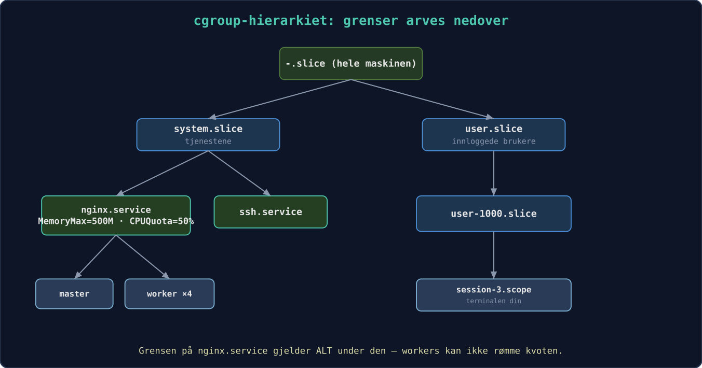
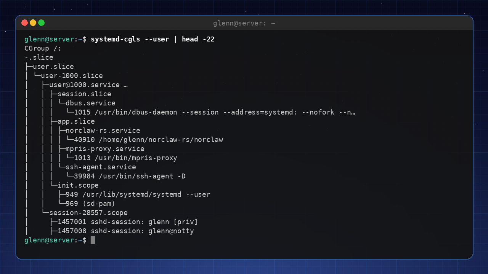
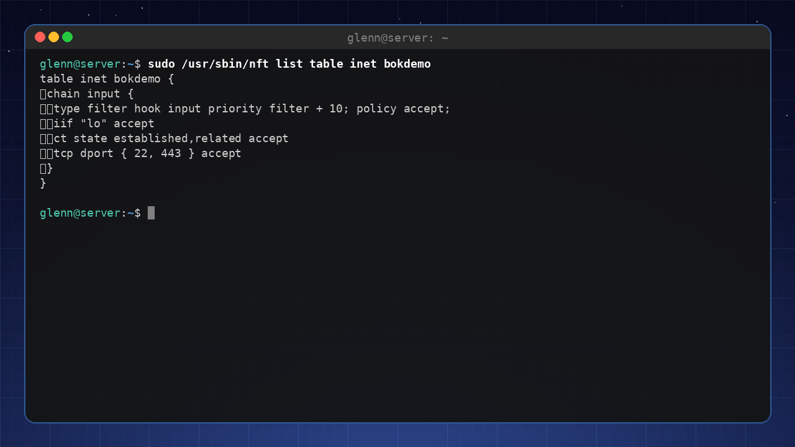
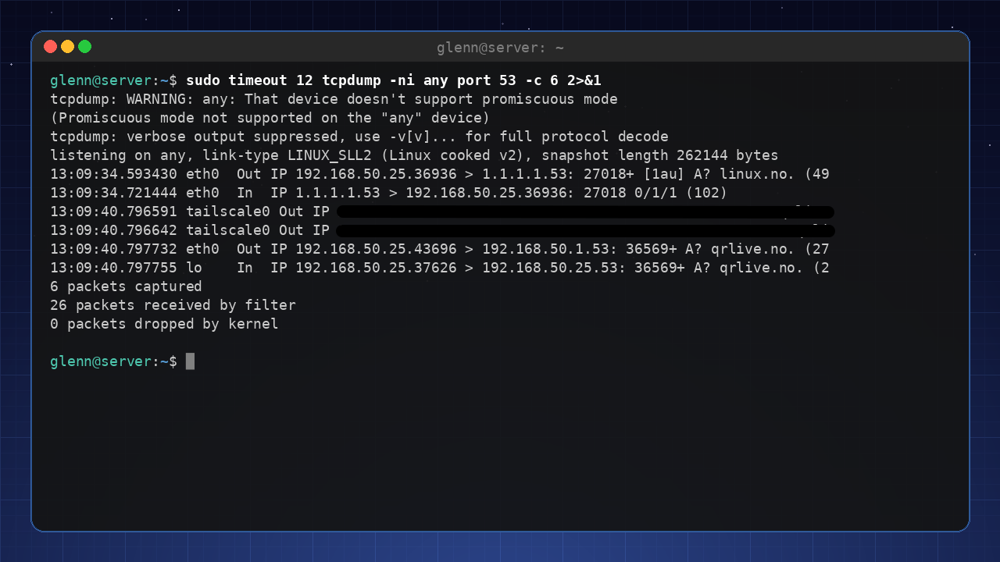
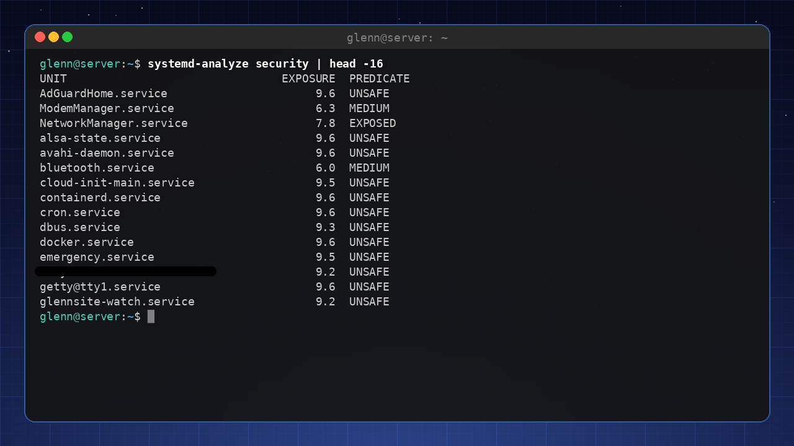

Linux for Eksperter 2027
Tredje bok i serien – for deg som vil mestre systemet på kildenivå og drifte egen infrastruktur som en proff.
Forord
Tredje bok i serien – for deg som forstår systemet ditt og nå vil mestre det på kildenivå, og drifte egen infrastruktur som en proff.
Du har fullført Linux for Viderekommende (eller tilsvarende): du er hjemme i terminalen, skripter med god samvittighet, kjører tjenester på en hjemmeserver og bruker Git daglig. Denne boken tar det siste steget – fra «forstår Linux» til «kan forklare, feilsøke og bygge alt».
Hva denne boken IKKE er: sertifiseringspensum (LPIC/RHCSA), enterprise-drift for store organisasjoner, eller programmeringskurs. Bevisst utelatt er også SELinux i dybden, rått WireGuard-oppsett (dekket i bok 2), Kubernetes i produksjonsdrift og immutable distroer – avgrensning, ikke forglemmelse. Det er fortsatt en bok for entusiasten – men nå med hele maskineriet åpent.
Den røde tråden: Gjennom boken bygger du ut hjemmelabben din til et komplett, overvåket, automatisert og herdet miljø – beskrevet som kode, slik at hele oppsettet kan gjenskapes med én kommando.
Velkommen til den tredje boken. Du har allerede oppdaget at Linux ikke er et operativsystem du «kan», men et verksted du blir stadig bedre kjent med. Nå skal vi åpne alle dørene.
«Ekspert» betyr her ikke at du husker alle flagg til tar
eller kan sitere man-sider utenat. Det betyr at du har
utviklet en intuisjon for hvordan systemet henger sammen, og at du kan
resonnere deg frem til løsninger på problemer du aldri har sett
før. Du skal lære å stille de riktige spørsmålene til maskinen – og å
forstå svarene.
Boken er bygget rundt hjemmelabben din. Den starter som et par maskiner og noen containere, og vokser gjennom kapitlene til et fullverdig, overvåket og selvhelbredende miljø. Det viktigste er likevel ikke sluttresultatet, men alle beslutningene og forståelsen du tilegner deg underveis. Fra kapittel 7 og utover blir alt du gjør versjonshåndtert og automatisert – målet er at du på siste side kan gjenskape hele labben med én enkelt kommando.
Vi holder oss til den samme vennlige tonen som i de tidligere bøkene. Du vil finne «Prøv selv»-oppgaver, og utfordrende partier er merket 🟡 (anbefalt smak) eller 🔴 (valgfri finale). Kapitlene følger en fast mal, men prinsippene går foran installasjonsmanualer. Verktøy endrer seg, forståelse består. Det gjelder også versjonsnumrene i boken – kjerner, image-tags, distroversjoner – som er slik de var da boken ble skrevet; prinsippene står seg selv om tallene rykker frem.
Tre nye grep skiller denne boken fra de forrige:
«Mål først». Fra nå av gjelder én regel for all
tuning: aldri juster noe du ikke har målt. Entusiasten setter
vm.swappiness=10 fordi en bloggpost sa det; eksperten måler
før og etter. Verktøyene får du underveis: fio for disk,
iperf3 for nettverk, hyperfine for
kommandoer.
«Anatomi av en hendelse». Hver del avsluttes med en ekte feilsøkingshistorie, fortalt slik den utspiller seg: symptom → hypoteser → kommandoer → funn → lærdom. Verktøy kan slås opp – det er resonneringen som gjør deg til ekspert.
Mesterprøven. Bakerst i boken (vedlegg D) venter ti oppgaver der noe er galt i labben din – plantet med vilje av en sabotasje-playbook. Ingen fasit før du har prøvd.
Hva du trenger
| Nivå | Utstyr | Holder til |
|---|---|---|
| Minimum | Én maskin med 16 GB RAM og VM-er | Alt i boken – hele labben kan være virtuell |
| Anbefalt | PC + én labbmaskin (gammel PC eller Pi) | Mer realistisk nettverk og drift |
| Luksus | Egen hypervisor-vert + Pi + NAS | Referansearkitekturen i vedlegg C |
Du klarer deg altså med maskinen du har. Tidsmessig: Del 1 og 2 er kveldsstoff (2–4 timer per kapittel), Del 3 er helgeprosjekter, og Del 4 tar du når krisene (eller nysgjerrigheten) melder seg. Labbens byggetrinn kapittel for kapittel finner du i vedlegg C.
Testet på: Kommandoer og pakkenavn i boken er
verifisert mot Debian 13 og Ubuntu 24.04-baserte systemer (inkludert
Linux Mint 22). Der distroene skiller lag, sier teksten fra.
(Eksempelutskrifter – kjerneversjoner, pakkeversjoner og lignende –
varierer med distro og tidspunkt, så ikke bli urolig om dine tall
avviker fra bokens.) Bruker du noe annet, er avvikene små – og nå har du
verktøyene til å finne dem. Vi skriver apt hele veien; på
Fedora heter det dnf, på Arch pacman – på ditt
nivå er den oversettelsen triviell (distro-safarien i bok 2 ga deg
kartet).
Nå er det på tide å se hva som virkelig foregår under panseret.
Et par ord fra forfatteren
Jeg er ikke systemadministrator av yrke. Til daglig er jeg prosjektleder i byggebransjen, hos en av de større aktørene i Norge – fremdrift, kontrakter og tall som skal stemme.
Men interessen for data har vært der siden jeg var ung, og for litt over et år siden bestemte jeg meg for å gi Linux en ordentlig sjanse. Jeg har ikke sett meg tilbake siden.
Denne boken er ikke skrevet av en veteran med tjue år i produksjonsdrift. Den er skrevet av en entusiast som har brent seg på nok hjemmelab til å vite hvor det gjør vondt – og som har lagt igjen arret i teksten hver gang, slik at du slipper å skaffe deg det selv.
Og en ting jeg synes du skal vite: denne boken er skrevet med god hjelp fra kunstig intelligens – Claude Fable har vært min viktigste sparringpartner, sammen med noen andre språkmodeller. Det er faktisk en del av historien om hvorfor Linux ble overkommelig for meg i utgangspunktet: å ha noen å spørre klokken elleve på kvelden, som aldri blir lei av det ellevte oppfølgingsspørsmålet, forandrer hvor bratt en læringskurve føles. Innholdet er mitt, og kommandoene er testet på ekte maskiner før de fikk stå – men jeg har hatt selskap underveis, og det unner jeg deg også.
Bruk boken som en verktøykasse, ikke som en eksamen. De beste kapitlene er de du kommer tilbake til klokken tre om natten.
Lykke til.
Glenn Roar Høye August 2026
1. Kjernen – motoren du aldri ser
Del 1: Systemet på dypet
I dette kapittelet lærer du:
- Kjernemoduler: laste, fjerne og svarteliste – og hvorfor
modprobenesten alltid slårinsmod. - Modulparametere: justere en driver med
modinfo -pogoptions-linjer, uten å kompilere noe. - Initramfs: mini-systemet som booter maskinen din – hva som må ligge der, og hvordan du unngår å ødelegge det.
- Kjerneparametere i sanntid med
sysctl– og kjernens kommandolinje i GRUB, systematisk. - Forskjellen på en oops og en panikk, kdump i korte trekk, og Magic SysRq som siste utvei.
- Hva Secure Boot betyr for tredjepartsmoduler – kunnskapen bak mang en svart skjerm.
- 🔴 Valgfritt: kompilere din egen kjerne – med realistiske advarsler og sikkerhetsnett.
Linux-kjernen er den første koden som kjører etter bootloaderen, og
den siste som gir slipp når maskinen slås av. For de fleste er den et
usynlig lag – du merker den bare når noe går galt. I dette kapittelet
gjør vi kjernen synlig. Underveis møter du et prinsipp som følger deg
gjennom hele boken: alt er en fil. Kjernens
innstillinger, modulenes parametere, til og med nødbremsen som kan
restarte en frossen maskin – alt ligger som lesbare og skrivbare filer
under /proc og /sys.
1.1 Kjernemoduler
Kjernen er modulær. Drivere og filsystemstøtte lastes ved behov. Med
lsmod ser du hvilke moduler som er aktive, og med
modprobe kan du laste eller fjerne dem manuelt. Moduler
ligger under /lib/modules/$(uname -r)/. Når du kobler til
en USB-disk, laster udev automatisk usb-storage og
ext4 (eller hva disken er formatert med).
Start med å finne ut hvilken modul som driver din egen maskinvare:
lspci -k | grep -A3 -i network # «Kernel driver in use:» er svaret
lsmod | grep <driver> # og der er den, med hvem som bruker denDu kan svarteliste moduler du ikke vil ha – for eksempel en
problematisk Wi-Fi-driver – med en fil i
/etc/modprobe.d/:
# /etc/modprobe.d/blacklist-pcspkr.conf
blacklist pcspkrMerk nyansen: blacklist hindrer bare automatisk
lasting via maskinvare-alias. Vil du forby modulen helt, også når noe
ber om den ved navn, bruker du den harde varianten
install pcspkr /bin/false – da «lykkes» lasting uten at noe
skjer.
Og prøver du å fjerne en modul som er i bruk
(sudo modprobe -r snd_hda_intel), får du sannsynligvis
«Module is in use» – PipeWire holder den. Den feilmeldingen er i seg
selv lærerik: kjernen nekter å fjerne moduler noen er avhengige av.
1.2 Modulparametere – juster driveren uten å kompilere
De fleste moduler har justerbare parametere – brytere og verdier
utvikleren har eksponert. modinfo -p lister dem med
forklaring:
modinfo -p snd_hda_intel | head -5power_save:Automatic power-saving timeout (in second, 0 = disable). (int)
power_save_controller:Reset controller in power save mode. (bool)
enable_msi:Enable Message Signaled Interrupt (MSI) (bint)
...Gjeldende verdier ligger – selvsagt – som filer, under
/sys/module/<modul>/parameters/:
cat /sys/module/snd_hda_intel/parameters/power_saveNoen av disse filene er skrivbare og kan endres i sanntid; andre
leses bare ved modul-lasting. Den permanente veien er en
options-linje i /etc/modprobe.d/:
# /etc/modprobe.d/audio.conf
options snd_hda_intel power_save=1Neste gang modulen lastes (i praksis: neste oppstart), gjelder
parameteren. Dette er verktøyet når internett sier «sett
options iwlwifi 11n_disable=8 for å fikse den ustabile
Wi-Fi-en» – nå vet du hva du faktisk gjør, og kan sjekke med
modinfo -p iwlwifi hva bryteren betyr. For moduler som er
kompilert inn i kjernen (ikke lastbare), settes det samme som
modul.parameter=verdi på kjernens kommandolinje – den
kommer vi til i 1.6.
1.3 modprobe vs. insmod – avhengigheter løses ikke av seg selv
Moduler avhenger av hverandre: ext4 trenger
mbcache og jbd2, mange nettverksdrivere
trenger felles hjelpebiblioteker. Kartet over avhengighetene ligger i
/lib/modules/$(uname -r)/modules.dep og bygges av
depmod:
modprobe --show-depends ext4 # hva ville modprobe lastet, i rekkefølge?insmod /lib/modules/6.8.0-134-generic/kernel/lib/crc16.ko
insmod /lib/modules/6.8.0-134-generic/kernel/fs/mbcache.ko
insmod /lib/modules/6.8.0-134-generic/kernel/fs/jbd2/jbd2.ko
insmod /lib/modules/6.8.0-134-generic/kernel/fs/ext4/ext4.koDer ser du hele arbeidsdelingen: insmod er
lavnivåverktøyet som laster én .ko-fil, uten å vite noe om
avhengigheter eller /etc/modprobe.d/. modprobe
er sjefen som slår opp i modules.dep, laster alt i riktig
rekkefølge og respekterer svartelister og options-linjer.
Derfor er insmod nesten aldri riktig valg – kjører du den
på en modul med udekkede avhengigheter, får du kryptiske «Unknown
symbol»-feil i dmesg. Det ene stedet insmod
hører hjemme: når du utvikler en modul selv og vil laste den ferske
.ko-filen din direkte fra byggekatalogen.
Har du kopiert en modulfil inn under /lib/modules/
manuelt (det skjer, f.eks. med en driver fra en leverandør), må du
oppdatere kartet før modprobe finner den:
sudo depmod -aPakker og DKMS gjør dette for deg – det er derfor du sjelden tenker på det.
1.4 Initramfs – mini-systemet før systemet
Her er et høna-og-egget-problem: kjernen trenger disk-driveren og filsystemmodulen for å montere rotfilsystemet – men modulene ligger på rotfilsystemet. Løsningen er initramfs: et lite, komprimert arkiv med akkurat de modulene og verktøyene som trengs for å komme seg til rot. Bootloaderen laster både kjernen og initramfs inn i minnet; kjernen pakker ut arkivet som et midlertidig rotfilsystem i RAM, kjører et lite skript som laster moduler, finner rotdisken (låser eventuelt opp kryptering, aktiverer LVM/RAID) – og bytter så til det ekte rotfilsystemet.
Hva må ligge der? Alt som står mellom kjernen og rotfilsystemet:
- Driveren for diskkontrolleren (
nvme,ahci,virtio_blki VM-er). - Filsystemmodulen for rot (
ext4,btrfs…). dm-crypt-moduler og verktøy hvis rot er kryptert – pluss tastaturdriver, ellers får du ikke skrevet passordfrasen!- LVM- eller mdadm-støtte hvis rot ligger der (kapittel 5).
Se selv hva som ligger i din:
lsinitramfs /boot/initrd.img-$(uname -r) | grep -E 'nvme|ext4|dm-crypt'Initramfs bygges av update-initramfs og må bygges på
nytt når forutsetningene endres – ny disk-kontroller, endret
/etc/crypttab, eller en
options-/blacklist-linje i
/etc/modprobe.d/ som skal gjelde allerede under boot:
sudo update-initramfs -u # oppdater for kjørende kjerne
sudo update-initramfs -u -k all # for alle installerte kjernerHvis du bruker Fedora/Arch: samme jobb gjøres av
dracut (Fedora) og mkinitcpio (Arch,
konfigurert via HOOKS=(...) i
/etc/mkinitcpio.conf). Prinsippet – og feilmodusene – er
identiske.
Og når det går galt? Mangler en nødvendig modul, finner ikke kjernen rotfilsystemet. Etter et tidsavbrudd lander du i initramfs-ets nødskall – en spartansk BusyBox-prompt:
Gave up waiting for root file system device.
(initramfs) _Det ser ut som verdens ende, men er faktisk et verktøy: du
kan liste enheter med ls /dev, laste moduler manuelt med
modprobe og montere rot for hånd. Hele redningsprosedyren –
inkludert chroot fra live-USB for å kjøre update-initramfs
på nytt – er tema i kapittel 16.
⚠️ En ødelagt initramfs = en maskin som ikke booter. Derfor: ikke slett gamle kjerner i det øyeblikket en ny er installert. GRUB beholder forrige kjerne (med sin egen, fungerende initramfs) under «Advanced options» – det er sikkerhetsnettet ditt. Test alltid at ny kjerne booter før du rydder bort den gamle.
1.5 Kjerneparametere og sysctl
Kjernens oppførsel kan justeres i sanntid via
/proc/sys/. Verktøyet sysctl gir deg en ryddig
vei til disse. Skriv sysctl -a og la deg fascinere – her
finner du alt fra nettverksinnstillinger
(net.core.somaxconn) til minnehåndtering
(vm.swappiness). Punktumene i navnet er bokstavelig talt
katalogskiller: vm.swappiness er filen
/proc/sys/vm/swappiness, og cat og
echo fungerer like godt som sysctl. Ved å
legge linjer i /etc/sysctl.d/ gjør du endringer permanente
(sudo sysctl --system laster dem på nytt uten omstart).
Typiske parametere du vil justere på en server: -
vm.swappiness=10 – gjør at systemet holder seg unna swap så
lenge som mulig (hele historien om swap og minne kommer i kapittel 3). -
net.ipv4.ip_forward=1 – slår på ruting (du trenger den i
kapittel 10). - kernel.sysrq=1 – aktiverer Magic SysRq for
nødgjenoppretting (se 1.7).

1.6 Kjernens kommandolinje – GRUB, e-tasten og /proc/cmdline
Bootloaderen (GRUB) sender kommandolinjeargumenter til kjernen. Du
har kanskje brukt nomodeset for å få grafikk til å fungere.
De permanente parameterne ligger i /etc/default/grub under
GRUB_CMDLINE_LINUX_DEFAULT; etter endring kjører du
sudo update-grub. Med quiet og
splash fjerner du mesteparten av oppstartsmeldingene – men
som ekspert lar du dem gjerne være av, for å fange opp feil mens de
skjer.
Fasiten – hva kjernen faktisk fikk ved denne oppstarten – står alltid i:
cat /proc/cmdlineBOOT_IMAGE=/boot/vmlinuz-6.8.0-134-generic root=UUID=3f1c... ro quiet splashSjekk den før du feilsøker «hvorfor virker ikke parameteren min?» –
ofte er svaret at den aldri kom med (glemt update-grub,
eller feil variabel i /etc/default/grub).
Ikke alle booter med GRUB: systemd-boot og UKI. En økende andel systemer – Pop!_OS, enkelte Fedora-varianter, mange Arch-oppsett – bruker systemd-boot i stedet. Den leser oppføringene sine rett fra ESP-partisjonen;
bootctl listviser dem, ogbootctl statusviser hvilken bootloader du faktisk har. Her finnes ingenupdate-grubå glemme: kjernepakker legger inn oppføringer viakernel-install, og kommandolinjen ligger som klartekst i oppføringsfilene på ESP-en. Neste steg i samme utvikling er Unified Kernel Images (UKI): kjerne, initramfs og kommandolinje pakket i én EFI-binær som kan signeres under ett – noe som spiller svært godt sammen med Secure Boot (1.8). Redningsteknikkene i kapittel 16 gjelder uansett; det er bare bootloader-reparasjonen som er annerledes (bootctl installi stedet forgrub-install). Og/proc/cmdlineer fasiten uansett bootloader.
Midlertidig redigering – ekspertens favorittknep: I
GRUB-menyen (hold Shift eller trykk Esc under oppstart hvis menyen er
skjult) trykker du e på en oppføring, redigerer linjen som
starter med linux, og booter med Ctrl+X. Endringen gjelder
kun denne ene oppstarten – perfekt for eksperimenter, og helt
ufarlig: neste boot er alt som før.
Parametere som er verdt å kunne utenat:
| Parameter | Gjør | Når |
|---|---|---|
nomodeset |
Skrur av kjernens grafikkoppsett | Svart skjerm under boot (kapittel 17) |
systemd.unit=rescue.target |
Boot til enbruker-modus med rot-skall | Feilsøking av tjenester som henger boot |
systemd.unit=emergency.target |
Enda mer minimalt – knapt noe montert | Ødelagt /etc/fstab |
init=/bin/bash |
Hopp over systemd helt – rett i et skall | Glemt root-passord, totalhavarert init |
console=ttyS0,115200 |
Konsoll på seriellport | Hodeløse labbservere og VM-er (virsh console!) |
mitigations=off |
Skrur av CPU-sårbarhetstiltak | ⚠️ Se under |
init=/bin/bash fortjener en fotnote: du lander i et
skall der rot er montert skrivebeskyttet og ingenting annet
kjører – husk mount -o remount,rw / før du endrer noe, og
sync før du tvinger omstart. Kapittel 16 bruker dette som
ett av redningsverktøyene.
⚠️ mitigations=off gir målbart mer ytelse på eldre
CPU-er ved å skru av beskyttelsen mot Spectre/Meltdown-klassens
sårbarheter. På en isolert labbmaskin kan det være et bevisst valg – på
alt som kjører fremmed kode (nettleser! containere med andres images!)
er det en dårlig idé. Trusselmodell-tenkningen som avgjør slikt kommer i
kapittel 15.
1.7 Oops, panikk og Magic SysRq
To ord blandes ofte, og forskjellen er viktig:
En oops er kjernens «unntak»: den traff en bug
(typisk null-peker i en driver), skriver en feilrapport til loggen,
dreper prosessen som var involvert – og fortsetter å kjøre. Du
finner den i sudo dmesg eller journalctl -k,
gjenkjennelig på «Oops:» eller «BUG:» fulgt av en «Call Trace». Etter en
oops er kjernen merket tainted og i ukjent forfatning:
lagre loggene, planlegg en omstart – men du rekker å avslutte pent.
En kjernepanikk er når kjernen ikke kan fortsette uten å risikere datakorrupsjon – ofte en oops på et sted der det ikke finnes noen prosess å ofre (avbruddskontekst), eller at rotfilsystemet aldri lot seg montere. Da fryser alt, med en dump på skjermen. Slik leser du den viktigste linjen:
RIP: 0010:usb_submit_urb+0x1f/0x5a0 [usbcore]RIP er instruksjonspekeren: krasjet skjedde i funksjonen
usb_submit_urb, 0x1f byte inn i den, og modulnavnet i
klammer – [usbcore] – er hovedmistenkt. Funksjonsnavnene
slås opp automatisk mot kjernens symboltabell
(/proc/kallsyms på et kjørende system, filen
System.map-$(uname -r) i /boot). Står det en
tredjepartsmodul i klammene ([nvidia], [zfs]),
har du nesten alltid synderen. Ingen klammer betyr kjernens egen kode –
da er defekt maskinvare (RAM!) statistisk sett vanligste årsak, ikke en
kjernebug.
kdump – obduksjon i stedet for gjetning:
Panikkskjermen rekker du sjelden å lese, og den overlever ikke omstart.
kdump løser det med kexec: en reserve-kjerne
ligger klar i et avsatt minneområde (parameteren
crashkernel= på kommandolinjen – på Debian/Ubuntu setter
kdump-tools den automatisk for deg), og ved panikk starter
den – uten omstart av maskinvaren – og skriver et minnebilde
til /var/crash/:
sudo apt install kdump-tools # svar ja til å aktivere
kdump-config show # «ready to kdump» er måletFor hjemmelabben er selve dump-analysen (verktøyet
crash) sjelden verdt bryet – men at dumpen finnes,
med loggen fra panikkøyeblikket i dmesg-filen ved siden av,
gjør «maskinen restartet i natt» til et løsbart mysterium i stedet for
et frustrerende ett.
Magic SysRq – nødbremsen: Når maskinen virker
frossen, lytter kjernen ofte fortsatt på ett nivå under alt annet:
tastekombinasjonen Alt+SysRq (SysRq deler som regel tast med PrtSc)
pluss en kommandobokstav. Hva som er lov styres av
kernel.sysrq – en bitmaske der 1 betyr «alt»
og f.eks. 176 (vanlig standard) bare tillater sync, remount
og reboot. Sett kernel.sysrq=1 i
/etc/sysctl.d/ på labbmaskiner.
Klassikeren er sekvensen REISUB (hold Alt+SysRq, trykk bokstavene med et par sekunders mellomrom): Raw (ta tastaturet tilbake fra grafikkmiljøet), tErm (SIGTERM til alle – kapittel 2 forklarer hvorfor TERM før KILL), kIll (SIGKILL til resten), Sync (skriv buffere til disk), Umount (remonter alt skrivebeskyttet), reBoot. Det er en kontrollert nødlanding – i motsetning til strømknappen, som er å hoppe uten fallskjerm for filsystemene.
Og fordi alt er en fil: samme kommandoer kan sendes via
/proc/sysrq-trigger – uvurderlig når du er inne via SSH på
en maskin der lokalkonsollen er død:
echo s | sudo tee /proc/sysrq-trigger # sync
echo b | sudo tee /proc/sysrq-trigger # umiddelbar reboot – INGEN sync først, gjør s og u selv!1.8 Secure Boot og signerte moduler
Én mekanisme forklarer forbausende mange «driveren installerte fint, men virker ikke»-mysterier: UEFI Secure Boot. Med Secure Boot på starter fastvaren bare bootloadere som er kryptografisk signert; distroens shim og kjerne er signert, og kjernen går i lockdown-modus – den nekter å laste usignerte moduler. Sjekk din egen status:
mokutil --sb-state # SecureBoot enabled/disabled
sudo dmesg | grep -i 'secure boot\|lockdown'For alt som kommer fra distroens pakkelager er dette usynlig –
modulene er signert med distroens nøkkel. Problemet er
tredjepartsmoduler bygget lokalt via DKMS:
NVIDIA-driveren, VirtualBox, ZFS. De bygges på din maskin og kan umulig
være forhåndssignert. Løsningen er MOK (Machine Owner
Key): en nøkkel du eier, som du melder inn i fastvaren med
mokutil, og som DKMS deretter signerer modulene med.
Debian/Ubuntu/Mint setter opp dette halvautomatisk: under installasjonen
av en DKMS-pakke blir du bedt om et engangspassord, og ved neste
oppstart dukker en blå «MOK Manager»-skjerm opp – ikke hopp over
den; velg «Enroll MOK» og oppgi passordet. Hopper du over, er
symptomet klassisk:
sudo modprobe nvidia
# modprobe: ERROR: could not insert 'nvidia': Key was rejected by serviceModulen er perfekt bygget – kjernen nekter bare å stole på den.
Alternativene er å melde inn nøkkelen i etterkant
(mokutil --import /var/lib/dkms/mok.pub eller distroens
variant – stien varierer, så finn din med
sudo find /var/lib -name 'mok*' 2>/dev/null – deretter
omstart og MOK Manager) eller å skru av Secure Boot i fastvaren – et
helt legitimt valg på en labbmaskin, men en avveining du bør ta bevisst
(kapittel 15). Hele dramaet «NVIDIA-driver + Secure Boot = svart skjerm»
får sin praktiske behandling i kapittel 17 – nå vet du allerede
hvorfor det skjer.
1.9 🔴 Valgfri finale: Kompiler din egen kjerne
Dette er mer dannelsesreise enn nødvendighet. Når du starter opp med en kjerne du selv har satt sammen, forsvinner mye av mystikken – og du får en uvurderlig forståelse av hvilke komponenter som faktisk utgjør en kjerne. Men la oss være ærlige om hva du gir avkall på først:
- Distro-patchene: Distroens kjerne er ikke vaniljekjernen fra kernel.org – den har hundrevis av patcher (maskinvarefikser, AppArmor-oppsett, tilbakeporterte sikkerhetsfikser). Din egen bygde kjerne har dem ikke.
- Sikkerhetsoppdateringer: Distroens kjerne
oppdateres av
apt; din vedlikeholder du selv – eller lar den råtne. - Secure Boot: Din egenbygde kjerne er usignert. Med Secure Boot på booter den rett og slett ikke – du må enten signere den med din MOK-nøkkel (se 1.8) eller skru av Secure Boot mens du eksperimenterer.
Derfor: gjør dette i en VM, eller på labbmaskinen der forrige kjerne uansett står klar i GRUB.
Selve konfigurasjonen er halve læringen, og her finnes tre veier:
make menuconfig– det interaktive menysystemet. Fascinerende å utforske, men å svare fornuftig på 12 000 valg fra bunnen av er urealistisk.make oldconfig– start fra en eksisterende konfig (kopier distroens:cp /boot/config-$(uname -r) .config) og bli bare spurt om nye valg. Den fornuftige standardveien.make localmodconfig– som oldconfig, men skrur av alle moduler som ikke er lastet akkurat nå. Byggetiden stuper (minutter i stedet for timer) – men plugg inn USB-tingene dine først, ellers bygger du en kjerne uten støtte for dem.
sudo apt build-dep linux # byggeverktøyene
tar xf linux-6.x.tar.xz && cd linux-6.x # nyeste stabile fra kernel.org
cp /boot/config-$(uname -r) .config # start fra distroens konfig
make olddefconfig # som oldconfig, men tar standardsvar på alt nytt
make -j$(nproc) # kaffe. mye kaffe. (localmodconfig: én kopp)
sudo make modules_install install # legger kjerne+initramfs i /boot og kjører update-grub(linux-6.x er en plassholder – hent nyeste stabile fra
kernel.org, 6.x-serien, og velg gjerne siste LTS hvis du vil slippe å
oppgradere ofte.)
Det siste steget er viktigere enn det ser ut:
make install legger til den nye kjernen i GRUB –
den erstatter ingenting. Distrokjernen din ligger fortsatt under
«Advanced options» som fallback, med sin egen initramfs. Booter den nye
kjernen ikke (og det gjør den gjerne ikke på første forsøk – det er
halve poenget), velger du bare den gamle og prøver igjen. Samme
sikkerhetsnett som i 1.4: slett aldri en fungerende kjerne før
etterfølgeren har bevist seg.
Prøv selv:
- Finn driveren til nettverkskortet ditt med
lspci -k, og se den ilsmod. Last og fjern deretter en ufarlig modul:sudo modprobe pcspkr && sudo modprobe -r pcspkr, og se hendelsene medsudo dmesg | tail. - Velg en modul du faktisk bruker (f.eks.
snd_hda_inteleller Wi-Fi-driveren din), kjørmodinfo -ppå den, og les gjeldende verdier i/sys/module/<modul>/parameters/. Kjenner du igjen noen av bryterne fra forum-tråder du har fulgt? - Kjør
modprobe --show-depends ext4og sammenlign medgrep ext4 /lib/modules/$(uname -r)/modules.dep– du ser det samme kartet fra to vinkler. - Se inn i din egen initramfs:
lsinitramfs /boot/initrd.img-$(uname -r) | grep -E 'nvme|ahci|ext4|btrfs'. Finner du driveren for din diskkontroller og ditt rotfilsystem? - Sammenlign
cat /proc/cmdlinemedGRUB_CMDLINE_LINUX_DEFAULTi/etc/default/grub. Sjekk ogsåmokutil --sb-state– er Secure Boot på hos deg? - 🟡 Boot én gang til redningsmodus: trykk
ei GRUB-menyen, leggsystemd.unit=rescue.targettil pålinux-linjen, og boot med Ctrl+X. Se deg rundt, ogreboot– neste oppstart er helt normal. (Gjør det gjerne i en VM første gang.) - 🟡 Aktiver full SysRq (
sudo sysctl kernel.sysrq=1) og test den ufarligste kommandoen:echo s | sudo tee /proc/sysrq-trigger, og se «Emergency Sync complete» isudo dmesg | tail. Nå vet du at nødbremsen virker – før du trenger den. - 🔴 I en VM: installer
kdump-tools, verifiser medkdump-config show, og utløs en kontrollert panikk medecho c | sudo tee /proc/sysrq-trigger. Se VM-en kexec-boote, og finn obduksjonsrapporten under/var/crash/. Lesdmesg-filen der og identifiser RIP-linjen. - 🔴 Bygg din egen kjerne i en VM etter oppskriften i 1.9 – med
localmodconfigfor å holde byggetiden nede. Boot den, kjøruname -rog nyt synet. Boot så tilbake til distrokjernen via «Advanced options», så du har øvd på sikkerhetsnettet også.
Det viktigste fra dette kapittelet
modprobeløser avhengigheter viamodules.dep(bygget avdepmod) og leser/etc/modprobe.d/;insmodgjør ingen av delene – bruk den bare på moduler du selv har bygget.- Modulparametere:
modinfo -pviser dem,/sys/module/<m>/parameters/viser gjeldende verdier,options-linjer i/etc/modprobe.d/gjør dem permanente. - Initramfs inneholder alt mellom kjernen og rotfilsystemet;
update-initramfs -ubygger den,lsinitramfsviser innholdet, og mangler noe, lander du i(initramfs)-skallet (kapittel 16). Forrige kjerne i GRUB er sikkerhetsnettet – slett den aldri for tidlig. sysctljusterer kjernen i sanntid via/proc/sys/;/etc/sysctl.d/gjør det permanent.- Kommandolinjen:
ei GRUB endrer én oppstart,/etc/default/grub+update-grubendrer alle, og/proc/cmdlineer fasiten. Booter systemet med systemd-boot/UKI i stedet for GRUB, er verktøyenebootctlogkernel-install– ingenupdate-grub.systemd.unit=rescue.targetoginit=/bin/basher redningsverktøy;mitigations=offer en avveining, ikke en gratis lunsj. - Oops = kjernen halter videre (les
journalctl -k, planlegg omstart); panikk = full stopp. RIP-linjen med modulnavn i klammer peker på synderen; kdump gir deg obduksjonen, Magic SysRq (REISUB) gir deg den kontrollerte nødlandingen. - Secure Boot krever signerte moduler: DKMS-moduler signeres med din
MOK-nøkkel via
mokutil– «Key was rejected by service» betyr manglende innmelding, ikke ødelagt driver (kapittel 17). - Egen kjerne koster deg distro-patcher, automatiske oppdateringer og
Secure Boot-signatur – bygg med
oldconfig/localmodconfigfra distroens.config, og behold alltid en fungerende kjerne i GRUB.
2. Prosesser, signaler og cgroups
Del 1: Systemet på dypet
I dette kapittelet lærer du:
- Hva en prosess egentlig er – og hvordan du leser alt om den
i
/proc. - Signaler: språket du snakker til prosesser med, og hvorfor SIGKILL bør være siste utvei.
- Prosesstreet og tilstandene – sannheten om zombier og de udrepelige.
- Prioriteter med
niceogionice– og hvorfor de bare er ønsker. - Cgroups: hvordan systemd (og containere) setter grenser prosesser ikke kan rømme fra.
- Slicer, scoper og tjenester: systemds kart over cgroup-treet – og hvordan du velger hvem OOM-killeren tar først.
- Capabilities: root delt opp i biter – broen til herding (kapittel 15) og containere (kapittel 13).
- To systemd-triks du bruker resten av boken: drop-ins og template-units.
En prosess er et program i utførelse – så langt nybegynnerdefinisjonen. Eksperten trenger mer: hvordan prosesser blir til, hvordan de dør, hvordan du snakker til dem mens de lever, og hvordan du setter grenser de ikke kan rømme fra. Det siste er grunnmuren under containerne i kapittel 13 – og under hendelsen som avslutter del 1, da OOM-killeren valgte feil offer.
2.1 Hva en prosess egentlig er
Hver prosess har en PID og en forelder
(PPID) – alle er etterkommere av PID 1 (systemd). Men
det virkelig nyttige er at hele prosessens indre liv ligger åpent i
/proc/<PID>/ – «alt er en fil»-prinsippet fra
kapittel 1 i praksis:
ls /proc/$$/ # $$ = PID-en til skallet du sitter i
cat /proc/$$/cmdline # kommandolinjen den ble startet med
ls -l /proc/$$/cwd # symlenke til arbeidskatalogen – akkurat nå
ls -l /proc/$$/fd # alle åpne filer, sockets og pipes
grep -E 'State|VmRSS' /proc/$$/status # tilstand og faktisk minnebruk/proc/<PID>/fd er undervurdert i feilsøking:
«hvilken fil skriver denne prosessen egentlig til?» besvares med én
ls -l. (Verktøyet lsof fra kapittel 4 er i
praksis en pen frontend til akkurat dette.)
Resten av katalogen er en svarbok – hver fil besvarer sitt feilsøkingsspørsmål:
tr '\0' '\n' < /proc/$$/environ # miljøet den STARTET med (null-separert, derav tr)
cat /proc/$$/limits # ulimits som faktisk gjelder – «too many open files»?
cat /proc/$$/io # bytes lest og skrevet – hvem sliter på disken?
cat /proc/$$/sched # fått CPU eller bare ventet? (kjøretid, kontekstbytter)
cat /proc/$$/smaps_rollup # minnet, ærlig fordeltTo av dem fortjener utdyping. environ er svaret når en
tjeneste «ikke ser» variabelen du satte – du satte den i skallet ditt,
ikke i tjenestens miljø, og her ser du fasit. Og
smaps_rollup retter en løgn i ps: RSS teller
delte biblioteker fullt ut i hver prosess som bruker dem.
Feltet Pss fordeler delt minne rettferdig mellom brukerne,
og Private_Dirty er det bare denne prosessen holder på –
tallet som faktisk frigjøres om den dør. Ti nginx-workers som «bruker 50
MB hver» i ps, deler i virkeligheten det meste. Verktøyene
smem og ps_mem gjør denne regningen for alle
prosesser samtidig og sorterer etter Pss – kjekt når du vil finne den
faktiske minnesynderen. (Vil du se det per minneområde i stedet
for som sum: smaps, samme katalog.)
Og når ps aux viser for mye: bygg din egen visning med
-o:
ps -o pid,ppid,stat,ni,rss,cmd -p $$ # nøyaktig kolonnene du bryr deg om
ps -eo pid,ppid,stat,cmd --forest | less # hele treet, med innrykk2.2 Signaler – språket til prosesser
kill sender signaler, ikke nødvendigvis død. De du
faktisk møter:
| Signal | Nr | Betydning | Kan fanges? |
|---|---|---|---|
| SIGTERM | 15 | «Vennligst avslutt» – prosessen får rydde opp | Ja |
| SIGKILL | 9 | «Dø nå» – kjernen fjerner prosessen direkte | Nei |
| SIGHUP | 1 | «Linjen røk» – tjenester bruker den ofte til å laste konfig på nytt | Ja |
| SIGINT | 2 | Ctrl+C i terminalen | Ja |
| SIGSTOP / SIGCONT | 19/18 | Frys / tin (SIGSTOP kan heller ikke fanges) | Nei / Ja |
| SIGUSR1/2 | 10/12 | «Til fri bruk» – ber f.eks. dd om statusrapport |
Ja |
(kill -l lister alle; man 7 signal
forklarer dem.)
Hvorfor rekkefølgen TERM → KILL betyr noe: SIGTERM
kan prosessen fange (med trap, som i skriptene
dine fra bok 2) og bruke til å lukke filer, tømme buffere og logge ut av
databasen. SIGKILL leveres aldri til prosessen – kjernen bare fjerner
den: ingen opprydding, halvskrevne filer, etterlatte låsefiler. Derfor:
kill PID, vent noen sekunder, så eventuelt
kill -9. (systemd gjør nettopp dette ved
systemctl stop: TERM, frist, så KILL.)
I praksis treffer du prosesser på navn, ikke nummer:
pgrep -a jellyfin # finn og vis – alltid pgrep FØR pkill
pkill -HUP nginx # be alle nginx-prosessene lese konfig på nytt
sudo systemctl kill -s HUP nginx # samme, men presist avgrenset til tjenestens cgroupDen siste er ekspertens variant: systemctl kill treffer
nøyaktig prosessene som tilhører tjenesten – aldri en tilfeldig
prosess som deler navn. (Og unngå å venne deg til killall:
på enkelte andre Unix-systemer betyr den bokstavelig talt «drep
alt».)
2.3 Prosesstreet, zombier og de udrepelige
pstree -p viser slektskapet. To skjebner er verdt å
forstå:
Foreldreløse («orphans»): dør forelderen først, adopteres barnet av PID 1 (eller en subreaper, som en terminalmultiplekser). Helt udramatisk – det er slik nohup-jobber og tmux-økter overlever.
Zombier (Z i STAT-kolonnen): prosessen
er ferdig, men forelderen har ikke hentet ut exit-koden ennå.
En zombie bruker ingen CPU og intet minne – bare en rad i
prosesstabellen. Den kan ikke drepes, for den er allerede død; det som
hjelper, er at forelderen rydder opp (eller selv dør, så PID 1
overtar). Se en bli født og dø:
python3 -c 'import os,time
if os.fork() == 0: exit() # barnet avslutter straks
time.sleep(15)' # forelderen venter uten å hente exit-koden
# i en annen terminal, innen 15 sekunder:
ps -eo pid,stat,cmd | grep -w Z # <defunct> – der er zombienEtter 15 sekunder dør forelderen, og zombien forsvinner med den. Mange zombier fra samme program er en bug i programmet – ikke i Linux.
De virkelig udrepelige er ikke zombiene, men
D-tilstanden: uavbrytelig søvn, nesten alltid
venting på I/O (døende disk, hengt NFS-montering). En D-prosess
ignorerer selv SIGKILL – den kan ikke avbrytes midt i et kjernekall. Ser
du prosesser låst i D: slutt å skyte på prosessen og finn I/O-problemet
(iotop, dmesg – kapittel 4 tar jakten
videre).
Tilstandene du leser i ps: R kjører,
S sover (normalt), D venter på I/O,
T stoppet, Z zombie.
2.4 Nice og ionice – prioritet uten garantier
Før de harde grensene: de myke. nice senker
CPU-prioriteten (0 er standard, 19 er «bakerst i køen»),
renice endrer en kjørende prosess, og ionice
gjør det samme for disk:
nice -n 19 tar czf backup.tar.gz ~/data # start snilt
sudo renice 19 -p 4242 # gjør en kjørende snill
ionice -c 3 -p 4242 # I/O-klasse idle: disk kun når ingen andre vil ha denMerk begrensningen: nice hjelper bare når det er kamp om
ressursene, og garanterer ingenting. Til batchjobber er det ofte alt du
trenger – hendelse #3 senere i boken løses med
IOSchedulingClass=idle, som er systemds måte å si
ionice -c 3 på. Trenger du garantier, går du til
cgroups.
Og helt i den andre enden av skalaen: sanntid.
chrt setter POSIX-sanntidsklassene (SCHED_FIFO/RR), som går
foran alt ordinært – nice-verdier inkludert:
chrt -p 4242 # vis klasse og prioritet for en kjørende prosess
sudo chrt -f 50 lydprosessering # SCHED_FIFO, prioritet 50 – foran alt vanlig🔴 Behandle chrt som en ladd pistol: en sanntidsprosess
i evig løkke gir aldri frivillig fra seg CPU-en, og kan i praksis fryse
maskinen – ikke engang SSH-økten du skulle redde deg med, får kjøretid.
Bruk det kun til korte, velprøvde lyd- og målejobber, og nekt tjenester
som ikke trenger det, hele muligheten med
RestrictRealtime=yes (kapittel 15).
2.5 Cgroups – harde grenser, målt forbruk
Control groups (cgroups v2) er kjernens mekanisme for å
begrense, måle og isolere ressursbruk for
grupper av prosesser. Systemd organiserer hele maskinen i et
cgroup-tre – se det selv med systemd-cgls:

Figuren viser: direktiver som MemoryMax= og
CPUQuota= settes på grener og arves nedover i hierarkiet –
nginx kan ikke rømme fra kvoten ved å starte flere workers.

Grensene settes i unit-filer (eller drop-ins, se 2.9):
[Service]
MemoryHigh=400M # myk grense: over denne bremses prosessen og minne gjenvinnes aggressivt
MemoryMax=500M # hard grense: over denne → OOM-drap, men KUN innenfor denne cgroupen
CPUQuota=50% # hard CPU-grense: maks en halv kjerne, uansett hvor ledig maskinen er
CPUWeight=50 # myk: halv vekt NÅR det er kamp om CPU (standard er 100)Skillet myk/hard er ekspertkunnskapen her: MemoryHigh
gir tjenesten en sjanse til å oppføre seg (og deg et utslag i
metrikker), MemoryMax er giljotinen – men en lokal
giljotin som beskytter resten av maskinen. Det er nøyaktig medisinen fra
hendelse #1: fotoindekseringen fikk MemoryHigh, og
databasen slapp å dø for dens synder.
Minne og CPU er bare to av kontrollerne. Her er de fire du faktisk kommer til å bruke – hver grense finnes både som fil i cgroupen og som systemd-direktiv:
| Ressurs | Fil i cgroupen | systemd-direktiv | Typisk bruk |
|---|---|---|---|
| CPU | cpu.max |
CPUQuota= |
tøyle en CPU-glupsk jobb |
| Minne | memory.high / memory.max /
memory.swap.max |
MemoryHigh= / MemoryMax= /
MemorySwapMax= |
brems / giljotin / swap-tak |
| I/O | io.max / io.latency |
IOReadBandwidthMax= m.fl. /
IODeviceLatencyTargetSec= |
båndbreddetak / latensmål |
| Prosessantall | pids.max |
TasksMax= |
fork-bombe-vern |
To av dem fortjener en fotnote. io.latency er ikke et
tak, men et mål: du sier «denne gruppen skal ha maks 10 ms
I/O-latens», og kjernen struper de andre gruppene når målet
ryker – riktig verktøy når databasen skal ha førsterett til disken. Og
pids.max er det undervurderte fork-bombe-vernet: en
tjeneste som forviller seg inn i evig forking, stanger i taket i sin
egen cgroup i stedet for å fylle hele prosesstabellen. (systemd setter
allerede DefaultTasksMax= på alle tjenester – det er derfor
en klassisk fork-bombe i en tjeneste ikke lenger feller hele
maskinen.)
Filene kan leses – og skrives – direkte:
cat /sys/fs/cgroup/system.slice/ssh.service/pids.max
echo 200 | sudo tee /sys/fs/cgroup/system.slice/ssh.service/pids.max # gjelder til restartMen sett heller grensen i unit-filen (TasksMax=200):
sysfs-endringer forsvinner ved neste omstart – samme lekse som med
sysctl i kapittel 1.
Og alt kan måles mens det kjører – cgroups fører regnskapet uansett om du har satt grenser:
cat /sys/fs/cgroup/system.slice/ssh.service/memory.current # faktisk bruk, akkurat nå
systemd-cgtop # «top», men per cgroupEngangsjobber trenger ikke unit-fil – systemd-run lager
en midlertidig:
systemd-run --user -p CPUQuota=10% dd if=/dev/zero of=/dev/nullDette er grunnfjellet containerne i kapittel 13 står på: en container er i bunn og grunn prosesser i en cgroup pluss namespaces. Forstår du treet over, har du allerede forstått halve containerteknologien.
2.6 Slicer, scoper og tjenester – systemds kart over treet
Du har sett systemd-cgls – nå skal du lese utskriften
som en innfødt. systemd bygger treet av tre unit-typer:
.sliceer grenene – ren gruppering, ingen egne prosesser. Grenser satt på en slice gjelder summen av alt under den..serviceer løvene systemd selv starter – hver tjeneste i sin egen cgroup, derfor treffersystemctl killså presist..scopeer prosesser som oppsto et annet sted, men skal bokføres i treet: SSH-økter, terminalvinduer,systemd-run --scope-jobber, VM-er.
Toppen av treet er alltid den samme: system.slice (alle
systemtjenester), user.slice (én
user-<UID>.slice per innlogget bruker) og
machine.slice (VM-er og containere, kapittel 13–14). Det
gir umiddelbart nyttige håndtak – vil du at alle brukerøkter til
sammen aldri skal kvele tjenestene, setter du grensen på
user.slice, ett sted:
systemd-cgls /system.slice # én gren av gangen
systemd-cgtop -m # «top» per cgroup, sortert på minne (-c CPU, -i I/O)
systemctl status 4242 # ekspert-trikset: hvilken unit EIER denne PID-en?
sudo systemctl set-property user.slice MemoryHigh=4G # grense på en hel gren, liveEgne grener lager du med Slice=: definer
batch.slice med CPUWeight=20, sett
Slice=batch.slice i alle batchjobbene dine – én grense,
mange tjenester.
2.7 Hvem skal dø?
OOMScoreAdjust= mot MemoryMax=
Går hele maskinen tom for minne, våkner kjernens OOM-killer og velger offer etter poengsum – hele regnestykket tar kapittel 3. Men kortene kan du se allerede nå:
cat /proc/$$/oom_score # kjernens terningkast: høyere tall dør først
cat /proc/$$/oom_score_adj # din tommel på vektskålen: −1000 til +1000OOMScoreAdjust= i en unit-fil setter det siste tallet:
-500 sier «ta noen andre først», +500 sier «ta
gjerne meg». (-1000 betyr «aldri» – reservert for ting som
sshd; bruk det med respekt, for en udrepelig minnelekkasje er et
mareritt.)
Dermed har du to verktøy som ofte forveksles, med hver sin jobb:
MemoryMax=er en lokal hard grense: den beskytter resten av maskinen mot denne tjenesten. Sett den på de mistenkte – tjenester som kan finne på å ese.OOMScoreAdjust=påvirker det globale valget: den beskytter denne tjenesten mot resten av maskinen. Sett den (negativt) på ofrene som må overleve – databasen, SSH.
Hendelse #1 i etterpåklokskapens lys: fotoindekseringen skulle hatt
MemoryHigh=/MemoryMax= (mistenkt), databasen
OOMScoreAdjust=-500 (offer). Belte og bukseseler.
2.8 Capabilities – root delt opp i biter
Til slutt en dimensjon ved prosesser du trenger for både sikkerhet og
containere: capabilities. Klassisk Unix er binært –
root får alt, alle andre resten. Moderne Linux deler roots superkrefter
i rundt 40 biter: CAP_NET_BIND_SERVICE (binde porter under
1024), CAP_NET_RAW (rå nettverkspakker – derfor kan
ping kjøre uten root), CAP_SYS_ADMIN («den nye
root» – så bred at den er nesten like farlig som alt). Hver prosess
bærer sine egne sett, og du leser dem rett ut av /proc:
grep Cap /proc/$$/status # fem bitmasker – CapEff er «det som gjelder nå»
capsh --decode=000001ffffffffff # oversett masken til navn (pakken libcap2-bin)
getpcaps 4242 # samme svar, ferdig oversatt per PID
capsh --print # dine egne, akkurat nå(Systemkallet bak justeringene heter prctl – du kommer
til å se det i strace-utskrifter i kapittel 4, typisk når
en prosess dropper capabilities den er ferdig med.)
Ekspertbruken er systemd-direktivene – slik kjører en tjeneste som ufarlig bruker, men får binde port 80:
[Service]
User=web
AmbientCapabilities=CAP_NET_BIND_SERVICE # får akkurat denne biten
CapabilityBoundingSet=CAP_NET_BIND_SERVICE # ...og kan ALDRI skaffe seg flereDette er broen videre: herding i kapittel 15 handler mye om å krympe
CapabilityBoundingSet= (og
systemd-analyze security gir deg karakter på det), og
containerne i kapittel 13 er i stor grad definert av hvilke capabilities
de ikke har – container-runtimes dropper de fleste som
standard.
2.9 To systemd-triks eksperter bruker daglig
Overstyr uten å røre pakkens filer:
sudo systemctl edit tjeneste åpner en tom «drop-in»-fil i
/etc/systemd/system/tjeneste.service.d/. Alt du skriver der
overstyrer pakkens unit-fil – og overlever oppgraderinger. Det er slik
du legger MemoryMax= på en tjeneste du ikke eier.
systemctl cat tjeneste viser resultatet med alle
drop-ins.
Template-units: En fil som heter
backup@.service kan startes som
backup@dokumenter.service og
backup@bilder.service – %i i filen erstattes
med det som står etter krøllalfaen. Én definisjon, mange instanser. Du
møter mønsteret overalt: getty@tty1,
wg-quick@wg0.
Prøv selv:
- Utforsk ditt eget skall:
ls -l /proc/$$/fdoggrep State /proc/$$/status. Åpne en fil medlessi et annet vindu og se den dukke opp underfd. - Kjør zombie-demoen fra 2.3 og se
<defunct>komme og gå ips. - Start
systemd-run --user -p CPUQuota=10% dd if=/dev/zero of=/dev/null, se attopviser ~10 %, finn den isystemd-cgls --user, og lesmemory.currentfor den under/sys/fs/cgroup/user.slice/. Stopp medsystemctl --user stop <navnet du fikk>. - 🟡 Test giljotinen trygt:
systemd-run --user --scope -p MemoryMax=100M stress --vm 1 --vm-bytes 200M– jobben OOM-drepes inne i sin egen cgroup uten at maskinen merker noe. Se beviset medjournalctl --user -e. - Send
SIGUSR1til en kjørendedd(pkill -USR1 dd) og se den rapportere fremdrift – signaler er mer enn drap. - Les mer av journalen til skallet ditt:
tr '\0' '\n' < /proc/$$/environ,cat /proc/$$/limitsogcat /proc/$$/oom_score. Stemmer «Max open files» medulimit -n? - Dekod superkreftene til PID 1: ta
CapEff-masken fragrep Cap /proc/1/statusog kjørcapsh --decode=<masken>. Sammenlign med ditt eget skall (capsh --print). - 🔴 Detoner en fork-bombe i bur:
systemd-run --user --scope -p TasksMax=30 -p CPUQuota=20% bash -c ':(){ :|:& };:'. Skriv kommandoen NØYAKTIG som den står – glemmer du-p TasksMax=30, finnes det ikke noe bur, og bomben feller faktisk maskinen. Suksess ser slik ut:pids.currenti scopens cgroup-katalog ligger og stanger mot 30, terminalen spys full av «Retry: Resource temporarily unavailable» – og resten av maskinen er fortsatt responsiv. Finn scopen medsystemd-cgls --user, og rydd opp medsystemctl --user stop <scope-navnet>.
Det viktigste fra dette kapittelet
/proc/<PID>/er prosessens åpne journal –fd,status,limits,environ,ioogsmaps_rollupsvarer på det meste.Psser det ærlige minnetallet; RSS lyver om delt minne.- TERM før KILL, alltid: SIGKILL gir null opprydding.
systemctl killtreffer presist. - Zombier er ufarlige rader i en tabell;
D-tilstand betyr «finn I/O-problemet, ikke skyt prosessen». - nice/ionice er ønsker,
chrter ordre (og farlig i løkke –RestrictRealtime=finnes av en grunn); cgroups er garantier.MemoryHighbremser,MemoryMaxhalshugger – lokalt. - Grenser settes på grener i cgroup-treet og arves nedover – det er
dette containere er laget av.
TasksMax=er fork-bombe-vernet. - Slicer er grener, tjenester er løv, scoper er adoptivbarn.
systemd-cgtopviser regnskapet;systemctl status <PID>viser eieren. MemoryMax=beskytter maskinen mot tjenesten;OOMScoreAdjust=beskytter tjenesten mot maskinen. Regnestykket bak tar kapittel 3.- Capabilities er root delt i biter:
AmbientCapabilities=gir en ufarlig bruker akkurat nok – grunnmuren under kapittel 13 og 15. systemctl edit(drop-ins) ognavn@.service(templates) er verktøy du bruker resten av boken.
3. Minne og ytelse – sannheten om «full RAM»
Del 1: Systemet på dypet
I dette kapittelet lærer du:
- Hvorfor «ledig» minne nesten alltid er i bruk – med vilje – og forskjellen på page cache og buffers.
- Å lese
/proc/meminfo,vmstatogsar -ruten å misforstå dem: Active/Inactive, Dirty, Writeback, anonymt vs. filbakket minne. - Hva
drop_cachesfaktisk gjør – og hvorfor benchmarking er den eneste gode grunnen til å bruke den. - Swap, swappiness – og zram vs. zswap: hva som er hva, og når komprimert minne lønner seg.
- OOM-killeren: hvordan den velger offer, og hvordan du påvirker valget.
- Transparent Huge Pages (THP): gratis ytelse for noen, latens-spøkelse for andre.
- PSI – kjernens egne trykkmålere, det moderne supplementet til load average.
- NUMA-grunnlaget som forklarer rariteter på brukte servere.
«Linux spiser opp alt minnet!» hører du nybegynnere si.
Nybegynnersvaret er «nei, det er bare cache». Ekspertsvaret er lengre –
og mer nyttig: minnehåndteringen i Linux er et system av lister,
terskler og avveininger som du kan lese direkte ut av
/proc, akkurat som du leste prosessene i kapittel 2. Kan du
lese det, kan du skille «maskinen har det travelt» fra «maskinen er i
ferd med å drukne» – lenge før OOM-killeren må velge et offer.
3.1 Page cache og buffers – gratis ytelse, presist forklart
Linux bruker ledig RAM som disk-cache. Når du leser en fil, kopieres
innholdet til minnet. Leser du den igjen, går det lynraskt. Skriver du,
går data først til cache og skylles til disk senere (write-back).
free viser «available»-minne, som er den reelle mengden
ledig for nye prosesser – cache telles som tilgjengelig fordi kjernen
kan kaste den umiddelbart.
free viser to kolonner folk blander sammen:
- buff (Buffers): cache for blokk-enheter – filsystemmetadata og rå blokk-I/O. Vanligvis noen titalls MB.
- cache (Cached): page cachen – selve innholdet i filer du har lest eller skrevet. Det er her de store gigabytene bor.
Og én felle til: Cached inkluderer
Shmem – tmpfs og delt minne. En 4 GB fil i
/tmp (hvis det er tmpfs) ser ut som «cache», men kan
ikke kastes – den finnes ingen andre steder. Det er den
vanligste grunnen til at «available» er lavere enn
free + buff/cache skulle tilsi.
Tommelfingeren: se på available, ignorer free. En maskin med 200 MB «free» og 12 GB «available» har det helt utmerket.
3.2 Å lese /proc/meminfo som en ekspert
free er sammendraget; /proc/meminfo er hele
regnskapet. Feltene som faktisk betyr noe:
grep -E '^(MemFree|MemAvailable|Buffers|Cached|Shmem|Active|Inactive|Dirty|Writeback|AnonPages|SReclaimable):' /proc/meminfo| Felt | Betyr | Vanlig mislesning |
|---|---|---|
MemFree |
RAM ingen bruker til noe | «Lite MemFree = problem». Nei – ubrukt RAM er bortkastet RAM. |
MemAvailable |
Kjernens estimat på hva nye prosesser kan få | Tallet du faktisk skal se på. |
Active / Inactive |
Kjernens to LRU-lister: nylig brukte sider vs. kandidater for gjenvinning | «Inactive = sløsing». Nei – det er påfyllingslageret kjernen henter fra først når noen trenger minne. |
Active(anon) / Inactive(anon) |
Anonymt minne (heap, stack – ingen fil bak) | Kan bare gjenvinnes via swap. Uten swap er dette minnet låst. |
Active(file) / Inactive(file) |
Filbakket minne (page cachen) | Kan kastes (rent) eller skrives tilbake (skittent) – derfor er filcache «billig» og anonymt minne «dyrt». |
Dirty |
Skrevne sider som ennå ikke er på disk | Stort tall under en stor kopiering er normalt – det er write-back som virker. |
Writeback |
Sider som skrives til disk akkurat nå | Vedvarende høyt = disken klarer ikke unna. Lagringsjakten fortsetter i kapittel 5. |
Shmem |
tmpfs og delt minne | Ser ut som cache, kan ikke kastes. |
SReclaimable |
Gjenvinnbar slab (dentry/inode-cacher) | Også en del av «available» – kjernens egne metadatacacher. |
Skillet anonymt vs. filbakket er nøkkelen til hele kapittelet: filsider har en kopi på disk og kan slippes gratis; anonyme sider har ingen fil bak seg og må til swap for å kunne gjenvinnes. Det er derfor et system uten swap under minnepress ender med å kaste hele page cachen (og bli tregt som sirup av all re-lesingen) før OOM-killeren til slutt griper inn.
3.3 vmstat og sar -r – riktig lest
vmstat 1 gir deg ett øyeblikksbilde per sekund.
Kolonnene som faktisk avslører minnepress:
vmstat 1 5procs -----------memory---------- ---swap-- -----io---- -system-- -------cpu-------
r b swpd free buff cache si so bi bo in cs us sy id wa st
1 0 204800 312456 48220 6892344 0 0 4 12 310 620 3 1 95 1 0- si / so (swap in/out, KB/s): dette er
nødsignalet – ikke
swpd. At swap er i bruk (swpd> 0) betyr bare at kjernen på et tidspunkt fant kaldt minne den heller ville bruke til cache. Vedvarende so betyr at den skyver ut sider nå; si samtidig betyr at den henter dem tilbake igjen – det er thrashing, og maskinen kjennes død. - b: prosesser i uavbrytelig venting –
D-tilstanden fra kapittel 2.3, nesten alltid I/O. - wa: CPU-tid brukt på å vente på I/O. Høy
wa+ høyb= disken er flaskehalsen, ikke CPU-en.
Den vanligste mislesningen i én setning: «swap er brukt, altså har vi et problem» er feil – vedvarende si/so er problemet.
sar -r (fra sysstat-pakken) gir samme bilde
over tid – og har sin egen felle: %memused inkluderer cache
og ligger derfor gjerne på 90-tallet på en frisk maskin. Se heller på
kbavail og – for kapasitetsplanlegging –
%commit: hvor mye minne prosessene totalt har fått
lovnad om, som kan overstige 100 % (overcommit er normalt; det blir
først farlig når løftene innfris samtidig). Kapittel 12 setter dette i
system med kontinuerlig innsamling.
3.4 drop_caches – hva den gjør, og når den er meningsløs
/proc/sys/vm/drop_caches tar tre verdier: 1
kaster page cachen, 2 kaster slab-cachene
(dentries/inoder), 3 begge. Bare rene sider kastes
– derfor sync først, så skitne sider er skrevet til disk og
blitt rene:
sync
echo 3 | sudo tee /proc/sys/vm/drop_caches⚠️ Dette «frigjør» ikke minne du trenger. Kjernen
gjenvinner cache automatisk – i riktig rekkefølge, styrt av LRU-listene
fra 3.2 – i samme øyeblikk noen faktisk trenger minnet. Å droppe cachene
manuelt gjør bare maskinen tregere, fordi alt må leses fra disk
på nytt, og free ser «penere» ut i noen minutter. Skript i
produksjon som kjører drop_caches i cron er et sikkert tegn på at noen
har mislest free.
Den ene gode grunnen: benchmarking. Skal du måle kald ytelse (første lesing etter oppstart), må cachen bort – ellers måler du RAM-hastighet og tror det er disken. Slik ser «mål først»-prinsippet ut i praksis:
# Lag en testfil på 1 GB
dd if=/dev/urandom of=~/testfil bs=1M count=1024
# Kald lesing: disken må levere
sync; echo 3 | sudo tee /proc/sys/vm/drop_caches
time cat ~/testfil > /dev/null
# Varm lesing: page cachen leverer
time cat ~/testfil > /dev/nullTypisk resultat på en SATA-SSD: ~2,0 s kaldt, ~0,15 s
varmt – en faktor 10–15. På roterende disk gjerne faktor 50.
Det er hele page cache-kapittelet i to tall. Med hyperfine
(fra bok 2s «mål først»-verktøykasse) blir det reproduserbart:
hyperfine --prepare 'sync; echo 3 | sudo tee /proc/sys/vm/drop_caches' 'cat ~/testfil > /dev/null'--prepare kjøres før hver runde, så alle
målingene er kalde – nettopp derfor finnes flagget.
3.5 Swap og swappiness
Swap er ikke «nød-RAM» – det er kjernens mulighet til å gjenvinne anonymt minne (jf. 3.2). Uten swap kan bare filcachen ofres; med swap kan kjernen i tillegg parkere kalde heap-sider fra prosesser som aldri rører dem, og bruke plassen til cache som faktisk gjør nytte.
vm.swappiness (0–200, standard 60) styrer balansen
mellom å swappe anonymt minne og å kaste filcache. Lav verdi (10) betyr
«kast cache først, hold prosessminne i RAM lengst mulig» – fornuftig på
desktop, der en applikasjon som swappes inn igjen kjennes som hakking.
På servere med god SSD er standardverdien sjelden verdt å røre – og har
du zram (neste seksjon), er høyere swappiness ofte riktig,
siden «swap» da er komprimert RAM og nesten gratis.
3.6 zram og zswap – komprimert minne i praksis
De to blandes stadig sammen, men er forskjellige mekanismer:
- zram er en komprimert ramdisk brukt som swap-enhet. Sider som «swappes ut», komprimeres og blir liggende i RAM – disken røres ikke i det hele tatt. Typisk komprimering 2–3:1: 2 GB zram-swap koster kanskje 800 MB fysisk RAM.
- zswap er en komprimert buffer foran en
eksisterende disk-swap. Sider komprimeres først til et RAM-basseng;
først når bassenget er fullt, skrives de eldste til disken bak. Slås på
med kjerneparameteren
zswap.enabled=1(kapittel 1) – men merk at zswap allerede er på som standard i mange nyere kjerner og distroer; sjekk medcat /sys/module/zswap/parameters/enabled. Setter du opp zram-swap på et slikt system, bør du ta et bevisst valg om kombinasjonen – å la zswap komprimere sider på vei inn i en allerede komprimert zram-enhet er bare sløsing med CPU.
Tommelfingerregelen: zram når du ikke vil ha disk-swap i det hele tatt (lite RAM, Raspberry Pi med slitasjeutsatt SD-kort, laptop med liten SSD), zswap når du allerede har disk-swap og vil gjøre den mindre smertefull – blant annet fordi dvale (hibernate) krever ekte disk-swap, som zram ikke kan tilby. Har du rikelig med RAM og nesten aldri swap-trafikk, gir ingen av dem målbar gevinst – komprimering av sider som aldri swappes er bare CPU-sykluser i garderoben.
Praktisk oppsett med systemd-zram-generator (pakken
heter det samme i Debian/Mint; alternativet zram-tools med
/etc/default/zramswap fungerer også):
sudo apt install systemd-zram-generator# /etc/systemd/zram-generator.conf
[zram0]
zram-size = ram / 2
compression-algorithm = zstdsudo systemctl daemon-reload
sudo systemctl start systemd-zram-setup@zram0.service
zramctl # viser enhet, algoritme, og faktisk komprimering
swapon --show # zram0 skal stå øverst, med høyere prioritet enn disk-swapzramctl-kolonnene DATA (ukomprimert) mot COMPR (faktisk
RAM-bruk) viser deg komprimeringsraten svart på hvitt – mål, ikke
anta.
Hvis du bruker Fedora/Arch: Fedora har hatt
swap-på-zram som standard siden Fedora 33 – kommer du derfra, er alt
dette allerede på plass, og zramctl viser det. På Arch er
zram-generator samme pakke og samme konfigurasjonsfil.
3.7 OOM-killeren
Når minnet er fullt og kjernen ikke kan gjenvinne mer, må den velge
et offer. Out-of-Memory-killeren (OOM) gir hver prosess en
«badness-score» som i hovedsak følger minnebruken (root-prosesser får en
liten rabatt). Du kan justere sårbarheten via
/proc/<PID>/oom_score_adj: skalaen går fra
-1000 (full immunitet – sshd bruker den, så du ikke låses
ute av en minnelekk server) til +1000 (frivillig
førsteoffer). En verdi som -500 reduserer bare
sannsynligheten – den gir ikke immunitet. Se gjeldende score med
cat /proc/<PID>/oom_score. Historikken finnes i
dmesg.

Merk logikken i bildeteksten: OOM-killeren straffer den
største, ikke den skyldige. Databasen som har bygget
opp lovlig minnebruk gjennom uker, scorer høyere enn indekseringsjobben
som utløste krisen. Det er nøyaktig derfor kapittel 2.5 satte
MemoryHigh/MemoryMax på synderen: med
cgroup-grenser blir OOM-drapet lokalt – giljotinen faller inne
i jobbens egen cgroup, og databasen består. I systemd-verdenen finnes
også systemd-oomd, som griper inn før kjernens
OOM-killer – den lytter på trykkmålerne du møter i 3.9.
3.8 Transparent Huge Pages – gratis for noen, spøkelse for andre
Standard sidestørrelse på x86-64 er 4 KiB. For en prosess med 8 GB minne blir det to millioner sider – og TLB-en (CPU-ens cache for adresseoversetting) rommer bare noen tusen. Transparent Huge Pages lar kjernen i det stille bruke 2 MiB-sider for store, sammenhengende områder: 512 ganger færre TLB-oppslag, målbar gevinst for minneintensive arbeidslaster.
Så hvorfor ikke alltid? Fordi «transparent» har en pris: kjernen
(khugepaged) må finne og sette sammen 2 MiB sammenhengende
fysisk minne, som på et fragmentert system betyr komprimeringsarbeid –
og det kan dukke opp som uforklarlige latens-topper midt i andres
kritiske sti. I tillegg sløser 2 MiB-sider minne når programmet bare
rører noen få KiB av dem. Derfor advarer Redis og MongoDB uttrykkelig
mot always.
cat /sys/kernel/mm/transparent_hugepage/enabled
# always [madvise] neveralways: kjernen bruker store sider overalt den kan.madvise: bare der programmet ber om det medmadvise(MADV_HUGEPAGE)– fornuftig standard, og det de fleste distribusjoner nå skipper.never: aldri.
Og – «mål først»: før du rører noe, se om THP i det hele tatt er i spill hos deg:
grep AnonHugePages /proc/meminfo # hvor mye anonymt minne er på store sider nå
grep thp_fault_alloc /proc/vmstat # hvor ofte kjernen faktisk tildeler demEr AnonHugePages en stor andel av
AnonPages, betyr innstillingen noe for deg; er den nær
null, er hele diskusjonen akademisk på din maskin. ⚠️ Endring i
/sys gjelder bare til omstart – og gjør du den
permanent (kjerneparameteren transparent_hugepage=madvise,
jf. kapittel 1), så mål arbeidslasten din før og etter, med
hyperfine eller perf stat fra kapittel 4
(dTLB-load-misses er telleren som avslører om store sider
hjalp). En innstilling du ikke har målt effekten av, er en overtro.
3.9 PSI – kjernens egne trykkmålere
Load average er én sekk med både «vil ha CPU» og «venter på disk» – tallet sier at noe er trangt, aldri hva. Siden kjerne 4.20 finnes noe bedre: Pressure Stall Information, tre filer som måler nøyaktig hvor stor andel av tiden oppgaver står og stanger mot en ressurs:
cat /proc/pressure/memorysome avg10=2.04 avg60=0.75 avg300=0.40 total=12876411
full avg10=0.32 avg60=0.11 avg300=0.05 total=4563122- some: andel av tiden (i prosent) der minst én oppgave sto fast og ventet på ressursen. Noen har det trangt.
- full: andel av tiden der alle ikke-inaktive oppgaver sto fast samtidig – hele maskinen fikk ikke gjort nyttig arbeid. Dette er tallet som gjør vondt.
- avg10 / avg60 / avg300: glidende snitt over 10, 60
og 300 sekunder – akutt, nylig, vedvarende.
totaler akkumulert ventetid i mikrosekunder, fint for å regne rater.
Samme format finnes for cpu og io (CPU har
ikke meningsfull full på systemnivå – alle kan per
definisjon ikke vente på CPU samtidig uten at noen har den).
Tolkningsnøkkel: memory full avg10 over noen få prosent
betyr at maskinen bruker merkbar tid på gjenvinning og swapping
akkurat nå – det er thrashing tallfestet, og signalet
systemd-oomd bruker til å gripe inn før kjernens
OOM-killer. PSI finnes også per cgroup
(/sys/fs/cgroup/.../memory.pressure), så du kan se
hvilken tjeneste som lider – broen mellom kapittel 2 og
containerne i kapittel 13. Og i kapittel 12 lar du node-exporter skrape
PSI kontinuerlig, slik at Grafana viser trykket over tid og Alertmanager
sier fra før du selv merker det.
3.10 NUMA – når minne har geografi
På maskiner med flere CPU-sokler har hver sokkel sitt eget minne: lokalt minne er raskt, naboens minne går over en interconnect og er målbart tregere. Det heter NUMA – Non-Uniform Memory Access. Kjernen prøver å holde prosesser og minnet deres på samme node, men lykkes ikke alltid.
numactl --hardwareEn vanlig hjemmelab-maskin viser én node – da er hele temaet
irrelevant for deg, og det er hovedpoenget: på
single-node-maskiner finnes ikke NUMA-problemer. Men kjøper du
en brukt tosokkels rack-server (fristende billig på finn.no), forklarer
NUMA rariteter som at en VM med halvparten av maskinens RAM yter ujevnt:
minnet er spredt over to noder, og halvparten av aksessene tar omveien.
numastat viser treff og bom per node, og
numactl --cpunodebind=0 --membind=0 kommando låser en jobb
til én node. Mer trenger du sjelden – men nå vet du hvor du skal lete
når den brukte serveren oppfører seg «rart». Virtualiseringskapittelet
(14) kommer tilbake til hvordan du dimensjonerer VM-er med dette i
bakhodet.
3.11 Verktøykassa
free -h– sammendraget; les available, ignorer free.cat /proc/meminfo– hele regnskapet (lesenøkkel i 3.2).vmstat 1– kontinuerlig: si/so er nødsignalet, b og wa peker på I/O.sar -r(sysstat) – samme over tid; husk at%memusedinkluderer cache.smem– faktisk minnebruk per prosess, med delte biblioteker rettferdig fordelt (PSS).cat /proc/pressure/{cpu,memory,io}– trykkmålerne fra 3.9.zramctl/swapon --show– komprimert swap, svart på hvitt.numactl --hardware/numastat– minnets geografi.
Prøv selv:
- Kjør
free -hog noter «available». Start en minnekrevende jobb, f.eks.stress --vm 1 --vm-bytes 2G(sudo apt install stress). Se «available» synke ogbuff/cachekanskje minke. Avbryt med Ctrl+C og se minnet komme tilbake. - Kjør
vmstat 1i ett vindu mens stress-jobben fra øvelse 1 går i et annet – har du swap, se etter utslag isi/so; sefreeogcachebevege seg uansett. - Åpne to vinduer:
watch -n1 'grep -E "^(Dirty|Writeback):" /proc/meminfo'i det ene,dd if=/dev/zero of=~/stor.tmp bs=1M count=2048i det andre. Se Dirty bygge seg opp og Writeback tømme – write-back-mekanismen fra 3.1 direkte. Rydd opp medrm ~/stor.tmp. - 🟡 Kald/varm-målingen fra 3.4: lag testfilen, drop cachene (krever
sudo), og mål
time catkald mot varm. Noter faktoren – det er din disks ærligste attest, og et forvarsel om kapittel 5. - Les
cat /proc/pressure/memoryi ro, og igjen mens stress-jobben kjører. Klarer du å fåsome avg10over null? Over 1 %? - Sjekk
cat /sys/kernel/mm/transparent_hugepage/enabledoggrep AnonHugePages /proc/meminfo– er THP i spill på din maskin, eller er det akademisk hos deg? - 🟡 Sett opp zram på labbmaskinen etter oppskriften i 3.6. Kjør
stress-jobben igjen og les
zramctl: hvilken komprimeringsrate får du på DATA mot COMPR? - 🔴 Kombiner med kapittel 2: kjør
systemd-run --user --scope -p MemoryMax=200M stress --vm 1 --vm-bytes 400M, og lesmemory.pressurefor scopen under/sys/fs/cgroup/user.slice/mens den pines. Du ser nå minnetrykk per tjeneste – nøyaktig det overvåkingen i kapittel 12 skal fange automatisk.
Det viktigste fra dette kapittelet
- Les available, ikke free: cache er tilgjengelig minne i arbeid. Buffers er blokk-metadata, Cached er filinnhold – og inkluderer tmpfs, som ikke kan kastes.
- Anonymt minne må swappes for å gjenvinnes; filsider kan bare
slippes. Derfor gjør swap systemet smartere, ikke tregere – det
er vedvarende
si/soi vmstat som er nødsignalet, ikke at swap er i bruk. - Dirty/Writeback er write-back i arbeid: høyt under skriving er normalt, vedvarende høyt betyr at disken ikke klarer unna (kapittel 5).
drop_cacheshar nøyaktig én god bruk: kalde benchmarks. Den frigjør ikke minne du trenger – det gjør kjernen selv, bedre.- zram = komprimert swap i RAM (lite RAM, SD/SSD-slitasje –
Fedora-standard); zswap = komprimert buffer foran disk-swap. Mål raten
med
zramctl. - OOM-killeren straffer den største, ikke den skyldige – cgroup-grenser fra kapittel 2 gjør drapet lokalt, og systemd-oomd griper inn tidligere via PSI.
- THP:
madviseer fornuftig standard;alwayskan gi latens-topper. Mål (AnonHugePages,perf stati kapittel 4) før du endrer. - PSI (
/proc/pressure/) tallfester det load average bare hinter om:some= noen venter,full= alle venter. Skrapes i kapittel 12. - NUMA angår ikke single-node-maskiner – men forklarer ujevn ytelse på
brukte flersokkels servere.
numactl --hardwaregir svaret på ett sekund.
4. Røntgensyn: strace, lsof og perf
Del 1: Systemet på dypet
I dette kapittelet lærer du:
strace: se hvert systemkall et program gjør – og flaggene som gjør det brukbart:-f,-p,-e trace=,-Tog statistikeren-c.- Fallgruvene: hvorfor strace koster ytelse, hva yama/ptrace-begrensninger er, og setuid-fellen.
- «Hvem holder denne filen/porten?»-oppskrifter med
lsof,/proc/<PID>/fdogss– inkludert slettede-men-åpne filer. perffraperf toptil flame graphs – og de to feilene alle møter først: paranoid-sysctl og manglende symboler.- eBPF-verktøykassen: flere bpftrace-énlinjere og bpfcc-klassikerne
opensnoop,execsnoop,biolatencyogtcplife. - «Mål først»-refleksen: tall før og etter fiksen, ikke magefølelse –
og
trace-cmdsom neste steg når selv perf ikke ser nok.
Når et program oppfører seg merkelig, vil du se hva det egentlig gjør
– ikke gjette. Disse verktøyene gir deg røntgensyn, hvert med sitt
fokus: strace ser én prosess i mikroskopisk
detalj, lsof ser hva som er åpent akkurat nå,
perf ser hvor tiden går, og eBPF ser hele
systemet samtidig. PSI-tallene fra kapittel 3 forteller deg
at maskinen lider; verktøyene her forteller deg hvem
som plager den og hvorfor. Det er kapittelet som gjør «det bare
feiler» til «jeg ser hvorfor det feiler».
4.1 strace – systemkall i sanntid
strace fanger opp alle systemkall et program gjør – hele
samtalen mellom programmet og kjernen. Du kan starte et program under
strace, eller feste deg til en kjørende prosess med -p.
Typisk scenario: en prosess henger.
sudo strace -p $(pgrep -o nginx) avslører kanskje at den
venter i en connect() mot en DNS-server som ikke svarer.
Eller at openat() feiler med ENOENT fordi en
konfigurasjonsfil mangler:
strace ls -l /ingen/ting
# ...
# openat(AT_FDCWD, "/ingen/ting", O_RDONLY|...) = -1 ENOENT (No such file or directory)Feilkoden står rett i outputen – ingen tolkning nødvendig.
(man 3 errno lister alle kodene.)
Rå strace-output er en brannslange. Tre flagg gjør den drikkbar:
-f – følg barneprosesser. Nesten alltid
nødvendig. Moderne programvare forker: nginx har workers, skript starter
underkommandoer, sudo blir til noe annet. Uten
-f ser du bare forelderen – og lurer på hvorfor «ingenting
skjer». Venn deg til å skrive strace -f som standard.
-e trace= – filtrer på kategori eller
kall. Kategoriene er ekspertens snarveier:
strace -f -e trace=network curl -s http://example.com # bare sokkelkall – DNS og TCP synlig
strace -f -e trace=%file ls /etc # bare filrelaterte kall
strace -f -e trace=openat,stat cat /etc/hostname # nøyaktig kallene du bryr deg om%file, %network, %process og
%signal dekker de vanligste jaktene. Svaret på «hvilke
konfigfiler leser dette programmet egentlig?» er alltid
-e trace=%file – du vil bli overrasket over hvor mange
steder ting leter.
-T og -r – tid.
-T viser hvor lenge hvert kall tok (i
<0.000042>-parenteser bakerst), -r viser
tid siden forrige kall. Når noe «henger litt», er -T
fasiten: ett connect() på <5.00231> er
en DNS-timeout, tusen raske stat() er noe helt annet.
4.2 strace som statistiker – og «mål først» i praksis
-c snur strace fra logg til regnskap: ingen linje per
kall, men en tabell til slutt – antall kall, tid og feil per systemkall.
Det er førstevalget når spørsmålet er «hvorfor er dette tregt?»
heller enn «hvorfor feiler dette?».
Her er mål først-prinsippet i miniatyr – en før/etter-måling du kan
gjøre nå. Et skript som roper på /bin/echo tusen
ganger:
strace -cf bash -c 'for i in $(seq 1000); do /bin/echo hei; done' >/dev/null
# % time seconds usecs/call calls errors syscall
# ------ ----------- ----------- --------- --------- ----------------
# 28.4 0.211 211 1000 clone
# 24.1 0.179 179 1001 execve
# ... ~13000 totaltTusen clone + tusen execve – én prosess
per linje ut. Fiksen er å bruke skallets innebygde
echo:
strace -cf bash -c 'for i in $(seq 1000); do echo hei; done' >/dev/null
# ~40 kall totalt. Ingen clone, ingen execve.Fra ~13 000 systemkall til ~40 – og kjøretiden faller tilsvarende.
Poenget er ikke echo; poenget er arbeidsmåten: mål, endre, mål
igjen. Tallene før og etter er beviset på at fiksen virket – magefølelse
er ikke. (Samme refleks med hyperfine for veggklokketid og
perf senere i kapittelet for CPU-tid.)
Se også på errors-kolonnen i
-c-tabellen: tusenvis av ENOENT fra
openat betyr ofte at et program leter gjennom lange
søkestier for hver eneste fil – et klassisk og lett fikset
ytelsesproblem.
4.3 🔴 Feilinjeksjon – og fallgruvene du må kjenne
strace kan mer enn å se systemkall – den kan
sabotere dem kontrollert. -e inject= lar
deg tvinge frem feil som er vanskelige å fremprovosere ekte: full disk,
avslått nettverk, manglende rettigheter.
strace -e trace=openat -e inject=openat:error=ENOSPC ./mitt_program
# hvert openat() returnerer nå -1 ENOSPC – programmet TROR disken er fullSlik tester du feilhåndtering før virkeligheten gjør det:
håndterer backup-skriptet ditt full disk, eller etterlater det en halv
fil og exit 0? Du kan også treffe bare hvert n-te kall
(:when=3+) eller legge inn forsinkelse
(:delay_enter=) for å simulere treg disk.
🔴 Advarsel: Feilinjeksjon endrer virkeligheten for prosessen. Kjør det aldri mot en produksjonsprosess eller noe du ikke tåler at krasjer – programmet får ekte feil og kan svare med ekte ødeleggelse (avbrutte skriv, korrupt tilstand). Test på kopier, i en VM, eller mot et program startet kun for formålet.
Og tre fallgruver som gjelder all bruk av strace:
Ytelse. strace bruker kjernens
ptrace-mekanisme: prosessen stoppes ved inngang og
utgang av hvert eneste systemkall mens strace noterer. Et syscall-tungt
program kan bli 10–100× tregere. Å feste strace til en travel
produksjonstjeneste er derfor et inngrep, ikke en observasjon – bruk
-e trace= for å begrense, gjør det kort, eller bruk
eBPF-verktøyene i 4.7 som ser uten å stoppe.
ptrace-begrensninger (yama). På Ubuntu/Mint og de
fleste moderne distroer nekter kjernen vanlige brukere å feste seg til
prosesser som ikke er deres egne barn – selv dine egne
prosesser. Det er sikkerhetsmodulen yama
(sysctl kernel.yama.ptrace_scope, standard 1 –
en sysctl, som i kapittel 1). Får du
Operation not permitted på strace -p: bruk
sudo, ikke skru av beskyttelsen.
setuid-fellen. Kjører du
strace sudo whoami, feiler sudo mystisk. Under ptrace
nekter kjernen setuid-programmer å heve rettighetene sine (ellers kunne
hvem som helst avlytte dem – og verre). Løsningen er å snu rekkefølgen:
sudo strace whoami, eller feste deg til prosessen etter at
den har hevet seg.
4.4 lsof, /proc og ss – hvem holder denne filen? Denne porten?
I Unix er alt filer – og lsof
(list open
files) viser alle som er åpne: regulære filer, sockets,
pipes, enheter. Du så i kapittel 2 at /proc/<PID>/fd
er fasiten for én prosess; lsof er i praksis en
pen, søkbar frontend til akkurat det – for alle prosesser.
Oppskriftene du kommer til å bruke:
«Hvem holder denne porten?»
sudo lsof -i :8096 # hvilken prosess lytter/snakker på port 8096
sudo ss -ltnp 'sport = :8096' # samme svar fra sockets-siden – raskere på travle maskinerss -tp (uten -l) viser også
etablerte forbindelser med prosessnavn – «hva er det som
snakker med 185.x.x.x?» besvares der. ss leser kjernens
socket-tabeller direkte og er verktøyet du bygger videre på i kapittel
10.
«Hvem holder denne filen?»
sudo lsof /var/log/syslog # alle som har filen åpen, med PID og modus
ls -l /proc/<PID>/fd | grep syslog # kryssjekk rett i /proc – ingen verktøy nødvendig
sudo lsof -p <PID> # motsatt vei: ALT én prosess har åpent«Disken er full, men du finner ikke
plassen.» rm sletter bare navnet på en
fil – blokkene frigjøres først når siste åpne filhåndtak lukkes (hele
inode-mekanikken bak dette kommer i kapittel 5). En loggfil som slettes
mens tjenesten fortsatt skriver, vokser derfor videre usynlig.
Oppskriften, i kortform:
sudo lsof +L1 # «link count under 1» – slettede-men-åpne filer
# COMMAND PID USER FD TYPE SIZE/OFF NLINK NODE NAME
# jellyfin 1234 jelly 4w REG 8589934592 0 262147 /var/log/jellyfin.log (deleted)
sudo truncate -s 0 /proc/1234/fd/4 # nødsfall: tøm gjennom filhåndtaket, uten omstartHvorfor dette virker, hvordan df/du-avviket
avslører situasjonen, og de ordentlige kurene – det eier seksjon 5.1.
Her holder det å vite hvilke to kommandoer som svarer på spørsmålet.
4.5 perf – finn ut hvor tiden går
perf er kjernens egen profiler: den tar statistiske
stikkprøver («hvilken funksjon kjørte akkurat nå?») tusenvis av ganger i
sekundet, med nesten null kostnad – trygt også på systemer i drift, i
motsetning til strace. Pakken heter linux-tools-common (+
linux-tools-$(uname -r)) på Ubuntu/Mint.
Tre arbeidsmåter, i økende grundighet:
sudo perf top # «top for funksjoner» – hele maskinen, live
perf record -g ./mitt_program # profiler én kjøring, med kallstakker (-g)
sudo perf record -g -p <PID> -- sleep 30 # eller 30 sekunder av en kjørende prosess
perf report # interaktiv rapport av opptaket (perf.data)perf top er førstevalget når «maskinen er treg» og du
ikke vet hvem som har skylden – funksjonen på toppen er svaret,
enten den ligger i et program eller i kjernen.
perf record/report er neste steg:
-g tar med kallstakken, så rapporten viser ikke bare
at memcpy dominerer, men hvem som kalte
den. Naviger med piltaster og Enter for å folde ut stakker.
Og der perf record lager en profil (hvor tiden
gikk), er perf stat telleren: den
kjører en kommando og legger frem regnskapet fra CPU-ens
maskinvaretellere – instruksjoner, cache-misser, kontekstsvitsjer og
mer:
perf stat -e instructions,cache-misses,context-switches gzip -c stor.fil >/dev/null
# 4 812 334 190 instructions
# 52 118 402 cache-misses
# 113 context-switchesTo tall før og etter en endring er ofte alt du trenger – det var
nettopp perf stat kapittel 3 brukte til THP-målingen, med
dTLB-load-misses som teller. Tommelregel:
perf stat svarer på «hvor mye?»,
perf record på «hvor?».
To feil møter alle først:
perf_event_paranoid. Som vanlig bruker
nektes du målinger av andres prosesser og kjernen. Det styres av en
sysctl (kapittel 1-kunnskapen igjen):
sudo sysctl kernel.perf_event_paranoid=1 # midlertidig: tillat mer for ikke-rootEller enklere: kjør perf med sudo og la standarden
stå.
Manglende symboler. Viser rapporten bare
heksadresser (0x00007f3a...) i stedet for funksjonsnavn,
mangler debug-symboler for programmet eller bibliotekene. På Ubuntu/Mint
heter pakkene <pakke>-dbgsym (krever ddebs-arkivet).
Og er programmet kompilert uten frame pointers – som mye
distro-programvare er – blir kallstakkene i tillegg korte og
gale; be perf nøste stakken via DWARF-debuginfo i stedet:
perf record --call-graph dwarf ./mitt_programHvis du bruker Fedora/Arch: pakken heter kort og
godt perf, og debug-symboler hentes automatisk ved behov
via debuginfod – ofte fungerer symboler der uten at du
løfter en finger.
4.6 Flame graphs – hele profilen i ett bilde
perf report er presis, men en flame
graph viser hele profilen som ett interaktivt SVG-bilde:
bredden på hver boks er andel av tiden, høyden er kallstakken. Brendan
Greggs FlameGraph-skript (samme Gregg som du møter igjen i kapittel 21)
omdanner et perf-opptak i to trinn:
git clone https://github.com/brendangregg/FlameGraph
sudo perf record -F 99 -g -p <PID> -- sleep 30 # 99 stikkprøver/sek i 30 s
sudo perf script | FlameGraph/stackcollapse-perf.pl \
| FlameGraph/flamegraph.pl > flamme.svg
# åpne flamme.svg i nettleseren – klikk for å zoome, Ctrl+F for å søkeperf script skriver ut råstakkene,
stackcollapse teller dem, flamegraph.pl
tegner. Lesetreningen: se etter brede platåer – en bred boks
høyt oppe er en funksjon som selv brenner CPU; et bredt tårn er en
kallsti verdt å forstå. Ett blikk erstatter ofte en halvtimes graving i
perf report – og SVG-en kan legges ved feilrapporten eller
arkiveres som «før»-bildet til neste optimalisering.
4.7 🟡 bpftrace – røntgensyn på hele systemet samtidig
strace ser én prosess – og bremser den kraftig, fordi
den stopper prosessen ved hvert systemkall. eBPF løser
samme problem fra motsatt kant: i stedet for å stanse programmet og
titte inn, laster du et bittelite program inn i kjernen selv,
festet til et målepunkt (et systemkall, en kjernefunksjon, en
nettverkshendelse). Kjernen kjører det hver gang punktet passeres og
leverer tallene til deg – uten å stoppe noen. Før programmet slippes
inn, bevises det matematisk av kjernens verifier at det ikke
kan krasje eller henge; derfor er dette trygt selv i produksjon.
Resultatet: du ser hele systemet samtidig, nesten gratis.
Verktøyet bpftrace gjør dette til én-linjere:
sudo apt install bpftrace
# Hvem åpner hvilke filer, akkurat nå, på hele maskinen?
sudo bpftrace -e 'tracepoint:syscalls:sys_enter_openat { printf("%s → %s\n", comm, str(args->filename)); }'Mønsteret er alltid det samme – målepunkt { handling } –
så én lært linje blir fort til fire:
# Hvilke programmer STARTES, systemvidt? (exec-sporing)
sudo bpftrace -e 'tracepoint:syscalls:sys_enter_execve { printf("%s → %s\n", comm, str(args->filename)); }'
# Hvem lager flest systemkall? Telles i kjernen, skrives ut ved Ctrl+C:
sudo bpftrace -e 'tracepoint:raw_syscalls:sys_enter { @[comm] = count(); }'
# Størrelseshistogram over blokk-I/O – hvem skriver stort og hvem smått:
sudo bpftrace -e 'tracepoint:block:block_rq_issue { @bytes = hist(args->bytes); }'Legg merke til @[comm] = count(): aggregeringen skjer
i kjernen, og du får bare den ferdige tabellen. Det er derfor
eBPF er nesten gratis der strace er en håndbrekk.
4.8 bpfcc-tools – klassikerne som svarer på hvert sitt spørsmål
Pakken bpfcc-tools gir deg ferdigskrevne eBPF-verktøy
(på Ubuntu/Mint med suffikset -bpfcc). Fire av dem dekker
forbausende mye av feilsøkingshverdagen – lær hvilket spørsmål
hvert av dem besvarer:
| Verktøy | Spørsmålet det besvarer |
|---|---|
opensnoop-bpfcc |
«Hvilke filer åpnes, av hvem – og hvilke åpninger feiler?» (konfigfil-jakt uten strace) |
execsnoop-bpfcc |
«Hvilke prosesser startes?» – avslører hva et «magisk» skript egentlig kjører |
biolatency-bpfcc |
«Hvor lang tid tar disk-I/O?» – latenshistogram; fasiten når
prosesser står i D (kapittel 2) og SMART-tallene fra
kapittel 5 skal tolkes |
tcplife-bpfcc |
«Hvilke TCP-forbindelser opprettes, hvor lenge lever de, hvor mange bytes?» – forbindelsesregnskap der tcpdump (kapittel 10) viser pakkeinnhold |
Dette er stikkprøve-verktøyene du griper når dashbordene fra kapittel
12 viser at noe er galt: Prometheus sier «disk-latensen steg
14:32», biolatency-bpfcc sier hvor mye og
opensnoop-bpfcc sier hvem. Kontinuerlig overvåking
og røntgensyn på forespørsel – det er paret som gjør deg
treffsikker.
Hvis du bruker Fedora/Arch: pakken heter
bcc-tools, og verktøyene mangler suffikset – de heter
opensnoop, execsnoop osv. (på Fedora ligger de
i /usr/share/bcc/tools/).
Prøv selv: Kjør sudo execsnoop-bpfcc i
én terminal og git status i en annen. Se hvor mange
prosesser én «enkel» kommando faktisk starter.

4.9 Videre ned: ftrace og trace-cmd
Ett verktøy til hører med i kartet, selv om du sjeldnere trenger det:
ftrace, kjernens innebygde funksjonssporer. Der perf
tar stikkprøver, kan ftrace logge hver eneste
kjernefunksjon som kalles, med tidsstempler – hele maskineriet under et
systemkall, i rekkefølge. Rågrensesnittet ligger i
/sys/kernel/tracing/, men frontenden trace-cmd
er veien inn:
sudo apt install trace-cmd
sudo trace-cmd record -p function_graph -P <PID> # spor én prosess' ferd gjennom kjernen
sudo trace-cmd report | less # kall-tre med tid per funksjonBruksregelen er enkel: start med perf eller bpftrace; grip til ftrace
når du vet hvilket kjernekall som er tregt og trenger å se
hva som skjer inni det. Det er verktøyet for spørsmål som
«hvorfor tar akkurat denne fsync() 400 ms?» – og en
naturlig fortsettelse hvis kapittel 1 ga deg smaken på kjernens
indre.
Prøv selv:
- Kjør
strace ls -l /ingen/tingog finnopenat-kallet som returnerer-1 ENOENT. Kjør såstrace -e trace=%file ls /etcog se hvor mange filer én «enkel» kommando rører. - Følg et nettverksprogram:
strace -f -e trace=network -T curl -s http://example.com >/dev/null. Finnconnect()-kallene og les tidene i<...>-parentesene – hvor lang tid tok DNS? - Mål før/etter fra 4.2 selv:
strace -cf bash -c 'for i in $(seq 1000); do /bin/echo hei; done' >/dev/null, deretter samme med innebygdecho. Sammenlign totalt antall kall. - Gjenskap «slettet-men-åpen»-situasjonen: kjør
exec 3<> /tmp/stor.filogrm /tmp/stor.fili ett skall, finn filen igjen medsudo lsof +L1og under/proc/$$/fd, og lukk medexec 3>&-. - 🟡 Profiler noe ekte:
sudo perf topmens du kjørersha256sumpå en stor fil – hvilken funksjon topper? Lag deretter en flame graph av det samme med oppskriften i 4.6. - 🟡 Kjør syscall-telleren fra 4.7
(
raw_syscalls:sys_enter) i 30 sekunder på skrivebordsmaskinen din. Hvem på maskinen din er mest snakkesalig mot kjernen – og hadde du gjettet det? - 🔴 Feilinjeksjon – kun mot et harmløst offer:
strace -e trace=openat -e inject=openat:error=ENOENT cat /etc/hostname. Secatfeile på en fil som finnes. Reflekter over hva samme triks ville gjort med backup-skriptet ditt – og test det, på en kopi.
Det viktigste fra dette kapittelet
strace -fer standarden (barna er halve historien);-e trace=filtrerer,-Tfinner kallet som henger,-cfinner de tusen kallene som summerer seg til tregheten.- strace stopper prosessen ved hvert kall – dyrt i
produksjon.
sudoløser yama-nekt;strace sudoer en felle,sudo straceer riktig. - 🔴
-e inject=tester feilhåndtering ved å servere ekte feil – uvurderlig på testkopier, farlig mot alt annet. - «Hvem holder porten/filen?»:
lsof -i :portogss -tpfor porter,lsof <fil>og/proc/<PID>/fdfor filer,lsof +L1for slettede filer som spiser disk i det skjulte. - perf tar billige stikkprøver:
perf topfor «hvem?»,perf record -g+perf reportfor «hvorfor?»,perf statfor de rene tellerne («hvor mye?»), flame graph for hele bildet. Paranoid-sysctl og manglende symboler (--call-graph dwarf, dbgsym-pakker) er de to første hindrene. - eBPF ser hele systemet uten å stoppe noen: bpftrace for
skreddersydde spørsmål, bpfcc-klassikerne for de fire vanligste – og
ftrace/
trace-cmdnår du må se inni et tregt kjernekall. - Mål først, mål etter: tallene fra
strace -c, perf eller hyperfine er beviset på at fiksen virket.
5. Lagring på alvor – RAID, LVM, btrfs og ZFS
Del 1: Systemet på dypet
I dette kapittelet lærer du:
- Hvorfor
rmav en loggfil ikke frigjør plass – og hvordanlsof +L1finner synderen. - Programvare-RAID med mdadm: bygging, brannøvelse – og overvåking som faktisk vekker deg.
- LVM i dybden: snapshots med rollback, thin provisioning (og faren ved overcommit), SSD-cache.
- btrfs på seriøst minimum: subvolumes,
send/receive,scrubogbalance– og RAID5/6-advarselen. - ZFS: hvorfor lisensfloken finnes, og din første pool på ti minutter.
- SMART og TRIM: de få attributtene som faktisk predikerer diskdød,
smartd-varsling – og å la SSD-en rydde etter seg. - LUKS som låser opp seg selv:
systemd-cryptenrollmot TPM2 eller FIDO2 – og hvorfor passordfrase-sloten er hellig. - fio med realistiske profiler: kødybde, blokkstørrelse og latens-persentiler – mål først, mén etterpå.
Filsystemer og volumer er mer enn bare plass til filer. Lagring er stedet der feil er dyrest: en glemt tjeneste som holder en slettet fil åpen, et RAID som har vært degradert i tre måneder uten at noen sa fra, en thin pool som gikk full en natt i februar. Dette kapittelet lærer deg å bygge fleksibel, selvhelbredende lagring – og, minst like viktig, å vite når den ikke lenger er frisk.
5.1 Inoder,
lenker og hvorfor rm ikke frigjør plass
Hver fil har en inode – metadata (eier, rettigheter, tidsstempler) og
pekere til datablokker. Et filnavn er bare en lenke til en inode.
ln lager en ny lenke (hard link) – så lenge minst én lenke
finnes, beholdes dataene. rm sletter kun lenken; inoden og
blokkene fjernes først når siste lenke er borte og ingen
prosess har filen åpen. Det er derfor du kan slette en loggfil mens en
tjeneste fortsatt skriver til den – plassen frigjøres når tjenesten
lukker filen.
rapport.txt ──────┐
├──► inode 5324 ──► [datablokker på disken]
hardlenke.txt ────┘ │
└── eier, rettigheter, tidsstempler
snarvei.txt ··· (symlenke: peker på NAVNET «rapport.txt», ikke inoden)
rm rapport.txt → inoden lever (hardlenke.txt holder den)
rm hardlenke.txt → inoden frigjøres … når siste åpne filhåndtak lukkesFiguren viser: filnavn er bare lenker til en inode – dataene lever så lenge minst én lenke eller ett åpent filhåndtak finnes.
Dette er ikke akademisk. Klassikeren ser slik ut: disken er full, du
finner en loggfil på 12 GB, sletter den med rm – og
df -h viser fortsatt full disk. Tjenesten som
skrev loggen har nemlig filen åpen, og kjernen holder blokkene i live
til filhåndtaket lukkes. Du har slettet navnet, ikke dataene.
Symptomet kjenner du igjen på at df og du
er uenige: du går gjennom katalogtreet og teller filer
med navn; df spør filsystemet om faktisk
blokkbruk. En slettet-men-åpen fil er usynlig for du, men
opptar plass hos df. Avviket er diagnosen.
Synderen finner du med lsof (kapittel 4) og det lille
flagget +L1 – «vis åpne filer med færre enn én lenke»,
altså filer som er slettet, men fortsatt åpne:
sudo lsof +L1
# COMMAND PID USER FD TYPE ... NLINK SIZE NAME
# rsyslogd 812 root 7w REG ... 0 12884901888 /var/log/stor.log (deleted)NLINK 0 og (deleted) – der er de 12
gigabytene dine. To løsninger, i foretrukket rekkefølge:
# 1. Tøm filen i stedet for å slette den – neste gang:
sudo truncate -s 0 /var/log/stor.log # eller: sudo sh -c '> /var/log/stor.log'
# 2. Er filen alt slettet: restart tjenesten (lukker håndtaket), eller
# ekspertutgaven – tøm den via prosessens eget filhåndtak fra lsof-utskriften:
sudo truncate -s 0 /proc/812/fd/7Regelen å ta med seg: loggfiler tømmes, de slettes
ikke – det er derfor logrotate finnes, og derfor
den sender SIGHUP (kapittel 2) til tjenester etter rotering.
5.2 Programvare-RAID med mdadm
Én av diskene dine kommer til å dø – det er ikke pessimisme, det er
statistikk. Spørsmålet er om det skjer som en hendelse du håndterer i ro
og mak, eller et havari du oppdager for sent. Programvare-RAID med
mdadm er Linux-svaret: helt vanlige disker, ingen
proprietær RAID-kontroller (som selv er et single point of failure – dør
den, må du finne en identisk), og hele tilstanden lesbar i
/proc/mdstat. RAID 1 speiler alt til to disker og tåler at
én dør. RAID 5/6 striper med paritet og gir mer plass per krone – men
med en skarp kant: gjenoppbyggingen etter et diskbytte leser
hele de gjenlevende diskene og tar timevis, og dør disk nummer
to underveis (ikke usannsynlig når diskene er jevngamle og like slitne),
er alt borte. Målepunktet ditt er /proc/mdstat:
[UU] er et friskt speil, [_U] betyr at du
kjører på siste disk. Slik lager du et speil:
sudo mdadm --create /dev/md0 --level=1 --raid-devices=2 /dev/sdb1 /dev/sdc1⚠️ RAID er ikke backup. RAID beskytter mot diskhavari – ingenting annet. Sletter du en fil, speiles slettingen i sanntid til alle diskene. Ransomware krypterer alle kopiene samtidig. RAID gir oppetid; backup (bok 2) gir angrefrist. Du trenger begge, og de løser hver sin jobb.
Brannøvelse uten ekstra maskinvare: Med loop-enheter kan du øve på diskhavari helt trygt:
# Lag to «disker» av filer, bygg et speil av dem
for i in 1 2; do truncate -s 500M disk$i.img; done
sudo losetup /dev/loop101 disk1.img && sudo losetup /dev/loop102 disk2.img
sudo mdadm --create /dev/md9 --level=1 --raid-devices=2 /dev/loop101 /dev/loop102
sudo mdadm --fail /dev/md9 /dev/loop101 # «disken» dør!
cat /proc/mdstat # [_U] – degradert, men dataene lever
sudo mdadm --remove /dev/md9 /dev/loop101 # ta ut den døde
sudo mdadm --add /dev/md9 /dev/loop101 # sett inn «ny» disk
watch cat /proc/mdstat # se gjenoppbyggingen liveDen dagen en ekte disk dør, har fingrene dine gjort dette før. Det er hele forskjellen på panikk og rutine.
![Brannøvelsen live: /proc/mdstat under gjenoppbygging – merk degradert [_U] og fremdriftslinjen](bilder/05-mdstat.png)
5.3 RAID uten varsling er falsk trygghet
Her kommer poenget mange hopper over: et degradert RAID som ingen vet om, er verre enn ingen RAID – du tror du er beskyttet mens du kjører på siste disk. RAID 1 tåler at én disk dør. Den tåler ikke at én disk dør i mars og den andre i august, hvis ingen byttet den første.
Motgiften heter mdadm --monitor. De fleste distroer
starter den automatisk som mdmonitor.service – men den er
stum til du forteller hvor varslene skal:
# /etc/mdadm/mdadm.conf (Debian/Mint; /etc/mdadm.conf på enkelte andre)
MAILADDR glenn@example.com # krever fungerende lokal e-post
PROGRAM /usr/local/bin/md-varsle # ELLER: kjør dette ved hver hendelseE-post fra en hjemmeserver er skjørt – bruk heller ntfy, som resten
av labben (bok 2). PROGRAM-skriptet får hendelsen og
enheten som argumenter:
#!/bin/sh
# /usr/local/bin/md-varsle – to linjer er hele varslingssystemet
curl -s -d "mdadm: $1 på ${2:-ukjent enhet}" https://ntfy.sh/din-hemmelige-kanalOg – som med backup – et varslingssystem du aldri har sett fyre av, finnes ikke. Test det:
sudo mdadm --monitor --scan --test --oneshot # sender TestMessage for hvert array – NÅKom meldingen på telefonen, er du i drift. Det tredje beinet er
metrikker: node_exporter (kapittel 12) leser
/proc/mdstat av seg selv og eksponerer
node_md_disks{state="failed"} – så når Prometheus-labben
står, legger du inn en alarmregel på nøyaktig den, og har belte
og bukseseler.
5.4 LVM – fleksible volumer
Partisjoner er beslutninger du tar på installasjonsdagen og lever med
i årevis – og «hvor stor skal rot være?» er et spørsmål ingen svarer
riktig på tre år i forveien. LVM (Logical Volume Manager) fjerner
problemet ved å legge et lag mellom diskene og filsystemene: fysiske
volumer (PV) meldes inn i en felles pott (VG, volume group), og fra
potten skjærer du logiske volumer (LV) i den størrelsen du trenger
akkurat nå – de kan vokse, snapshottes og flyttes mens systemet
kjører. Den skarpe kanten sitter i retningen: å utvide er trygt
og gjøres i drift; å krympe krever avmontering og er stedet
folk mister filsystemer (krymp aldri LV-et før filsystemet – eller la
-r ta begge i riktig rekkefølge). Målepunktene dine er
sudo vgs (kolonnen VFree – hvor mye potten har
igjen å dele ut) og sudo lvs (volumene og tilstanden
deres); de to kommandoene er blikket ditt inn i hele stacken, og du
kommer til å kjøre dem ofte utover i kapittelet.

Grunnflyten er tre kommandoer og et filsystem – og den viktigste hverdagsgevinsten er at volumer kan vokse mens de er i bruk:
sudo pvcreate /dev/md0 # RAID-et fra 5.2 som fundament
sudo vgcreate vg-data /dev/md0
sudo lvcreate -L 50G -n media vg-data
sudo mkfs.ext4 /dev/vg-data/media
# Et halvt år senere, uten avmontering, uten nedetid:
sudo lvextend -r -L +20G /dev/vg-data/media # -r utvider filsystemet i samme slengenMerk -r (--resizefs): den sparer deg for
det klassiske «utvidet LV-et, glemte filsystemet»-øyeblikket.
5.5 LVM-snapshots i praksis – angrefrist på kommando
Et snapshot er et frossent øyeblikksbilde av et volum, laget på et sekund. LVM bruker copy-on-write: snapshotet starter tomt og fylles bare med endringene som skjer etterpå – derfor trenger det ikke være like stort som originalen, bare stort nok til endringene i snapshotets levetid:
sudo lvcreate -s -L 5G -n rot-foer-oppgradering /dev/vg-system/rotNå kan du kjøre den skumle oppgraderingen med ro i sjela. Etterpå har du to utganger:
# Alt gikk bra – kast angrefristen (snapshots koster ytelse mens de lever):
sudo lvremove /dev/vg-system/rot-foer-oppgradering
# Alt gikk GALT – rull tilbake:
sudo lvconvert --merge /dev/vg-system/rot-foer-oppgradering
# Er volumet i bruk (f.eks. rotfilsystemet), skjer selve tilbakerullingen
# ved neste aktivering – i praksis: ved neste omstart. Snapshotet forsvinner i merget.⚠️ Et fullt snapshot dør. Når endringene overstiger snapshotets størrelse, blir snapshotet ugyldig og forkastes – originalvolumet ditt er trygt, men angrefristen er borte. Følg med i
sudo lvs(kolonnenData%) på langlivede snapshots.
lvconvert er for øvrig LVMs sveitserkniv: det samme
verktøyet konverterer mellom volumtyper – snapshot-merge som over,
lineært volum til speilet (--type raid1), og vanlig LV til
cache- eller thin-oppsett som i neste seksjon.
5.6 Thin provisioning og SSD-cache – kraftig, med skarpe kanter
Vanlige LV-er reserverer all plassen med en gang. Thin provisioning snur det: du lager en pool av ekte plass, og volumer som bare later som – blokker tildeles først når noe faktisk skrives:
sudo lvcreate --type thin-pool -L 100G -n pool vg-data
sudo lvcreate -V 80G --thin -n vm-web vg-data/pool # -V: virtuell størrelse
sudo lvcreate -V 80G --thin -n vm-db vg-data/pool # 160G «lovet» av 100G ekteGevinstene er reelle: plassen deles smart, og snapshots av thin-volumer er nesten gratis (ingen egen størrelse å gjette på, langt lavere ytelseskostnad enn klassiske snapshots). Det er derfor Proxmox bruker LVM-thin som standard lagring for VM-er (kapittel 14).
⚠️ Overcommit er et lån du kan misligholde. I eksempelet over er 160 GB lovet, 100 GB finnes. Går poolen helt full, får alle thin-volumene I/O-feil samtidig – filsystemer remonteres skrivebeskyttet eller korrumperes, og opprydding i en full pool er ubehagelig ekspertkirurgi. En full disk er en dårlig dag; en full thin pool er en dårlig uke. Overvåk
sudo lvs(Data%på poolen), sett en Prometheus-alarm (kapittel 12), og la LVM hjelpe deg:thin_pool_autoextend_threshold = 80i/etc/lvm/lvm.confutvider poolen automatisk – hvis VG-en har ledig plass å ta av.
SSD-cache i én kommando: har du et stort HDD-volum
og en liten SSD til overs, kan lvconvert legge SSD-en som
cache foran – de varmeste blokkene serveres fra SSD, resten fra HDD:
sudo lvcreate -L 50G -n fast vg-data /dev/nvme0n1p3 # cache-volum PÅ SSD-en
sudo lvconvert --type cache --cachevol fast vg-data/media
sudo lvconvert --splitcache vg-data/media # angre: koble fra cachen trygtMer trenger du sjelden å kunne om det – men vit at det finnes før du kjøper en diger SSD «for sikkerhets skyld».
5.7 btrfs – snapshots som førsteklasses borger
btrfs og ZFS er neste generasjon: innebygde snapshots, komprimering, sjekksummer på alt og selvhelbredelse ved bitrot. btrfs er innebygd i Linux-kjernen og lett å ta i bruk – og fire begreper tar deg fra «har hørt om det» til «bruker det»:
Subvolumes er filsystemets egne, snapshotbare grener
– tenk «kataloger med superkrefter». Konvensjonen fra Ubuntu/Mint er
@ for rota og @home for hjemmekatalogene,
montert hver for seg. Poenget: da kan du rulle tilbake systemet uten å
rulle tilbake dokumentene dine.
sudo btrfs subvolume list / # se grenene dine
sudo btrfs subvolume snapshot -r / /.snapshots/rot-2027-01-15 # -r: skrivebeskyttetHvis du bruker Fedora/Arch: Fedora installerer med
btrfs som standard, men kaller subvolumene root og
home i stedet for @ og @home –
samme idé, andre navn. På Arch velger du selv layout;
@-konvensjonen er lurt hvis du vil bruke verktøy som
Timeshift.
send/receive gjør skrivebeskyttede snapshots til
backup-motor: btrfs send serialiserer et snapshot (eller
bare differansen fra forrige), receive pakker ut
på en annen disk eller maskin:
sudo btrfs send /.snapshots/rot-2027-01-15 | sudo btrfs receive /mnt/backupdisk/
# neste gang, kun endringene siden sist – inkrementell backup på ordentlig:
sudo btrfs send -p /.snapshots/rot-2027-01-15 /.snapshots/rot-2027-02-15 \
| sudo btrfs receive /mnt/backupdisk/scrub leser alle blokker og verifiserer sjekksummene
– det er slik selvhelbredelsen faktisk utløses (med redundans
repareres feil automatisk; uten får du i det minste vite
hvilken fil som er råtten). Kjør den månedlig med en
systemd-timer (kapittel 2 ga deg template-units –
btrfs-scrub@-.timer fra pakken btrfs-progs er
nettopp en sånn):
sudo btrfs scrub start /
sudo btrfs scrub status / # kjører i bakgrunnen; 0 csum-feil er målet
sudo systemctl enable --now btrfs-scrub@-.timer # «-» = kodet sti for «/»balance omfordeler blokkgrupper – trengs når
btrfs filesystem usage / viser mye allokert-men-tomt, eller
etter at du la til en disk. Kjør den med filter, ellers flytter
du alt og det tar timevis:
sudo btrfs balance start -dusage=50 / # bare datablokker under 50 % fylte⚠️ btrfs RAID5/6: fortsatt nei. btrfs har innebygd RAID, og speiling (
raid1) er solid og anbefalt. Men RAID5/6-modusene har kjente hull (blant annet «write hole» ved strømbrudd) og regnes fortsatt ikke som trygge av utviklerne selv. Vil du ha paritets-RAID: mdadm under (5.2) eller ZFS raidz (5.8) – ikke btrfs raid5/6.
5.8 ZFS – lisensfloken, og din første pool
ZFS kommer via OpenZFS og er elsket for sin stabilitet og
funksjonsrikdom. Hvorfor er det ikke i kjernen når alle elsker det?
Lisensen: ZFS er CDDL, kjernen er GPL, og de fleste – men ikke alle –
jurister mener de ikke kan blandes i samme kildetre. Ubuntus advokater
er uenige og skipper ferdigbygde moduler; Debian holder seg på den sikre
siden og bygger dem lokalt med DKMS hos deg; kjerneutviklerne vil ikke
ta sjansen, spesielt ikke med Oracle som rettighetshaver. Ingen har
fasit – det er derfor installasjonen føles ulik fra distro til distro.
(Hvis du bruker Fedora/Arch: Fedora pakker ikke ZFS i
det hele tatt – der er btrfs førstevalget; på Arch finnes det via
DKMS/archzfs, med kjerneoppgraderinger som av og til må
vente på modulen.)
Når modulen først er på plass, er ZFS forbløffende lite å lære for mye igjen. Hele grunnflyten – pool, dataset, snapshot, scrub – er fire kommandoer:
sudo zpool create -o ashift=12 tank mirror /dev/sdb /dev/sdc # speilet pool, 4k-justert
sudo zfs create -o compression=lz4 tank/backup # dataset ≈ subvolume
sudo zfs snapshot tank/backup@2027-01-15 # øyeblikkelig, gratis
sudo zpool scrub tank && zpool status # helsesjekk + rapportLegg merke til modellen: du lager ikke partisjoner og filsystemer –
du lager datasets som deler poolens plass fritt, hver
med egne innstillinger (komprimering, kvoter, snapshots). Rulle tilbake
er zfs rollback tank/backup@2027-01-15; sende backup til
annen maskin er zfs send | ssh ... zfs receive, helt
parallelt med btrfs. Mer enn dette trenger ikke boken å være ZFS-bok for
– vit at raidz1/2 er den solide paritets-RAID-en btrfs mangler, at
zpool scrub hører hjemme i en månedlig timer akkurat som
btrfs-scrub, og at Proxmox (kapittel 14) støtter ZFS rett ut av esken
hvis labben din skal dit.
5.9 SMART – disker snakker
Alle moderne disker fører regnskap over egen helse – SMART
(Self-Monitoring, Analysis and Reporting Technology).
sudo smartctl -a /dev/sda (pakken
smartmontools) viser alt sammen, og «alt» er problemet:
utskriften er full av tall som ser alarmerende ut og ikke betyr noe.
Kunsten er å vite hvilke få attributter som faktisk predikerer
diskdød. Backblaze, som publiserer feilstatistikk fra hundretusenvis av
disker, har vist at en håndfull gjør nettopp det – og at omtrent hver
fjerde disk likevel dør uten SMART-forvarsel. Les det slik: SMART-varsel
betyr «bytt disk», men stillhet betyr ikke «frisk».
For SATA-disker er det tre du følger med på i
sudo smartctl -A /dev/sda (les
RAW_VALUE-kolonnen):
Reallocated_Sector_Ct– sektorer disken har gitt opp og flyttet til reserveområdet. Null er normalen; et lite, stabilt tall kan leves med; et tall som klatrer fra uke til uke betyr at disken er i ferd med å dø – bestill erstatningen nå.Current_Pending_Sector– sektorer som ikke lot seg lese og venter på reallokering. Det er ustabile data akkurat nå: ta backup først, feilsøk etterpå.UDMA_CRC_Error_Count– overføringsfeil mellom disk og kontroller. Her er twisten: dette er nesten alltid kabelen, ikke disken. Reseat eller bytt SATA-kabelen før du kaster en frisk disk. (Telleren nullstilles aldri – det som teller, er om den øker.)
NVMe har sin egen, ryddigere helselogg
(sudo smartctl -A /dev/nvme0):
Media and Data Integrity Errors skal være
0 – alt annet er dårlig nytt – og
Percentage Used er slitasjeestimatet mot
spesifisert skrivemengde: 4 % etter to år er utmerket, og over 100 %
betyr «utenfor spesifikasjon», ikke umiddelbar død. Faller derimot
Available Spare under terskelen sin, er det akutt.

Men du skal ikke sitte og lese disse tallene manuelt – det er jobben
til smartd, som følger med i samme pakke. Én linje i
/etc/smartd.conf (erstatt gjerne hele standardinnholdet) og
et varslingsskript etter samme oppskrift som md-varsle i
5.3:
# /etc/smartd.conf
DEVICESCAN -a -o on -S on -n standby,q -m <nomailer> -M exec /usr/local/bin/smart-varsle-a overvåker alt som betyr noe (attributtene over
inkludert), -o on/-S on slår på diskens egne
offline-tester og attributt-lagring, -n standby,q lar
sovende disker sove i stedet for å vekke dem hver halvtime, og
-m <nomailer> -M exec sier «ikke prøv e-post – kjør
skriptet mitt»:
#!/bin/sh
# /usr/local/bin/smart-varsle – smartd setter SMARTD_*-variablene for oss
curl -s -d "smartd: $SMARTD_FAILTYPE på $SMARTD_DEVICE – $SMARTD_MESSAGE" \
https://ntfy.sh/din-hemmelige-kanalOg – samme regel som i 5.3 – et varsel du aldri har sett fyre av,
finnes ikke. Legg til -M test i
DEVICESCAN-linjen, kjør
sudo systemctl restart smartd, og et testvarsel skal treffe
telefonen umiddelbart. Fjern flagget når du har sett det virke.
Og den dagen SMART-tallene alt er stygge og disken hakker: da er det
ikke lenger overvåking du trenger, men berging –
ddrescue-drillen i kapittel 16 er skrevet for akkurat det
øyeblikket.
5.10 TRIM – la SSD-en rydde etter seg
En SSD kan ikke overskrive en blokk direkte – den må slette først, og sletting er dyrt. Derfor må filsystemet fortelle SSD-en hvilke blokker som er ledige (discard/TRIM), ellers tror kontrolleren at alt du noensinne har skrevet fortsatt er i bruk, og ytelsen synker med årene. To måter å si det på:
discard-mountflagget: TRIM sendes synkront ved hver sletting. Høres riktig ut, men koster latens på hver enesterm– og har historisk trigget firmware-bugs på enkelte disker.fstrim.timer: én samlet opprydding i uken, utenom arbeidstid. Dette er anbefalingen – og de fleste distroer (Mint/Ubuntu/Debian, Fedora, Arch) aktiverer den allerede:
systemctl status fstrim.timer # enabled? Da er du ferdig.
sudo fstrim -av # kjør manuelt og se hva som trimmes:
# / : 41.3 GiB (44342394880 bytes) trimmed on /dev/mapper/vg-rotFallgruven er lagene imellom: TRIM må reise hele veien fra
filsystem, gjennom LVM og kryptering, ned til disken – og LUKS
blokkerer den som standard (av et subtilt personvernhensyn:
TRIM avslører hvilke deler av den krypterte disken som er tomme). Får
fstrim «the discard operation is not supported», sjekk
kjeden:
lsblk --discard # DISC-GRAN/DISC-MAX ulik 0 på hvert lag = TRIM slipper gjennomEr kolonnene 0 på LUKS-laget: legg til discard i
/etc/crypttab-linjen (eller
luksOpen --allow-discards), oppdater initramfs, reboot – og
sjekk lsblk --discard igjen. LVM slipper discard gjennom av
seg selv på moderne systemer; for thin pools (5.6) er TRIM ekstra
viktig, siden det er slik frigjort plass kommer tilbake til
poolen.
5.11 LUKS som låser opp seg selv – systemd-cryptenroll og TPM2
Kryptert disk er blitt standardvalget – men LUKS-passordfrasen ved
oppstart er grunnen til at mange lar hjemmeserveren stå ukryptert: ingen
gidder å løpe til kjelleren med tastatur etter hvert strømbrudd.
systemd-cryptenroll løser det ved å legge en ekstra
nøkkel i en ledig LUKS-slot og forsegle den i maskinens
TPM2-brikke:
sudo systemd-cryptenroll --tpm2-device=auto /dev/sda3 # LUKS-partisjonen, ikke mapper-enhetenSom standard bindes nøkkelen til PCR 7 – TPM-ens mål av Secure
Boot-tilstanden – slik at en angriper ikke kan starte et annet OS og be
TPM-en pent om nøkkelen. Med --tpm2-pcrs=0+7 binder du også
til firmware-målingen: strammere, men da låser disken seg etter
BIOS-oppdateringer, og du må taste passordfrasen og enrolle på nytt. Har
du ingen TPM – eller ikke tillit til den – er en FIDO2-nøkkel
alternativet: --fido2-device=auto, og oppstartsritualet
blir «sett i nøkkelen og trykk på den» i stedet for en frase.
Så forteller du systemet at TPM-en skal prøves først, i
/etc/crypttab:
# /etc/crypttab – tpm2-device=auto prøver TPM-en, faller tilbake til passordfrase
data UUID=... none tpm2-device=auto,discard(discard er TRIM-gjennomslippet fra 5.10 – de hører
sammen på SSD.) For volumer som låses opp etter boot –
datadisker, backup-volumer – virker dette rett ut av boksen: det er
systemd som leser crypttab i det kjørende systemet, og den forstår
tpm2-device=auto. Reboot (eller
sudo systemctl restart systemd-cryptsetup@data), og volumet
låser seg opp selv.
⚠️ Rot-filsystemet er unntaket på Debian/Ubuntu/Mint. Rotdisken låses opp i initramfs – og der bruker disse distroene ikke systemd, men initramfs-tools’ klassiske
cryptroot-skript, som per Debian 13/Ubuntu 24.04 ikke kan bruke LUKS2-tokens: TPM-pluginen (libcryptsetup-token-systemd-tpm2.so) kopieres aldri inn i initramfs,tpm2-device=autoignoreres, og du får passordprompten som før. Sjekk selv med verktøyet fra kapittel 1:lsinitramfs /boot/initrd.img-$(uname -r) | grep -i tpm2– tomt svar betyr ingen støtte. Vil du ha TPM-opplåst rot, er veiene: bytt til dracut (som bygger initramfs med systemd og forstår crypttab-opsjonen – standard på Fedora,sudo apt install dracutfinnes på Debian, men det er et reelt inngrep i boot-kjeden: test i VM først), eller – enklest og ofte godt nok på en hjemmeserver – la rotdisken beholde passordfrasen og bruk TPM2 på datavolumene.
⚠️ Slett aldri passordfrase-sloten. TPM-nøkkelen er bundet til denne maskinen i denne tilstanden: flytter du disken til en annen maskin, bytter hovedkort eller endrer Secure Boot-oppsettet, står du der med en disk bare passordfrasen kan åpne.
sudo cryptsetup luksDump /dev/sda3viser slotene (ogTokens:-seksjonen viser TPM2/FIDO2-registreringene) – det skal alltid finnes minst én frase-slot i tillegg. Angrer du, fjernersystemd-cryptenroll --wipe-slot=tpm2 /dev/sda3TPM-registreringen igjen.
Og vær ærlig om trusselmodellen: TPM-opplåsing beskytter mot at disken stjeles, selges eller kastes uslettet – den beskytter ikke mot at hele maskinen bæres ut, for den låser jo opp seg selv ved oppstart (da er det påloggingen og låseskjermen som er forsvaret). Kapittel 15 tar hele det regnestykket.
5.12 Mål først: fio med realistiske profiler
Skal du velge mellom RAID-nivåer, filsystemer eller «er SSD-en min
egentlig treg?» – mål med fio. Kjør samme test før og etter
endringen – tallene avgjør, ikke magefølelsen.
⚠️ fio mot en blokkenhet SLETTER DATA.
--filename=/dev/sdbmed en skrivetest overskriver disken uten å spørre – filsystem, partisjonstabell, alt. Bruk alltid en fil på et montert filsystem, som i eksemplene her, med mindre du tester en disk som skal gjenbrukes uansett.
sudo apt install fio
cd /sti/til/disken/du/vil/teste # fio tester der testfilen ligger!
# Profil 1 – sekvensiell lesing, store blokker: «hvor fort kopierer jeg store filer?»
fio --name=seq-les --filename=fio.test --size=2G --rw=read --bs=1M \
--iodepth=8 --ioengine=libaio --direct=1 --runtime=30 --time_based
# Profil 2 – tilfeldig lesing, 4k, kødybde 1: «hvor kjapp FØLES systemdisken?»
fio --name=rand-qd1 --filename=fio.test --size=2G --rw=randread --bs=4k \
--iodepth=1 --ioengine=libaio --direct=1 --runtime=30 --time_based
# Profil 3 – samme, kødybde 32: «hva tåler disken når mange spør samtidig?»
fio --name=rand-qd32 --filename=fio.test --size=2G --rw=randread --bs=4k \
--iodepth=32 --ioengine=libaio --direct=1 --runtime=30 --time_based
rm fio.testTre valg avgjør hva du faktisk måler:
- Blokkstørrelse (
--bs): store blokker (1M) måler gjennomstrømning (MB/s) – filkopiering, backup, media. Små blokker (4k) måler IOPS – databaser, systemdisk, «hvorfor hakker alt?». Én disk kan være rå på det ene og elendig på det andre. - Kødybde (
--iodepth): QD1 er «ett spørsmål om gangen» – slik et interaktivt system ofte opplever disken, og der latens er alt. QD32 er «alle spør samtidig» – der NVMe-disker briljerer med parallellitet. Databladtallene («1 million IOPS!») er alltid målt på høy QD; hverdagsfølelsen din bor på QD1. --direct=1: går utenom page cachen (kapittel 3). Glemmer du den på en lesetest, måler du RAM-hastighet og tror SSD-en gjør 6 GB/s. Det er den vanligste feilmålingen som finnes – og grunnen til at--end_fsync=1hører med på skrivetester.
Og i utskriften: hopp over gjennomsnittet, les latens-persentilene:
clat percentiles (usec):
| 50.00th=[ 110], 99.00th=[ 190], 99.90th=[ 334], 99.99th=[ 9110]p50 er den typiske opplevelsen; p99/p99.9 er hikkene brukerne banner over. En disk med fint snitt og stygg hale føles treg. Størrelsesordenene å kalibrere magefølelsen mot: en HDD gjør grovt 100–200 IOPS på 4k randread med ~5–10 ms latens (lesehodet flytter seg fysisk!); en SATA-SSD titusener av IOPS på ~100 µs; en NVMe hundretusener på titalls µs. Kjør profil 2 på en gammel HDD og en SSD etter tur, og du ser med egne øyne hvorfor «bytt til SSD» var tiårets beste ytelsesråd.
Prøv selv:
- Slettet-men-åpen: Kjør
tail -f /tmp/demo.logi én terminal (lag filen først, gjerne med litt innhold fradd if=/dev/urandom of=/tmp/demo.log bs=1M count=100). Slett filen i en annen terminal, se atdfikke endrer seg, finn den medsudo lsof +L1, og tøm den via/proc/<PID>/fd/<FD>som i 5.1. - Hvis du har en ekstra disk (eller USB-stick), opprett et LVM-volum:
pvcreate,vgcreate,lvcreate, formater medmkfs.ext4, monter og utvid det medlvextend -r. Ta et snapshot medlvcreate -s, endre noen filer, og rull tilbake medlvconvert --merge. - Kjør RAID-brannøvelsen fra 5.2 med loop-enheter – helt til
[UU]er tilbake. - 🟡 Sett
PROGRAM-linjen imdadm.confmot en ntfy-kanal (5.3) og utløs testvarsel medsudo mdadm --monitor --scan --test --oneshot. Ingen melding = finn ut hvorfor nå, ikke den dagen disken dør. - 🟡 Thin-overcommit på lek: Lag en thin pool på en
loop-enhet (5.6), opprett to volumer som til sammen lover mer enn poolen
har, og fyll dem med
ddmens du følgerwatch sudo lvs. SeData%klatre – og stopp før 100 %, nå som du vet hva som skjer der. - 🟡 Lag et btrfs-filsystem på en loop-fil, opprett et subvolume, ta
et skrivebeskyttet snapshot, og send det til et annet
loop-montert btrfs med
btrfs send | btrfs receive. Kjørbtrfs scrub startog les statusen. - Kjør fio-profil 2 og 3 fra 5.12 på maskinen din og sammenlign IOPS
og p99-latens. Kjør deretter profil 2 én gang til uten
--direct=1– og forklar med kapittel 3 i hånden hvorfor tallet plutselig ble absurd høyt. - Sjekk TRIM-kjeden din:
systemctl status fstrim.timer,lsblk --discard, ogsudo fstrim -av. Bruker du LUKS: er discard sluppet gjennom? - Les SMART-tallene på diskene dine med
sudo smartctl -Aog finn attributtene fra 5.9 – hva erRAW_VALUEpåReallocated_Sector_Ct(SATA) ellerPercentage Used(NVMe)? Sett oppsmartdmed-M exec-skriptet og bekreft testvarselet med-M test. - 🟡 TPM2-enroll i trygg sandkasse: Lag en VM med
emulert TPM (virt-manager: «Add Hardware» → TPM; krever pakken
swtpm), installer med LUKS, og kjørsystemd-cryptenroll --tpm2-device=automot LUKS-partisjonen. Setttpm2-device=autoi/etc/crypttabog reboot – og legg merke til forskjellen fra advarselen i 5.11: et datavolum låser seg opp selv, mens rot-partisjonen på en Debian/Mint-VM fortsatt ber om frase (initramfs-tools mangler token-støtte – bekreft medlsinitramfs | grep -i tpm2). Verifiser til slutt medcryptsetup luksDumpat frase-sloten fortsatt finnes.
Det viktigste fra dette kapittelet
- Filnavn er lenker; data lever til siste lenke og siste åpne
filhåndtak er borte.
df/du-avvik +lsof +L1= slettet-men-åpen fil. Tøm loggfiler (truncate), ikke slett dem. - RAID gir oppetid, ikke angrefrist – og et RAID uten testet varsling
(
mdadm --monitor, ntfy, node_exporter) er falsk trygghet. - LVM:
lvextend -rvokser i drift; snapshots gir rollback medlvconvert --merge; thin provisioning er kraftig, men en full pool er en katastrofe – overvåkData%. - btrfs: subvolumes (
@/@home) +send/receive+ månedligscruber hele kjernebruken. RAID1 ja, RAID5/6 nei. - ZFS er ute av kjernen på grunn av CDDL/GPL – men pool, dataset, snapshot og scrub lærer du på ti minutter.
- SMART: på SATA er det
Reallocated_Sector_Ct,Current_Pending_SectorogUDMA_CRC_Error_Count(oftest kabelen!) som teller; på NVMeMedia and Data Integrity ErrorsogPercentage Used. Lasmartdfølge med – og test varselet. - SSD-er trenger TRIM:
fstrim.timerfremfordiscard-flagget, og sjekk at den slipper gjennom LUKS medlsblk --discard. systemd-cryptenrolllåser opp LUKS via TPM2 eller FIDO2 – men TPM-bindingen gjelder bare denne maskinen i denne tilstanden. Behold alltid en passordfrase-slot – og husk at det på Debian/Ubuntu gjelder datavolumer, ikke rot (initramfs-tools mangler token-støtte, se 5.11).- fio: velg blokkstørrelse og kødybde etter spørsmålet du stiller,
bruk
--direct=1, les persentilene – og test aldri mot en rådisk med data på.
Anatomi av en hendelse #1: Databasen døde kl. 03:12
En sann historie fra en hjemmelab nær deg. Les den som en kriminalgåte – og legg merke til rekkefølgen på spørsmålene.
Symptomet: Du våkner til at Nextcloud viser «Internal Server Error». Alt annet på serveren svarer.
Hypotesene: Full disk? Krasjet database? Nettverk? Du sjekker det billigste først:
df -h # disk: 62 % – ikke det
systemctl status mariadb # «inactive (dead)» – DERSporet: Hvorfor døde den? Tjenestens egen logg slutter brått:
journalctl -u mariadb -b | tail -3
# ...
# mariadb.service: Main process exited, code=killed, status=9/KILLstatus=9/KILL – noen sendte SIGKILL. Men ingen mennesker
var våkne kl. 03:12. Når en prosess drepes med ni uten avsender i egen
logg, er hovedmistenkt alltid den samme: kjernen. Du sjekker
kjerneloggen:
journalctl -k -b | grep -i oom
# Out of memory: Killed process 1247 (mariadbd) total-vm:2847216kB ...Funnet: OOM-killeren. Men hvorfor gikk maskinen tom
kl. 03? systemctl list-timers avslører at
fotoindekseringsjobben (ny i forrige uke) starter 03:00 – og den leser
hele bildebiblioteket inn i minnet, på en VM med 2 GB RAM der databasen
alt bruker halvparten. Indekseringen presset minnet, og OOM-killeren
valgte det største offeret: databasen. Den skyldige overlevde;
den uskyldige døde. Slik er badness-score.
Fiksen: systemctl start mariadb nå.
Deretter den ordentlige:
sudo systemctl edit foto-indeksering →
MemoryHigh=512M (triks fra kapittel 2.5), og
OOMScoreAdjust=-800 i mariadb sin drop-in, så databasen
aldri er førstevalg igjen.
Lærdommen: SIGKILL uten forklaring i tjenestens logg → se i kjernens logg. OOM velger den største, ikke den skyldige. Og ressursgrenser (kapittel 2) er billigere enn nattevåk.
6. Python for systemadministratorer
Del 2: Infrastruktur som kode
I dette kapittelet lærer du:
- Å bygge CLI-verktøy med
argparse– flagg, hjelpetekst og validering gratis. pathlibsom standard for filstier – slutt på strengklipping medos.path.subprocessbrukt riktig: hvorforshell=Truemed brukerinput er en gave til angripere, og hvacheck,capture_outputogtimeoutgjør for deg.- Strukturert logging som spiller på lag med journald – og hvorfor «logg til stdout» ofte er hele svaret under systemd.
- Signalhåndtering og
Type=notify: verktøy som avslutter pent og sier fra når de er klare – kapittel 2 møter systemd. - Testing med pytest – fordi admin-skript også fortjener tester før de får cron-jobb.
- Packaging med
pyproject.tomlogpipx– broen til kapittel 18.
Når bash-skriptet ditt runder 50 linjer, er det på tide å vurdere Python. Ikke fordi bash er dårlig – men fordi du nå trenger datastrukturer, feilhåndtering, tester og logging, og i bash blir alt dette kamp mot verktøyet. Dette kapittelet handler ikke om Python som språk (det kan du nok av fra før), men om forskjellen på et skript og et verktøy: et skript kjører; et verktøy kan avbrytes trygt, forklarer seg i loggen, tåler rar input, har tester og lar seg installere. Det er den forskjellen som avgjør om du tør å gi det en systemd-timer.
6.1 argparse – profesjonelle CLI-verktøy
Med argparse gir du brukeren flagg, hjelpetekst og
validering gratis:
import argparse
parser = argparse.ArgumentParser(description='Sikkerhetskopiering')
parser.add_argument('kilde', help='Sti til kildedata')
parser.add_argument('--dest', default='/backup', help='Destinasjonskatalog')
args = parser.parse_args()Du slipper å parse $@ manuelt, og verktøyet ditt
oppfører seg som alle andre *nix-kommandoer: -h virker,
ukjente flagg gir feilmelding med returkode ≠ 0, og hjelpeteksten
skriver seg selv. Det siste er undervurdert – om et halvt år er
--help den eneste dokumentasjonen du gidder å lese.
6.2 pathlib – stier som objekter, ikke strenger
Gammel vane er å lime sammen stier med strenger og
os.path.join, og klippe dem fra hverandre med
split og regex. Slutt med det – pathlib.Path
er standarden nå:
from pathlib import Path
konfig = Path.home() / '.config' / 'backup' / 'config.toml' # / skjøter stier
if konfig.exists():
innhold = konfig.read_text()
for logg in Path('/var/log').glob('*.log'):
print(logg.name, logg.suffix, logg.parent) # basename/splitext/dirname – gratis
Path('/var/lib/mittverktoy').mkdir(parents=True, exist_ok=True) # mkdir -pGevinsten er ikke bare penere kode: Path-objekter
vet at de er stier. .name, .suffix,
.parent, .stat(), .read_text() og
.write_text() erstatter et halvt dusin os- og
os.path-funksjoner, og glob-mønstre er innebygd. Alle
standardbibliotekets funksjoner (og subprocess) tar imot
Path-objekter direkte. I resten av boken er
pathlib husregelen – du ser den i sving i 6.5.
6.3 subprocess – å kjøre eksterne programmer riktig
Pythons styrke som admin-språk er at det ikke later som resten av
systemet ikke finnes: subprocess.run() kjører en kommando
og returnerer en CompletedProcess med returkode og output.
Men her ligger også kapittelets viktigste sikkerhetsregel.
Aldri shell=True med brukerinput. Se
hvorfor:
# SÅRBART – ikke gjør dette:
subprocess.run(f'rsync -av {args.kilde} /backup', shell=True)
# Hvis noen kjører verktøyet ditt med kilde = 'bilder; rm -rf ~'
# blir kommandolinjen: rsync -av bilder; rm -rf ~
# ...og skallet gjør lydig begge deler.Dette er nøyaktig samme feilklasse som SQL-injeksjon: data blir tolket som kode. Løsningen er å aldri la et skall tolke strengen – gi argumentene som liste, så går de rett til programmet uten skall imellom:
import subprocess
try:
result = subprocess.run(
['rsync', '-av', args.kilde, args.dest],
check=True, # returkode ≠ 0 → CalledProcessError, ingen stille feil
capture_output=True, # stdout/stderr havner i result, ikke i terminalen
text=True, # str i stedet for bytes
timeout=3600, # heng aldri for alltid
)
except subprocess.CalledProcessError as e:
print(f'rsync feilet ({e.returncode}): {e.stderr}')
raise SystemExit(1)
except subprocess.TimeoutExpired:
print('rsync brukte over en time – avbrutt')
raise SystemExit(1)De fire flaggene er «best practice»-kvartetten:
check=Truegjør feil høylytte. Uten den fortsetter skriptet blidt videre etter en feilet backup – bokens dyreste type stillhet.capture_output=Truegir degresult.stdout/result.stderrå parse og logge.timeout=er forsikringen mot hengte prosesser (en NFS-montering iD-tilstand, jf. kapittel 2.3). Ved utløp kasterrun()TimeoutExpired– men først etter å ha drept barneprosessen, så du sitter ikke igjen med en foreldreløs rsync.- Liste, ikke streng – injeksjonsvaksinen over.
Trenger du faktisk skallfunksjoner (pipes, glob), bygg dem heller i
Python (glob via pathlib, pipes via to
run()-kall) – eller vurdér om jobben egentlig hører hjemme
i bash likevel.
6.4 Strukturert logging – snakk journald sitt språk
Et verktøy som skal kjøre uovervåket, kommuniserer gjennom loggen
sin. print() holder ikke: du får ikke nivåer, ikke
filtrering, og ingen måte å skru opp detaljene på når noe er galt.
Grunnoppsettet med logging-modulen er fire linjer:
import logging
logging.basicConfig(
level=logging.INFO,
format='%(levelname)s %(name)s: %(message)s', # merk: ingen tidsstempel
)
log = logging.getLogger('backup')
log.info('starter backup av %s', args.kilde)
log.warning('hopper over %s: ingen lesetilgang', sti)
log.error('rsync feilet: %s', e.stderr)Hvorfor ikke tidsstempel i formatet? Fordi verktøyet skal kjøre under
systemd – og da går stdout/stderr automatisk til
journalen, som selv stempler hver linje med tid, unit, PID og
maskin. Å logge til stdout er derfor ikke en snarvei, det er
riktig: journald er den sentrale loggmottakeren din (og i
kapittel 12 skipes den videre til Loki, slik at Python-verktøyene dine
dukker opp i Grafana uten én linje ekstra kode). Filer i
/var/log/mittverktoy.log med egen rotering er å
gjenoppfinne et hjul journald allerede triller.
Gi verktøyet et gjenfinnbart navn i unit-filen:
[Service]
ExecStart=/usr/local/bin/backup-verktoy /home/glenn/data
SyslogIdentifier=backupjournalctl -t backup -e # bare ditt verktøys linjer
journalctl -t backup -p warning # ...og bare det som er verdt å se påVil du lenger – egne felter du kan filtrere på, ikke bare
tekst – finnes JournalHandler i pakken
python3-systemd:
from systemd.journal import JournalHandler
log.addHandler(JournalHandler(SYSLOG_IDENTIFIER='backup'))Da mappes log.error til journald-prioritet
err (så journalctl -p err fanger den), og du
kan sende med strukturerte felter. Men start enkelt:
basicConfig mot stdout + SyslogIdentifier=
dekker de fleste admin-verktøy fullt ut.
6.5 API-kall og Prometheus-metrikker
Ofte vil verktøyet ditt snakke med et web-API, for eksempel
Prometheus. Bruk requests og parse JSON – og husk
timeout= her også (samme prinsipp som i 6.3: heng aldri for
alltid).
Eksempel som knytter sammen kapitlene: node_exporter
(kapittel 12) har en textfile collector – den leser
.prom-filer fra en mappe og eksponerer innholdet som
metrikker. Dermed kan et lite Python-skript gjøre hva som helst
målbart:
#!/usr/bin/env python3
# backup_metrikk.py – hvor gammel er siste backup? (kjøres av en systemd-timer)
import time
from pathlib import Path
nyeste = max(Path('/backup').glob('*.tar.gz'), key=lambda p: p.stat().st_mtime)
alder_timer = (time.time() - nyeste.stat().st_mtime) / 3600
Path('/var/lib/node_exporter/textfile/backup.prom').write_text(
f'backup_alder_timer {alder_timer:.1f}\n'
)I kapittel 12 setter du opp varselregelen
backup_alder_timer > 26 – og fra da av vet du
at backupen går, i stedet for å tro det. Ti linjer Python, og «mål
først» gjelder plutselig backupen din også.
6.6 Signaler og systemd-integrasjon – verktøy som oppfører seg
I kapittel 2 lærte du hva systemctl stop gjør: SIGTERM,
frist, så SIGKILL. Nå bytter du perspektiv – du er mottakeren.
Et Python-program som får SIGTERM, dør som standard på flekken: ingen
finally-blokker, ingen opprydding, halvskrevne filer. Med
signal-modulen fanger du det i stedet, akkurat som
trap i bash:
import signal
stopp = False
def paa_sigterm(signum, frame):
global stopp
stopp = True # be hovedløkken avslutte – ikke avslutt her
signal.signal(signal.SIGTERM, paa_sigterm)
for fil in filer:
if stopp:
log.info('fikk SIGTERM – avslutter pent etter %s', forrige)
break
kopier(fil)Merk mønsteret: signalhandleren gjør minst mulig (setter et
flagg), og hovedløkken bestemmer selv et trygt punkt å stoppe på – midt
mellom to filer, aldri midt i én. Det er dette som gjør at
systemctl stop på verktøyet ditt aldri etterlater seg
rot.
Type=notify – si fra når du faktisk er klar. For
langlivede tjenester kan du gå et hakk lenger. Med
Type=notify venter systemd med å melde tjenesten som
startet til programmet selv sier READY=1 – og med
WatchdogSec= krever systemd i tillegg jevnlige
livstegn:
[Service]
Type=notify
WatchdogSec=30
ExecStart=/usr/local/bin/min-daemonProtokollen er festlig enkel: et datagram på en Unix-socket som
systemd oppgir i miljøvariabelen NOTIFY_SOCKET. Pakkene
sdnotify og pystemd gjør det for deg, men den
er liten nok til å skrive selv:
import os, socket
def sd_notify(melding: bytes):
sti = os.environ.get('NOTIFY_SOCKET')
if not sti:
return # kjører ikke under systemd – helt ok
if sti.startswith('@'): # abstrakt socket-navnerom
sti = '\0' + sti[1:]
with socket.socket(socket.AF_UNIX, socket.SOCK_DGRAM) as s:
s.connect(sti)
s.sendall(melding)
sd_notify(b'READY=1') # etter init: «nå kan avhengige units starte»
# ...og i hovedløkken, oftere enn WatchdogSec/2:
sd_notify(b'WATCHDOG=1')Gevinsten: After=min-daemon.service i andre units betyr
nå «etter at den virker», ikke «etter at prosessen startet» –
og henger hovedløkken seg (deadlock, evig venting), uteblir
WATCHDOG=1, og systemd dreper og restarter tjenesten
automatisk. Selvhelbredelse i fire linjer.
6.7 Testing – admin-skript fortjener også tester
«Det er jo bare et skript» – helt til det kjører som root fra en timer klokken 03:00. Regelen i denne boken: får det en cron-jobb eller timer, får det tester først. Og hemmeligheten som gjør admin-kode testbar, er å skille parsing og logikk fra kommandokjøring:
# diskbruk.py
import subprocess
def parse_df(tekst: str) -> dict[str, int]:
"""{monteringspunkt: brukt_prosent} fra `df -P`-output."""
bruk = {}
for linje in tekst.splitlines()[1:]: # hopp over overskriften
felter = linje.split()
bruk[felter[5]] = int(felter[4].rstrip('%'))
return bruk
def hent_diskbruk() -> dict[str, int]:
ut = subprocess.run(['df', '-P'], check=True, capture_output=True, text=True)
return parse_df(ut.stdout)parse_df tar en streng og returnerer data – den kan
testes uten root, uten disker, uten flaks. Og selve subprocess-kallet
mocker du:
# test_diskbruk.py
import subprocess
from unittest.mock import patch
from diskbruk import parse_df, hent_diskbruk
DF_EKSEMPEL = """\
Filesystem 1024-blocks Used Available Capacity Mounted on
/dev/sda2 122880000 98304000 24576000 80% /
/dev/sdb1 976754640 87907918 888846722 9% /backup
"""
def test_parse_df():
bruk = parse_df(DF_EKSEMPEL)
assert bruk['/'] == 80
assert bruk['/backup'] == 9
def test_hent_diskbruk_uten_ekte_df():
juks = subprocess.CompletedProcess(['df', '-P'], 0, stdout=DF_EKSEMPEL)
with patch('diskbruk.subprocess.run', return_value=juks):
assert hent_diskbruk()['/'] == 80sudo apt install python3-pytest
pytest test_diskbruk.py # 2 passed – på millisekunder, uten å røre systemetTo tester, og du har allerede fanget klassikerne før de fanger deg:
overskriftslinjen, %-tegnet, monteringspunkt med mellomrom
(aha – den knekker split()! Skriv testen som
avslører det, og fiks parseren). Dette er samme disiplin som ShellCheck
ga bash-skriptene dine – og i kapittel 8 legger du pytest
inn i CI-pipelinen, slik at ingen commit når lab-repoet uten grønne
tester.
6.8 Packaging – fra skript i ~/bin til installerbart verktøy
Et verktøy andre (inkludert fremtids-deg) skal bruke, fortjener bedre
enn cp til /usr/local/bin. Minimumet er én
fil, pyproject.toml, ved siden av koden:
[project]
name = "backup-verktoy"
version = "0.1.0"
requires-python = ">=3.11"
dependencies = ["requests"]
[project.scripts]
backup-verktoy = "backup_verktoy.cli:main" # entry point: kommando → funksjon
[build-system]
requires = ["hatchling"]
build-backend = "hatchling.build"Linjen under [project.scripts] er nøkkelen: den sier
«kommandoen backup-verktoy skal kjøre funksjonen
main() i modulen backup_verktoy.cli». Ved
installasjon genereres en liten wrapper på PATH – ingen
#!-linjer, ingen chmod +x, ingen
symlinker.
Og installasjonen? pipx, som du kjenner fra bok 2,
virker like godt på dine egne verktøy som på andres:
cd backup-verktoy/
pipx install . # eget venv, kommandoen på PATH – ferdig
backup-verktoy --help
pipx install --editable . # under utvikling: endringer i koden virker straksAvhengighetene (som requests) havner i verktøyets eget
virtuelle miljø – system-Python forblir urørt, og «det virker på min
maskin» blir til «det installeres likt overalt». I nyere guider møter du
gjerne uv – en lynrask erstatning for pip, pipx og venv
skrevet i Rust – men prinsippene er de samme:
pyproject.toml og entry points fungerer identisk, så alt du
lærer her overlever verktøybyttet. Dette er broen til kapittel 18: der
pakker du det samme prosjektet som en ordentlig .deb for
hele labben, og i kapittel 7 lar du Ansible rulle det ut. Strukturen du
la nå – pakke, entry point, tester – er nøyaktig det de kapitlene bygger
videre på.
6.9 Eksempel: et lite backup-verktøy
Vi skriver et backup-verktøy som samler hele kapittelet:
argparse for flagg, pathlib for stiene,
subprocess.run med
liste/check/timeout rundt rsync,
logging mot journalen, SIGTERM-håndtering for trygg
avbrytelse, parse_-funksjoner med pytest-tester – og en
pyproject.toml så det installeres med pipx.
Det melder fra til et API når det er ferdig og kjører som
systemd-tjeneste med SyslogIdentifier=backup. Skjelettet –
slik bitene faktisk henger sammen – ser slik ut:
def main() -> int:
args = lag_parser().parse_args() # 6.1: argparse i egen funksjon → testbar
logging.basicConfig(level=logging.INFO, # 6.4: stdout, ingen tidsstempel –
format='%(levelname)s %(name)s: %(message)s') # journald stempler
signal.signal(signal.SIGTERM, paa_sigterm) # 6.6: handler setter bare stopp-flagget
try: # 6.3: kvartetten rundt rsync
subprocess.run(['rsync', '-a', str(args.kilde), str(args.dest)],
check=True, capture_output=True, text=True, timeout=3600)
except subprocess.CalledProcessError as e:
log.error('rsync feilet (%d): %s', e.returncode, e.stderr)
return 1
tmp = metrikkfil.with_suffix('.tmp') # 6.5: skriv metrikk atomisk –
tmp.write_text(f'backup_alder_timer 0.0\n') # aldri halvskrevet .prom-fil
tmp.rename(metrikkfil) # rename på samme filsystem er atomisk
return 0
if __name__ == '__main__':
raise SystemExit(main()) # 6.8: samme main() er entry point for pipxFull implementasjon – med API-varsling,
parse_-funksjonene, testene og unit-filen – finner du i
lab-repoet.
6.10 Mål først: hyperfine
Er Python-versjonen din raskere enn bash-skriptet den erstattet? Ikke
synes – mål. hyperfine kjører kommandoene mange ganger og
gir deg statistikk med varmkjøring og standardavvik:
sudo apt install hyperfine
hyperfine './gammel.sh' './ny.py'
# Summary: './ny.py' ran 3.42 ± 0.18 times faster than './gammel.sh'Dette er bokens «mål først»-prinsipp i miniatyr: ett verktøy, og diskusjonen om «hva som er raskest» er over på ti sekunder.
Prøv selv:
- Skriv et Python-skript som tar en URL som argument (argparse!),
sjekker HTTP-statuskoden, og skriver ut OK eller FEIL med passende
returkode. Gjør det kjørbart, test det – og sammenlign det med
curl -o /dev/null -w '%{http_code}'i hyperfine. - Se injeksjonen med egne øyne – i en tom katalog: kjør
subprocess.run(f'ls {navn}', shell=True)mednavn = 'x; touch HACKET', og se filenHACKEToppstå. Kjør så liste-variantensubprocess.run(['ls', navn])og se at angrepet blir en harmløs feilmelding. - Ta et gammelt skript som bruker
os.pathog strengklipping, og skriv sti-håndteringen om tilpathlib. Tell linjene før og etter. - Legg
logginginn ibackup_metrikk.pyfra 6.5, kjør det medsystemd-run --user -p SyslogIdentifier=backup-test ..., og finn linjene igjen medjournalctl --user -t backup-test. - 🟡 Skriv en løkke som behandler «filer» (f.eks.
time.sleep(2)× 10) med SIGTERM-handleren fra 6.6. Start den medsystemd-run --user, kjørsystemctl --user stoppå den, og verifiser i journalen at den avsluttet pent mellom to «filer» – ikke midt i én. - 🟡 Skriv
parse_dfog de to testene fra 6.7, kjørpytest– og legg så til en test med et monteringspunkt som inneholder mellomrom (/mnt/mine ting). Fiks parseren til testen blir grønn. - 🔴 Lag en minimal
Type=notify-tjeneste medsd_notify-funksjonen fra 6.6 ogWatchdogSec=10. La den sendeWATCHDOG=1hvert 3. sekund – og slutt så å sende (kommenter ut linjen). Se i journalen hvordan systemd oppdager det og tar affære. - 🔴 Legg
pyproject.tomlmed entry point på URL-sjekkeren fra øvelse 1, installer medpipx install ., og kjør den fra hvor som helst på PATH. Du har nettopp publisert ditt første verktøy – til din egen maskin, så langt.
Det viktigste fra dette kapittelet
- Forskjellen på skript og verktøy: verktøy kan avbrytes trygt, forklarer seg i loggen, tåler rar input, har tester og lar seg installere.
pathliber standard for stier;argparseer standard for kommandolinjen.subprocess.runmed liste (aldrishell=Truemed brukerinput),check=True,capture_output=Trueogtimeout=– injeksjonsvaksine og støyende feil fremfor stille katastrofer.- Logg til stdout med
logging-modulen; under systemd er det journald-integrasjon.SyslogIdentifier=gjør verktøyet gjenfinnbart, og kapittel 12 sender det videre til Loki. - Fang SIGTERM med
signal(flagg i handler, stopp på trygt punkt);Type=notify+sd_notifygir ekte «klar»-signal og watchdog-selvhelbredelse. - Skill parsing fra kommandokjøring, test parsingen med pytest og mock subprocess – før verktøyet får timer. I kapittel 8 kjører pipelinen testene for deg.
pyproject.toml+ entry point +pipx install .gjør skriptet installerbart – broen til .deb-pakking i kapittel 18.
7. Ansible – beskriv tilstanden, ikke kommandoene
Del 2: Infrastruktur som kode
I dette kapittelet lærer du:
- Playbooks og idempotens: hvorfor «kjør to ganger, samme resultat» er selve poenget.
- Inventar i dybden: grupper,
group_vars/host_vars– ogansible-inventory --graphfor å se hva Ansible faktisk ser. - Handlers og
notify: restart bare når noe endret seg. - Bokens viktigste Ansible-sikkerhetsnett:
validate:– konfigfeilen stoppes før filen legges på plass. - Tørrkjøring som fast vane (
--check --diff) og rullerende utrulling (serial:). - Hemmeligheter: når du velger
ansible-vault, og når sops + age er bedre. - Idempotens-fellene:
commandutencreates=, tidsstempler i templates – og «grønt men ødelagt».
Med Ansible blir hele hjemmelabben reproduserbar. Du skriver hva du vil ha, ikke hvordan du oppnår det. Dette er idempotens i praksis: å kjøre playbooken to ganger gir det samme sluttresultatet.
Hvorfor Ansible og ikke Puppet, Chef eller Salt? Tre grunner som teller for en labb: Ansible er agentløst – det trenger bare SSH, som du allerede har på alle maskinene (bok 2!), mens de andre krever egen programvare (og ofte en master-server) på hver node. Playbooks er YAML du kan lese om et år. Og fellesskapet er størst, så oppskriften du trenger finnes som regel. I store bedrifter kan de andre vinne – i en hjemmelab er Ansible det åpenbare valget.
7.1 Første playbook
- name: Konfigurer webserver
hosts: web
become: yes
tasks:
- name: Installer nginx
apt:
name: nginx
state: present
- name: Start tjenesten
systemd:
name: nginx
state: started
enabled: yesKjør med ansible-playbook playbook.yml -i inventory.ini.
Hvis nginx allerede er installert, skjer ingenting – Ansible rapporterer
ok i stedet for changed. Lær deg å
lese den forskjellen: changed betyr «jeg gjorde
noe», ok betyr «tilstanden stemte allerede». En moden
playbook gir changed=0 på andre kjøring. Gjør den ikke det,
har du en idempotens-felle (7.8).
7.2 Inventaret i dybden – grupper, group_vars og host_vars
Inventaret definerer maskinene dine. Minimumsvarianten er én fil:
[web]
labserver ansible_host=192.168.1.10
[pi]
pi4 ansible_host=192.168.1.11
[servere:children]
web
piMen variabler inn i inventarfilen skalerer dårlig.
Konvensjonen som holder når labben vokser, er kataloger ved siden av:
group_vars/<gruppenavn>.yml gjelder alle i gruppen,
host_vars/<vertsnavn>.yml gjelder én maskin – og
Ansible plukker dem opp automatisk:
inventory/
├── hosts.ini
├── group_vars/
│ ├── all.yml # gjelder alle: tidssone, NTP, din SSH-nøkkel
│ ├── servere.yml # felles for gruppen: nfs_server, dns-oppsett
│ └── pi.yml # ARM-særegenheter
└── host_vars/
└── labserver.yml # bare denne: diskoppsett, hvilke tjenesterPresedensen er intuitiv: mest spesifikk vinner.
host_vars slår group_vars/<gruppe>, som
slår group_vars/all. Så legg standardverdier i
all.yml og overstyr nedover – samme tankegang som
systemd-drop-ins fra kapittel 2.6.
Og når du lurer på hva Ansible faktisk ser – hvilke maskiner som havner i hvilke grupper, og hvilke variabler en vert ender opp med – spør inventaret selv:
ansible-inventory -i inventory --graph # gruppetreet, med alle medlemmer
ansible-inventory -i inventory --host labserver # alle variabler verten ender opp med--graph er førstelinjeforsvaret mot «hvorfor kjørte ikke
playbooken mot pi-en?» – som regel står maskinen rett og slett ikke i
gruppen du trodde.
🟡 Dynamisk inventar: Når labben får VM-er som
kommer og går (kapittel 14), blir det slitsomt å vedlikeholde
hosts.ini for hånd. Da bytter du filen mot en
inventory-plugin som spør hypervisoren:
community.general.proxmox henter maskinlisten direkte fra
Proxmox-API-et, komplett med tags som blir til grupper. Samme kommandoer
(--graph inkludert) – men listen skriver seg selv. Ikke noe
du trenger fra dag én; bare vit at overgangen finnes, og at den ikke
krever at playbookene endres.
7.3 Roller og hemmeligheter: vault eller sops + age?
Når labben vokser, organiserer du med roller: en rolle for
docker, en for overvåking, osv. – gjenbrukbare
byggeklosser som site.yml setter sammen per maskin.
Hemmeligheter (API-nøkler, passord) skal inn i Git kryptert, aldri i klartekst. Boken har nevnt begge verktøyene – her er selve valget:
ansible-vault er det enkle svaret.
Innebygd, null ekstra verktøy, ett passord:
ansible-vault create group_vars/all/vault.yml # åpner editor, lagrer kryptert
ansible-playbook site.yml --ask-vault-pass # dekrypterer under kjøringPrisen: filen er alt-eller-ingenting. git diff viser
bare at en klump chiffertekst byttet innhold – ikke hvilken
nøkkel som endret seg. Med én bruker og en håndfull hemmeligheter er det
helt greit.
🟡 sops + age er det diffbare svaret. sops krypterer per verdi, ikke per fil – nøkkelnavnene står i klartekst, bare verdiene er chiffertekst. Minimalt oppsett:
age-keygen -o ~/.config/sops/age/keys.txt # lager nøkkelpar; public key skrives ut
# .sops.yaml i repo-roten:
# creation_rules:
# - age: age1qxk...din-public-key
sops secrets/prod.yml # åpner editor; lagres feltvis kryptertResultatet i Git ser slik ut – og nå forteller git diff
hvilken nøkkel som ble rotert, uten å avsløre verdien:
db_password: ENC[AES256_GCM,data:Xk2v...,type:str]
api_token: ENC[AES256_GCM,data:9fQz...,type:str]Og hvordan får CI-runneren dekryptert? Runnerens private age-nøkkel
legges som secret i Forgejo (kapittel 8) og skrives til miljøvariabelen
SOPS_AGE_KEY i workflow-steget rett før
ansible-playbook kjøres. Dermed kan pipelinen dekryptere
hemmelighetene – uten at nøkkelen noen gang ligger i repoet.
Tommelfingerregelen: vault når du er alene og hemmelighetene er få; sops + age når hemmelighetene skal leve i Git over tid, flere maskiner (eller CI-runneren i kapittel 8) skal kunne dekryptere med hver sin age-nøkkel, og du vil at historikken skal være lesbar. Kapittel 15 tar hemmelighetshåndtering videre som del av trusselmodellen.
7.4 Handlers og notify – restart bare når noe endret seg
Nybegynnerversjonen restarter tjenesten i hver kjøring, «for
sikkerhets skyld». Det bryter med idempotensen: en kjøring uten
endringer skal ikke røre noe. Mønsteret som fikser det, heter
handlers – oppgaver som bare kjører når en task faktisk
rapporterte changed, og som utsettes til slutten av
play-en:
tasks:
- name: Legg på nginx-konfig
template:
src: labserver.conf.j2
dest: /etc/nginx/sites-available/labserver.conf
notify: reload nginx
handlers:
- name: reload nginx
systemd:
name: nginx
state: reloadedTre egenskaper gjør dette til det idempotente mønsteret:
handleren kjører bare ved endring (uendret konfig →
ingen restart → ingen avbrudd), den kjører én gang selv
om ti tasks varsler den, og den kjører til slutt – så
alle konfigbitene er på plass før tjenesten lastes på nytt. (Trenger du
den midt i en play – f.eks. før en task som avhenger av den nye
konfigen – finnes meta: flush_handlers.)
Legg også merke til reloaded fremfor
restarted der tjenesten støtter det: nginx leser konfig på
nytt uten å miste en eneste forbindelse. Det er SIGHUP-trikset fra
kapittel 2.2, pakket inn i systemd.
7.5 validate: – konfigfeilen som aldri når disken
Nå til kapittelets viktigste sikkerhetsnett. Tenk gjennom hva som
skjer når du ruller ut en ødelagt sshd_config:
template-tasken lykkes (filen ble jo skrevet!), handleren
restarter sshd, sshd nekter å starte – og neste SSH-forbindelse
til maskinen er umulig. Verktøyet du styrer maskinen med, sagde av
grenen det sitter på.
validate: snur rekkefølgen. Ansible skriver den nye
filen til en midlertidig sti, setter den inn i kommandoen der
%s står, og legger filen på plass bare hvis
kommandoen lykkes:
- name: Herdet sshd-konfig (kapittel 15 skrur til innholdet)
template:
src: sshd_config.j2
dest: /etc/ssh/sshd_config
validate: /usr/sbin/sshd -t -f %s
notify: restart ssh # tjenesten heter «ssh» på Debian/Ubuntu
- name: Sudoers-drop-in for backupbrukeren
template:
src: backup-sudo.j2
dest: /etc/sudoers.d/backup
mode: "0440"
validate: visudo -cf %sSkriver templaten tull, feiler kjøringen med sshd-ens egen feilmelding – og den gamle, fungerende filen står urørt på disken. Handleren varsles aldri. Du er fortsatt innlogget. Dette er forskjellen på «Ansible sa fra» og «du står med tastatur foran maskinen i boden».
De tre du alltid skal validere – fordi feil i akkurat disse låser deg ute eller tar ned alt:
| Fil | validate-kommando |
|---|---|
sshd_config |
/usr/sbin/sshd -t -f %s |
| sudoers-filer | visudo -cf %s |
| Caddyfile | caddy validate --config %s --adapter caddyfile |
Én ærlig nyanse: validate tester filen alene,
på den midlertidige stien. For konfigfragmenter som bare gir mening som
del av en helhet – en fil i sites-available/ refererer
gjerne til resten av nginx-oppsettet – kan ikke fragmentet valideres
isolert. Da flytter du sikkerhetsnettet ett hakk: legg
nginx -t som egen task etter utrullingen, før
handleren får lov å laste på nytt. Poenget står uansett: ingen
reload før noe har sagt at konfigen er gyldig. Samme mønster
bruker du i kapittel 10 for brannmuren – nft -c -f %s
sjekker et nftables-regelsett uten å aktivere det.
7.6 Tørrkjøring først: –check –diff
Gjør dette til en ryggmargsrefleks, på linje med pgrep
før pkill fra kapittel 2:
ansible-playbook site.yml --check --diff # VIS hva som ville skjedd
ansible-playbook site.yml --diff # gjør det – og vis diffene underveis--check kjører hele playbooken uten å endre noe;
--diff viser linje for linje hva som ville blitt skrevet i
filer og templates. Sammen er de Ansibles svar på git diff
før git commit: du får se at endringen i
group_vars faktisk treffer maskinene du trodde – og
bare dem.
Vær klar over grensene: command/shell-tasks
hoppes over i check-modus (Ansible kan ikke vite hva de ville gjort), og
tasks som avhenger av resultater fra dem kan da feile. Det er ikke en
grunn til å droppe vanen – det er enda en grunn til å foretrekke ekte
moduler fremfor shell (7.8).
I kapittel 8 automatiserer du refleksen: CI-pipelinen i Forgejo
kjører ansible-lint og
ansible-playbook --check på hver push, så en tastefeil i
YAML aldri når main – langt mindre labserveren.
7.7 Rullerende utrulling: serial og max_fail_percentage
Som standard kjører Ansible hver task på alle verter i parallell. Praktisk – helt til tasken er «restart DNS-serveren» og du har to av dem nettopp for at én alltid skal svare. Da restartet du begge samtidig, og hele labben mistet navneoppslag.
serial: deler play-en i puljer som kjøres helt ferdig én
av gangen, og max_fail_percentage: trekker i
nødbremsen:
- name: Oppgrader og restart tjenestenoder
hosts: servere
serial: 1 # én vert av gangen; [1, "50%"] = forsiktig start, så fortere
max_fail_percentage: 0 # feiler én vert i en pulje, stopper resten – ingen dominoeffekt
tasks:
# ...Med serial: 1 er den første verten en
kanarifugl: går noe galt der, står de andre urørt med den
gamle, fungerende tilstanden. I en hjemmelab med tre noder høres det
overdrevent ut – helt til dagen playbooken har en feil som først viser
seg ved restart. Da er forskjellen «én tjeneste nede» kontra «alt nede,
og maskinen du feilsøker fra er en av dem».
7.8 Idempotens-feller – grønt betyr ikke friskt
Idempotens er ikke noe Ansible gir deg – det er noe modulene tilbyr og du kan ødelegge. De tre klassiske fellene:
1. command/shell uten
sikring. Disse modulene aner ikke hva kommandoen gjør, så de
rapporterer changed hver gang – og kjører hver
gang. Fiksene:
- name: Initialiser databasen (kun første gang)
command: /usr/local/bin/init-db.sh
args:
creates: /var/lib/app/.initialized # finnes filen, hoppes tasken over
- name: Les ut nåværende versjon (endrer ingenting)
command: app --version
register: app_versjon
changed_when: false # ærlig rapportering: dette er en lesingSer du changed på samme task i hver eneste kjøring,
lyver playbooken om tilstanden – og du har mistet det viktigste signalet
Ansible gir deg.
2. Tidsstempler i templates. En template med
{{ ansible_date_time.iso8601 }} i toppkommentaren er
aldri uendret: hver kjøring skriver ny fil, rapporterer
changed – og drar med seg handleren, så tjenesten restartes
hver natt uten grunn. Vil du spore opphav, bruk noe stabilt: rolle-navn
og {{ ansible_managed }} – ikke klokka.
3. «Grønt men ødelagt».
PLAY RECAP ... failed=0 betyr at taskene lyktes –
ikke at tjenesten virker. Ansible skrev konfigen, startet enheten, og
systemd sa ja; at prosessen døde to sekunder senere, eller at porten
aldri åpnet, er utenfor regnskapet. Avslutt derfor kritiske plays med en
verifikasjon, så løgnen avsløres mens du fortsatt ser på:
- name: Vent på at tjenesten faktisk svarer
wait_for:
port: 8096
timeout: 30
- name: Og at den svarer fornuftig
uri:
url: http://localhost:8096/health
status_code: 200(Kapittel 12 gjør denne sjekken permanent – Prometheus spør hvert kvarter, ikke bare ved utrulling.)
Anatomi av en hendelse (miniatyr): Grønn playbook, stengt dør
En kortversjon i samme sjanger som bokens fire store hendelser – denne skjer i nesten alle hjemmelaber én gang. Målet er at din skjer i en VM.
Tidslinje:
- 21:04 – Du herder SSH (foregriper kapittel 15) og
redigerer
sshd_config.j2. Inn går blant annetPasswordAuthentification no– med en skrivefeil du ikke ser. - 21:06 –
ansible-playbook site.yml. Template-tasken:changed. Handleren restarter ssh.PLAY RECAP: ok=14 changed=2 failed=0. Grønt. Du lukker lokket og går for kvelden. - 21:06:30 – Det du ikke så: sshd nektet å starte på den ukjente nøkkelordet. Ansible brydde seg ikke – restart-tasken sendte bare kommandoen, og din eksisterende SSH-økt levde videre (den er en egen prosess, uavhengig av lytteren – kapittel 2.3).
- 07:40 – Ny arbeidsdag:
ssh labserver→Connection refused. Ingen lytter på port 22. Maskinen står i boden; du står med tastatur og skjerm under armen og skriverjournalctl -u sshpå konsollet:Bad configuration option: PasswordAuthentification.
Fiksen der og da: rett skrivefeilen på konsollet,
systemctl start ssh. Den ordentlige
fiksen: tre linjer i playbooken –
validate: /usr/sbin/sshd -t -f %s på template-tasken. Kjør
på nytt med feilen fortsatt inne, og se forskjellen: tasken
feiler med sshd-ens egen feilmelding, den gamle konfigen står
urørt, handleren kjører aldri, og du er fortsatt innlogget.
Lærdommen: «grønn playbook» beviser bare at Ansible
gjorde det du ba om – ikke at det du ba om var lurt. Sikkerhetsnettene
som ville fanget dette, er alle fra dette kapittelet:
validate: (7.5), --check --diff før kjøring
(7.6), en verifikasjonstask som prøver en ny SSH-forbindelse
til slutt (7.8) – og den analoge regelen som ikke kan automatiseres:
behold den gamle økten åpen til du har testet en
ny.
7.9 Fra null til ferdig
Målet er at en ny Debian-installasjon skal bli en fullverdig node i labben med én kommando:
ansible-playbook -i inventory site.yml --ask-become-passEtter dette har du NFS-monteringer, Docker, overvåking og alle dine tjenester. Dette er essensen av Infrastructure as Code (IaC) – og fra nå av er repoet dette bor i, bokens røde tråd: kapittel 8 gir det CI, kapittel 10 og 15 fyller det med brannmur og herding, og vedlegg C viser hele arkitekturen det ender opp med å beskrive.
Prøv selv:
- Skriv en playbook som oppretter en bruker med SSH-nøkkel,
installerer
htopog setter tidssone. Kjør den mot en VM – og kjør den to ganger: andre kjøring skal gichanged=0. - Bygg inventaret fra 7.2 med
group_vars/oghost_vars/, og verifiser medansible-inventory --graphogansible-inventory --host <vert>. Flytt en variabel fra inventarfilen tilgroup_varsog bekreft at--hostviser samme sluttresultat. - Legg en
command-task i en playbook og se den rapporterechangedi hver kjøring. Fiks den medcreates:ellerchanged_when:til playbooken igjen er ærlig. - Lag en template med
notifyog en handler. Kjør, endre templaten, kjør igjen – og se at handleren bare fyrer når filen faktisk endret seg. - 🟡 Sikkerhetsnett-øvelsen (i en VM!): lag en
sshd_config-template medvalidate: /usr/sbin/sshd -t -f %s, legg inn en bevisst skrivefeil, og se kjøringen feile uten at filen på disken røres – sshd kjører fortsatt, og du er fortsatt innlogget. Fjern såvalidate:, gjenta i samme VM, og opplev hendelsen over på trygg grunn. (Snapshot først – kapittel 14.) - 🟡 Gjør
--check --difftil vane: kjør den før hver ekte kjøring i én uke, og noter hvor mange ganger diffen viste noe du ikke hadde forutsett. - 🔴 Rullerende utrulling: klon labb-VM-en så du har to verter i samme
gruppe, sett
serial: 1ogmax_fail_percentage: 0på en play som restarter en tjeneste, og kjør mens du pinger tjenesten – én vert skal alltid svare. Legg så inn en feil som utløser nødbremsen, og se at vert nummer to aldri ble rørt.
Det viktigste fra dette kapittelet
- Idempotens er kontrakten:
changed=0på andre kjøring.commandutencreates=/changed_whenog tidsstempler i templates bryter den. - Variabler bor i
group_vars/host_vars, mest spesifikk vinner – ogansible-inventory --graphviser fasiten. - Handlers +
notify= restart bare ved reell endring, én gang, til slutt. Foretrekkreloadedder det finnes. validate:er sikkerhetsnettet:sshd -t -f %s,visudo -cf %s,caddy validate– den ødelagte filen når aldri disken. Fragmenter valideres som helhet før reload.- Tørrkjør alltid:
--check --difffør hver kjøring – og la CI-en i kapittel 8 gjøre det på hver push. serial: 1gjør første vert til kanarifugl;max_fail_percentage: 0stopper dominoen.- Vault når du er alene og hemmelighetene få; sops + age når diffbar historikk og flere nøkler (CI!) teller.
- Grønn kjøring beviser ikke frisk tjeneste – verifiser med
wait_for/uri, og behold den gamle SSH-økten til den nye virker.
8. Egen Git-server og CI/CD hjemme
Del 2: Infrastruktur som kode
I dette kapittelet lærer du:
- Å kjøre din egen Git-tjeneste med Forgejo – og hvorfor labben fortjener det.
- Forgejo Actions i praksis: runner-oppsett, labels, secrets og workflows som faktisk tester noe.
- Matrix-bygg: samme test mot flere Python-versjoner eller distroer i én workflow.
pre-commit: fang feilene før de når serveren – CI blir dobbeltsjekk, ikke førstelinjeforsvar.- Automatisk deploy: push til
main→ Ansible ruller ut. Hjemlig GitOps. - Runbooks i repoet: dokumentasjonen som redder deg klokka tre om natten.
git bisect runmot lab-repoet: finn nøyaktig commiten som knakk labben – automatisk.
Når du administrerer infrastruktur som kode, vil du ha kontroll over koden din. Forgejo (en lettvekts Git-tjeneste) kjører glimrende på en Raspberry Pi. (Har du hørt om Gitea? Forgejo er en fellesskapsstyrt avgrening av nettopp Gitea, opprettet i 2022 da Gitea fikk kommersiell eier – de er fortsatt svært like, men Forgejo forvaltes av ideelle Codeberg og driver Codeberg.org. Derfor velger boken den.)
Og med egen Git-server følger egen programvarefabrikk: hver push utløser tester, lint og – når alt er grønt – utrulling. Det er samme flyt som store åpen kildekode-prosjekter bruker, bare i miniatyr. Den dagen du sender din første patch oppstrøms (kapittel 20), kjenner du igjen hele maskineriet.
8.1 Sett opp Forgejo
Forgejo er i praksis én binærfil og én datakatalog – og gir deg
likevel alt du forventer av en Git-tjeneste: webgrensesnitt, pull
requests, issues og, som resten av kapittelet handler om, innebygd
CI/CD. Du kan installere binæren rett på verten, men container-varianten
er raskest i gang og enklest å oppgradere kontrollert. Sett tjenesten
bak den omvendte proxyen fra kapittel 11, og opprett et repo for
Ansible-koden din og et for applikasjonene dine. En
compose.yaml i labb-stil:
services:
forgejo:
# Major-tallet har rykket frem når du leser dette – poenget står: pin bevisst,
# og oppgrader bevisst (podman pull + les release notes), aldri :latest i blinde.
image: codeberg.org/forgejo/forgejo:11
restart: unless-stopped
environment:
- USER_UID=1000
- USER_GID=1000
volumes:
- ./data:/data
ports:
- "3000:3000" # web-UI (bak proxyen fra kapittel 11)
- "2222:22" # SSH for git push/pullFørste innlogging gjør deg til administrator. Aktiver Actions under Site administration → Actions (i nyere versjoner er det på som standard), og push lab-repoet ditt fra kapittel 7 dit. Fra nå av bor labben hjemme – ikke hos en tredjepart.
8.2 Forgejo Actions – runneren gjør jobben
Forgejo har innebygd CI/CD, kompatibelt med GitHub Actions-formatet. Men serveren kjører ingenting selv – den deler bare ut jobber. Arbeidshesten er forgejo-runner, en egen binær du kjører der du vil ha jobbene utført: på samme maskin, på en annen boks i labben, eller i en VM (kapittel 14) hvis du vil ha jobbene i bur.
Tre steg fra null til fungerende runner:
1. Hent registreringstoken i Forgejo: Site administration → Actions → Runners → Create new runner (eller per organisasjon/repo under Settings → Actions → Runners hvis runneren bare skal jobbe for dem).
2. Registrer runneren – dette er der du bestemmer
labels, navnene workflows bruker i
runs-on: for å be om akkurat denne runneren:
forgejo-runner register --no-interactive \
--instance https://git.hjemme.no \
--token <token-fra-webgrensesnittet> \
--name labb-runner \
--labels docker:docker://node:20-bookworm,ubuntu-latest:docker://ghcr.io/catthehacker/ubuntu:act-22.04Les label-syntaksen nøye, for her snubler alle første gang:
navn:docker://image betyr «en jobb som ber om
runs-on: navn kjøres i en container fra dette imaget».
Labelen ubuntu-latest mot et act-image gjør at workflows
kopiert fra GitHub virker uendret. Det finnes også
navn:host – jobben kjører da rett på runner-maskinen uten
container: raskere, men null isolasjon, så bruk det bare til runnere du
har i eget bur.
Og vær ærlig om trusselmodellen: docker://-labels som
bruker vertens Docker-socket gir i praksis jobbene rotmakt over
runner-maskinen – CI kjører tross alt kode fra alle som kan pushe. Kjør
derfor runneren rootless med Podman, eller i en dedikert VM (kapittel
14) hvis flere enn du selv har push-tilgang.
3. Kjør daemonen – som en systemd-tjeneste, selvsagt (kapittel 2 ga deg verktøyene):
forgejo-runner daemon # test først i forgrunnen; deretter en unit-fil med
# User=runner, WorkingDirectory=/var/lib/forgejo-runnerRunneren dukker opp med grønn prikk under Runners i webgrensesnittet. Nå har fabrikken en arbeider.
8.3 Workflows i praksis: lint, test, secrets og matrix
Workflows er YAML-filer i .forgejo/workflows/ i repoet
(katalogen .github/workflows/ leses også – praktisk for
speilede repo). Grunneksempelet – ShellCheck på hver push:
# .forgejo/workflows/lint.yaml
name: lint
on: [push]
jobs:
shellcheck:
runs-on: docker
steps:
- uses: actions/checkout@v4
- run: |
apt-get update && apt-get install -y shellcheck
shellcheck skript/*.shNår du pusher en ny commit, får du umiddelbart tilbakemelding om du
har innført en feil. Utvid med jobbene som passer labben:
ansible-lint og ansible-playbook --check for
rollene fra kapittel 7, pytest for Python-verktøyene fra
kapittel 6 – nøyaktig testene du allerede kan kjøre for hånd, bare
automatisk og hver gang.
Secrets er svaret på «men deploy-nøkkelen kan da
ikke ligge i repoet?». Riktig – den ligger i Forgejo: Settings →
Actions → Secrets, på repo-nivå eller organisasjonsnivå
(organisasjons-secrets arves av alle repoene – legg SSH-nøkkelen der én
gang i stedet for i ti repo). I workflowen henter du den med
${{ secrets.NAVN }}; Forgejo maskerer verdien i loggene.
Samme disiplin som ansible-vault fra kapittel 7: hemmeligheter
versjoneres aldri i klartekst.
Matrix er fabrikkens multiplikator: én jobbdefinisjon, flere varianter. Test Python-verktøyet ditt mot tre Python-versjoner samtidig:
name: test
on: [push]
jobs:
pytest:
runs-on: docker
strategy:
matrix:
python: ["3.11", "3.12", "3.13"]
container:
image: python:${{ matrix.python }}-slim
steps:
- uses: actions/checkout@v4
- run: pip install pytest && pytest -qTre jobber kjøres, én per versjon, og hver rapporterer separat – du
ser med ett blikk at verktøyet virker på 3.11 men knekker på 3.13. Samme
grep tester et skript mot flere distroer
(image: ${{ matrix.distro }} med debian:12,
ubuntu:24.04, fedora:41 i matrisen) – nyttig
før du deler verktøyet med verden i kapittel 18.
8.4 Automatisk deploy – hjemlig GitOps
Siste steg i pipelinen kan være å trigge Ansible-playbooken mot
labben. Da blir kodeendringer automatisk rullet ut i infrastrukturen –
push til main er alt som skal til:
deploy:
needs: [shellcheck, pytest] # kjøres bare når testene er grønne
if: github.ref == 'refs/heads/main' # …og bare på main
runs-on: docker
steps:
- uses: actions/checkout@v4
- name: Rull ut med Ansible
run: |
apt-get update && apt-get install -y ansible openssh-client
install -m 600 /dev/null ~/deploy_key
echo "${{ secrets.DEPLOY_SSH_KEY }}" > ~/deploy_key
ansible-playbook -i inventar/ site.yml --private-key ~/deploy_keyLegg merke til rekkefølgen: needs: gjør at deploy aldri
skjer på rød pipeline, og if: gjør at eksperimentgrener
ikke rører produksjons-labben. Dette er GitOps-kjernen i én setning:
repoet er fasit, og maskinene innhenter fasiten – ikke
omvendt.
8.5 Pre-commit – CI før serveren
En pipeline som fanger feilen din etter push er bra. En krok som
fanger den før commiten i det hele tatt blir til, er bedre –
kortere vei fra feil til beskjed er alltid gevinst. Rammeverket
pre-commit (installer med
pipx install pre-commit) kobler lintere inn i Gits
commit-krok, styrt av én fil i repoet:
# .pre-commit-config.yaml
repos:
- repo: https://github.com/shellcheck-py/shellcheck-py
rev: v0.10.0.1
hooks:
- id: shellcheck
- repo: https://github.com/astral-sh/ruff-pre-commit
rev: v0.11.0
hooks:
- id: ruff # Python-lint for verktøyene fra kapittel 6
- repo: https://github.com/ansible/ansible-lint
rev: v25.1.3
hooks:
- id: ansible-lint # rollene fra kapittel 7pre-commit install # aktiver kroken i dette repoet
pre-commit run --all-files # kjør alt på hele repoet – gjør dette førstFra nå av kjøres relevante lintere automatisk på filene du prøver å
committe; feiler én, stoppes commiten før den blir historie. Merk
rollefordelingen dette gir: pre-commit er førstelinjeforsvaret,
CI er dobbeltsjekken – den fanger kollegaen (eller fremtids-deg
på en ny maskin) som glemte pre-commit install, og kjører
de tunge testene som er for trege for en commit-krok. Begge leser samme
konfigurasjon, så du kan til og med kjøre
pre-commit run --all-files som et CI-steg og få garantert
samsvar mellom lokalt og server.
(Har du det travelt en sjelden gang, finnes
git commit --no-verify. Bruk den som du bruker
kill -9 fra kapittel 2: vitende, sjelden, og med litt
dårlig samvittighet.)
8.6 Dokumentér for fremtids-deg
IaC-repoet forteller hva labben er; dokumentasjon forteller hvorfor – og hva du gjør når det brenner. Eksperter dokumenterer, og de gjør det i repoet, ikke i et løsrevet wiki-dokument ingen finner. Tre vaner:
- README per rolle/tjeneste – fem linjer holder: hva den gjør, hvorfor den finnes, hvilke porter, hva den avhenger av.
- Runbooks for kjente feil – «Jellyfin hakker → sjekk io-wait i Grafana → er det backupjobben? → …». Skriv den mens du feilsøker, ikke etterpå – hendelses-casene i denne boken er runbooks i fortellerform.
- Driftsjournalen er
git log– hvis commit-meldingene sier hvorfor («Flyttet backup til 03:30 – mettet disken på dagtid»), har du en komplett, tidsstemplet journal gratis.
Runbooks fortjener struktur, ikke bare gode intensjoner. Gi dem en
egen katalog i lab-repoet, én fil per prosedyre, med filnavn du finner
igjen med ls når du er stresset:
runbooks/
├── jellyfin-hakker.md
├── disk-full-rotpartisjon.md
├── dns-svarer-ikke.md
└── forgejo-runner-doed.mdOg gi hver fil samme mal – fem faste overskrifter som tvinger frem det som faktisk trengs klokka tre om natten:
# DNS svarer ikke i labben
**Symptom:** Navneoppslag feiler på alle maskiner; `dig @192.168.10.53 hjemme.no` gir timeout.
**Diagnose:** `systemctl status unbound` på dns-verten. Kjører den? Sjekk `journalctl -u unbound -e`
for konfigfeil etter siste deploy (`git log -1 -- roller/dns/`).
**Fiks:** Konfigfeil → `git revert` av siste dns-commit, kjør playbooken på nytt.
Tjenesten død uten grunn → `systemctl restart unbound`.
**Verifisering:** `dig @192.168.10.53 jellyfin.hjemme.no +short` gir svar; Grafana-panelet
«DNS-oppslag» er grønt igjen.
**Sist testet:** 2027-03-14 (øvelse – fungerte)Feltet «Sist testet» er malens viktigste linje: en runbook ingen har kjørt på et år er en hypotese, ikke en prosedyre. Test dem i fredstid – samme filosofi som brannøvelsene i kapittel 16.
Hvorfor i samme repo som koden? Tre grunner. Runbooken og
konfigurasjonen den redder endres sammen – bytter du
DNS-løsning i én commit, oppdaterer du runbooken i samme commit, og
git log viser at de hører sammen. Den er tilgjengelig med
less over SSH når Grafana, wikien og halve labben ligger
nede – tekstfiler i et Git-repo er det mest robuste lagringsformatet du
har. Og den følger med i hver klone og hver backup, gratis.
Testen for alt du skriver: «future me»-prinsippet. Om seks måneder husker du ingenting av dette. Skriv til den personen – hen er den viktigste leseren din.
8.7 🟡 Git-verktøyene du oppdager som ekspert
Bok 2 ga deg arbeidsflyten; disse fire er verdt å vite om – man-sidene tar resten den dagen du trenger dem:
git tag kapittel-12– merk milepæler. Lab-repoet bruker dette per kapittel; gjør det samme ved «alt virker»-øyeblikk.git stash– legg bort halvferdig arbeid på to sekunder når noe akutt dukker opp;git stash pophenter det tilbake.git bisect– binærsøk i historikken: merk en god og en dårlig commit, og Git halverer seg frem til synderen. Kombinert med IaC betyr det at du kan finne nøyaktig hvilken endring som knakk labben – seksjon 8.8 gjør det til en full øvelse.git worktree– flere grener utsjekket samtidig i hver sin mappe, uten kloning.
8.8 🟡
Øvelse: git bisect run – finn commiten som knakk
labben
Scenarioet: DNS-oppslag i labben sluttet å virke, og du vet det var i orden for rundt 20 commits siden – men hvilken av de 20 var det? Å lese diffene én og én er amatørens metode. Ekspertens metode er binærsøk, og fordi labben er kode, kan til og med testingen automatiseres.
Steg 1: Skriv et testskript. Kontrakten er enkel: exit-kode 0 betyr «denne commiten er frisk», alt annet betyr «syk». Fordi labben er IaC, kan testen være «tørrkjør playbooken og sjekk tjenesten»:
#!/usr/bin/env bash
# test-labb.sh – exit 0 = frisk commit, exit 1 = syk
set -u
# Tåler denne versjonen av koden en tørrkjøring? (--check fra kapittel 7)
ansible-playbook -i inventar/ site.yml --check --diff -l dns-vert || exit 1
# Og svarer tjenesten faktisk? (juster til din egen labb)
dig @192.168.10.53 jellyfin.hjemme.no +short | grep -q . || exit 1
exit 0Steg 2: Legg skriptet utenfor repoet.
git bisect sjekker ut gamle commits – lå skriptet i repoet,
ville det byttes ut under føttene på deg:
cp test-labb.sh /tmp/ && chmod +x /tmp/test-labb.shSteg 3: Sett rammene og la Git jobbe:
git bisect start
git bisect bad HEAD # nå er det ødelagt
git bisect good HEAD~20 # for 20 commits siden virket det
git bisect run /tmp/test-labb.shNå skjer magien: Git sjekker ut midtpunktet, kjører skriptet, merker commiten god eller dårlig ut fra exit-koden, og halverer videre. 20 commits krever bare ~4–5 kjøringer (binærsøk: log₂ 20) – og du rører ikke tastaturet før dommen faller:
abc1234 is the first bad commit
Strammet inn unbound-ACL til ett subnettDer er synderen, med commit-melding og alt. Nå forstår du også hvorfor det knakk – ACL-en stengte ute VLAN-et fra kapittel 10.
Steg 4: Rydd opp og fiks:
git bisect reset # tilbake til HEAD – alltid, også om du avbryter
git revert abc1234 # eller fiks fremover – og oppdater runbooks/dns-svarer-ikke.mdTo ekspertdetaljer til slutt: exit-kode 125 fra
skriptet betyr «denne commiten kan ikke testes, hopp over den» (praktisk
når en mellomliggende commit ikke engang kjører), og
git bisect log gir deg hele søket som journal – lim den inn
i commit-meldingen til fiksen, så dokumenterer feilsøkingen seg
selv.
Prøv selv:
- Installer Forgejo i en container (compose-filen i 8.1), opprett et repo og push lab-koden din fra kapittel 7 dit.
- Sett opp
forgejo-runnerpå en maskin i labben: hent token, registrer med labels som i 8.2, og kjør en «hello world»-workflow (run: echo "fabrikken lever"). Se den grønne haken dukke opp. - Legg ShellCheck-workflowen fra 8.3 i lab-repoet, push en commit med
en bevisst feil i et skript (
rm $mappe/*uten anførselstegn er en klassiker) og se pipelinen slå rødt. - Installer
pre-commitmed konfigurasjonen fra 8.5, kjørpre-commit run --all-files– og prøv deretter å committe den samme skriptfeilen. Kjenn på forskjellen: beskjeden kommer før commiten finnes. - 🟡 Skriv en matrix-workflow som tester et av Python-verktøyene dine fra kapittel 6 mot tre Python-versjoner. Klarer du å finne (eller lage) en konstruksjon som virker i 3.12 men ikke 3.11?
- 🟡 Skriv din første runbook etter malen i 8.6 – velg en feil du faktisk har hatt. Test den fra start til slutt, og sett dagens dato i «Sist testet».
- 🔴 Bisect-brannøvelse: lag et øvingsrepo med et skript og 20
småcommits, der én commit midt i bunken saboterer skriptet subtilt.
Skriv et testskript og finn synderen med
git bisect run– uten å lese en eneste diff. Klokk hvor mange kjøringer Git trengte, og sammenlign med log₂ 20.
Det viktigste fra dette kapittelet
- Forgejo gir deg Git-tjenesten hjemme;
forgejo-runner gjør den til en fabrikk – registrer med
labels, og
runs-on:velger runner. - Workflows i
.forgejo/workflows/kjører testene du allerede kan for hånd – ShellCheck,ansible-lint,pytest– automatisk på hver push; matrix multipliserer dem over versjoner og distroer. - Hemmeligheter bor i Forgejo-secrets (repo- eller organisasjonsnivå),
aldri i repoet – og
needs:+if:sørger for at deploy bare skjer fra grønnmain. pre-commiter førstelinjeforsvaret, CI er dobbeltsjekken – samme lintere, to lag.- Runbooks bor i repoet, én fil per prosedyre, med fast mal: symptom, diagnose, fiks, verifisering, sist testet. En utestet runbook er en hypotese.
git bisect run+ IaC + et testskript = feilsøking som binærsøk: 20 commits, ~5 automatiske kjøringer, null diff-lesing.
9. 🟡 NixOS – deklarativt til fingerspissene
Del 2: Infrastruktur som kode
I dette kapittelet lærer du:
- Hvordan hele systemet – pakker, tjenester, brukere – beskrives i én deklarativ fil.
- Generasjoner: hvorfor hver rebuild er et komplett, bootbart system – og hvordan du ruller tilbake.
nixos-rebuild switchvs.bootvs.test– og når du bruker hvilken.- Garbage collection: hvorfor gamle generasjoner spiser disk, og hvordan du rydder uten å sage av rollback-grenen.
- Flakes: pinnede input og
flake.locksom lockfile for hele systemet. - Når NixOS faktisk lønner seg – og når Ansible på en vanlig distro er det klokere valget.
NixOS er en Linux-distribusjon der hele systemet – pakker,
konfigurasjon, tjenester – beskrives i én deklarativ fil
(/etc/nixos/configuration.nix). Oppgraderinger er atomiske:
hvis noe feiler, booter du bare forrige generasjon. Dette kapittelet gir
mer enn en smakebit: du setter opp NixOS i en VM, lærer
generasjonsmekanikken som gjør «angre» til en førsteklasses funksjon, og
tar den ærlige diskusjonen om når dette faktisk slår Ansible-oppsettet
fra kapittel 7.
9.1 Hele systemet i én fil
Slik ser «en server» ut som kode:
{
services.openssh.enable = true;
services.nginx.enable = true;
virtualisation.docker.enable = true;
users.users.glenn = {
isNormalUser = true;
extraGroups = [ "wheel" "docker" ];
openssh.authorizedKeys.keys = [ "ssh-ed25519 AAAA… glenn@laptop" ];
};
}sudo nixos-rebuild switch bygger og aktiverer – atomisk.
Gikk noe galt? sudo nixos-rebuild switch --rollback, eller
velg forrige generasjon i GRUB-menyen: hver rebuild er et
komplett, bootbart system, og gamle generasjoner ligger igjen til du
rydder. Det er Timeshift-ideen fra bok 1, innebygd i selve
operativsystemet.
Merk hva som ikke skjer: du redigerer aldri
/etc/nginx/nginx.conf direkte. Nix genererer den fra
deklarasjonen din, legger den i /nix/store/ og peker
symlenker dit. Endrer du filen for hånd, blir den overskrevet ved neste
rebuild – konfigdrift er umulig per definisjon. Det føles som en
tvangstrøye de første ukene, og som en redningsvest resten av livet.
9.2 Generasjoner: switch, boot og test
nixos-rebuild har tre hovedmoduser, og forskjellen
mellom dem er ekspertkunnskapen som redder deg den dagen en endring er
risikabel:
| Kommando | Aktiveres nå? | Blir boot-standard? | Bruk når |
|---|---|---|---|
nixos-rebuild switch |
Ja | Ja | Hverdagsendringer: en tjeneste til, en pakke til |
nixos-rebuild boot |
Nei – først ved neste oppstart | Ja | Kjerneoppgraderinger og risikable endringer |
nixos-rebuild test |
Ja | Nei | Eksperimenter: en reboot tar deg tilbake til sist kjente gode |
boot er den undervurderte: den bygger den nye
generasjonen ferdig og legger den øverst i GRUB-menyen, men rører ikke
det kjørende systemet. Ny kjerne, nye grafikkdrivere, endringer i
disk-oppsettet? boot, så en planlagt omstart – og hvis
maskinen ikke kommer opp, står alle de gamle generasjonene
fortsatt i GRUB-menyen, klare til å bootes. test er
speilbildet: perfekt for «jeg vil bare se om dette virker» –
bootloaderen røres ikke, så selv en total katastrofe overlever ikke en
omstart.
Se historikken din:
nixos-rebuild list-generations # generasjoner med dato, kjerne og markering av aktiv
sudo nix-env --list-generations \
--profile /nix/var/nix/profiles/system # samme liste, den klassiske veienOg angre – to veier:
sudo nixos-rebuild switch --rollback # bytt til forrige generasjon, nå
# …eller ved boot-trøbbel: velg en eldre generasjon i GRUB-undermenyen
# «NixOS - All configurations» og boot rett inn i fortidenRollback fra GRUB er den egentlige superkraften: den krever ikke at systemet fungerer. En vanlig distro med ødelagt libc er en redningsoppgave for kapittel 16; en NixOS-maskin med ødelagt libc er ett menyvalg unna forrige tirsdag.
9.3 Garbage collection – hvorfor gamle generasjoner spiser disk
Prisen for tidsmaskinen: hver generasjon holder liv i alle
sine avhengigheter i /nix/store/ – gamle kjerner, gamle
glibc-er, gamle alt. Etter noen måneder med jevnlige rebuilds kan store
ta titalls gigabyte. Rydd med:
sudo nix-collect-garbage --delete-older-than 30d # slett generasjoner eldre enn 30 dager…
sudo nix-collect-garbage -d # …eller ALT unntatt den aktive (mer brutalt)
du -sh /nix/store # se effektenTo ting å vite: Du kan bare rulle tilbake til generasjoner som
finnes – ikke kjør garbage collection rett etter en risikabel
endring; la den nye generasjonen bevise seg først. Og GRUB-menyen ryddes
ikke i samme øyeblikk – de slettede oppføringene forsvinner ved neste
nixos-rebuild boot/switch. 30 dager er et
fornuftig standardvindu for hjemmelabben: nok historikk til å angre,
ikke nok til å fylle disken.
9.4 Flakes – lockfile for hele systemet
Klassisk configuration.nix har en skjult avhengighet:
kanalen – hvilken versjon av pakkesamlingen
nixpkgs maskinen abonnerer på. To maskiner med identisk
konfigurasjonsfil kan bygge ulike systemer hvis kanalene deres ble
oppdatert på ulike tidspunkt. Flakes fjerner den siste
biten skjult tilstand: alle input pinnes eksplisitt, og en
flake.lock låser dem til eksakte commits. En minimal flake
for en NixOS-maskin:
{
description = "Hjemmelab: tjener01";
inputs.nixpkgs.url = "github:NixOS/nixpkgs/nixos-25.05"; # bytt til nyeste stabile utgivelse når du leser dette
outputs = { self, nixpkgs }: {
nixosConfigurations.tjener01 = nixpkgs.lib.nixosSystem {
system = "x86_64-linux";
modules = [ ./configuration.nix ];
};
};
}sudo nixos-rebuild switch --flake .#tjener01 # bygg DENNE maskinen fra DETTE repoet
nix flake update # oppdater flake.lock til nyeste pinnede inputTenk på flake.lock som package-lock.json –
men for hele operativsystemet: commit flake.nix og
flake.lock til Git (samme repo-disiplin som i kapittel 7),
og en hvilken som helst maskin som bygger fra samme commit får
bit-for-bit samme system. Oppgraderinger blir en diff i lockfilen du kan
lese, teste og eventuelt reverte – som all annen kode.
Formelt er flakes fortsatt merket «eksperimentelt» og må slås på
(nix.settings.experimental-features = [ "nix-command" "flakes" ];),
men i praksis er de moderne standard: ny dokumentasjon, nye prosjekter
og de fleste delte konfigurasjoner du finner, antar flakes. Lær dem fra
start – det er dit alt peker.
9.5 NixOS eller Ansible? En ærlig avveining
Sammenlign med Ansible fra kapittel 7: playbooken endrer en maskin mot ønsket tilstand; Nix bygger tilstanden fra bunnen hver gang. Begge er infrastruktur som kode – men de er ulike filosofier, og valget fortjener mer enn entusiasme.
Det NixOS gir deg:
- Atomiske endringer med innebygd angreknapp – ingen halvferdige tilstander, rollback fra GRUB selv når systemet ikke booter.
- Hele systemet i ett repo – ikke bare tjenestene du husket å skrive playbooks for; alt er deklarert, ned til kjernevalg og bootloader.
- Null konfigdrift – Ansible garanterer bare tilstanden til det playbooken nevner; alt annet kan drifte. På NixOS finnes ikke «alt annet».
Det NixOS koster deg:
- Bratt læringskurve – Nix-språket, modulsystemet og en helt egen mental modell. Regn uker, ikke kvelder.
- Alt utenfor Nix-modellen blir vondt – en nedlastet
binær som forventer
/lib/x86_64-linux-gnu/finner den ikke; upstreams «kjør dette skriptet»-instruksjoner treffer sjelden. Løsninger finnes, men de er ekstraarbeid. - Feilsøkingen er annerledes – standardrefleksen «rediger config-filen og restart» fungerer ikke; du må finne riktig modulopsjon i stedet. Kunnskapen fra resten av denne boken gjelder, men veien til den er ny.
- Sprikende dokumentasjon – offisiell manual, wiki, blogginnlegg og flake-æraen forteller ikke alltid samme historie. Du kommer til å lese kildekode (heldigvis lærer kapittel 20 deg å like det).
Beslutningsregel for hjemmelabben: NixOS på maskiner du reinstallerer ofte eller eksperimenterer hardt med – test-VM-er, en bastelaptop, en maskin der «riv ned og bygg opp igjen fra Git» er selve arbeidsflyten. Ansible på maskinene der du vil at standard Linux-kunnskap (og alle svarene på nettet) skal gjelde direkte – hovedserveren med tjenestene familien er avhengig av, og alt andre kan komme til å måtte drifte. Og husk at det ikke er enten–eller: mange kjører én NixOS-boks i labben som læringsarena, mens Ansible-repoet fra kapittel 7 styrer resten.
Prøv selv:
- 🟡 Installer NixOS i en VM – det er den trygge veien, og hele poenget: en NixOS-VM koster ingenting å ødelegge og gjenskape. Følg den offisielle quickstarten, og ta gjerne et VM-snapshot etter installasjonen.
- 🟡 Legg til
services.nginx.enable = true;iconfiguration.nix, kjørsudo nixos-rebuild switch, og test medcurl localhost. Fjern linjen, rebuild igjen – og se at nginx er helt borte, ikke bare stoppet. - 🟡 Øv på angreknappen: gjør en endring med
switch, kjørnixos-rebuild list-generations, rull tilbake medsudo nixos-rebuild switch --rollback– og prøv deretter det samme via GRUB-undermenyen ved en omstart. - 🟡 Kjør noen rebuilds, sjekk
du -sh /nix/store, rydd medsudo nix-collect-garbage --delete-older-than 1d, og mål igjen. Legg merke til at GRUB-menyen ryddes først ved neste rebuild. - 🔴 Konverter konfigurasjonen til en flake (mal i 9.4): legg
flake.nixogconfiguration.nixi et Git-repo, bygg med--flake, kjørnix flake updateog les diffen iflake.lock– der ser du nøyaktig hva en «systemoppgradering» faktisk er.
Det viktigste fra dette kapittelet
- Hele systemet i én deklarativ fil: Nix bygger tilstanden fra bunnen – konfigdrift er umulig per definisjon.
switchfor hverdagen,bootfor kjerner og risiko (aktiveres først ved neste oppstart – GRUB har alltid de gamle generasjonene),testfor eksperimenter som ikke skal overleve en reboot.- Rollback er førsteklasses:
nixos-rebuild switch --rollbackeller et GRUB-menyvalg – selv når systemet ikke booter. - Gamle generasjoner spiser disk;
nix-collect-garbage --delete-older-than 30drydder – men aldri rett etter en risikabel endring. - Flakes pinner alle input;
flake.locker lockfilen for hele systemet. Formelt eksperimentelt, i praksis moderne standard. - NixOS der du river og bygger ofte; Ansible (kapittel 7) der standardkunnskap skal gjelde. Én NixOS-VM i labben er den billige måten å lære begge verdener på.
Anatomi av en hendelse #2: Playbooken som stengte alle dørene samtidig
Symptomet: Du ruller ut en «liten» SSH-innstramming
med Ansible mot alle maskinene. Playbooken melder grønt. Tretti
sekunder senere: ssh: connect refused – på samtlige
maskiner. Også de du skal fikse de andre fra. Du kjenner igjen mønsteret
fra miniatyren i kapittel 7 – her er det i full skala, og med flere lag
av lærdom.
Hva skjedde: Template-filen for
sshd_config brukte variabelen ssh_allow_users
– som var definert i gruppevariablene for én maskingruppe, men
ikke de andre. Der ble AllowUsers stående tom. Handleren
restartet sshd overalt, sshd nektet å starte med ugyldig konfigurasjon –
og siden playbooken kjørte mot alle verter parallelt, døde alle dørene i
samme sekund. Idempotens hjelper ikke når innholdet er feil:
playbooken gjorde nøyaktig det du ba om, overalt, effektivt.
Redningen: Én terminal hadde fortsatt en åpen SSH-økt fra før utrullingen (etablerte tilkoblinger overlever sshd-restart). Derfra: fiks variabelen, kjør playbooken på nytt. Uten den økten hadde det blitt tastatur og skjerm i boden.
Lærdommene – tre linjer i playbooken hadde stoppet alt:
- name: Skriv sshd_config
template:
src: sshd_config.j2
dest: /etc/ssh/sshd_config
validate: 'sshd -t -f %s' # 1: nekter å skrive config sshd selv avviserPluss serial: 1 på play-nivå (2: rull ut én maskin av
gangen – første feil stopper resten) og vanen
ansible-playbook --check --diff før hver ekte kjøring (3:
se diffen før den skjer). Og hold alltid én SSH-økt åpen når du endrer
SSH.
10. Nettverk på ekspertnivå
Del 3: Drift som proff
I dette kapittelet lærer du:
- nftables for alvor: sets, maps, rate-limiting og logging – regelsett som data, ikke lange lister.
- Å laste regelsett atomisk med
nft -f, gjøre det idempotent med Ansible – og vaktmønsteret som redder deg når du endrer brannmur over SSH. - VLAN i praksis: IoT-dingsene i eget bur, med en forwarding-policy som slipper dem ut på internett men aldri inn i labben.
- Unbound i dybden: DNSSEC-validering du kan bevise, interne navn med local-zone, og din egen reverse-sone.
- CGNAT, IPv6 og de reelle veiene inn til labben for norske ISP-kunder.
- Feilsøking på pakkenivå: tcpdumps filtergrammatikk, og
ss,mtrogtracepathsom moderne triage-verktøy.
Nettverk er nervesystemet i labben. Her tar vi kontroll over alt fra brannmur til DNS.
10.1 nftables – moderne brannmur
nftables er kjernens eget brannmurspråk – det
iptables i dag oversettes til, og det ufw
skjuler bak forenklinger. Vi skriver det direkte. En minimal brannmur
som tillater SSH og HTTPS:
table inet filter {
chain input {
type filter hook input priority 0; policy drop;
iif lo accept
ct state established,related accept
tcp dport {22, 443} accept
}
}Tre detaljer gjør dette til mer enn «iptables med ny stavemåte»:
inet-familien dekker IPv4 og IPv6 i samme tabell – én regel, begge protokoller. (Husk det til 10.8: IPv6-brannmuren din er allerede halvveis skrevet.)hook input priority 0sier hvor i pakkens reise kjeden kobles på:inputer trafikk til maskinen selv,forward(som vi trenger i 10.6) er trafikk gjennom den.policy droper skjebnen til alt som ikke matcher en regel. Kombinert medct state established,relatedøverst blir logikken: svar på samtaler vi startet slipper alltid inn; alt annet må eksplisitt inviteres.
sudo nft list ruleset viser hele det gjeldende
regelsettet – kommandoen du kommer til å kjøre oftest.

10.2 Sets og maps – regelsett som data
Nybegynneren skriver én regel per IP-adresse. Eksperten skiller logikk fra data: reglene er få og stabile, dataene ligger i sets og maps.
Et named set er en navngitt mengde du kan endre uten å røre reglene – for eksempel en blokkliste:
table inet filter {
set blokkliste {
type ipv4_addr
flags interval
elements = { 203.0.113.0/24, 198.51.100.7 }
}
chain input {
type filter hook input priority 0; policy drop;
ip saddr @blokkliste drop
# ... resten av reglene fra 10.1
}
}flags interval gjør at settet kan inneholde hele nett,
ikke bare enkeltadresser. Og her kommer poenget: settet kan endres
live, uten å laste regelsettet på nytt:
sudo nft add element inet filter blokkliste { 192.0.2.99 }
sudo nft delete element inet filter blokkliste { 192.0.2.99 }
sudo nft list set inet filter blokklisteDette er byggeklossen bak verktøy som fail2ban – og bak ditt eget «blokkér denne skanneren nå»-skript (Python-verktøyene fra kapittel 6 kan fylle settet).
En map går ett steg lenger: den slår opp en nøkkel og gir tilbake en verdi – for eksempel et verdikt (accept/drop) per port:
chain input {
# ...
tcp dport vmap { 22 : accept, 443 : accept, 8096 : accept }
}Eller hele portvideresendingen din som én DNAT-regel med en map fra port til «adresse . port»:
table ip nat {
map portvideresending {
type inet_service : ipv4_addr . inet_service
elements = { 8096 : 192.168.20.25 . 8096,
2222 : 192.168.10.5 . 22 }
}
chain prerouting {
type nat hook prerouting priority dstnat; policy accept;
iifname "wan0" dnat ip addr . port to tcp dport map @portvideresending
}
}Ny tjeneste som skal eksponeres? Ett nytt element i mapen – ingen nye regler. Oppslag i sets og maps er dessuten hash-baserte: én regel med tusen elementer er raskere enn tusen regler.
10.3 Rate-limiting og logging – brems og bevis
Brems SSH-brute-force uten fail2ban: et dynamisk set med timeout, der brannmuren selv fører syndelisten:
table inet filter {
set ssh_syndere {
type ipv4_addr
flags dynamic, timeout
timeout 10m
}
chain input {
type filter hook input priority 0; policy drop;
iif lo accept
ct state established,related accept
ip saddr @ssh_syndere drop
tcp dport 22 ct state new add @ssh_syndere { ip saddr limit rate over 3/minute } drop
tcp dport 22 accept
tcp dport 443 accept
}
}Les den midterste regelen langsomt: en ny SSH-tilkobling
teller mot en teller per kildeadresse; overstiger adressen 3 nye
tilkoblinger i minuttet, legges den i ssh_syndere
i 10 minutter – og regelen over dropper alt fra den. Legitim bruk (deg,
med nøkler og multiplexing fra bok 2) merker ingenting; et skript som
hamrer, treffer veggen etter tre forsøk. (Eldre oppskrifter bruker
meter-nøkkelordet for det samme – dynamiske sets er den
moderne stavemåten, og lar deg i tillegg se listen:
sudo nft list set inet filter ssh_syndere.)
Mål først – bevis at bremsen virker. Fra en annen maskin, før regelen:
for i in $(seq 10); do nc -zw1 192.168.10.5 22 && echo "$i: åpen"; done
# 1: åpen 2: åpen ... 10: åpen – alle ti slipper tilEtter regelen: de tre første svarer «åpen», så blir det stille – og
kildeadressen din ligger i ssh_syndere med nedtellende
timeout. Før/etter-målingen tar tretti sekunder og er forskjellen på
«jeg tror bremsen virker» og «jeg vet».
Logging: legg log prefix på det du vil
se – typisk som nest siste skjebne før drop:
limit rate 6/minute log prefix "input-avvist: "
counter dropLoggen havner i kjernens logg, ikke i en egen fil – du leser
den med journalctl -k -g input-avvist (eller
dmesg). limit rate foran hindrer at en
portskann drukner journalen din, og counter gir deg en
teller selv når loggen er stille (nft list ruleset viser
den). I kapittel 12 sender Loki disse linjene videre til dashboardet, og
«hvem banker på?» blir et panel.
10.4 Atomisk lasting, vaktmønsteret og Ansible
nft add rule ... på kommandolinjen er fint til
eksperimenter – men sannheten skal bo i én fil:
/etc/nftables.conf, som starter med
flush ruleset og lastes med:
sudo nft -c -f /etc/nftables.conf # -c: KUN syntakssjekk, endrer ingenting
sudo nft -f /etc/nftables.conf # last – atomisk: alt eller ingenting
sudo systemctl enable nftables # ...og ved bootAtomisk betyr her: kjernen bytter til det nye regelsettet i én operasjon. Det finnes ikke noe farlig mellomøyeblikk der halve brannmuren er lastet – i motsetning til iptables-tiden, der et skript kunne feile på linje 14 og etterlate deg halvnaken. Live-endringer (som set-elementene i 10.2) er for driftsøyeblikk; filen er for tilstand. Endrer du noe live som skal overleve, skal det inn i filen.
🔴 Advarsel: brannmurregler over SSH er sagen du sitter på
grenen med. Én glemt ct state established,related
eller feil portnummer, og maskinen i boden er like fjern som en server i
Oslo. Derfor vaktmønsteret – last det nye regelsettet
og en tidsforsinket rollback i samme kommando:
sudo sh -c '(echo "flush ruleset"; nft list ruleset) > /root/nft-forrige.conf
nft -f /etc/nftables.conf
sleep 90
nft -f /root/nft-forrige.conf'Åpne en ny SSH-økt og verifiser at du kommer inn.
Virker alt? Ctrl+C i vaktvinduet før 90 sekunder er gått.
Er du utestengt, gjør du ingenting: vakten ruller tilbake av seg selv.
(Hvorfor en ny økt? Den gamle overlever ofte på
ct state established og gir falsk trygghet.) Alternativet
er selvsagt å øve i en VM først – kapittel 14 gir deg snapshots nettopp
til slikt.
Anatomi av en hendelse: låst ute av egen brannmur
Symptom: Nytt, elegant regelsett lastet over SSH klokken 23:40. Økten fryser midt i
nft list ruleset. Ny tilkobling: Connection timed out. Serveren står hodeløs i boden.Diagnose (neste morgen, med skjerm og tastatur på kne): Regelsettet hadde
policy drop– mentcp dport 22 acceptvar havnet i feil chain etter en klipp-og-lim. Alt var syntaktisk gyldig;nft -cvar fornøyd. Semantikken var det ingen som sjekket.Fiks:
nft -fav forrige versjon fra Git (kapittel 7-repoet!), deretter regelen inn i riktig chain.Lærdom:
-csjekker grammatikk, ikke mening. Vaktmønsteret over hadde gjort dette til 90 sekunder irritasjon i stedet for en morgen med tastatur i boden. Og: konsolltilgang (KVM/Proxmox-konsoll, kapittel 14) er brannmurens sikkerhetsnett.
Idempotent med Ansible (kapittel 7): regelsettet er en template i lab-repoet, valideres før det legges på plass, og lastes bare når det faktisk er endret:
- name: nftables-regelsett på plass (valideres først)
ansible.builtin.template:
src: nftables.conf.j2
dest: /etc/nftables.conf
validate: nft -c -f %s
notify: last nftables
# handlers:
- name: last nftables
ansible.builtin.command: nft -f /etc/nftables.confvalidate kjører nft -c -f mot en
midlertidig kopi – er syntaksen ugyldig, røres aldri den gamle filen.
Fordi filen begynner med flush ruleset, er
nft -f naturlig idempotent: tilstanden i kjernen
er filen, uansett hvor mange ganger handleren kjører.
Brannmuren din er nå kode, versjonert og gjenskapbar – bokens røde
tråd.
10.5 VLAN – del opp nettverket
Med VLAN kan du isolere IoT-dingser, gjester og servere i hvert sitt
segment. En trunk-port fra ruteren bærer taggede pakker. På Linux lager
du VLAN-grensesnitt med
ip link add link eth0 name eth0.10 type vlan id 10.
Kombinert med broer og nftables får du et proft oppsett der en
kompromittert IoT-bryter ikke får snoke på lab-trafikken.
Internett ──── ruter ════ trunk (alle VLAN, tagget) ════ svitsj/server
│
┌───────────────────┬───────────────────┤
VLAN 10 VLAN 20 VLAN 30
administrasjon tjenester IoT
(SSH, Proxmox) (web, media) (isolert – kun internett)
▲ ▲ │
└── nftables styrer hva som får krysse ─┘Figuren viser: én fysisk trunk-lenke bærer alle VLAN-ene tagget; nftables avgjør hvilken trafikk som får bevege seg mellom segmentene.
10.6 IoT-buret komplett: VLAN, bro og forwarding-policy
Diagrammet i 10.5 lover at «nftables styrer hva som får krysse». La oss innfri løftet: serveren skal rute mellom VLAN-ene, og IoT (VLAN 30) skal få internett – men aldri nå administrasjon (10) eller tjenester (20).
Først grensesnittene og ruting (her med ip-kommandoer
for å se mekanikken – i labben persisterer du dette med systemd-networkd
eller Ansible-rollen fra kapittel 7):
ip link add link eth0 name vlan30 type vlan id 30
ip addr add 192.168.30.1/24 dev vlan30
ip link set vlan30 up
sysctl -w net.ipv4.ip_forward=1 # serveren er nå ruterSkal VM-ene fra kapittel 14 henge på tjeneste-VLAN-et, lager du en
bro og setter VLAN-grensesnittet som port i den – da
kobler VM-ene seg til br20 som om det var en fysisk svitsj
i VLAN 20:
ip link add br20 type bridge
ip link set eth0.20 master br20
ip link set br20 upSå selve policyen – dette er forward-kjeden, trafikk
gjennom serveren:
table inet filter {
chain forward {
type filter hook forward priority 0; policy drop;
ct state established,related accept
ct state invalid drop
# IoT får internett – og bare det
iifname "vlan30" oifname "wan0" accept
# administrasjon får styre alt (men ingen får styre administrasjon)
iifname "vlan10" oifname { "vlan20", "vlan30" } accept
}
chain postrouting {
type nat hook postrouting priority srcnat; policy accept;
oifname "wan0" masquerade
}
}Legg merke til asymmetrien – den er hele poenget: det finnes ingen
regel som slipper vlan30 inn mot vlan10 eller
vlan20. Når du (fra VLAN 10) åpner appen til
varmepumpen, initierer du samtalen, og svarene kommer tilbake via
established,related. Varmepumpen selv kan aldri
starte en samtale innover. En kompromittert IoT-dings ser
internett – og en vegg. (I kapittel 12 setter du en alert på
counter-e i denne kjeden: en IoT-dings som plutselig
prøver å nå LAN-et, er verdt en varsling.)
10.7 Egen rekursiv DNS med Unbound
De fleste rutere bruker ISP-ens DNS. Med Unbound får du en lokal,
rekursiv DNS-tjener som spør rot-serverne direkte –
ingen tredjepart som logger dine oppslag. Konfigurer DHCP (f.eks. med
dnsmasq eller kea) til å dele ut Unbounds
adresse.
Full rekursjon eller forwarding? Rekursjon (standard) betyr at Unbound selv jakter fra rot-serverne og nedover: maksimal uavhengighet, men kald cache gir tregere førsteoppslag, og enkelte nettverk blokkerer vilkårlig utgående port 53. Alternativet er å forwarde til en oppstrøms resolver – gjerne kryptert med DNS-over-TLS:
forward-zone:
name: "."
forward-tls-upstream: yes
forward-addr: 9.9.9.9@853#dns.quad9.netAvveiningen er ærlig talt: rekursjon gir ingen tredjepart samlet logg, men rot- og TLD-servere ser oppslagene ukryptert; forwarding krypterer transporten, men flytter tilliten til én aktør. I hjemmelabben er full rekursjon det prinsipielt reneste valget – og det som lærer deg mest.
DNSSEC-validering er på som standard i distropakkene
(via auto-trust-anchor-file som peker på rot-nøkkelen). Men
«på» er en påstand – bevis det:
dig @192.168.10.53 +dnssec nrk.no
# se etter: flagget ad (authenticated data) i svaret, og RRSIG-poster
dig @192.168.10.53 dnssec-failed.org
# skal gi SERVFAIL – domenet er signert MED VILJE FEIL; avvisning = valideringen virker
delv @192.168.10.53 nrk.no
# delv validerer selv og sier det rett ut: "fully validated"Får du svar fra dnssec-failed.org, validerer resolveren
din ikke – da har du målt noe verdt å vite.
Interne navn med local-zone: Unbound svarer selv for
labbens navn, før noe sendes ut i verden. Men først et veivalg som
gjelder hele boken: hvilket domene? Interne navn legger vi
under home.arpa – reservert for nettopp
hjemmenett i RFC 8375 (ICANN har senere også reservert
.internal til privat bruk). Ikke finn på et hjemmesnekret
pseudo-TLD som .lan: det er ureservert og kan bli et ekte
TLD i morgen – da kolliderer navnene dine med internett. Og
.local er rett ut forbudt i vanlig DNS: det er reservert
for mDNS (Avahi), og gjenbruk gir navn som virker og forsvinner om
hverandre. Vil du derimot ha offentlige sertifikater på interne
tjenester, trenger du et ekte domene du eier – i boken
hjemme.no – og den DNS-utfordringen løser vi i kapittel
11:
server:
interface: 192.168.10.53
access-control: 192.168.0.0/16 allow
local-zone: "home.arpa." static
local-data: "proxmox.home.arpa. IN A 192.168.10.5"
local-data: "jellyfin.home.arpa. IN A 192.168.20.25"static betyr: finnes ikke navnet her, finnes det ikke
(NXDOMAIN) – ingen lekkasje av interne navn til internett. I kapittel 11
peker du i praksis alle tjenestenavnene på reverse proxyens
adresse, og lar den rute videre på navn.
Privat reverse-sone: den glemte halvdelen. Når
tcpdump eller loggene i kapittel 12 viser
192.168.20.25, vil du ha navn:
local-data-ptr: "192.168.10.5 proxmox.home.arpa"
local-data-ptr: "192.168.20.25 jellyfin.home.arpa"Unbound har allerede en innebygd, tom
168.192.in-addr.arpa-sone (nettopp for at private adresser
aldri skal lekke ut som oppslag mot rot-serverne – de har ingen svar der
uansett); local-data-ptr fyller den med dine navn. Test:
dig @192.168.10.53 -x 192.168.20.25 skal svare
jellyfin.home.arpa. – og plutselig er hver eneste
feilsøkingsøkt litt mer lesbar. (Delegerer du i stedet hele sonen til en
annen intern DNS, trenger du
local-zone: "168.192.in-addr.arpa." nodefault for å skru av
den innebygde.)
10.8 IPv6 uten frykt
Mange ISP-er deler ut en /56-prefiks – 256 subnett, ett per VLAN om du vil. I labben tildeler du stabile adresser, gjenbruker brannmurlogikken fra 10.1, og lar Unbound gjøre rekursive oppslag over IPv6 uten videre. Det som gjenstår, er å vite hva din ISP faktisk gir deg.
Norsk virkelighet: Praksis varierer mellom norske ISP-er – noen deler ut romslige prefikser, andre er gjerrigere, og enkelte (særlig mobil- og enkelte fiberleverandører) setter deg bak CGNAT på IPv4. Bak CGNAT har du ingen offentlig IPv4-adresse, og portvideresending er umulig – da er IPv6 eller VPN ut (kapittel 15) de reelle veiene inn til labben. Sjekk om du er bak CGNAT: er WAN-adressen på ruteren din i 100.64.0.0/10-området, er svaret ja. Og et pragmatisk alternativ mange glemmer: flere norske ISP-er selger fast, offentlig IPv4-adresse for en femtilapp i måneden – ofte den enkleste utveien hvis du vil eksponere tjenester uten å rote med IPv6 eller mesh-VPN.
Mål det, ikke gjett: ikke alle CGNAT-oppsett bruker 100.64-området på ruterens WAN. To sjekker som avgjør saken:
curl -4 https://ifconfig.me # adressen verden ser deg som
# ulik ruterens WAN-adresse? → det står en NAT til mellom deg og internett: CGNAT
mtr -4 -rc1 $(curl -s4 ifconfig.me) | head -5
# mer enn ett hopp hjem til "deg selv"? → samme konklusjon
ip -6 addr show scope global # en 2xxx:-adresse her = du HAR fungerende IPv6Hva IPv6 gir deg gratis: hver maskin i labben får en
globalt rutbar adresse – portvideresending som konsept forsvinner.
«Eksponere Jellyfin» er ikke lenger en NAT-øvelse, men en brannmurregel:
åpne for inngående 8096 til akkurat den maskinen. Og fordi regelsettet
ditt bruker inet-familien (10.1), gjelder policy drop og
alle reglene dine allerede for IPv6 – du åpner bevisst, ikke ved
uhell.
Og er du bak CGNAT uten IPv6 hos mottakeren? (Mobilnettet til gjestene dine er ofte nettopp det – omvendt problem.) Da er alternativene, i stigende rekkefølge av abstraksjon:
- Betal for fast IPv4 – nevnt over; kjedelig, forutsigbart, ofte best.
- Billig VPS med WireGuard-tunnel hjem: VPS-en har offentlig adresse og DNAT-er (med en map som i 10.2!) innkommende trafikk gjennom tunnelen. Full kontroll, du eier hele kjeden.
- Tailscale Funnel eller Cloudflare Tunnel: utgående tunnel fra labben, tjenesteleverandøren tar imot trafikken. Null åpne porter og null CGNAT-problem – mot at en tredjepart står i midten. Tailscale kommer i kapittel 15; Cloudflare Tunnel passer HTTP-tjenestene bak proxyen i kapittel 11.
10.9 tcpdump – se selve pakkene
Logger forteller hva programmene mener skjedde;
tcpdump viser hva som faktisk gikk på ledningen:
sudo tcpdump -i eth0 port 53 # se DNS-oppslagene skje live
sudo tcpdump -i any host 192.168.1.50 # all trafikk til/fra én maskin
sudo tcpdump -i eth0 -w dump.pcap port 443 # lagre for analyse i WiresharkKlassikeren: en tjeneste «svarer ikke».
tcpdump port 8096 viser SYN-pakker inn – men ingen SYN-ACK
tilbake. Da vet du at pakkene kommer frem, men ingen lytter
(eller brannmuren dropper): feilen er på serveren, ikke i nettet. Ett
minutt med tcpdump erstatter en time med gjetting.

For koseligere lesing av lagrede dumper:termshark
(Wireshark i terminalen) eller Wireshark på skrivebordet.
Filtergrammatikken er liten og komponerbar – lær den én gang, bruk den i tiår (Wireshark-fangstfiltre er samme språk):
- Primitiver:
host 192.168.1.50,net 192.168.30.0/24,port 53,portrange 8000-9000 - Retning:
src/dstforan primitiven (dst port 22– kun mot SSH) - Protokoll:
tcp,udp,icmp,arp,ether host <mac> - Kombinér med
and,or,not– og parenteser. Sett hele filteret i enkle anførselstegn, ellers spiser skallet parentesene dine.
Flaggene du alltid vil ha: -nn (ingen navneoppslag –
raskere, og du feilsøker ofte nettopp DNS…), -i
(grensesnitt; -i any når du ikke vet), -c 100
(stopp etter 100 pakker), -w/-r (skriv/les
pcap).
Oppskrifter for labben fra dette kapittelet:
# Hvilke dingser snakker DNS UTENOM min Unbound? (IoT med hardkodet 8.8.8.8!)
sudo tcpdump -nn -i vlan30 'port 53 and not host 192.168.10.53'
# SYN uten ACK – tilkoblingsforsøk som aldri besvares (portskann, eller offer for policy drop)
sudo tcpdump -nn -i any 'tcp[tcpflags] & (tcp-syn|tcp-ack) == tcp-syn'
# All trafikk fra ÉN bestemt dings, uansett hvilken IP den har fått i dag
sudo tcpdump -nn -e -i eth0 ether host dc:a6:32:1b:22:11
# Hva gjør maskinen 192.168.30.40 – bortsett fra det jeg vet om?
sudo tcpdump -nn -i eth0 'host 192.168.30.40 and not (port 443 or port 123)'Den første oppskriften er gullet: kjør den i fem minutter på IoT-VLAN-et etter at 10.6 er på plass, og du ser hvem som prøver å snike seg forbi resolveren din. (Neste trekk, for spesielt interesserte: en DNAT-regel som tvangsruter all port 53 fra vlan30 til Unbound.)
10.10 ss, mtr og tracepath – moderne triage
netstat er historie – den ligger i den umoderne
net-tools-pakken og skraper /proc i
sneglefart. Etterfølgeren ss snakker netlink direkte med
kjernen og filtrerer i kjernen:
ss -tlnp # hvem LYTTER: TCP, numerisk, med prosessnavn
ss -tnp dst 192.168.20.25 # aktive samtaler mot én maskin
ss -tn state syn-sent # tilkoblinger som aldri får svar – hei, policy drop
ss -s # totalsammendrag: hvor mange sockets, i hvilke tilstanderss -tlnp er det nye refleks-svaret på «lytter tjenesten
i det hele tatt?» – sjekk den før du starter tcpdump.
mtr er traceroute og ping smeltet
sammen: kontinuerlig måling av tap og latens per hopp, live.
Der traceroute gir deg ett øyeblicksbilde, viser mtr det intermitterende
– som er det pakketap nesten alltid er:
mtr vg.no # interaktivt: se tap%-kolonnen per hopp
mtr -rwc 100 vg.no # rapport med 100 målinger – limes rett inn i klagen til ISP-enMål først, også her: mtr -rwc 100 før og
etter du bytter WiFi-kanal, kabel eller svitsjeport. «2 % tap
på hopp 1» før og «0.0 %» etter er en historie med tall i – og viser om
problemet var ditt (hopp 1–2) eller ISP-ens (lenger ut).
Tommelfingerregel: tap som oppstår på ett hopp men forsvinner
på de neste, er bare en ruter som nedprioriterer ICMP mot seg selv –
ekte tap følger med hele veien ut.
tracepath er den beskjedne slektningen:
trenger ikke root, og oppdager path MTU underveis. Når
WireGuard-tunnelen i kapittel 15 «virker, men store overføringer
henger», er tracepath verktøyet som avslører at stien ikke
tåler full pakkestørrelse – svaret er en MTU-justering, ikke en
reinstallasjon.
10.11 Mål først: iperf3
Før du skylder på WiFi, kabler eller VLAN-oppsettet – mål:
iperf3 -s # på den ene maskinen (server)
iperf3 -c 192.168.1.10 # fra den andre: måler faktisk gjennomstrømningKjør før og etter nettverksendringer. «Det føles tregt» er en hypotese; 940 Mbit/s er et faktum. Og etter 10.6: mål gjerne gjennom serveren (klient i ett VLAN, server i et annet) – da måler du rutingen og forward-kjeden din, ikke bare kabelen.
Prøv selv:
- Sett opp Unbound i en container eller på en VM. Konfigurer en klient
til å bruke den og kjør
dig @<unbound-ip> +dnssec linux.no– verifiserad-flagget. Bevis så valideringen negativt:dig @<unbound-ip> dnssec-failed.orgskal gi SERVFAIL, ogdelv @<unbound-ip> linux.noskal si «fully validated». Legg inn enlocal-data-ptrfor en av maskinene dine og test meddig -x. - 🟡 Lag
blokkliste-settet fra 10.2 og legg inn mobilens IP-adresse mednft add element– se mobilen miste kontakten med serveren, og fjern elementet igjen. Live-endring, ingen omlasting. - 🟡 Sett opp SSH-bremsen fra 10.3 på en VM og kjør før/etter-målingen
med
nc-løkken. Se deg selv havne i syndelisten:sudo nft list set inet filter ssh_syndere– og vent ut timeouten. - 🔴 Brannøvelse i VM (ta snapshot først!): lag et regelsett som med vilje mangler SSH-regelen, og last det med vaktmønsteret fra 10.4. Kjenn på de 90 sekundene der ny SSH-økt feiler – og se vakten rulle tilbake av seg selv. Nå stoler du på mønsteret før du trenger det i produksjon.
- Kjør DNS-oppskriften fra 10.9 på (IoT-)nettet ditt i fem minutter:
tcpdump -nn 'port 53 and not host <din-resolver>'. Hvor mange dingser fant du med hardkodet DNS? - Kjør
mtr -rwc 100mot samme mål over WiFi og over kabel, og sammenlign tap og latens per hopp. Lagre rapportene – det er baseline neste gang «nettet er tregt».
Det viktigste fra dette kapittelet
- nftables: logikk i regler, data i sets og maps –
blokklister og portvideresending endres live, uten omlasting.
inet-familien dekker IPv4 og IPv6 i ett. nft -flaster atomisk;nft -c -fsjekker grammatikk men ikke mening. Over SSH: alltid vaktmønsteret – ny konfig og tidsforsinket rollback i samme kommando.- Brannmuren er kode: template +
validate: nft -c -f %si Ansible gjør regelsettet idempotent og versjonert (kapittel 7). - IoT-buret er en asymmetri:
established,relatedslipper svar innover, men ingen regel lar VLAN 30 starte noe mot labben. - Unbound: full rekursjon = ingen samlet tredjepartslogg; bevis DNSSEC
med
ad-flagget, SERVFAIL på dnssec-failed.org ogdelv.local-zoneoglocal-data-ptrgir navn – begge veier. - Bak CGNAT er portvideresending umulig: sjekk med
curl -4 ifconfig.memot ruterens WAN-adresse. IPv6 gjør eksponering til en brannmurregel; ellers: fast IPv4, VPS + WireGuard, eller Tailscale/Cloudflare-tunnel (kapittel 11 og 15). - Triage-rekkefølgen:
ss -tlnp(lytter den?),tcpdumpmed filtergrammatikken (kommer pakkene?),mtr(hvor på veien ryker det?) – og mål alltid før/etter med iperf3 og mtr.
11. Reverse proxy og TLS overalt
Del 3: Drift som proff
I dette kapittelet lærer du:
- Hvorfor HTTPS hører hjemme også på hjemmenettet – og hva en reverse proxy egentlig løser.
- Caddy med automatisk Let’s Encrypt – og DNS-utfordring i praksis, uten en eneste åpen port.
- Hemmeligheter utenfor Caddyfilen:
EnvironmentFile=og systemd-drop-ins. - Egen intern CA med step-ca og mkcert – og det alle guider hopper over: å få klientene til å stole på den.
- Sikkerhetshoder (HSTS, nosniff, Referrer-Policy, CSP) med én gjenbrukbar Caddy-snutt.
- Certificate transparency: hvorfor alle sertifikatene dine er offentlige – og hva det betyr for subdomenene dine.
- Når Traefik eller nginx faktisk er bedre valg enn Caddy.
«Hvorfor må jeg huske portnumre?» Med en reverse proxy får du vanlige
URL-er og automatisk HTTPS – selv på hjemmenettet.
jellyfin.hjemme.no i stedet for
192.168.20.25:8096, ett sertifikat, én åpen port
(hjemme.no er bokens gjennomgående eksempeldomene – bytt
inn ditt eget der du følger oppskriftene). Og fordi den ene porten står
foran alt, er dette også stedet der du håndhever kryptering og
sikkerhetshoder for hele labben på én gang.
11.1 Hvorfor HTTPS hjemme?
Kryptering hindrer snoking på Wi-Fi, og mange moderne apper (Jellyfin, Home Assistant) krever HTTPS for å fungere fullt ut. I tillegg lærer du hvordan PKI fungerer, en ferdighet som er gull verdt. Og med IoT-dingsene i eget VLAN (kapittel 10) er «internt nett» uansett ikke ett tillitsnivå lenger – kryptér som om noen lytter, så slipper du å lure.
11.2 Caddy – omvendt proxy med automatisk TLS
Caddy får Let’s Encrypt-sertifikater automatisk og fornyer dem selv. En enkel Caddyfile:
jellyfin.hjemme.no {
reverse_proxy 192.168.20.25:8096
} ┌──► jellyfin :8096
nettleser ──HTTPS:443──► Caddy ──HTTP──►├──► nextcloud :8080
jellyfin.hjemme.no │ └──► grafana :3000
└─ ett sertifikat, én port åpen,
ruting på domenenavnFiguren viser: all trafikk går kryptert til Caddy på port 443, som ruter videre til riktig tjeneste basert på domenenavnet.
At navnene bare finnes internt, ordner unbound-serveren din fra
kapittel 10: pek *.hjemme.no (eller hva du velger) på
Caddy-maskinens IP i lokale soner, så løses navnene hjemme uansett hva
verden mener.
11.3 DNS-utfordring i praksis – sertifikater uten åpne porter
For interne domener uten offentlig nåbarhet bruker du DNS-utfordring:
Let’s Encrypt ber deg bevise eierskap ved å legge en TXT-post i
DNS-sonen din, i stedet for å nå serveren din på port 80/443. Resultat:
ekte, gyldige sertifikater for tjenester ingen utenfra kan nå.
Merk: DNS-moduler følger ikke med standard-Caddy; du
bygger en utgave med din DNS-leverandørs modul via xcaddy,
eller laster ned en ferdigbygget variant fra caddyserver.com/download
med modulen huket av.
Konkret, med Cloudflare som eksempel. Først et API-token med minst mulig rettigheter – aldri den globale API-nøkkelen: i Cloudflare-dashbordet, My Profile → API Tokens → Create Token, mal «Edit zone DNS», rettighet Zone / DNS / Edit, avgrenset til den ene sonen din. Så bygget:
xcaddy build --with github.com/caddy-dns/cloudflare # bygg Caddy med DNS-modulTo forbehold: xcaddy krever en installert
Go-verktøykjede, og binæren du bygger må erstatte distropakkens
/usr/bin/caddy – ellers legger neste
apt-oppgradering standardbinæren tilbake, og DNS-modulen
din er stille borte. Bruk dpkg-divert eller Caddys
dokumenterte utskiftningsmetode («Build from source» → «Package support
files» i dokumentasjonen), så overlever den egenbygde binæren
pakkeoppdateringer.
*.hjemme.no {
tls {
dns cloudflare {env.CF_API_TOKEN} # bevis eierskap via DNS – ingen åpne porter
}
reverse_proxy 192.168.20.25:8096
}Legg merke til {env.CF_API_TOKEN}: tokenet står
ikke i Caddyfilen. Caddyfilen din havner i Git
(kapittel 7–8) – hemmeligheter gjør ikke det. Legg tokenet i en miljøfil
som bare root kan lese, og pek tjenesten på den med en drop-in
(systemctl edit, triks fra 2.6):
sudo install -m 600 /dev/null /etc/caddy/secrets.env
echo 'CF_API_TOKEN=ditt-token-her' | sudo tee /etc/caddy/secrets.env >/dev/null
sudo systemctl edit caddy[Service]
EnvironmentFile=/etc/caddy/secrets.envDette er mønsteret for all hemmelighetshåndtering i
tjenester – kapittel 15 bygger videre på det (og viser alternativene
LoadCredential= og Ansible vault).
Bruker du en norsk leverandør: Domeneshop har eget
Caddy-plugin (github.com/caddy-dns/domeneshop – API-nøkkel
lager du i kontrollpanelet), og sjekk modullisten på caddyserver.com for
andre. Mangler leverandøren din API helt, finnes en elegant generell
løsning: acme-dns – en bitteliten DNS-server du drifter
selv kun for ACME-utfordringer, som du delegerer
_acme-challenge-navnet til med én CNAME-post hos
leverandøren. Én manuell post, så er resten automatisk for alltid.
Uansett metode: sertifikater som fornyes automatisk, er sertifikater som en dag slutter å fornyes automatisk uten at du merker det. I kapittel 12 setter du opp varsling på utløpsdato med blackbox-exporter – gjør det, før kalenderen gjør jobben for deg på verst tenkelige dag.
11.4 Interne sertifikater – mkcert og step-ca
Noen ganger vil du ha sertifikater for *.home.arpa uten
noe offentlig domene i det hele tatt. Da oppretter du en egen CA
(Certificate Authority).
mkcert (ligger i pakkebrønnene) er perfekt til utvikling og labb: null konfigurasjon, ferdig på ti sekunder:
mkcert -install # lag lokal CA og installer den i maskinens tillitslager
mkcert home.arpa "*.home.arpa" # utsted sertifikat + nøkkel som to filerFilene peker du Caddy på med
tls home.arpa+1.pem home.arpa+1-key.pem i stedet for
automatisk ACME. Begrensningen er ærlig innrømmet i navnet: mkcert er
laget for din utviklermaskin, ikke for å forsyne en hel
labb.
step-ca er den voksne varianten: en kjørende CA-tjeneste med ACME-støtte, så Caddy (og alt annet som snakker ACME) kan hente og fornye interne sertifikater helt automatisk – Let’s Encrypt-opplevelsen, men innendørs. Den ligger ikke i apt: installeres fra Smallsteps eget repo eller som binærfil, se smallstep.com/docs/step-ca/installation. Oppsettet er to kommandoer og en veiviser:
step ca init --acme # veiviser: navn på CA, DNS-navn, passord for CA-nøkkelen
step-ca $(step path)/config/ca.json # start CA-en (i drift: som systemd-tjeneste)Og i Caddy, globalt øverst i Caddyfilen:
{
acme_ca https://ca.home.arpa:8443/acme/acme/directory
acme_ca_root /etc/ssl/certs/lab-rot-ca.pem
}Dermed får hver tjeneste i labben ekte, kortlevde, automatisk fornyede sertifikater – uten avhengighet til noe utenfor huset.
step-ca kan mer: SSH-sertifikater. Den samme CA-en kan utstede SSH-sertifikater. I stedet for å kopiere
authorized_keystil hver eneste maskin, peker du sshd på CA-ens offentlige nøkkel medTrustedUserCAKeys– så stoler hver server på alle brukere CA-en går god for. Brukerne henter kortlevde sertifikater medstep ssh certificate, og når sertifikatet utløper, dør tilgangen av seg selv – ingen opprydding i nøkkelfiler på tjue maskiner. Dette er neste trappetrinn etterAllowGroups-herdingen i kapittel 15.
11.5 Å få klientene til å stole på CA-en din
Her stopper de fleste guidene – og her stopper også den grønne hengelåsen, hvis du hopper over det. Et sertifikat fra din egen CA er verdiløst til klientene har fått CA-ens rotsertifikat i tillitslageret sitt.
På Linux-maskiner (Debian/Ubuntu/Mint) er det systemet
ca-certificates som eier tilliten:
sudo cp lab-rot-ca.pem /usr/local/share/ca-certificates/lab-rot-ca.crt # MÅ hete .crt
sudo update-ca-certificates # → «1 added»
curl https://jellyfin.home.arpa/ # ingen -k, ingen klager – tilliten er på plassDette er en perfekt Ansible-oppgave (kapittel 7): én rolle som legger
ut rotsertifikatet og kjører update-ca-certificates på alle
maskiner, så er hele labben enig om hvem den stoler på. To fotnoter:
Firefox har historisk sitt eget tillitslager (nyere versjoner kan bruke
systemets; sjekk security.enterprise_roots.enabled), og
mobiler er sin egen lidelse – iOS krever både profilinstallasjon
og et eget «Certificate Trust Settings»-klikk, mens
Android-apper som hovedregel ignorerer brukerinstallerte CA-er
fullstendig (bare nettleseren stoler på dem). Er mobilene viktige
klienter hos deg, er det ofte mindre friksjon å bruke et ekte domene med
DNS-utfordring fra 11.3 – da er tilliten gratis.
Og så advarselen, i fet skrift fordi den fortjener
det: en CA som klientene dine stoler på, kan utstede
sertifikater for hvilket som helst domene –
dinbank.no inkludert – og klientene vil godta dem uten et
pip. Lekker CA-nøkkelen, kan angriperen dekryptere og forfalske all
TLS-trafikk for hver maskin som stoler på den. Derfor: passordbeskytt
CA-nøkkelen (step-ca gjør det for deg), hold CA-maskinen minimal og
nedlåst (kapittel 15), og installer aldri labb-CA-en din på jobbmaskiner
eller andres enheter. En intern CA er et skarpt verktøy – behandle
nøkkelen som det farligste ene punktet i hele labben, for det er
den.
11.6 Sikkerhetshoder – herding på ett sted
Når all trafikk går gjennom Caddy, kan du håndheve sikkerhetshoder for alle tjenester i én gjenbrukbar snippet:
(sikkerhetshoder) {
header {
Strict-Transport-Security "max-age=31536000" # HSTS: nettleseren nekter HTTP i et år
X-Content-Type-Options "nosniff" # ikke gjett innholdstype
Referrer-Policy "strict-origin-when-cross-origin" # ikke lekk interne URL-er utover
-Server # og fjern skrytehodet
}
}
jellyfin.hjemme.no {
import sikkerhetshoder
reverse_proxy 192.168.20.25:8096
}Kort om hver: HSTS ber nettleseren huske at
domenet skal ha HTTPS – etterpå nekter den å prøve HTTP, selv om du
taster det. Kraftig, men klebrig: begynner du med
max-age=31536000 og sertifikatoppsettet ditt ryker, er
domenet utilgjengelig i nettleseren til du fikser TLS – det finnes ingen
«fortsett likevel»-knapp forbi HSTS. Start gjerne med en lav verdi
(max-age=3600) til oppsettet har bevist seg, og hold deg
unna preload-flagget hjemme: det melder domenet inn i en
liste som bakes inn i selve nettleserne, og veien ut derfra måles i
måneder. nosniff hindrer nettleseren i å «gjette» at en
fil egentlig er kjørbar HTML. Referrer-Policy hindrer
at interne URL-er (med tjenestenavn og stier) lekker til eksterne sider
du klikker deg videre til. Content-Security-Policy er
det kraftigste hodet – en hvitliste over hvor siden får laste skript og
ressurser fra – men også det eneste du ikke bør sette globalt:
en streng CSP knekker gjerne appen bak proxyen (Jellyfin og Grafana
setter dessuten fornuftige egne). Sett den per tjeneste, når du har lest
hva appen trenger.
11.7 OCSP-stapling og certificate transparency – de offentlige sporene
To ting skjer med sertifikatene dine som er verdt å vite om, selv om du ikke må gjøre noe:
OCSP-stapling: i stedet for at hver klient spør sertifikatutstederen «er dette sertifikatet fortsatt gyldig?» (tregt, og en personvernlekkasje – utstederen ser hvem som besøker deg), henter serveren et ferskt signert gyldighetsbevis og «stifter» det til TLS-håndtrykket. Caddy gjør dette automatisk, inkludert fornying av beviset. I nginx er det noen konfiglinjer; i Caddy er det et avsnitt du nettopp leste ferdig.
Certificate transparency er mer overraskende: hvert
offentlig sertifikat som utstedes – inkludert alle dine fra Let’s
Encrypt – logges i offentlige, søkbare logger. Gå til crt.sh, søk på domenet ditt, og se selv: hvert
sertifikat du noensinne har fått, med utstedelsestidspunkt. Det betyr
også at hvert subdomene du får sertifikat for, blir offentlig
kjent – sarkiv.hjemme.no,
okonomi.hjemme.no, alt ligger der for enhver som orker å
slå opp (og angripere orker). Det er et solid argument for
wildcard-sertifikatet fra 11.3: *.hjemme.no avslører
nøyaktig null om hva som finnes bak. CT er ellers et gode – det er slik
feilutstedte sertifikater blir oppdaget – men det er et gode med innsyn,
og innsynet går begge veier.
11.8 Caddy, Traefik eller nginx – ærlig avveining
Boken bruker Caddy fordi den gir minst friksjon: automatisk TLS, OCSP-stapling og fornuftige standarder ut av boksen, og en Caddyfile du faktisk kan lese. Men «minst friksjon» er ikke alltid riktig svar:
- Traefik skinner i containertunge miljøer: den leser docker-labels og oppdager tjenester selv – starter du en ny container med tre labels, finnes ruten og sertifikatet sekunder senere, uten at du rører en konfigfil. Kjører labben din som Compose-stakker med hyppige endringer (kapittel 13), er det en reell gevinst. Prisen er en brattere konfigurasjonsmodell og flere bevegelige deler.
- nginx gir maksimal kontroll og ytelse, og har et hav av dokumentasjon – nesten hver selvdriftet app har en ferdigskrevet nginx-oppskrift. Du betaler med manuell sertifikathåndtering (certbot + reload-hooks) og mer konfigurasjon per tjeneste. Velg den når du trenger finkornet kontroll (rate-limiting, avansert caching, eksotiske omskrivinger), eller når du vil lære verktøyet du møter overalt i arbeidslivet.
- Caddy for alt annet – som i praksis er det meste hjemme.
Beslutningsregelen for hjemmelabben: alt i containere med hyppige endringer → Traefik; behov for finkornet kontroll eller nginx-spesifikke oppskrifter → nginx; ellers → Caddy. Og viktigst: arkitekturen fra figuren i 11.2 er identisk uansett – bytter du proxy senere, bytter du én komponent, ikke en tankegang.
Prøv selv:
- Sett opp Caddy for en enkel web-app som kjører på en høy port. Gi
den et lokalt domene i
/etc/hostsog se at du får grønn hengelås. - Gå til crt.sh og søk på et domene du eier (eller arbeidsgiverens). Se hvert sertifikat som noensinne er utstedt – og hvilke subdomener som dermed er offentlig kjent. Overbevis deg selv om wildcard-argumentet fra 11.7.
- 🟡 mkcert-øvelse:
mkcert -install, utsted et sertifikat fortest.home.arpa, pek Caddy på filene medtls-direktivet, og verifiser medcurl -v https://test.home.arpa/at kjeden godtas uten-k. Se etterpå hvor rotsertifikatet havnet (mkcert -CAROOT). - 🟡 Legg
(sikkerhetshoder)-snippeten fra 11.6 på en tjeneste og verifiser medcurl -sI https://tjenesten/ | grep -iE 'strict|nosniff|referrer'. Sett HSTS medmax-age=60først – og opplev selv at nettleseren nekter HTTP det neste minuttet. - 🔴 Hele DNS-løypa: API-token med minimale rettigheter,
xcaddy-bygg med DNS-modulen, token i/etc/caddy/secrets.envviaEnvironmentFile=, og et wildcard-sertifikat for*.hjemme.no– uten én åpen port. Sjekk til slutt på crt.sh at kun wildcard-navnet ble offentlig. - 🔴 Sett opp step-ca med
step ca init --acme, pek Caddy på den medacme_ca, og distribuer rotsertifikatet til en annen labbmaskin medupdate-ca-certificates. Full intern PKI – ingen internettavhengighet.
Det viktigste fra dette kapittelet
- Én proxy, én port, ett sted for TLS og sikkerhetshoder – ruting skjer på domenenavn, og unbound (kapittel 10) peker navnene dit.
- DNS-utfordring gir ekte sertifikater uten åpne porter; API-token med
minimale rettigheter, og hemmeligheten i
EnvironmentFile=– aldri i Caddyfilen (mer i kapittel 15). - mkcert til labb og utvikling, step-ca når du vil ha automatisk
intern ACME – men tilliten må distribueres
(
update-ca-certificates), og CA-nøkkelen er labbens farligste enkeltpunkt. - HSTS er kraftig og klebrig: lav
max-ageførst, aldripreloadhjemme. nosniff og Referrer-Policy koster ingenting; CSP settes per app. - Alle offentlige sertifikater er søkbare på crt.sh – subdomenene dine er offentlige. Wildcard skjuler dem.
- Traefik for containertunge miljøer, nginx for maksimal kontroll, Caddy for minst friksjon – og overvåk utløpsdatoene uansett (kapittel 12).
12. Overvåking og varsling – Prometheus og Grafana
Del 3: Drift som proff
I dette kapittelet lærer du:
- Overvåkingstrappen: fra «er den oppe?» til full observabilitet – og når hvert trinn er nok.
- Prometheus og node_exporter: metrikker fra alle maskiner, samlet ett sted.
- Textfile collector som mønster: gjør hva som helst målbart
med en
.prom-fil – skrevet atomisk. - Recording- og alerting-regler:
predict_linearsom ser krisen før den skjer, ogfor:som hindrer flapping. - Alertmanager med grouping og inhibition: ett problem skal gi én melding, ikke tjue.
- Logger: når journald er nok, og når Loki + promtail faktisk betaler seg.
Du skal gå fra «jeg tror alt kjører» til «jeg vet». Det er «mål først»-prinsippet fra forordet, opphøyd til infrastruktur: i stedet for å måle når noe er galt, måler du hele tiden – og lar systemet si fra når tallene peker feil vei.

12.1 Start enkelt: uptime-kuma og ntfy
Før vi bygger katedralen, sett opp kapellet – på fem minutter:
- uptime-kuma (én container): en statusside som pinger tjenestene dine og HTTP-sjekker web-grensesnittene. Grønt/rødt, responstider, historikk. For en labb med en håndfull tjenester er dette ofte nok.
- ntfy: push-varsler til mobilen uten
app-butikk-kontoer:
curl -d "Disken på nas er 91 % full" ntfy.sh/min-hemmelige-kanal– og telefonen plinger. Merk: på offentlige ntfy.sh er kanalnavnet hele «passordet» – alle som gjetter det kan både lese og sende. Bruk en lang, tilfeldig streng (openssl rand -hex 16), eller selvhost tjenesten.
Disse to gir deg 80 % av tryggheten for 5 % av innsatsen. Resten av kapittelet bygger de siste 20 – metrikker over tid, logger og intelligent varsling. Og i 12.8 kommer vi tilbake til nøyaktig når kapellet er nok, og når du trenger katedralen.
12.2 Prometheus og node_exporter
Node_exporter samler CPU, minne, disk, nettverk fra hver maskin.
Prometheus scraper dette og lagrer tidsserier. Med ansible
(kapittel 7) ruller du ut node_exporter på alle noder og legger dem til
i prometheus.yml:
# prometheus.yml – kjernen i konfigurasjonen
global:
scrape_interval: 15s
rule_files:
- regler.yml # recording- og alerting-reglene fra 12.5
scrape_configs:
- job_name: node
static_configs:
- targets:
- nas.home.arpa:9100
- pi.home.arpa:9100
- vm-host.home.arpa:9100Legg merke til hva node_exporter allerede gir deg gratis:
trykkmetrikkene (PSI) fra kapittel 3 ligger der som
node_pressure_* – «hvor mye venter prosessene på
CPU/minne/I/O» – og mdadm-status fra kapittel 5 som
node_md_disks. Mye av det du lærte å lese manuelt i del 1,
blir nå tidsserier du kan se trender i.
Prometheus-modellen er verdt å forstå, for den forklarer resten av
kapittelet: alt er tidsserier med labels.
node_filesystem_avail_bytes{instance="nas.home.arpa:9100", mountpoint="/data"}
er én serie; spørrespråket PromQL regner på dem. Og metrikken
up er innebygd: den er 1 når en target svarte på siste
scrape, 0 når den ikke gjorde det – din enkleste «er maskinen
oppe»-indikator.
12.3 Grafana – dashboards som viser alt
Grafana henter data fra Prometheus og viser grafer. Importer ferdige dashboards (f.eks. ID 1860 for node-eksport) og få umiddelbar oversikt. Du kan lage egne paneler, for eksempel «ledig diskplass på /data», og sette fargeterskler.
Men ikke la oppsettet leve som klikk i web-grensesnittet – Grafana kan provisjoneres, og da er dashboards kode. Datakilden er noen linjer YAML:
# /etc/grafana/provisioning/datasources/prometheus.yaml
apiVersion: 1
datasources:
- name: Prometheus
type: prometheus
url: http://localhost:9090
isDefault: trueDashboards legges som JSON-filer i
/var/lib/grafana/dashboards (eksportér fra
web-grensesnittet, eller last ned 1860 som JSON), og en liten
provisioning-fil peker dit:
# /etc/grafana/provisioning/dashboards/labb.yaml
apiVersion: 1
providers:
- name: labb
type: file
options:
path: /var/lib/grafana/dashboardsDermed er FAQ-ens råd «ikke ta backup av Grafana – provisjonér» innfridd i praksis: hele Grafana-oppsettet er noen tekstfiler som hører hjemme i lab-repoet, og kapittel 7 legger dem ut. Dør containeren, står et identisk Grafana oppe igjen på minutter – uten ett eneste klikk å rekonstruere.
Et råd fra erfaring: dashboards er for mennesker som ser på dem, og du kommer ikke til å se på dem hver dag. Det er greit. Dashboardets jobb er å svare når du spør («hva skjedde i natt?»); varslingens jobb (12.5–12.6) er å si fra når du ikke spør. Bygg begge, men stol på varslene.
12.4 Egne metrikker: textfile collector som mønster
Node_exporter måler maskinen – men de viktigste spørsmålene handler
ofte om dine ting: går backupen? Er sertifikatet i ferd med å
utløpe? I kapittel 6 skrev du ti linjer Python som la
backup_alder_timer i en .prom-fil. Det var
ikke et engangstriks – det var et mønster, og det
fortjener å bli generalisert.
Textfile collector er node_exporters bakdør for egne
metrikker: start den med
--collector.textfile.directory=/var/lib/node_exporter/textfile,
og alle .prom-filer i mappen eksponeres som metrikker –
side om side med CPU og disk, med samme labels, samme Grafana, samme
varslingsvei. Ingen ny tjeneste, ingen ny port.
Én regel er hellig: skriv filen atomisk. Prometheus
kan scrape når som helst – skriver du rett til .prom-filen,
kan den lese en halvskrevet fil. Løsningen er gammel Unix-visdom: skriv
til en midlertidig fil i samme mappe, og mv på
plass (rename er atomisk på samme filsystem):
#!/bin/bash
# egne-metrikker.sh – kjøres av en systemd-timer, f.eks. hvert 5. minutt
set -euo pipefail
UT=/var/lib/node_exporter/textfile
TMP=$(mktemp "$UT/.metrikker.XXXXXX")
{
echo '# HELP apt_ventende_oppdateringer Pakker som kan oppgraderes'
echo '# TYPE apt_ventende_oppdateringer gauge'
echo "apt_ventende_oppdateringer $(apt-get -s upgrade | grep -c '^Inst ')"
# SMART: reallokerte sektorer – tallet fra kapittel 5 som varsler diskdød
# (SATA-attributt; for NVMe: bruk feltene Media Errors / Percentage Used fra `smartctl -A`)
echo '# TYPE smart_reallokerte_sektorer gauge'
echo "smart_reallokerte_sektorer{disk=\"sda\"} $(smartctl -A /dev/sda \
| awk '/Reallocated_Sector_Ct/ {print $10}')"
# Dager igjen av det interne sertifikatet fra kapittel 11
utlop=$(date -d "$(openssl x509 -enddate -noout \
-in /etc/ssl/lab/nas.crt | cut -d= -f2)" +%s)
echo '# TYPE sertifikat_dager_igjen gauge'
echo "sertifikat_dager_igjen $(( (utlop - $(date +%s)) / 86400 ))"
} > "$TMP"
mv "$TMP" "$UT/egne.prom" # atomisk – Prometheus ser aldri en halv filKjør den med en systemd-timer (template-units fra kapittel 2.6 om du vil ha én per disk), og legg begge filene i Ansible-repoet. Typiske kandidater for egne metrikker: backup-alder (kapittel 6), ventende oppdateringer, SMART-attributter (kapittel 5), sertifikatdager igjen (kapittel 11), antall filer i en kø-mappe, temperatur fra en sensor. Tommelfingerregelen: kan du skrive et tall til stdout, kan du overvåke det.
12.5 Recording- og alerting-regler – se krisen før den skjer
Terskelvarsler («disk over 90 %») er greit – men eksperten varsler på
trenden. PromQL-funksjonen predict_linear ser på
de siste timenes utvikling og ekstrapolerer: «med denne skrivetakten,
hvor mye er ledig om 24 timer?» Slike uttrykk blir fort lange, så
Prometheus lar deg forhåndsberegne dem med recording
rules – og varsle på dem med alerting
rules:
# regler.yml
groups:
- name: disk
rules:
# Recording rule: predikert ledig plass om 24 t, basert på 6 t trend.
# Konvensjonen nivå:metrikk:operasjon gjør navnet selvforklarende.
- record: instance:disk_ledig_om_24t:predikert
expr: >
predict_linear(node_filesystem_avail_bytes{fstype!~"tmpfs|overlay"}[6h],
24 * 3600)
- alert: DiskFullInnenEttDogn
expr: >
instance:disk_ledig_om_24t:predikert < 0
and node_filesystem_avail_bytes / node_filesystem_size_bytes < 0.30
for: 30m
labels:
severity: warning
annotations:
summary: "{{ $labels.instance }}: {{ $labels.mountpoint }} blir full innen ett døgn"
description: >-
Med skrivetakten fra de siste 6 timene er {{ $labels.mountpoint }}
full innen 24 timer. Rydd, eller utvid LVM-volumet (kapittel 5).
- name: backup
rules:
- alert: BackupHengerEtter
expr: backup_alder_timer > 26 # metrikken fra kapittel 6!
for: 1h
labels:
severity: warning
annotations:
summary: "Backup på {{ $labels.instance }} er over et døgn gammel"
description: "Siste backup er {{ $value | humanize }} timer gammel. Sjekk timeren: journalctl -u backup.timer"
- name: maskiner
rules:
- alert: MaskinNede
expr: up{job="node"} == 0
for: 3m
labels:
severity: critical
annotations:
summary: "{{ $labels.instance }} svarer ikke på scraping"Tre detaljer skiller gode regler fra støyende:
for:-varigheten er anti-flapping: uttrykket må være sant sammenhengende så lenge før varselet fyres. Uten den plinger telefonen for hver 30-sekunders CPU-topp. Tommelfinger:for:minst dobbelt så lang som scrape-intervallet, og lenger jo tregere problemet utvikler seg.and-betingelsen i diskregelen demper falske spådommer: en nesten tom disk som får en stor fil, «trender» mot full – men med 70 % ledig haster det ikke. Kombiner trend med nivå.- Annotations er for mennesker.
«
node_filesystem_avail_bytes < 0» hjelper ingen kl. 23. «/data på nas blir full innen ett døgn – rydd eller utvid LVM» kan handles på fra sofaen. Skriv meldingen til den du er når den kommer: trøtt.
Liten hendelses-anatomi: varselet som kom seks timer før krisen. Torsdag 17:40 plinger telefonen: «nas: /data blir full innen ett døgn.» Rart –
df -hviser 71 %. Men grafen i Grafana viser en rett strek oppover siden 14:00: kameraopptakeren, omkonfigurert samme ettermiddag, skriver kontinuerlig i stedet for ved bevegelse. Fem minutters fiks, mens middagen fortsatt er varm. Utenpredict_linearhadde varselet vært «disk 95 %» – klokken 03:40. Terskler måler nivået; trender måler retningen. Det er retningen som gir deg tid.
12.6 Alertmanager – fra alarmer til beskjeder
Prometheus fyrer varsler; Alertmanager bestemmer hva som skjer med dem: hvor de sendes (e-post, Matrix, ntfy), hvordan de buntes, og hvilke som skal tie. De to siste er forskjellen på et varslingssystem og en støymaskin:
# alertmanager.yml
route:
receiver: ntfy
group_by: [alertname, instance] # samme problem på samme maskin → ÉN melding
group_wait: 30s # vent litt: samle varsler som hører sammen
group_interval: 5m
repeat_interval: 4h # ikke mas oftere enn hver 4. time
receivers:
- name: ntfy
webhook_configs:
- url: https://ntfy.home.arpa/varsler # via ntfy-alertmanager-bro eller webhook
inhibit_rules:
# Er maskinen nede, VET vi at tjenestene på den ikke svarer.
# Demp alt annet fra samme instance – ett rotproblem, ett varsel.
- source_matchers: ['alertname = MaskinNede']
target_matchers: ['severity = warning']
equal: [instance]- Grouping (
group_by) bunter varsler som deler labels: dør en disk og åtte filsystem-varsler fyrer samtidig, får du én melding med åtte rader – ikke åtte plinger. - Inhibition er den logiske slektningen: når
MaskinNedeer aktiv for eninstance, holdes alle mildere varsler for samme maskin tilbake. Du trenger ikke tjue meldinger om at tjenestene på en død maskin ikke svarer – du trenger én som sier at maskinen er død.
Test alltid kjeden ende-til-ende:
amtool alert add test-varsel severity=warning (eller en
vilkårlig regel med expr: vector(1)) og se at telefonen
faktisk plinger. Et varslingssystem du aldri har sett fyre, er et håp –
ikke et system.
12.7 Logger: journald er allerede halve jobben – når trenger du Loki?
Her skal du få en ærlig avveining i stedet for et reflekssvar.
journald er allerede en strukturert, indeksert
loggdatabase – per maskin.
journalctl -u nginx --since -1h -p err er et presist søk,
uten at du har installert noe som helst. Med to–tre maskiner er
ssh nas journalctl ... en helt respektabel arbeidsflyt, og
vil du ha loggene fysisk samlet uten ny stack, finnes
systemd-journal-remote (mottak) og
systemd-journal-gatewayd (HTTP-eksponering) i systemd
selv.
Men journald fortjener bare den tilliten hvis journalen faktisk
overlever en omstart – og det er ikke gitt: finnes ikke
/var/log/journal, holder journald loggene i
/run/log/journal på tmpfs, som tømmes ved boot. Fiks det én
gang for alle med en drop-in (ikke rediger
/etc/systemd/journald.conf direkte – drop-ins overlever
pakkeoppdateringer):
# /etc/systemd/journald.conf.d/persistent.conf
[Journal]
Storage=persistentsudo systemctl restart systemd-journaldAlternativet uten drop-in er å opprette katalogen selv – finnes den,
bruker journald den automatisk:
sudo mkdir -p /var/log/journal && sudo systemd-tmpfiles --create --prefix /var/log/journal.
Hvorfor dette er obligatorisk: uten persistent journal er
journalctl -b -1 – loggen fra forrige boot – tom,
og det er nøyaktig den du trenger i del 4 når maskinen har krasjet og du
skal finne ut hvorfor.
Loki betaler seg når du vil ha to ting journald ikke gir deg: søk på tvers av maskiner i én spørring («vis alle feilmeldinger i hele labben siste time»), og kobling til Grafana – grafen for feilrate og loggene bak den, i samme tidsvindu, på samme skjerm. Feilsøkingsflyten blir: se utslaget i metrikken → zoom inn tidsrommet → les loggene som forklarer det. Det er den koblingen som er verdt en ekstra tjeneste.
Agenten som sender logger til Loki heter promtail (etterfølgeren Grafana Alloy gjør det samme; konfigurasjonsideen er lik). Den beste kilden er ikke loggfiler, men journald selv – da får du systemd-metadataene med som labels:
# promtail-config.yml – minimal: journald → Loki
server:
http_listen_port: 9080
positions:
filename: /var/lib/promtail/positions.yaml # husker hvor den slapp
clients:
- url: http://loki.home.arpa:3100/loki/api/v1/push
scrape_configs:
- job_name: journal
journal:
max_age: 12h
labels:
job: systemd-journal
relabel_configs:
- source_labels: ['__journal__systemd_unit']
target_label: unit # søk per tjeneste i Grafana
- source_labels: ['__journal__hostname']
target_label: host # ...og per maskinMerk sparsommeligheten: bare unit og host
blir labels. Loki indekserer labels, ikke innhold – mange
labels med mange verdier (f.eks. PID!) gjør den treg og sulten. Selve
loggteksten søkes med LogQL ved behov:
{host="nas"} |= "error".
Beslutningen i kortform: 1–3 maskiner og du feilsøker sjelden på tvers → journald (eventuelt journal-remote) er nok. Flere maskiner, eller du har alt Grafana oppe og vil ha metrikker og logger i samme rute → Loki + promtail.
12.8 «Er den oppe?» – uptime-kuma eller blackbox exporter
Tilbake til spørsmålet fra 12.1 – for nå kan du plassere verktøyene i en beslutningsramme i stedet for å velge på magefølelse:
- uptime-kuma når spørsmålet er «er tjenesten oppe, og vil jeg ha beskjed hvis ikke». Ferdig statusside, innebygde varsler (ntfy!), null avhengighet til resten av stacken. At den står utenfor Prometheus er også en styrke: den kan fortelle deg at selve overvåkingsmaskinen er nede.
- blackbox exporter når du allerede kjører
Prometheus og vil ha målingene inn i samme system: samme regler, samme
Alertmanager (med grouping og inhibition fra 12.6), samme Grafana. Den
prober HTTP/TCP/ICMP/DNS utenfra – slik brukerne dine opplever tjenesten
– og gir deg
probe_success,probe_duration_secondsog gullkornetprobe_ssl_earliest_cert_expiry.
# prometheus.yml – prob alle tjenestene bak proxyen fra kapittel 11
- job_name: blackbox
metrics_path: /probe
params:
module: [http_2xx]
static_configs:
- targets:
- https://jellyfin.hjemme.no
- https://sky.hjemme.no
relabel_configs:
- source_labels: [__address__]
target_label: __param_target # målet blir ?target=... i proben
- source_labels: [__param_target]
target_label: instance # ...og pen label i varslene
- target_label: __address__
replacement: blackbox.home.arpa:9115 # selve exporteren scrapesOg med sertifikatutløpet som tidsserie skriver varselregelen seg selv
– samme idé som sertifikat_dager_igjen i 12.4, men målt
utenfra, slik nettleseren ser det:
- alert: SertifikatUtloperSnart
expr: (probe_ssl_earliest_cert_expiry - time()) / 86400 < 14
for: 6h
labels:
severity: warning
annotations:
summary: "Sertifikatet for {{ $labels.instance }} utløper om under 14 dager"
description: "Caddy skulle fornyet dette automatisk (kapittel 11) – noe er galt med fornyingen. Sjekk: journalctl -u caddy"Legg merke til hva regelen egentlig overvåker: ikke sertifikatet, men automatikken som skulle fornye det. Det er moden overvåking – du varsler ikke på jobben, men på at sikkerhetsnettet under den holder.
Prøv selv:
- Sett opp uptime-kuma og ntfy, og la kuma varsle via ntfy når du
stopper en tjeneste med
systemctl stop. Kapellet først. - Installer Prometheus og Grafana på labmaskinen, rull ut
node_exporter på minst én node til, og importer dashboard 1860. Finn
PSI-metrikkene (
node_pressure_*) og kjenn igjen tallene fra kapittel 3. - Skriv din egen
.prom-fil etter mønsteret i 12.4 (temp-fil +mv!), med minst én metrikk – f.eks. antall filer i nedlastingsmappen. Verifiser medcurl -s localhost:9100/metrics | grep <navnet>. - 🟡 Lag
BackupHengerEtter-regelen fra 12.5, og test den:touch -d '2 days ago'på nyeste backup-fil, kjør metrikk-skriptet, og se varselet gå frapending(derfor:teller) tilfiringi Prometheus-grensesnittet – og lande på telefonen. - 🟡 Sett opp blackbox exporter mot proxyen fra kapittel 11 og graf
probe_ssl_earliest_cert_expiry– se datoen Caddy kommer til å fornye på. - 🔴 Fremkall en alarmstorm – og temm den: stopp en hel VM mens både
MaskinNedeog tjenestevarsler er aktive. Kjør først uteninhibit_rulesog tell meldingene; legg så inn inhibition-regelen fra 12.6 og gjenta. Forskjellen er hele poenget.
Det viktigste fra dette kapittelet
- Bygg trappen i riktig rekkefølge: uptime-kuma + ntfy gir 80 % av tryggheten på fem minutter; Prometheus-stacken bygger de siste 20.
- Textfile collector er mønsteret for egne metrikker: et tall til en
.prom-fil – alltid via temp-fil +mv, alltid fra en timer. Kan du skrive et tall, kan du overvåke det. - Varsle på trender, ikke bare terskler:
predict_linearkjøper deg timer.for:hindrer flapping; annotations skrives for et trøtt menneske. - Grouping og inhibition i Alertmanager gjør ett rotproblem til én melding – «maskinen er nede» skal dempe alt den forklarer.
- journald er allerede en loggdatabase per maskin; Loki betaler seg først når du søker på tvers av maskiner og vil koble logger til metrikker i Grafana. Hold Loki-labels få.
- Blackbox exporter måler utenfra –
probe_successog sertifikatutløp inn i samme regelverk. Overvåk automatikken, ikke bare tjenesten.
13. Containere på dypet
Del 3: Drift som proff
I dette kapittelet lærer du:
- Hva en container egentlig er: namespaces pluss cgroups – og
hvordan du bygger én for hånd med
unshare. lsns,/proc/<pid>/ns/ognsenter– feilsøkingsgullet som lar deg hoppe inn i en kjørende container.- Rootless Podman: de reelle begrensningene (porter, eierskap, nettverk) – og hvorfor det likevel er riktig standardvalg hjemme.
- Sikkerhetslagene rundt en container: seccomp, capabilities og AppArmor/SELinux-labels.
- Lagring uten overraskelser: volumes vs. bind-mounts, tmpfs for hemmeligheter, og hva overlayfs faktisk gjør.
- Quadlet: containere som ekte systemd-tjenester – og når docker-compose fortsatt er greit.
- System-containere (LXC/nspawn) og en ærlig vurdering av k3s.
Du kjører allerede containere. Nå skal du forstå dem uten magi. Nøkkelen har du faktisk allerede: i kapittel 2 så du at cgroups setter grenser prosesser ikke kan rømme fra. Containere er den andre halvdelen av samme historie – cgroups begrenser hva en prosess får bruke, namespaces begrenser hva den får se. Ingen hypervisor, ingen gjeste-kjerne (det er forskjellen fra virtuelle maskiner, som kapittel 14 tar for seg): en container er vanlige prosesser på din kjerne, pakket inn så de tror de er alene.
13.1 Bygg dine egne images
Med en Containerfile (Dockerfile) bygger du et image lagvis. Hver
RUN-kommando blir et nytt lag – minimer dem for å spare
plass. Multi-stage builds gir deg et slankt produksjonsimage uten
byggeverktøy:
# Containerfile
FROM docker.io/library/python:3.12-slim AS bygg
WORKDIR /app
COPY requirements.txt .
RUN pip install --no-cache-dir --target=/app/deps -r requirements.txt
FROM docker.io/library/python:3.12-slim
WORKDIR /app
COPY --from=bygg /app/deps /app/deps
COPY app.py .
ENV PYTHONPATH=/app/deps
USER 1000
CMD ["python3", "app.py"]podman build -t min-app .
podman image tree min-app # se lagene du nettopp lagetTo vaner som skiller proffe images fra tilfeldige:
USER-direktivet (ikke kjør som root inne i
containeren når du slipper – mer om hvorfor i 13.4), og pinnede
base-images (python:3.12-slim, ikke
python:latest – latest er et bevegelig mål som
ødelegger reproduserbarhet, stikk i strid med «alt som kode»-prinsippet
fra del 2).
13.2 Hva en container egentlig er
En container er en prosess med egne namespaces og en egen cgroup. Cgroups kjenner du fra kapittel 2 – de setter grensene. Namespaces gir prosessen en privat utgave av noe hele maskinen ellers deler. Det finnes sju av dem:
| Namespace | Isolerer | Flagg til unshare |
|---|---|---|
| mnt | Monteringspunkter – eget filsystemtre | --mount |
| pid | Prosess-ID-er – egen PID 1 | --pid |
| net | Nettverksstack – egne grensesnitt, porter, ruter | --net |
| uts | Hostname og domenenavn | --uts |
| ipc | System V IPC og POSIX-meldingskøer | --ipc |
| user | UID/GID-mapping – «root» inne ≠ root ute | --user |
| cgroup | Synet på cgroup-treet | --cgroup |
(Nyere kjerner har også et åttende, time, for egen klokke – mest brukt ved migrering av containere.)
Se dem på din egen maskin – hver rad i lsns er ett
namespace, og kolonnen NPROCS viser hvor mange prosesser som deler
det:
lsns # alle namespaces du kan se
lsns -t net # bare nettverks-namespaces
ls -l /proc/$$/ns/ # skallet ditt sitt medlemskap – symlenker med inode-numreDen siste er verdt å stirre litt på: to prosesser er i samme
namespace hvis og bare hvis symlenkene i
/proc/<pid>/ns/ peker på samme inode. Det er
hele medlemskapsmodellen.
Lag en container for hånd. Ingen Docker, ingen Podman – bare kjernen:
sudo unshare --pid --mount --net --uts --fork --mount-proc bash
# Du er nå "inne". Se deg rundt:
hostname minicontainer && hostname # eget UTS-namespace – verten merker ingenting
ps aux # bare bash og ps – og bash er PID 1!
ip link # bare lo, og den er nede: eget, tomt nettverk
exit--fork trengs fordi et nytt PID-namespace først gjelder
barna til den som kaller unshare;
--mount-proc monterer et ferskt /proc så
ps viser sannheten i det nye namespacet. Legg til
chroot /mitt/rootfs (et Debian-tre fra
debootstrap, for eksempel), og du har i praksis bygget
kjernen i Docker selv – resten er lagshåndtering, nettverksoppsett og et
hyggelig API. Alle fancy funksjoner er bare Linux-kjernefunksjonalitet
pakket pent inn.

Feilsøkingsgull: nsenter. Det som kan
«unshares» ut, kan også entres. nsenter hopper inn i en
kjørende prosess sine namespaces – uvurderlig når en container er bygget
så slank at den mangler feilsøkingsverktøy:
podman inspect --format '{{.State.Pid}}' min-app # finn containerens PID på verten
sudo nsenter -t <pid> -n ss -tlpn # kjør VERTENS ss i CONTAINERENS nettverk
sudo nsenter -t <pid> -n -p -m # full innhopp: nett + pid + mountLes den midterste linjen én gang til, for den er poenget: containeren
har ikke ss installert – men det trenger den ikke.
-n bytter bare nettverks-namespace, så du bruker vertens
binærfiler med containerens syn på verden. «Hvilke porter lytter den
egentlig på?» besvares på sekunder, uansett hvor avkledd imaget
er.
13.3 Rootless – og de reelle begrensningene
Podman kjører containere som din vanlige bruker, uten daemon og uten
root. Trikset er user namespaces: root inne i
containeren mappes til din UID utenfor, og containerens øvrige brukere
til et reservert område definert i /etc/subuid og
/etc/subgid:
grep glenn /etc/subuid # f.eks. glenn:100000:65536
podman top min-app huser user # brukere inne vs. uteBryter en prosess seg ut av en rootless container, lander den som deg – en upriviligert bruker – ikke som root. Det er hele salgsargumentet, og grunnen til at rootless Podman er riktig standardvalg hjemme. (Docker har også en rootless-modus, men den er ettermontert; hos Podman er det normaltilstanden.) Men vær ærlig om kostnadene:
Porter under 1024 er reservert for root.
podman run -p 80:80 feiler rootless. Tre utveier: publiser
på høy port (-p 8080:80), senk grensen med
sudo sysctl net.ipv4.ip_unprivileged_port_start=80 – eller,
det du uansett ender med i kapittel 11: la reverse proxyen ta port
80/443 og la containerne bo på høye porter bak den.
Eierskap på volumer ser rart ut. En fil eid av UID 999 inne i containeren eies av 100998 (eller lignende) utenfor – subuid-mappingen i praksis. Skal du fikse rettigheter på et bind-mount, gjør det fra innsiden av mappingen:
podman unshare ls -l ~/volumer/db # se filene slik containeren ser dem
podman unshare chown -R 999:999 ~/volumer/dbNettverksytelsen er lavere. Uten root kan ikke
Podman lage ekte veth-par fritt, så trafikken går gjennom en
bruker-space-oversetter: historisk slirp4netns, nå
pasta (raskere, standard i nyere Podman). For en
hjemmeserver merker du det sjelden – for høytrafikk-tjenester er det
målbart. Mål før du bekymrer deg (iperf3 gjennom
containeren – «mål først»-prinsippet fra kapittel 4).
Ingen av delene er showstoppere hjemme; alle tre har enkle omveier. Standardvalget står seg: rootless til alt, root kun når du har et konkret behov du kan navngi.
13.4 Sikkerhet i container-kontekst
«Containere er isolert» er sant nok til hverdags og usant nok til å fortjene et eget avsnitt. De deler kjerne med verten – isolasjonen er så god som lagene du lar stå på. Tre lag gjør jobben (trusselmodellen som avgjør hvor langt du går, kommer i kapittel 15):
Seccomp filtrerer systemkall. Default-profilen til
Podman/Docker blokkerer rundt 40 av kjernens ~450 syscalls – eksotiske
ting som kexec_load og open_by_handle_at, som
ingen vanlig applikasjon trenger, men som har vært brukt i utbrudd. Du
har den gratis; ikke skru den av:
podman run --security-opt seccomp=unconfined ... # ⚠️ ikke gjør dette for å "fikse" en feilFår du en mystisk «Operation not permitted» inne i en container, er
seccomp eller capabilities mistenkt nummer én – riktig respons er å
finne hvilket kall (med strace fra kapittel 4) og
åpne akkurat det, ikke å fjerne hele profilen.
Capabilities er root-privilegiet delt i ~40 biter (nettverk, montering, modullasting …). Containere får et knippe som standard – de fleste tjenester trenger nesten ingen. Ekspertmønsteret er nullstill-og-legg-tilbake:
podman run --cap-drop=ALL --cap-add=NET_BIND_SERVICE -p 80:80 nginx
podman inspect --format '{{.EffectiveCaps}}' <container> # fasitenStart med --cap-drop=ALL, se hva som knekker, legg
tilbake én og én. En webapp som klarer seg med null capabilities (de
fleste!) har fint lite å bryte ut med.
MAC-labels (AppArmor på Debian/Ubuntu/Mint, SELinux
på Fedora/RHEL) er ytterste gjerde. Under SELinux kjører
containerprosesser som container_t – en type som knapt får
røre noe på verten. Det møter du først når et bind-mount gir «Permission
denied» selv om filrettighetene er riktige: volumet mangler
container-label. Løsningen er
:z/:Z-flaggene:
podman run -v ~/data:/data:Z ... # :Z = privat label, kun for denne containeren
podman run -v ~/felles:/data:z ... # :z = delt label, flere containere kan lese⚠️
:Zomlabler katalogen på verten. Bruk den aldri på systemkataloger eller hjemmemappen din –-v /home/glenn:/data:Zgjør hele hjemmeområdet ditt utilgjengelig for alt annet enn containeren. Pek alltid på en dedikert datamappe.
Kapittel 15 tar samme trio – seccomp, capabilities, MAC – i systemd-sandboxing av vanlige tjenester. Mekanismene er identiske; containere har bare skrudd dem på for deg.
13.5 Lagring: volumes, bind-mounts, tmpfs – og overlayfs
Alt du skriver i en containers eget filsystem forsvinner med containeren. Tre måter å persistere – og en tommelfingerregel for når du bruker hva:
| Named volume | Bind-mount | tmpfs | |
|---|---|---|---|
| Syntaks | -v pgdata:/var/lib/postgresql |
-v ~/konfig/app:/etc/app:ro |
--tmpfs /run |
| Bor | Der Podman vil (podman volume inspect) |
Nøyaktig der du sa | Kun i RAM |
| Egner seg til | Data du ikke trenger å se: databaser, indekser | Konfig du redigerer, media du eier | Hemmeligheter, tempfiler |
| Overlever reboot | Ja | Ja | Nei – og det er poenget |
Regelen: named volumes for data applikasjonen eier,
bind-mounts for filer du eier. En Postgres-datakatalog
skal du aldri pirke i med en editor – la Podman forvalte den som volume
(da slipper du også eierskaps- og label-trøbbelet fra 13.3/13.4; Podman
ordner begge deler automatisk for volumes). En Caddyfile eller
config.yml redigerer du ukentlig – bind-mount den, gjerne
:ro. Og tmpfs for alt som ikke skal overleve: et
API-nøkkel-filsystem i RAM havner aldri på disk, aldri i en backup,
aldri i et image.
Overlayfs er grunnen til at images er billige. Et image er en stabel skrivebeskyttede lag; containeren får ett tynt, skrivbart lag på toppen, og overlayfs viser deg summen. Skriver containeren til en fil fra et lag under, kopieres hele filen først opp til topplaget – copy-up. Det gir to praktiske innsikter:
podman diff <container> # A/C/D-liste: nøyaktig hva containeren har endret siden imagetpodman diff leser rett fra topplaget – derfor kan den
svare eksakt, og derfor er den gull når du lurer på «hva har denne
containeren egentlig rotet til?». Og copy-up-kostnaden forklarer et
klassisk ytelsesmysterium: første skriving til en stor fil fra et
image-lag (en 2 GB databasefil, for eksempel) utløser kopiering av
hele filen. Enda en grunn til regelen over – databaser hører
hjemme på volumes, som ligger utenfor overlay-stabelen.
13.6 Compose vs. Quadlet – containere som tjenester
Docker-compose er hyggelig, men det er sitt eget lille univers: egen
restart-logikk, egne logger, eget livssyklus-verktøy. Du har
allerede et system for «start dette ved boot, restart ved krasj, vis meg
loggene» – det heter systemd, og du kan det fra kapittel 2.
Quadlet er broen: legg en .container-fil i
/etc/containers/systemd/ (eller
~/.config/containers/systemd/ for rootless), og Podman
genererer en fullverdig systemd-tjeneste av den:
# /etc/containers/systemd/jellyfin.container
[Unit]
Description=Jellyfin mediaserver
[Container]
Image=docker.io/jellyfin/jellyfin:10.9.11
Volume=jellyfin-config:/config
Volume=/srv/media:/media:ro,z
PublishPort=8096:8096
AutoUpdate=registry
[Service]
Restart=always
[Install]
WantedBy=multi-user.targetsudo systemctl daemon-reload # genererer jellyfin.service fra .container-filen
sudo systemctl start jellyfin
systemctl status jellyfin # vanlig tjeneste: journalctl, enable, alt virkerAutoUpdate=registry-linjen gjør ingenting alene –
motoren er podman-auto-update.timer: aktiver den
(systemctl enable --now podman-auto-update.timer), så
sjekkes registryet daglig, og containere med direktivet trekkes ned på
nytt og restartes – med automatisk tilbakerulling
(podman auto-update --rollback, på som standard) hvis den
nye containeren ikke kommer seg opp.
Kjenner du igjen formatet? Det er en unit-fil med en ekstra
[Container]-seksjon – alt fra kapittel 2 gjelder.
MemoryMax=500M i [Service]-seksjonen? Virker.
En drop-in med systemctl edit? Virker. Avhengigheter
(After=postgres.service), template-units
(app@.container)? Virker. Containeren er blitt en
førsteklasses innbygger i systemet i stedet for et fremmedlegeme ved
siden av det. Og fordi det bare er tekstfiler i /etc, er
det perfekt Ansible-føde: en rolle i kapittel 7 som legger ut
.container-filer og kjører daemon-reload, og
hele container-flåten din er beskrevet som kode.
Når er compose fortsatt greit? To ærlige svar: under
utvikling, der docker compose up/down
sin hurtighet slår alt, og når prosjekter leverer
compose-filer – de fleste selvhostede prosjekter gjør det, og
en fungerende compose-fil i dag slår en perfekt Quadlet-fil i morgen.
Fornuftig flyt: prototyp med compose, migrér til Quadlet når tjenesten
har gjort seg fortjent til fast plass i labben. (podlet kan
til og med generere .container-filer fra compose-filer og
podman run-kommandoer.)
13.7 🟡 Slektningene: system-containere
Docker og Podman kjører applikasjonscontainere – idealet er
én prosess per container. LXC og
systemd-nspawn kjører systemcontainere: en hel
distro med egen init, brukere og tjenester – som en VM, men uten
hypervisor-kostnaden. Proxmox (kapittel 14) bruker LXC til akkurat
dette, og nspawn følger med systemd du allerede har:
sudo systemd-nspawn -D /mitt/rootfs -b booter et helt
Debian i en mappe. Du trenger ikke engang bygge rootfs-et selv:
machinectl pull-tar <url> (eller
import-tar for et lokalt arkiv – nyere systemd bruker
importctl til dette) legger ferdige images i
/var/lib/machines, og
machinectl start <navn> booter dem som administrerte
maskiner. Samme kjernemekanismer som i 13.2 – bare et annet
bruksmønster: velg applikasjonscontainer for én tjeneste,
systemcontainer når du trenger «en hel maskin» billig.
13.8 🟡 k3s – Kubernetes i lite format
k3s er en lettvekts Kubernetes-distribusjon perfekt for hjemmebruk. Du kan deklarativt kjøre pods med YAML – og en testklynge er faktisk bare tre steg unna. Hele installasjonen er ett kall:
curl -sfL https://get.k3s.io | sh - # installerer og starter k3s som systemd-tjeneste
sudo k3s kubectl get nodes # én node med status Ready – det ER klyngen dinSå en minimal deployment, deklarert i YAML slik Kubernetes vil ha det:
# web.yaml
apiVersion: apps/v1
kind: Deployment
metadata:
name: web
spec:
replicas: 1
selector:
matchLabels:
app: web
template:
metadata:
labels:
app: web
spec:
containers:
- name: nginx
image: docker.io/library/nginx:1.27sudo k3s kubectl apply -f web.yaml # ønsket tilstand inn …
sudo k3s kubectl get pods # … kjørende pod utDer har du testklyngen – og nå den ærlige konklusjonen: når
er dette overkill? Som oftest. Kubernetes betaler seg først når du har
mange tjenester og faktisk trenger horisontal skalering, automatisk
failover og GitOps. For én maskin i kjellerboden er klyngen over mest et
lærerikt helgeeksperiment (sudo k3s-uninstall.sh rydder opp
etter deg) – for de fleste holder Docker Compose, eller Quadlet, som nå
bør friste mer, i lang tid.
Prøv selv:
- Bygg et image for en enkel Python-app med multi-stage-Containerfilen
fra 13.1. Kjør det rootless med Podman, og se namespacene det fikk med
lsnsogls -l /proc/<pid>/ns/. - 🟡 Lag en container for hånd:
sudo unshare --pid --mount --net --uts --fork --mount-proc bash. Sjekk atps auxviser deg som PID 1, sett eget hostname, og bekreft fra en annen terminal at verten er uberørt. Bonus: sett en cgroup-grense på den medsystemd-runfra kapittel 2 – da har du bygget begge halvdelene selv. - Start en container
(
podman run -d --name web -p 8080:80 nginx), finn PID-en medpodman inspect --format '{{.State.Pid}}' web, og kjørsudo nsenter -t <pid> -n ss -tlpn. Du feilsøker nå nettverket til en container med verktøy containeren ikke har. - 🟡 Kjør samme nginx med
--cap-drop=ALLog se den feile i loggen (podman logs). Legg tilbake capabilities én om gangen til den starter – hvor få klarte du deg med? - Kjør
podman diffpå en container som har kjørt en stund, og forklar tre av linjene du ser. Rydd så opp: burde noe av dette vært et volume eller en tmpfs? - 🟡 Skriv en
.container-fil for Python-appen fra øvelse 1, legg den i~/.config/containers/systemd/, og start den medsystemctl --user daemon-reload && systemctl --user start <navn>. Legg så påMemoryMax=200Mmedsystemctl --user edit– kapittel 2-kunnskapen din virker rett på containere. - 🔴 Hele veien ned: lag et rootfs med
sudo debootstrap stable /mitt/rootfs, start det medunshare-kommandoen fra 13.2 plusschroot /mitt/rootfs /bin/bash– og sammenlign følelsen medpodman run -it debian bash. Det er samme maskin(eri).
Det viktigste fra dette kapittelet
- En container er prosesser i namespaces (hva de ser) pluss en cgroup (hva de får bruke) – kapittel 2 var halve pensumet.
lsnsviser namespaces,/proc/<pid>/ns/viser medlemskap, ognsenter -t <pid> -nlar deg feilsøke med vertens verktøy inne i containerens nettverk.- Rootless Podman er standardvalget: begrensningene (porter <1024, subuid-eierskap, pasta-nettverk) har enkle omveier – et utbrudd som lander som upriviligert bruker, har ikke det.
- Sikkerhet i lag: behold seccomp-defaultprofilen, kjør
--cap-drop=ALLog legg tilbake det som trengs, og husk:z/:Zpå volumer under SELinux (men aldri på kataloger du deler med annet). - Volumes for data applikasjonen eier, bind-mounts for filer du redigerer, tmpfs for det som ikke skal overleve. Databaser hører hjemme utenfor overlay-stabelen – copy-up er dyrt for store filer.
- Quadlet gjør containere til ekte systemd-tjenester:
.container-filer i/etc/containers/systemd/, alt fra kapittel 2 virker, og Ansible (kapittel 7) kan legge dem ut. Compose beholder du til utvikling og til prosjekter som leverer compose-filer.
14. Virtualisering og hjemmelab-arkitektur
Del 3: Drift som proff
I dette kapittelet lærer du:
- Når du trenger en hel virtuell maskin – og når en container (kapittel 13) er nok.
- KVM/libvirt fra kommandolinjen:
virt-install,virshog snapshots uten GUI. - Libvirt-nettverk på ordentlig: NAT-nettet bak
virbr0, bridge som gjør VM-er til førsteklasses naboer på LAN-et – og hvorfor det ikke virker over Wi-Fi. - Cloud-init: en ny, ferdig konfigurert VM på sekunder – som Ansible (kapittel 7) så tar over.
- Proxmox: beslutningsreglene LXC vs. KVM, storage-valg og backup med vzdump.
- Wake-on-LAN i praksis: den kraftige noden sover til du trenger den – og strømbudsjettet (vedlegg C) takker deg.
Noen ganger trenger du et helt operativsystem, ikke bare en
container. En container (kapittel 13) deler kjernen med verten –
lettvekt, men også begrensningen: skal du teste en annen kjerne, kjøre
et annet OS, eksperimentere med nftables-regler som kan låse deg ute,
eller gi noe full isolasjon, trenger du en virtuell maskin. KVM
er kjernens innebygde hypervisor (kvm-modulen fra kapittel
1), og libvirt er administrasjonslaget over. Ytelsen er nær native –
dette er samme teknologi skyleverandørene bygger på, bare uten
regningen.
14.1 KVM og libvirt fra kommandolinjen
Alt du trenger på en Debian-vert:
sudo apt install qemu-kvm libvirt-daemon-system virtinst libvirt-clients
sudo adduser $USER libvirt # slipp sudo for virsh (logg inn på nytt)
virt-host-validate # sjekk at VT-x/AMD-V er på – ellers: BIOSvirsh er ditt daglige verktøy – tenk på det som
systemctl for VM-er:
virsh list --all # alle VM-er, også de avslåtte
virsh start lab-vm1
virsh shutdown lab-vm1 # sender ACPI-«trykk på strømknappen» – pent
virsh destroy lab-vm1 # river ut kontakten – SIGKILL-varianten
virsh console lab-vm1 # seriekonsoll (avslutt med Ctrl+])
virsh dominfo lab-vm1 # CPU, minne, tilstand
virsh edit lab-vm1 # VM-ens XML-definisjon, rett i $EDITORLegg merke til parallellen fra kapittel 2: shutdown er
SIGTERM (gjesten får rydde opp), destroy er SIGKILL. Samme
regel gjelder: pent først.
Snapshots er superkraften som gjør VM-er til perfekte labbrotter – med qcow2-disker er de innebygd:
virsh snapshot-create-as lab-vm1 foer-oppgradering "Rett før dist-upgrade"
virsh snapshot-list lab-vm1
virsh snapshot-revert lab-vm1 foer-oppgradering # angreknappenTa snapshot, sabotér i vei, spol tilbake. Det er slik du øver på kapittel 16 uten svette hender. (Merk: snapshots er ikke backup – de bor på samme disk som VM-en. Mer i 14.4.)
14.2 Libvirt-nettverk – NAT, bridge og isolerte labber
Nettverket er der de fleste VM-oppsett enten «bare virker» eller «virker nesten». Forstå de tre variantene, så velger du riktig med vilje.
Default-nettet (NAT): Ut av boksen lager libvirt
nettet default: en virtuell svitsj virbr0 på
verten (typisk 192.168.122.0/24), NAT ut mot verden, og en dedikert
dnsmasq-prosess som deler ut DHCP-adresser og svarer på DNS
for VM-ene. Se selv:
virsh net-list --all # default: aktiv, autostart
virsh net-dumpxml default # hele definisjonen som XML
virsh net-dhcp-leases default # hvem har fått hvilken IP – gull ved feilsøking
ip addr show virbr0 # svitsjen sett fra verten
ps aux | grep dnsmasq # der er DHCP/DNS-tjeneren libvirt startet for degNAT betyr: VM-ene når ut (og verten når dem), men resten av LAN-et ser dem ikke. Perfekt for engangs-VM-er og testing – ubrukelig for en Jellyfin-VM som hele huset skal nå.
Bridge – VM-en som førsteklasses nabo: Med en bro
(br0) på vertens fysiske nett henger VM-en direkte
på hjemmenettet: den får IP fra ruterens DHCP, ser ut som enhver annen
maskin, og kan få DNS-navn og brannmurregler som en (kapittel 10 og 11).
Broen lager du med vertens nettverksverktøy – med systemd-networkd ser
det slik ut:
# /etc/systemd/network/10-br0.netdev
[NetDev]
Name=br0
Kind=bridge
# /etc/systemd/network/11-br0-bind.network
[Match]
Name=eno1
[Network]
Bridge=br0
# /etc/systemd/network/12-br0.network
[Match]
Name=br0
[Network]
DHCP=yesDeretter er det bare å peke VM-en på broen:
--network bridge=br0 i virt-install.
Den klassiske fellen: bridge over Wi-Fi virker ikke.
802.11-standarden tillater i praksis bare rammer med det trådløse
kortets egen MAC-adresse – aksesspunktet dropper rammer fra «fremmede»
MAC-er, som nettopp er det en bro sender på vegne av VM-ene. Har verten
bare Wi-Fi, er alternativene NAT (som virker fint), eller
ruting/macvtap med sine egne rariteter. Regelen er enkel:
VM-vert på kabel. Enda en grunn til at labbmaskinen
står ved svitsjen, ikke på kjøkkenbenken.
Isolerte nett – labben som ikke skal ut: Skal du øve
på noe som ikke har noe på Internett å gjøre (DHCP-eksperimenter,
sårbarhetstesting, en klynge som skal snakke internt), definerer du et
nett uten <forward>-element – da finnes det
ingen vei ut:
<!-- isolert.xml -->
<network>
<name>isolert</name>
<bridge name='virbr9' stp='on'/>
<ip address='10.99.0.1' netmask='255.255.255.0'>
<dhcp>
<range start='10.99.0.10' end='10.99.0.99'/>
</dhcp>
</ip>
</network>virsh net-define isolert.xml
virsh net-start isolert
virsh net-autostart isolertVM-er på network=isolert ser hverandre og verten – og
ingenting annet. Det er VLAN-tankegangen fra kapittel 10, i miniatyr og
uten ekstra maskinvare.
14.3 Cloud-init – maskiner som konfigurerer seg selv
Å klikke seg gjennom en Debian-installer i 2027 er noe du gjør én gang – for å vite hvordan det føles. Deretter: cloud-images. Distroene publiserer ferdiginstallerte qcow2-avbildninger som ved første boot leser konfigurasjon fra en datakilde – og den enkleste datakilden er en liten ISO du lager selv. Tre små filer styrer alt:
user-data – brukere, nøkler, pakker og
kommandoer:
#cloud-config
hostname: lab-vm1
users:
- name: glenn
groups: sudo
shell: /bin/bash
sudo: ALL=(ALL) NOPASSWD:ALL
ssh_authorized_keys:
- ssh-ed25519 AAAAC3Nza... glenn@arbeidsstasjon
package_update: true
packages:
- qemu-guest-agent
- python3 # alt Ansible trenger for å ta over (kapittel 7)
runcmd:
- systemctl enable --now qemu-guest-agentmeta-data – identiteten (viktig detalj:
endrer du instance-id, kjører cloud-init på nytt ved neste
boot):
instance-id: lab-vm1
local-hostname: lab-vm1network-config – valgfri; uten den
brukes DHCP. Vil du ha fast IP fra første sekund:
version: 2
ethernets:
enp1s0:
dhcp4: false
addresses: [192.168.122.50/24]
routes:
- to: default
via: 192.168.122.1
nameservers:
addresses: [192.168.122.1]Så hele flyten – fra null til SSH på under et minutt:
sudo apt install cloud-image-utils # gir deg cloud-localds
wget https://cloud.debian.org/images/cloud/trixie/latest/debian-13-genericcloud-amd64.qcow2
# egen disk med cloud-imaget som skrivebeskyttet bakplate (copy-on-write, kapittel 5-tankegang)
qemu-img create -f qcow2 -F qcow2 \
-b debian-13-genericcloud-amd64.qcow2 lab-vm1.qcow2 20G
cloud-localds --network-config network-config seed.iso user-data meta-data
virt-install --name lab-vm1 --memory 2048 --vcpus 2 \
--disk path=lab-vm1.qcow2,format=qcow2 \
--disk path=seed.iso,device=cdrom \
--os-variant debian13 --import \
--network network=default --noautoconsole
ssh glenn@192.168.122.50 # ferdig. Ingen installer, ingen klikking.Og her kommer arbeidsdelingen som gjør labben din reproduserbar:
cloud-init gjør maskinen nåbar – Ansible gjør den
ferdig. Hold user-data minimal (bruker,
nøkkel, python3), og la playbookene fra kapittel 7 eie resten. Da bor
hele sannheten i Git-repoet ditt, og «ny VM» er to kommandoer: én
virt-install, én ansible-playbook.
14.4 Proxmox – hypervisorplattform
Proxmox VE pakker KVM og LXC i et web-grensesnitt med klyngestøtte, snapshots og live-migrering – Debian under panseret, så alt du kan fra denne boken gjelder fortsatt i skallet. For en énmaskins-lab er ren libvirt helt fint; Proxmox begynner å betale seg når du har flere noder, vil ha backup og snapshots på ett brett, eller deler labben med noen som foretrekker knapper.
⚠️ To noder er ingen klynge. Proxmox-klynger krever quorum – flertall blant nodene – og i en 2-node-klynge betyr én død node at den gjenlevende mister flertallet og nekter å starte VM-er. Løsningen er en QDevice som tredje stemme (en Raspberry Pi med
corosync-qnetdholder i massevis), eller i nødenpvecm expected 1på den gjenlevende noden – en manuell nødbrems, ikke et driftsmønster. Den egentlige løsningen heter tre noder.
LXC eller KVM? Beslutningsreglene:
- LXC (system-containere, kjent fra 13.7): deler vertens kjerne → nesten gratis i minne og CPU, starter på sekunder. Førstevalget for vanlige Linux-tjenester: DNS, reverse proxy, Forgejo, overvåking.
- KVM (full VM): egen kjerne, full isolasjon. Kreves for andre OS (*BSD, Home Assistant OS), for alt som laster kjernemoduler eller roter med kjerneparametere – og for det du vil kunne live-migrere uten forbehold.
- Fallgruvene: Docker inne i LXC er en klassiker som «nesten virker» – overlay-filsystemer og nesting mot vertskjernen gir periodiske, rare feil. Kjør Docker/Podman i en VM. Samme historie med NFS/SMB-montering i uprivilegerte LXC-containere: kjernen nekter. Tommelfingerregel: trenger tjenesten kjernen til noe utover å kjøre prosesser, gi den en VM.
Storage – valget som avgjør hva du kan senere:
- local-lvm (LVM-thin, standard): blokklagring med raske snapshots og thin provisioning. Solid førstevalg på én node.
- ZFS: snapshots, kompresjon, selvhelbredelse (kapittel 5) – og nøkkelen til replikering mellom noder uten delt lagring. Husk minnehungeren fra kapittel 5-diskusjonen.
- Directory (qcow2-filer i en katalog): enkelt og fleksibelt, men snapshot-støtten avhenger av filformatet, og ytelsen er dårligst. Greit for ISO-er og maler.
Kort sagt: snapshots og replikering er ikke funksjoner du «skrur på» – de følger av lagringsvalget du tok da du installerte. Velg med kapittel 5 friskt i minne.
Backup: vzdump er Proxmox’ innebygde
backupverktøy – kjør det planlagt fra GUI-et eller for hånd:
vzdump 101 --mode snapshot --storage backup-nas --compress zstd--mode snapshot tar sikkerhetskopien mens gjesten
kjører. Har du mer enn en håndfull gjester, er Proxmox Backup
Server verdt en egen (virtuell!) maskin: inkrementell,
deduplisert, med verifisering og enkel filgjenoppretting. Men ingen
teknologi opphever 3-2-1-regelen: tre kopier, to
medier, én utenfor huset. En backup på samme ZFS-pool som VM-en er et
snapshot med selvtillit.
Arkitekturspørsmålet – hva kjører hvor – samler vi i vedlegg C: typisk mønster er LXC for de lette alltid-på-tjenestene, VM-er for Docker-verten og alt eksperimentelt, og virtuelle nett som speiler VLAN-segmenteringen fra kapittel 10.
14.5 Labben og strømregningen 🇳🇴
En hjemmelab går døgnet rundt – og i Norge er strøm en reell driftskostnad. Regnestykket er enkelt: watt × 8,76 = kWh per år. En Raspberry Pi 5 (~7 W) koster deg rundt 61 kWh/år; en gammel stasjonær som «bare står der» (~80 W) drar ~700 kWh/år – en tier mot en hundrelapp i måneden, avhengig av spotpris. Mål det faktiske forbruket med en smartplugg med effektmåling før du bestemmer arkitektur: ofte er konklusjonen «Pi + gammel PC som bare vekkes ved behov» (Wake-on-LAN!) i stedet for alt-på-hele-tiden. Typiske tall (mål selv – varierer med last og alder):
| Enhet | Typisk effekt | kWh/år | Kostnad/år v/1,5 kr/kWh |
|---|---|---|---|
| Raspberry Pi 5 | ~7 W | ~61 | ~90 kr |
| Mini-PC/NUC | ~12 W | ~105 | ~160 kr |
| 2-skuffs NAS | ~25 W | ~219 | ~330 kr |
| Gammel stasjonær | ~80 W | ~700 | ~1050 kr |
Tre praktiske grep: Wake-on-LAN (neste seksjon viser oppsettet), smartplugg med effektmåling (gir deg både tallene og muligheten til å fjernstyre strømmen), og for de ivrigste: spotpris-styring – kjør de tunge, uviktige jobbene (transkoding, LFS-bygg!) i timene strømmen er billigst.
Og selvsagt regner en ekspert selv, med én linje:
watt=25; pris=1.50; awk "BEGIN{printf \"%.0f kr/år\n\", $watt*8.76*$pris}"Effektbudsjettet hører hjemme i vedlegg C sammen med resten av arkitekturen.
14.6 Wake-on-LAN i praksis – noder som sover
Arkitekturen fra vedlegg C har et bevisst skille: Pi-en/NUC-en er alltid på og drar nesten ingenting; den kraftige VM-verten er vanligvis av – men aldri lenger unna enn ett nettverkspakke. Wake-on-LAN (WoL) er magien: nettverkskortet lytter etter en «magic packet» selv når maskinen er avslått, og trykker på strømknappen for deg. Oppsettet har tre trinn:
1. BIOS/UEFI: Slå på det som gjerne heter «Wake on LAN», «Power On by PCI-E» eller «Resume by LAN» under strømstyring. Uten dette hjelper ingenting annet.
2. Nettverkskortet på VM-verten: Sjekk og aktiver
med ethtool:
sudo ethtool eno1 | grep Wake-on
# Supports Wake-on: pumbg ← g-en betyr «magic packet» støttes
# Wake-on: d ← d = deaktivert. Slå på:
sudo ethtool -s eno1 wol gMen ethtool -s glemmes ved reboot – og noen drivere
skrur det av igjen. Gjør det persistent med en .link-fil,
som systemd-udevd anvender hver gang kortet dukker opp, uansett hvilken
nettverkshåndterer du bruker:
# /etc/systemd/network/50-wol.link
[Match]
MACAddress=aa:bb:cc:dd:ee:ff
[Link]
WakeOnLan=magic(Finn MAC-adressen med ip link show eno1 – og noter den,
det er den du vekker med.)
3. Vekk den fra en annen maskin – typisk fra Pi-en som alltid er på:
sudo apt install wakeonlan
wakeonlan aa:bb:cc:dd:ee:ffSekunder senere svarer verten på SSH. Herfra skriver ideene seg selv,
og alt kan kodes: et Ansible-playbook (kapittel 7) som vekker verten,
kjører ukesbackupen og legger den i dvale igjen med
systemctl suspend; et lite Python-verktøy (kapittel 6) –
labb vekk stormaskin – med MAC-adressene i en konfigfil; en
cron-jobb som vekker byggmaskinen i de billige nattetimene fra
spotpris-avsnittet. Kravene: kablet nett (WoL over Wi-Fi er like håpløst
som bridging over Wi-Fi), og vekkeren må stå på samme L2-nett – eller du
må rute magic packets over VLAN-grensene fra kapittel 10.
Prøv selv:
- Installer libvirt (14.1), lag
user-data/meta-datamed din egen SSH-nøkkel, og boot en Debian cloud-image medcloud-localds+virt-installsom i 14.3. Ta tiden fra kommando til vellykketssh– og sammenlign med sist du klikket deg gjennom en installer. - Utforsk default-nettet:
virsh net-dumpxml default, finn dnsmasq-prosessen medpgrep -a dnsmasq, og slå opp VM-ens IP medvirsh net-dhcp-leases default. - 🟡 Ta et snapshot av VM-en, gjør noe dumt med vilje
(
sudo rm /etc/fstaber en klassiker), og spol tilbake medvirsh snapshot-revert. Dette er øvingsformen for hele kapittel 16. - 🟡 Definér det isolerte nettet fra 14.2, koble to VM-er til det, og verifiser at de når hverandre men ikke Internett. Gratis nettverkslabb.
- 🟡 Sett opp Wake-on-LAN på en kablet maskin etter 14.6:
ethtool,.link-fil, reboot, sjekk atWake-on: goverlevde – og vekk den fra en annen maskin medwakeonlan. Mål med smartpluggen hva maskinen trekker avslått (WoL koster typisk 1–3 W). - 🔴 Lag en bro
br0på en kablet vert (14.2), start en VM med--network bridge=br0, og se den få IP fra hjemmeruterens DHCP – en førsteklasses nabo på LAN-et. Gi den et navn i din lokale DNS fra kapittel 10.
Det viktigste fra dette kapittelet
- Container når kjernen kan deles, VM når den ikke kan: andre OS, egne kjerner, full isolasjon – og Docker-verten.
virshersystemctlfor VM-er:shutdowner TERM,destroyer KILL. Snapshots gjør VM-er til trygge labbrotter – men er ikke backup.- Libvirt-nettverk med vilje: NAT (
virbr0+ dnsmasq) for testing, bridge for tjenester hele nettet skal nå (kun på kabel!), isolerte nett for labber uten utgang. - Cloud-init gjør maskinen nåbar, Ansible gjør den ferdig: minimal
user-data(bruker, nøkkel, python3), resten i playbooks – hele labben i Git. - Proxmox: LXC for lette Linux-tjenester, KVM for alt som trenger kjernen selv. Storage-valget (LVM-thin/ZFS/directory) avgjør snapshots og replikering; vzdump + 3-2-1 for backup.
- Wake-on-LAN = BIOS +
ethtool -s ... wol g+.link-fil +wakeonlanfra en annen maskin: den dyre noden sover, strømbudsjettet i vedlegg C holder.
15. Sikkerhet på alvor
Del 3: Drift som proff
I dette kapittelet lærer du:
- Trusselmodellen som filter: hvorfor «hva er verdt bryet?» er det første sikkerhetsspørsmålet, ikke det siste.
- AppArmor i praksis: lage en profil med
aa-genprof, justere den medaa-logprof, og lese DENIED-linjer i journalen. systemd-analyze securitysom arbeidsflyt – mål, stram til, mål igjen. Bokens «mål først»-prinsipp anvendt på herding.- SSH-herding uten å låse deg ute – og hvordan Ansible
validate:gjør det trygt å automatisere. - auditd-regler som svarer på spørsmål («hvem rørte /etc/shadow?») i stedet for å drukne deg i støy.
- Mesh-VPN med Tailscale/headscale – og ACL-tenkning: default deny mellom dine egne maskiner.
Sikkerhet handler om trusselmodellen din. Hva vil du beskytte mot? For en hjemmelab er svaret sjelden «statlige aktører» – det er automatiserte skann mot åpne porter, en kompromittert IoT-dings på innsiden, og en sårbarhet i en av tjenestene du selv har eksponert. Alt i dette kapittelet er defensivt og retter seg mot nettopp de truslene. Vi tar grep uten panikk – og vi måler effekten av hvert grep, akkurat som ellers i boken.
15.1 AppArmor og SELinux
Mandatory Access Control (MAC) begrenser hva en prosess kan gjøre,
selv om den kjører som root. Vanlige filrettigheter (DAC) spør
«hvem er du?»; MAC spør i tillegg «hvilket program er du?» – og en
kompromittert nginx med en AppArmor-profil kan fortsatt ikke lese
/etc/shadow, uansett hvilke rettigheter angriperen klarer å
skaffe seg inne i prosessen. Det er samme filosofi som cgroups i
kapittel 2: grenser prosessen ikke kan rømme fra.
AppArmor (Debian/Ubuntu/Mint) bruker profiler per program, identifisert ved binærens sti. SELinux (RHEL-familien) er mer granulært – etiketter på hver fil og prosess – men har et velfortjent rykte for bratt læringskurve. På bokens distroer er AppArmor det som faktisk kjører, så det er der vi blir praktiske.
Status og landskapet:
sudo aa-status # hvor mange profiler, og i hvilken modus
ls /etc/apparmor.d/ # profilene bor her – navnet er binærens sti med / byttet til .
sudo aa-status | grep -A5 complain # hvem som bare observererProfilnavnet usr.sbin.nginx betyr altså «profilen for
/usr/sbin/nginx». To moduser er nøkkelen til å jobbe
trygt:
- complain: brudd logges, men tillates. Treningsmodus – ingenting knekker.
- enforce: brudd blokkeres. Skarp modus.
Lag en profil – arbeidsflyten: Verktøyene ligger i
pakken apparmor-utils. aa-genprof observerer
programmet mens du bruker det, og foreslår regler:
sudo apt install apparmor-utils
sudo aa-genprof /usr/local/bin/min-tjeneste
# I en ANNEN terminal: kjør tjenesten gjennom all normal bruk
# (start, les konfig, skriv logg, håndter en forespørsel …)
# Tilbake i aa-genprof: trykk S (Scan) og svar på forslagene:
# Allow / Deny / Glob (generaliser stien) – så F (Finish)Resultatet havner i
/etc/apparmor.d/usr.local.bin.min-tjeneste. Ikke sett den
rett i enforce – la den gå i complain noen dager først, så fanger du
bruksmønstrene du glemte under treningen (logrotering, den ukentlige
jobben …):
sudo aa-complain /etc/apparmor.d/usr.local.bin.min-tjeneste # observer
# … noen dager senere:
sudo aa-logprof # fold loggede brudd inn i profilen, interaktivt
sudo aa-enforce /etc/apparmor.d/usr.local.bin.min-tjeneste # skarpÅ lese en DENIED-linje er halve ferdigheten. Bruddene lander i kjerneloggen:
journalctl -k -g DENIEDaudit: type=1400 apparmor="DENIED" operation="open"
profile="/usr/local/bin/min-tjeneste" name="/etc/shadow"
pid=4242 comm="min-tjeneste" requested_mask="r" denied_mask="r"Les den slik: hvilken profil (profile=),
hva den prøvde på (operation="open",
requested_mask="r" = lese) og mot hvilken sti
(name="/etc/shadow"). Er det legitim oppførsel, kjører du
aa-logprof og godkjenner. Er det ikke det – da har profilen
nettopp gjort jobben sin, og du vet nøyaktig hva som skjedde.
15.2 Systemd-sandboxing – mål, stram til, mål igjen
Systemd kan isolere tjenester uten ekstra verktøy. Direktiver som
ProtectSystem=strict, PrivateTmp=true,
NoNewPrivileges=yes og ReadOnlyPaths= gjør at
tjenesten ikke kan skrive til systemet. Dette er enkelt og effektivt –
gjør det til en vane.
Og her kommer bokens «mål først»-prinsipp til sikkerheten:
systemd-analyze security <tjeneste>
gir tjenesten en eksponerings-score fra 0 (innelåst) til 10 (vidåpen) og
lister nøyaktig hvilke direktiver som mangler. Kjør den før og
etter herding – tallet som synker er fremgangen din:
systemd-analyze security # scoretabell for ALLE tjenester
systemd-analyze security nginx # detaljert sjekkliste for énFå verktøy gir så mye herding per minutt – og nesten ingen kjenner det.

Gjør det til en fast arbeidsflyt, ikke et engangsstunt:
- Mål:
systemd-analyze security min-tjeneste– noter scoren. - Les listen: hver linje merket ✗ er et direktiv du kan legge til, med forklaring.
- Drop-in:
sudo systemctl edit min-tjeneste(drop-ins fra kapittel 2 – pakkens filer røres aldri). - Aktiver:
sudo systemctl restart min-tjeneste. - Test at tjenesten fortsatt virker. En herdet tjeneste som ikke virker, er ikke herdet – den er ødelagt.
- Mål igjen – og stram til neste hakk når du har tid.
Konkret før/etter: En typisk egenlaget tjeneste starter på 9.6 («UNSAFE»). Denne drop-in-filen tar den ned i 4-tallet på ett minutt:
[Service]
NoNewPrivileges=yes
ProtectSystem=strict
ProtectHome=yes
PrivateTmp=yes
PrivateDevices=yes
RestrictAddressFamilies=AF_INET AF_INET6 AF_UNIX
CapabilityBoundingSet=Kjapp ordbok: ProtectSystem=strict gjør hele filsystemet
skrivebeskyttet for tjenesten, ProtectHome=yes gjemmer alle
hjemmekataloger, PrivateTmp gir den sitt eget tomme
/tmp, RestrictAddressFamilies begrenser hvilke
socket-typer den kan åpne, og tom CapabilityBoundingSet=
fjerner alle root-superkrefter (capabilities – slektning av
cgroup-grensene fra kapittel 2: kjernen håndhever, prosessen kan ikke
forhandle).
Restart, mål igjen: 4.5 («OK»). Test at tjenesten
virker – trenger den å skrive et sted, åpner du akkurat den stien med
ReadWritePaths=/var/lib/min-tjeneste.
Neste hakk er systemkall-filteret:
SystemCallFilter=@system-service
SystemCallErrorNumber=EPERM
ProtectKernelTunables=yes
ProtectControlGroups=yes
RestrictNamespaces=yes
LockPersonality=yes@system-service er en kuratert gruppe av systemkallene
en vanlig tjeneste trenger – alt utenfor (som ptrace,
mount, reboot) blokkeres. Ny måling:
1.8 («OK»). Fra 9.6 til 1.8 med én drop-in-fil – det er
før/etter-bildet som gjør herding avhengighetsskapende.
⚠️ SystemCallFilter kan knekke tjenester
subtilt. Symptomene er krasj med SIGSYS eller mystiske
«Operation not permitted» i loggen
(journalctl -u min-tjeneste -e). Test grundig – og stram
til gradvis: scoren viser veien, men tjenesten som fortsatt
virker er fasiten. (For containere gjelder samme tenkning –
kapittel 13 viser hvordan rootless-drift og seccomp-profiler er
containerverdenens svar på akkurat disse direktivene.)
15.3 SSH-herding – uten å låse deg ute
SSH er hjemmelabbens hovedinngang, og herdingen er noen få linjer.
Legg dem i en egen fil under /etc/ssh/sshd_config.d/ (samme
drop-in-tankegang som systemd – hovedfilen røres ikke):
sudo nano /etc/ssh/sshd_config.d/10-herding.confPermitRootLogin no # root logger aldri inn direkte – bruk sudo
PasswordAuthentication no # kun nøkler
KbdInteractiveAuthentication no # lukker også «interaktiv» passord-bakvei
AllowGroups ssh-brukere # kun medlemmer av denne gruppen slipper inn
MaxAuthTries 3 # tre forsøk, så kuttes forbindelsen
LoginGraceTime 20 # 20 sekunder på å autentisere, ikke 2 minutterAllowGroups (eller AllowUsers glenn for
enkeltbrukere) er undervurdert: en glemt testkonto med svakt passord er
verdiløs for en angriper når den ikke står på listen. Opprett gruppen og
meld deg inn før du aktiverer:
sudo groupadd ssh-brukere && sudo usermod -aG ssh-brukere glennNeste trappetrinn etter AllowGroups er SSH-sertifikater
utstedt av step-ca – da slipper du å vedlikeholde nøkkellister per
maskin; se faktaboksen i kapittel 11.
Nøkler: bruk ed25519 – moderne, raske, og med korte nøkler som er trivielle å kopiere:
ssh-keygen -t ed25519 -C "glenn@arbeidsstasjon"
ssh-copy-id -i ~/.ssh/id_ed25519.pub server1(RSA-nøkler fra gamle dager virker fortsatt, men lag ikke nye; DSA er død.)
Valider før du aktiverer – sshd -t
leser konfigurasjonen og sier fra om syntaksfeil uten å røre
den kjørende tjenesten:
sudo sshd -t && sudo systemctl reload ssh⚠️ Test i en egen økt FØR du logger ut. En kjørende
SSH-økt overlever reload – så behold den åpne, åpne en
ny terminal og logg inn på nytt. Virker det ikke, har du
fortsatt den gamle økten til å rette feilen. Regelen gjelder hver eneste
gang du rører sshd-konfig, uansett hvor triviell endringen ser ut.
Og når labben er kode (kapittel 7): Ansible har
validate: for nøyaktig dette – filen tas i bruk
kun hvis sshd -t godkjenner den:
- name: Herdet sshd-konfig
ansible.builtin.template:
src: 10-herding.conf.j2
dest: /etc/ssh/sshd_config.d/10-herding.conf
validate: /usr/sbin/sshd -t -f %s
notify: reload sshEn feilskrevet mal ruller aldri ut til noen maskin. Det er idempotens-tankegangen fra kapittel 7 anvendt på det ene stedet du absolutt ikke vil eksperimentere i produksjon.
15.4 Auditd – hvem gjorde hva?
Auditd logger sikkerhetshendelser: filtilganger, systemkall,
pålogginger. Med ausearch kan du spore nøyaktig hvilken
bruker som endret en sensitiv fil. En uvurderlig ressurs ved
hendelsesrespons.
Men auditd er også verktøyet det er lettest å drukne i. Internett er fullt av CIS-regelsett på flere hundre linjer som logger alt – og logger ingen leser, beskytter ingen. Start i motsatt ende: hvilke spørsmål vil du kunne svare på? For en hjemmelab er de viktigste: «endret noen identitetsfilene?» og «hvilke kommandoer ble kjørt som root?». Det er fem regler:
sudo apt install auditd
sudo nano /etc/audit/rules.d/herding.rules# Endringer i identitets- og rettighetsfiler
-w /etc/passwd -p wa -k identitet
-w /etc/shadow -p wa -k identitet
-w /etc/sudoers -p wa -k sudoers
-w /etc/sudoers.d/ -p wa -k sudoers
# Kommandoer kjørt som root av ekte, innloggede brukere (typisk via sudo)
-a always,exit -F arch=b64 -S execve -F euid=0 -F auid>=1000 -F auid!=unset -k root-kommandoer-w er en filvakt (w = skriving,
a = attributtendring), -k er nøkkelen du søker
på etterpå. Den siste regelen leser du slik: logg hvert programkall
(execve) der effektiv bruker er root (euid=0),
men den opprinnelige innloggede brukeren (auid –
som overlever sudo) er en vanlig konto. Aktiver med
sudo augenrules --load, verifiser med
sudo auditctl -l.
Lese resultatet:
sudo ausearch -k identitet -i --start today # hvem rørte passwd/shadow i dag? (-i = lesbare navn)
sudo ausearch -k root-kommandoer -i | grep proctitle # hva ble faktisk kjørt som root?
sudo aureport -x --summary # topplisten: mest kjørte programmer
sudo aureport -au # autentiseringsforsøk, vellykkede og eiI ausearch-utskriften er auid svaret på
«hvem»: den peker på kontoen som logget inn, uansett hvor mange
sudo og su som kom etterpå.
⚠️ Hold regelsettet lite. Hver regel koster loggvolum og litt ytelse, og et regelsett du ikke forstår, er verre enn ingen – det gir falsk trygghet og ekte støy. Legg til én regel når du har et nytt spørsmål du vil kunne svare på, ikke før. (Og la Loki fra kapittel 12 samle auditloggene sammen med resten – da har du dem selv om maskinen kompromitteres.)
15.5 Herding og trusselmodell
I stedet for CIS-sjekklister på 400 punkter: fire tiltak i riktig rekkefølge. Men alt starter med spørsmålet: «Hva er verdt bryet?» For en hjemmelab er ofte isolerte segmenter og gode brannmurregler det viktigste.
En pragmatisk rekkefølge, dyrest trussel først:
- Mål angrepsflaten:
ss -tlnp– hver lyttende port er en dør. Tjenester som bare trengs lokalt, bindes til127.0.0.1; resten står bak nftables med default drop (kapittel 10). - Segmentér: IoT-dingsene i eget VLAN (kapittel 10) er mer verdt enn all herding av selve dingsene – de er ikke til å stole på, så bygg buret deretter.
- SSH etter 15.3, oppdateringer automatisk:
unattended-upgradesfor sikkerhetsfikser – en upatchet kjent sårbarhet er hjemmelabbens mest realistiske inngangsdør. - Sandboks det du eksponerer: hver tjeneste som tar imot trafikk utenfra, fortjener 15.2-behandlingen – og containere (kapittel 13) kjøres rootless.
unattended-upgrades er to kommandoer å sette opp:
sudo apt install unattended-upgrades
sudo dpkg-reconfigure -plow unattended-upgradesDeretter installeres sikkerhetsoppdateringer automatisk i bakgrunnen;
hva som oppdateres, styres i
/etc/apt/apt.conf.d/50unattended-upgrades.
fail2ban er fin støydemping mot passordgjetting – men
merk at med PasswordAuthentication no er gjetting allerede
dødfødt; da er fail2ban mest kosmetikk for loggen. Trusselmodellen
avgjør, som alltid.
15.6 🟡 Mesh-VPN: Tailscale og headscale
Ren WireGuard (bok 2) er stjerneformet: alt går via hjemmeserveren. Tailscale bygger et mesh på WireGuard: alle enhetene dine når hverandre direkte, med automatisk nøkkelhåndtering, NAT-traversering (fungerer bak CGNAT!) og tilgangsregler. Avveiningen er en skybasert koordineringsserver – vil du eie den selv, kjører du headscale, den åpne selvhostede utgaven. Ærlig vurdering: Tailscale er den beste «det bare virker»-opplevelsen i denne boken; headscale er riktig når prinsippet om selvhosting veier tyngst.
Kom i gang er tre kommandoer per maskin:
sudo apt install tailscale # via Tailscales apt-repo
sudo tailscale up # åpner en innloggingslenke – godkjenn i nettleseren
tailscale status # alle nodene dine, med 100.x.y.z-adresserSlå på MagicDNS i admin-panelet, og maskinene når
hverandre på navn: ssh server1 virker fra hytta, bak CGNAT,
uten én åpnet port hjemme. (Grafana-dashbordene fra kapittel 12 blir
plutselig tilgjengelige overalt – trygt.)
ACL-tenkning – default deny også her: Standardpolicyen i Tailscale tillater alt mellom alle nodene dine. Det er samme feil som en brannmur med default accept – og medisinen er den samme som i kapittel 10: nekt alt, åpne kun det som trengs. I det øyeblikket du erstatter standardregelen, er alt som ikke er eksplisitt tillatt, blokkert:
{
"tagOwners": {
"tag:server": ["autogroup:admin"]
},
"acls": [
// Admin-maskinene dine når serverne på SSH og HTTPS – og bare det
{"action": "accept", "src": ["autogroup:admin"], "dst": ["tag:server:22,443"]},
// Overvåkingsserveren får skrape node_exporter på de andre (kapittel 12)
{"action": "accept", "src": ["tag:server"], "dst": ["tag:server:9100"]}
]
}Merk hva som ikke står der: telefonen din når ikke serverne i det heletatt, serverne når ikke arbeidsstasjonen din, og en kompromittert node kan ikke bevege seg fritt i meshet. Forskjellen fra nftables er hvem reglene handler om: identiteter og roller (tags) i stedet for IP-adresser – reglene overlever at maskiner bytter nett.
headscale for selvhosting-puristen: koordineringsserveren er én binær bak reverse-proxyen fra kapittel 11, og klientene er de samme – du peker dem bare hjem:
sudo tailscale up --login-server https://headscale.hjemme.noDu bytter bort MagicDNS-komfort og ferdig admin-panel mot full kontroll over metadataene dine. Begge valgene er riktige – for hver sin trusselmodell.
Prøv selv:
- Kjør
systemd-analyze securityog sortér mentalt: hvilken av dine egne tjenester har verst score? Herd den med drop-in-flyten fra 15.2, mål før og etter, og noter begge tallene i lab-repoets README. - Herd SSH etter 15.3: drop-in-fil,
sshd -t,reload– og test innlogging i en ny terminal mens den gamle økten står åpen. Lås deg ikke ute for å spare tretti sekunder. - 🟡 Lag en AppArmor-profil for et lite skript eller en egen tjeneste
med
aa-genprof. Sett den i enforce og prøv å lese/etc/shadowfra tjenesten – finn DENIED-linjen medjournalctl -k -g DENIEDog pek påprofile=,name=ogrequested_mask=. - 🟡 Installer auditd med de fem reglene fra 15.4. Kjør
sudo touch /etc/passwd(ufarlig – oppdaterer bare tidsstempelet) og finn hendelsen igjen medausearch -k identitet -i. Hvem pekerauidpå? - 🟡 Sett opp Tailscale på to enheter, slå på MagicDNS, og erstatt standard-ACL-en med en default deny-policy som kun åpner SSH fra din maskin. Verifiser at telefonen ikke når serveren lenger.
- 🔴 Legg
SystemCallFilter=@system-servicepå en ekte tjeneste i labben. Overvåkjournalctl -u tjenesteni noen dager – ingen SIGSYS og ingen «Operation not permitted»? Da får den bli. Får du problemer: fjern linjen, og du har lært nøyaktig hvor grensen går for den tjenesten.
Det viktigste fra dette kapittelet
- Trusselmodellen først: for hjemmelabben betyr det segmentering, default deny og patching – ikke paranoia.
- AppArmor-flyten er complain → bruk → aa-logprof → enforce. DENIED-linjer i journalen forteller nøyaktig hvem som prøvde hva mot hvilken sti.
systemd-analyze securitygjør herding målbar: 9.6 → 1.8 med én drop-in. Mål, stram til, test at tjenesten virker, mål igjen.- SSH: kun nøkler (ed25519),
AllowGroups,PermitRootLogin no– og aldrireloadutensshd -tog en åpen reserveøkt. Ansiblevalidate:gir samme sikkerhetsnett som kode. - auditd: få regler som svarer på ekte spørsmål slår hundre linjer
kopiert sjekkliste.
ausearch -kogaureporter lesebrillene;auider «hvem». - Tailscale/headscale gir mesh-VPN med identitetsbaserte ACL-er – samme default deny-tenkning som nftables, men per rolle i stedet for per IP.
Anatomi av en hendelse #3: Alt er tregt – men bare på onsdager
Symptomet: Familien klager: Jellyfin hakker. Men bare av og til, og aldri når du sjekker. «Det føles tregt» er alt du har.
Fra anekdote til data: Uten overvåking hadde dette
vært uløselig. Med Grafana (kapittel 12) åpner du
node_exporter-dashbordet og ser to uker bakover. Der: CPU-en er frisk,
minnet er frisk – men io-wait (wa fra
kapittel 3-verktøyene) spiker hver onsdag 14:00–15:30. Nøyaktig når
filmkveldene hakker.
Sporet: Hva skjer onsdager kl. 14?
systemctl list-timers – og der står den:
restic-backup.timer, flyttet til onsdag ettermiddag
«midlertidig» for tre måneder siden. Du bekrefter live neste onsdag:
sudo iotop -o viser restic som metter disken, og
biolatency (kapittel 4) viser disk-latens som tidobles.
Fiksen – tre lag:
sudo systemctl edit restic-backup.service[Service]
IOSchedulingClass=idle # backup får disk KUN når ingen andre vil ha den
Nice=19Pluss timeren tilbake til OnCalendar=*-*-* 03:30 – og en
Grafana-graf uken etter som beviser at io-wait-spikene er
borte. Mål først, mål etterpå.
Lærdommen: Periodiske problemer krever historiske
data – overvåkingen du satte opp i fredstid er den eneste veien fra «det
føles tregt» til «det ER backupjobben, onsdager kl. 14». Og
IOSchedulingClass=idle burde vært standard på enhver
batchjobb fra dag én.
16. Feilsøking uten sikkerhetsnett
Del 4: Mesterbrevet
I dette kapittelet lærer du:
- Hvorfor du havner i initramfs-skallet – og den systematiske veien
ut:
blkid→ manuell montering →exit. break=mountsom diagnoseverktøy: stopp booten med vilje akkurat der det pleier å gå galt.- Den fullstendige chroot-oppskriften fra live-USB – med bind-monteringene som skiller suksess fra kryptiske feilmeldinger.
- GRUB-reparasjon og kjernepanikk-analyse uten panikk i deg selv.
- Døende disker: hvorfor
ddrescuealltid kommer først, og hvatestdisk/photorecrealistisk kan gi deg tilbake. - Brannøvelser i fredstid: et konkret kvartalsprogram som gjør katastrofer til rutine.
Når maskinen ikke booter, disken klikker, eller alt ser mørkt ut – da
trer du inn. Alt du har lært i denne boken kulminerer her:
/proc-forståelsen fra kapittel 2, lagringslagene fra
kapittel 5, journalen fra kapittel 12. Det som skiller eksperten fra den
panikkslagne, er ikke at eksperten aldri ser
(initramfs)-prompten – det er at hun vet nøyaktig hva den
betyr, og har stått der før. Frivillig.
16.1 Boot-problemer: hvorfor du havner i initramfs-skallet
Husk rekkefølgen fra kapittel 1.4: bootloaderen laster kjernen og initramfs, initramfs’ oppgave er å finne og montere rotfilsystemet – og så gi stafettpinnen videre til systemd. Klarer den ikke det, venter den en stund og gir opp:
Gave up waiting for root file system device.
(initramfs) _De tre klassiske årsakene, i synkende hyppighet:
- UUID-en stemmer ikke lenger. Du klonet disken,
gjenskapte filsystemet eller endret partisjoner – og
root=UUID=...i GRUB peker på et filsystem som ikke finnes. - En modul mangler i initramfs. Ny diskkontroller,
flyttet disk fra SATA til NVMe, eller en VM som byttet fra
virtiotil noe annet – kjernen ser rett og slett ikke disken. (Kapittel 1.4 viste hvordan du inspiserer innholdet medlsinitramfs.) - Ødelagt
/etc/fstab. En skrivefeil i rotlinjen, eller en montering meddefaultsi stedet fornofailpå en disk som ikke lenger er koblet til – da stopper booten enten i initramfs eller i systemds nødskall rett etterpå.
Hva du faktisk har i prompten: et BusyBox-skall. Det
betyr en spartansk, men fullt brukbar verktøykasse – ls,
cat, mount, blkid,
modprobe, dmesg. Ingen tab-fullføring å skryte
av, ingen less (bruk more), men alt du trenger
for diagnosen.
Den systematiske redningen, trinn for trinn:
(initramfs) dmesg | more # så kjernen disken i det hele tatt? (se etter sd*/nvme*/vd*)
(initramfs) ls /dev/sd* /dev/nvme* /dev/vd* # hvilke blokk-enheter finnes?
(initramfs) blkid # UUID-er og filsystemtyper – fasiten
(initramfs) mount /dev/vda2 /root # monter rot manuelt der init forventer den
(initramfs) exit # booten fortsetter fra /root – ofte er det alt!Hvis mount-en lykkes og exit booter
maskinen, vet du at problemet er pekeren, ikke disken: fiks
root=UUID= (kapittel 1.6) eller /etc/fstab, og
kjør update-grub/update-initramfs -u. Hvis
blkid derimot ikke viser disken i det hele tatt, mangler
driveren – prøv modprobe nvme (eller det kontrolleren din
heter) og se om enheten dukker opp. Gjør den det, er den permanente
fiksen å bygge initramfs på nytt fra chroot (16.2).
Diagnose uten å vente på havariet: kjerneparameteren
break=mount (skriv den inn med e-tasten i
GRUB, kapittel 1.6) stopper booten med vilje rett før
rotmontering og gir deg det samme skallet – med hele diagnoseapparatet,
men uten stresset. Det er den kirurgiske måten å inspisere hva initramfs
faktisk ser, når du mistenker at neste omstart vil feile.
(break=top stopper enda tidligere, før moduler lastes.)

16.2 Chroot fra live-USB – den fullstendige oppskriften
Noen reparasjoner kan ikke gjøres fra initramfs-skallet – det mangler
update-initramfs, grub-install og
pakkesystemet. Da booter du en live-USB og bruker chroot:
du monterer det syke systemet og trer inn i det, slik at
verktøyene kjører som om maskinen hadde bootet normalt.
Her gjør mange en halvhjertet jobb – monterer rot, chroot-er rett
inn, og lurer på hvorfor alt feiler. Poenget er at verktøyene inne i
chrooten trenger de virtuelle filsystemene fra det kjørende
live-systemet: /dev for å se diskene, /proc og
/sys for kjerneinformasjon, /run for blant
annet LVM og resolv.conf. Den fullstendige oppskriften:
# 1. Finn og monter rotfilsystemet (bruk lsblk/blkid for å identifisere det)
sudo mount /dev/sda2 /mnt
# 2. UEFI-system og GRUB skal repareres? Monter EFI-partisjonen også:
sudo mount /dev/sda1 /mnt/boot/efi
# 3. Bind-monter de virtuelle filsystemene fra live-systemet:
for d in dev proc sys run; do
sudo mount --rbind /$d /mnt/$d
sudo mount --make-rslave /mnt/$d
done
# 4. Tre inn:
sudo chroot /mnt /bin/bash--rbind (rekursiv bind) i stedet for --bind
tar med undermonteringer – viktigst /dev/pts (uten den
feiler enkelte verktøy som vil åpne terminaler) og
/sys/firmware/efi/efivars (uten den kan ikke
efibootmgr skrive boot-oppføringer).
--make-rslave sørger for at demonteringer inne i chrooten
ikke forplanter seg ut og river ned live-systemets egne monteringer.
Inne i chrooten er du «hjemme» – nå virker de vanlige verktøyene:
update-initramfs -u # bygg initramfs på nytt (manglende modul, endret crypttab)
grub-install /dev/sda # reinstaller bootloaderen (BIOS; på UEFI holder grub-install uten argument)
update-grub # regenerer menyen (fanger opp nye UUID-er)
nano /etc/fstab # eller fiks det som faktisk var galtPå maskiner med systemd-boot erstattes
grub-install-steget av bootctl install – se
faktaboksen om systemd-boot/UKI i kapittel 1.
Og like viktig – ryddig retrett:
exit # ut av chrooten
sudo umount -R /mnt # -R demonterer rekursivt, i riktig rekkefølgeEn vanlig umount /mnt vil bare feile med «target is
busy» så lenge bind-monteringene lever – -R tar hele
treet.
De vanlige feilene – lær dem, så kjenner du dem igjen på symptomet:
| Glemt | Symptom |
|---|---|
/dev |
grub-install feiler: «cannot find a device for /» – den
ser bokstavelig talt ingen disker |
/sys (med efivars) |
grub-install/efibootmgr på UEFI: «EFI
variables are not supported on this system» |
/proc |
update-grub finner ikke monterte filsystemer; mange
verktøy oppfører seg uforklarlig |
/run |
LVM-verktøy klager, og DNS er dødt inne i chrooten
(resolv.conf er ofte symlenke til
/run/...) |
| EFI-partisjonen | grub-install «lykkes», men skriver til feil sted –
maskinen booter fortsatt ikke |
⚠️ Ett arkitektur-sjekkpunkt før du starter: live-USB-en må
matche systemets bitbredde og boot-modus. Booter du
live-systemet i BIOS-modus på en UEFI-installasjon, finnes ikke
efivars, og ingen bind-montering i verden kan hjelpe deg.
Sjekk med ls /sys/firmware/efi i live-systemet – finnes
katalogen, er du i UEFI-modus.
16.3 GRUB-reparasjon og kjernepanikk
grub-install og update-grub fra chrooten i
16.2 redder bootloaderen. Trenger du bare å komme deg forbi et
ødelagt GRUB-oppsett én gang, kan du ofte boote manuelt fra
GRUB-kommandolinjen (c-tasten): linux- og
initrd-kommandoene peker på filene, boot
starter – og fra det kjørende systemet reparerer du permanent.
Ved kjernepanikk er første spørsmål alltid: engangstilfelle eller
mønster? journalctl -k -b -1 viser kjerneloggen fra
forrige boot, inkludert selve panikken (forutsatt persistent journal –
kapittel 12). Ved gjentatte panikker på ulike steder i koden er
hovedmistenkte maskinvare: kjør memtest86+ en hel natt,
sjekk dmesg for MCE-meldinger («Machine Check Exception»),
og se etter BIOS-oppdateringer. Panikk på samme sted hver gang
peker mot en driver eller modul – da er journalctl -k og
oppslagene fra kapittel 1.7 veien videre.
16.4 Disken døde: ddrescue først – alltid
En døende disk har et begrenset antall lesninger igjen i seg. Hver
gang du kjører fsck, testdisk eller til og med
bare monterer den, bruker du av det budsjettet – og en disk med voksende
feil blir verre av aktivitet. Derfor er regelen absolutt:
jobb aldri mot originalen. Første og eneste jobb mot
den syke disken er å lage et komplett avtrykk med
ddrescue:
sudo apt install gddrescue # pakken heter gddrescue, kommandoen ddrescue
sudo ddrescue -d /dev/sdb disk.img disk.map # første pass: kopier alt som lar seg lese raskt
sudo ddrescue -d -r3 /dev/sdb disk.img disk.map # pass to: 3 nye forsøk KUN på de dårlige områdeneDet tredje argumentet – mapfilen – er hemmeligheten.
ddrescue fører løpende regnskap der over hva som er lest,
hva som feilet og hva som gjenstår. Det betyr at du kan avbryte når som
helst (strømbrudd, disk som trenger en pause i kjøleskapstemperatur, hva
som helst) og gjenoppta nøyaktig der du slapp med samme
kommando. Det er også derfor pass to bare rører de dårlige områdene: alt
friskt er allerede i havn. Uten mapfil starter hvert forsøk fra null –
og hvert bortkastede forsøk koster lesninger disken ikke har råd
til.
Strategien i ddrescue er å hente det friske
først og krangle med de dårlige sektorene sist –
motsatt av naiv dd, som gjerne står og hamrer på første
dårlige sektor mens resten av disken dør i bakgrunnen.
Når avtrykket er sikret, legger du originalen i skuffen og jobber videre mot en kopi av kopien:
cp disk.img arbeidskopi.img # img-filen fra ddrescue er nå «originalen» – vern den også
sudo losetup -fP --show arbeidskopi.img # -P leser partisjonstabellen → /dev/loop0p1, loop0p2 ...
sudo fsck /dev/loop0p2 # nå kan fsck få herje fritt – det er bare en fil
sudo mount /dev/loop0p2 /mnt # i beste fall: alt er her. Kopier ut og pust ut.Hjelper ikke fsck, eskalerer du – fortsatt mot
kopien:
testdiskrekonstruerer ødelagte partisjonstabeller og kan hente ut filer fra partisjoner som «ikke finnes» lenger. Kjørsudo testdisk arbeidskopi.imgog følg den (overraskende gode) tekstmenyen.photorecer siste skanse: den ignorerer filsystemet fullstendig og leter etter kjente filsignaturer (JPEG, PDF, ODF …) rått i datastrømmen.
Forventningsstyring for photorec: det du får
tilbake, er tusenvis av filer med navn som f0128394.jpg –
uten opprinnelige filnavn, uten katalogstruktur,
uten tidsstempler. Metadataene bodde i filsystemet, og det er
nettopp filsystemet som er borte. For feriebildene er det en akseptabel
pris; for et prosjektarkiv med tusen småfiler er det et puslespill uten
bilde på esken. Konklusjonen har du hørt før, men her er den
bokstavelig: regelmessig backup (bok 2, og restic-øvelsen i 16.5) gjør
hele denne seksjonen til en treningsøvelse i stedet for en
katastrofe.
16.5 Brannøvelsen – øv mens det ikke haster
Brannvesenet øver ikke under brann. Alt i dette kapittelet er ferskvare – chroot-oppskriften du leste i dag, husker du ikke under stress om to år. Løsningen er planlagte katastrofer: sett av en time i kvartalet, i en VM, og ødelegg noe med vilje.
To ufravikelige regler: alltid i VM, aldri på ekte
maskiner – og ta snapshot først, så koster en
mislykket øvelse deg ett virsh-kall i stedet for en
reinstallasjon:
virsh snapshot-create-as labb-vm foer-ovelse # sikkerhetsnettet (kapittel 14)
# ... øvelsen ...
virsh snapshot-revert labb-vm foer-ovelse # nullstill og prøv igjenEt konkret årsprogram – juster fritt, men skriv det inn i kalenderen:
| Kvartal | Øvelse | Tid | Kobling |
|---|---|---|---|
| Q1 | Slett GRUB i VM-en
(dd if=/dev/zero of=/dev/vda bs=446 count=1 tar boot-koden;
eller slett /boot/grub). Reparer fra live-ISO med hele
chroot-oppskriften i 16.2 |
45–60 min | 16.2, 16.3 |
| Q2 | «Mist» en RAID-disk: koble ut ett loop-device og gjenoppbygg arrayet | 30–45 min | Kapittel 5.2 |
| Q3 | Gjenopprett backup til en tom VM – fra null til fungerende tjeneste, med klokke på | 60–90 min | Bok 2 / restic |
| Q4 | Boot til initramfs med vilje: sett feil UUID i root=,
eller saboter en fstab-linje. Redd deg ut med 16.1 – og prøv
break=mount mens du er i gang |
30–45 min | 16.1, kapittel 1.6 |
Og de klassiske tilleggsøvelsene når programmet sitter:
- Gjenopprett noe fra backup – én fil og én hel mappe, med klokke på. (Er restic-passordet ditt egentlig tilgjengelig når disken med passordbehandleren er den som døde?)
- Strømbrudd: hard-stopp en VM midt i skriving
(
virsh destroy) og verifiser at journalført filsystem + tjenester kommer pent opp igjen.
Før hver øvelse: skriv ned hva du tror vil skje. Etterpå: hva som faktisk skjedde. Gapet mellom de to er pensumlisten din. Loggfør også tiden – den skal krympe fra kvartal til kvartal, og runbook-vanen fra kapittel 8.6 er stedet notatene hører hjemme.
Den ultimate versjonen venter i vedlegg D:
Mesterprøven – der planter sabotasje.yml fra
lab-repoet en tilfeldig feil, og du vet ikke engang hva som er
ødelagt. Kvartalsprogrammet her er treningen; Mesterprøven er
eksamen.
Prøv selv:
- 🟡 Kjør chroot-oppskriften fra 16.2 mot en frisk VM fra
live-ISO – hele veien, inkludert
umount -R. Første gang skal skje når ingenting står på spill. - 🟡 Boot labb-VM-en med
break=mount(rediger kjernelinjen medei GRUB) og utforsk initramfs-skallet i fred:blkid,ls /dev,cat /proc/modules. Avslutt medexitog se booten fortsette. - 🟡 Simuler en bootfeil: endre
root=-parameteren til en ugyldig UUID fra GRUB-menyen (én boot, ingen varig skade) – og redd deg ut fra initramfs-skallet med oppskriften i 16.1. - 🟡 Lag en «døende disk» ufarlig: en diskfil i VM-en, skriv noen
filer, kjør
ddrescueav den til image med mapfil, avbryt underveis med Ctrl+C og se den gjenoppta. Slett så partisjonstabellen på kopien og hent den tilbake medtestdisk. - 🔴 Kjør
photorecmot samme kopi og se med egne øyne hva «filer uten navn og struktur» faktisk betyr – før du en dag må forklare det til noen som nettopp mistet bildene sine. - 🔴 Ta snapshot av labb-VM-en, slett GRUB som i Q1-øvelsen, og reparer – med klokke på. Noter tiden; gjenta neste kvartal og slå den.
Det viktigste fra dette kapittelet
(initramfs)-prompten er et verktøy, ikke verdens ende:dmesg→blkid→ manuellmount→exitløser de fleste tilfellene, ogbreak=mountgir deg samme skall på forespørsel.- Chroot uten bind-monteringer er en felle:
/dev,/proc,/sys,/run(rbind + rslave) – pluss EFI-partisjonen når GRUB skal reinstalleres. Ut igjen medumount -R. - Symptomene avslører den glemte monteringen: ingen disker = glemt
/dev; «EFI variables not supported» = glemt efivars. - Døende disk: aldri verktøy mot originalen.
ddrescuemed mapfil først (avbrytbart, gjenopptagbart), deretterfsck/testdisk/photorecmot en kopi av kopien. photorecredder innhold, ikke navn eller struktur – backup er fortsatt den eneste gjenopprettingen som gir deg alt tilbake.- Brannøvelser kvartalsvis, i VM, med snapshot først – og Mesterprøven i vedlegg D som eksamen når programmet sitter.
17. Den dagen skrivebordet ikke starter
Del 4: Mesterbrevet
En Linux-ekspert er ikke den som kan flest kommandoer. Det er den som fortsatt får jobben gjort når det grafiske grensesnittet er borte.
I dette kapittelet lærer du:
- Veiene inn når grafikken er borte: tekstkonsoll og SSH – og roen som følger med å kjenne dem.
- Standard-triagen: fire steg i fast rekkefølge som forteller hvilket lag som feiler.
- Å skille Wayland fra X11: hvordan du vet hva du kjører, hvor loggene bor for hver av dem, og sesjonsbyttet på innloggingsskjermen som diagnoseverktøy.
- NVIDIA/DKMS-klassikeren fra innsiden: hvorfor en kjerneoppgradering gir svart skjerm, hvordan du ser det – og Secure Boot-vrien fra kapittel 1 i praksis.
- Lagvis reparasjon: display manager, driver, maskinvare – i riktig rekkefølge.
- Tekstlivet som beredskap: verktøyene du bør kunne før du trenger dem.
Scenen: Lørdag kveld. Du skal bare se en film. Du
vekker maskinen, skjermen lyser – og så blir den svart. Ingen
innloggingsboks. Ingen musepeker. Du hamrer på taster i panikk, og
ingenting ser ut til å skje. Pulsen stiger. Så husker du: dette har
jeg trent på – feilsøkingsmetoden fra bok 2, brannøvelsene fra
kapittel 16, boot-feilen vi plantet i Mesterprøven. Du prøver
Ctrl+Alt+F3, venter et sekund – og der:
login:. Det finnes en vei inn. Pusten senker seg.
Dette kapittelet handler ikke om nye kommandoer. Det handler om å beholde hodet kaldt når skrivebordet er borte, og bruke hele verktøykassen fra de foregående kapitlene til å finne ut hva som er galt – og fikse det.
17.1 Første steg: kom til et skall
Du har to hovedveier inn når grafikken er borte:
Fysisk tekstkonsoll: Ctrl+Alt+F3 (F1–F6
fungerer på de fleste systemer) gir deg et rent tekstskall. Det er
nesten alltid tilgjengelig selv om display manageren har krasjet – gi
det et par sekunder, og ikke bli forvirret av at skjermen er svart
før du trykker. Logg inn med brukernavn og passord, og du er
hjemme.
SSH fra en annen maskin: Står maskinen fortsatt på
nettverket, er ssh bruker@maskin-ip ofte den
komfortable veien inn – full terminal, fra sofaen, med
kopier/lim. På en labbmaskin kjører sshd uansett.
Har du verken tekstkonsoll eller SSH, er det GRUB recovery mode og kapittel 16 som gjelder – men prøv alltid de to første.
Vel inne: journalctl -b -f i ett vindu (tmux!). Du skal
snart se hva som klager.
17.2 Standard-triagen: fire steg, alltid i samme rekkefølge
Motstå fristelsen til å gjette («det er sikkert NVIDIA igjen …») og reinstallere i blinde. Kjør i stedet den samme korte sekvensen hver gang – den koster ett minutt og forteller deg hvilket lag som feiler:
Kom deg til et skall – tekstkonsoll eller SSH (17.1). Uten skall, ingen diagnose.
Bare feilene fra denne booten:
journalctl -b -p err-bavgrenser til inneværende boot,-p errsiler bort alt under feilnivå (prioritetsnivåene kjenner du fra bok 2). Ofte står synderen her i klartekst.Kjernens egne klager om grafikk:
sudo dmesg | grep -iE 'nvidia|drm|fail'DRM (Direct Rendering Manager) er kjernens grafikklag – meldinger herfra betyr at problemet sitter under display manageren.
Hvilken driver er faktisk i bruk?
lspci -k | grep -A3 VGALinjen
Kernel driver in use:er dommen. Står detnvidia,amdgpuelleri915, er driveren lastet – let videre oppover i stakken (17.3–17.4). Er linjen tom, eller står det reservedriverennouveauder du forventetnvidia, bor feilen i modullaget (17.5 og kapittel 1).
Poenget med rekkefølgen: steg 2–3 sier at og hvor noe feiler, steg 4 avgjør retningen – opp mot display manager og økt, eller ned mot driver og maskinvare. Resten av kapittelet er de to retningene.
17.3 Diagnostikk: hva sier loggene?
Grafikk-stakken involverer display manager (gdm/lightdm/sddm), kompositor/X-server og skjermkortdriver. Sil ut det relevante fra denne booten:
journalctl -b | grep -iE "gdm|lightdm|sddm|xorg|wayland|drm|nvidia|amdgpu|error|fail"Vanlige syndere og sporene deres:
- Display manager krasjer: loggen stopper brått etter
Started GNOME Display Manager. Prøv å starte den manuelt og se på klagene i sanntid:sudo systemctl restart gdm+journalctl -u gdm -f. Meldinger som «cannot open display» eller «no screens found» peker videre. - Driver ikke lastet:
lspci -k | grep -iA3 vga– står detKernel driver in use:med tomt eller feil navn, er skjermkortmodulen problemet (kapittel 1). Klassikeren er NVIDIA-modulen som røk i en kjerneoppgradering – hele obduksjonen kommer i 17.5. - X11-detaljene:
grep EE /var/log/Xorg.0.logviser X-serverens egne feil (der den fortsatt brukes). - Maskinvarespor:
sudo dmesg | grep -iE "error|fail"avslører disk- og GPU-problemer under alt det andre.
Legg merke til at listen peker to veier: mot økten (display manager, kompositor) og mot driveren. For å velge riktig vei må du vite hva slags økt du i det hele tatt kjører – neste seksjon.
17.4 Wayland eller X11? Vit hva du feilsøker
Grafikk-feilsøking på måfå ender ofte i å lete i logger som ikke
finnes: Xorg.0.log på en maskin som aldri starter X, eller
xrandr-triks i en Wayland-økt. Første spørsmål er derfor
alltid: hva kjører jeg egentlig?
echo $XDG_SESSION_TYPE # «wayland» eller «x11» – i en fungerende økt
loginctl # list sesjonene på maskinen
loginctl show-session 3 -p Type # samme svar utenfra – perfekt over SSHDen siste er SSH-varianten: du sitter i din egen SSH-økt (som er
tty), men spør om skjerm-sesjonens type. Svaret
bestemmer hvor loggene bor:
X11: X-serveren skriver sin egen logg –
/var/log/Xorg.0.log, eller~/.local/share/xorg/Xorg.0.lognår X kjører uten root (stadig vanligere). Feillinjene er merket(EE):grep '(EE)' /var/log/Xorg.0.log ~/.local/share/xorg/Xorg.0.log 2>/dev/nullWayland: det finnes ingen «Wayland-logg» – kompositoren (gnome-shell, kwin_wayland, sway) er en vanlig prosess som logger til journalen:
journalctl -b _COMM=gnome-shell -p warning # bytt til kwin_wayland/sway etter miljø journalctl --user -b -p err # øktens egne tjenester
Symptomene fordeler seg også langs samme skille, og det sparer deg for feilspor:
- Typisk Wayland: skjermdeling/skjermopptak som
feiler (går via
xdg-desktop-portalog PipeWire, ikke rett på skjermen), enkelte eldre apper som oppfører seg rart via XWayland-broen (uskarp skalering, globale hurtigtaster, verktøy som vil styre mus og tastatur i andre vinduer). Økten starter – det er enkeltfunksjoner som svikter. - Typisk X11: «no screens found» og «cannot open
display» i loggen, gammel
xorg.confsom peker på maskinvare du ikke lenger har, tearing. Her er det oftere hele økten som nekter.
Sesjonsbyttet som diagnoseverktøy: På
innloggingsskjermen lar tannhjulet (gdm/sddm) deg velge sesjonstype –
«GNOME» (Wayland) eller «GNOME on Xorg», og tilsvarende for KDE. Det er
mer enn en preferanse; det er et eksperiment: starter Xorg-økten, men
ikke Wayland-økten, bor feilen i kompositoren/økten – ikke i driveren.
Starter ingen av dem, ligger feilen dypere: driver eller
maskinvare. (Det gamle startx-trikset finnes fortsatt, men
krever xinit-pakken og en full X11-stack – sesjonsbyttet
gir samme svar uten installasjon.)
17.5 NVIDIA/DKMS-klassikeren – og Secure Boot-vrien
Den vanligste enkeltårsaken til «svart skjerm etter oppdatering» fortjener sin egen obduksjon. Hendelsesforløpet:
apt upgradeinstallerer en ny kjerne.- NVIDIAs driver er en tredjeparts kjernemodul og må kompileres på nytt for hver kjerne – det er DKMS’ jobb (kapittel 1).
- Byggingen feiler i det stille: kjerne-headers mangler, eller driverversjonen er for gammel for den nye kjernen.
- Maskinen booter den nye kjernen – uten grafikkmodul. Svart skjerm.
(Reservedriveren
nouveauer gjerne svartelistet av NVIDIA-pakkene, så det finnes ingen plan B.)
Diagnosen er tre kommandoer og en sammenligning:
dkms status # «installed» for kjørende kjerne? Eller bygg-feil?
uname -r # kjernen du faktisk kjører
modinfo -F vermagic nvidia # kjernen modulen er bygget for
journalctl -b | grep -iE 'dkms|nvidia'Sier modinfo en annen kjerneversjon enn
uname -r – eller «Module nvidia not found» – har du funnet
feilen: modulen finnes ikke for kjernen du booter. Fiksen, i to
trinn:
# 1. Angreknappen: boot forrige kjerne fra GRUB («Advanced options» i menyen)
# – der finnes modulen fortsatt, og du får et fungerende skrivebord å jobbe fra.
# 2. Bygg på nytt, med headers på plass:
sudo apt install linux-headers-$(uname -r)
sudo apt install --reinstall nvidia-dkms-* # jokertegnet treffer distroens versjonsnummer
sudo dkms autoinstall # bygg for alle installerte kjernerFeiler byggingen fortsatt, ligger fasiten i byggloggen DKMS peker på
(/var/lib/dkms/nvidia/.../make.log) – oftest en driver som
er for gammel for kjernen, og da er løsningen nyere driverpakke, ikke
flere reinstalleringer.
Secure Boot-vrien: Så finnes varianten der
dkms status sier «installed», bygget er perfekt – og
skjermen fortsatt er svart. Med Secure Boot aktivert nekter kjernen å
laste usignerte moduler, og journalen røper det:
mokutil --sb-state # er Secure Boot på?
sudo dmesg | grep -i 'key was rejected\|module verification'Key was rejected by service betyr ikke ødelagt driver –
det betyr at DKMS’ signeringsnøkkel ikke er meldt inn i fastvaren.
Kapittel 1 tok teorien; kuren i praksis er å registrere MOK-nøkkelen og
fullføre i MOK Manager ved neste omstart:
sudo mokutil --import /var/lib/dkms/mok.pub # eller distroens variant – så omstart(Alternativet – å skru av Secure Boot i fastvaren – er et legitimt labbvalg, men ta det bevisst, jf. kapittel 15.)
17.6 Når maskinvaren er synderen
Alt fra kapittel 5 og 16 gjelder her:
- Disk:
sudo smartctl -a /dev/nvme0 | grep -iE "error|media"– stigende feiltall betyr at grafikk-krasjet bare var symptomet (jf. hendelse #4). - Minne: memtest86+ kjøres ikke fra et skall
– den er sitt eget lille operativsystem. Installer pakken
memtest86+, så dukker den opp som valg i GRUB-menyen; boot den derfra (eller fra live-USB) og la den kjøre en full runde. - Varme/strøm: fryser maskinen uten spor i loggene,
sjekk temperaturene –
sensors(pakkenlm-sensors), eller les dem rett fra/sys/class/thermalslik du lærte i kapittel 1. CPU/GPU som pendler rundt 90–100 °C før krasj er svaret sitt eget.
17.7 Reparasjon – trinn for trinn
| Problem | Løsning |
|---|---|
| Display manager krasjer | sudo apt install --reinstall gdm3, eller bytt
midlertidig: sudo apt install lightdm |
| Ødelagt X-konfigurasjon | Flytt bort /etc/X11/xorg.conf (om den finnes) – X
klarer seg uten |
| Driver mangler etter kjerneoppgradering | Boot forrige kjerne fra GRUB;
sudo apt install --reinstall nvidia-dkms-* (hele diagnosen
i 17.5) |
| Modul bygget, men nektes lastet (Secure Boot) | mokutil --sb-state; meld inn MOK-nøkkelen (17.5,
kapittel 1) |
| Brukerens egen konfig | mv ~/.xinitrc ~/.xinitrc.bak – og sjekk
~/.config for ferske endringer |
| Disk full (GUI-er tåler det dårlig!) | df -h, rydd med ncdu,
apt autoremove, docker system prune |
| Halvferdig oppgradering | sudo dpkg --configure -a && sudo apt install -f |
Og systemd-verktøyet folk glemmer:
sudo systemctl default prøver å ta systemet til normal
(grafisk) tilstand igjen – mens
sudo systemctl isolate multi-user.target bevisst parkerer
det i tekstmodus mens du reparerer.
17.8 Tekstlivet – å leve uten mus
Selv med grafikken tilbake er dette verktøy verdt å kjenne – for servere, SSH-økter og neste krise:
mc(Midnight Commander) – filbehandler i terminalennmtui– NetworkManager med menyer (redningen når WiFi-oppsett må endres uten GUI)links– nettleser i terminalen; god nok til å søke opp en feilmeldingbtop,ncdu,tmux– de gamle kjente, som nå virkelig får skinne
Prøv selv: Installer mc og
links nå (mens alt virker), og bruk ti minutter i hver. Den
dagen du trenger dem, er ikke dagen for å lære dem.
17.9 Den store utfordringen – en dag uten GUI
Sett av én dag der du gjør alt i terminalen: e-post
(mutt), filer (mc), nettsøk
(links), musikk (mpd + ncmpcpp),
notater (vim), systemarbeid (alt du alt kan). Noter det du savner –
halvparten viser seg å ha en terminalløsning du ikke kjente, og resten
er en ærlig liste over hva GUI-en faktisk gir deg.
Dette er ikke asketisme for moro skyld: det er trening i å være hjemme i tekstmiljøet – ikke bare på gjennomreise.
17.10 Øv på det – i labben
Brannøvelser (VM med snapshot, som alltid – og de tre siste på din vanlige maskin, mens alt virker):
sudo systemctl stop gdm+ omstart → inn via tekstkonsoll, finn og start tjenesten.- Legg en ugyldig linje i en X-konfigurasjonsfil → reparer fra konsollen med loggene som kart.
- Fyll rotdisken nesten helt: sjekk ledig plass med
df -h /, og lag en fil som spiser det meste av den, f.eks.sudo fallocate -l 40G /var/fyll(juster tallet – og merk: ikke bruk/tmp, den er ofte tmpfs og fyller minnet i stedet!) → se hvordan GUI-en oppfører seg, logg inn i konsollen, finn synderen medncduog rydd. - Kjør standard-triagen (17.2) på en frisk maskin og noter
normalbildet: hvilken driver
lspci -kviser, og hvajournalctl -b -p errinneholder når alt er vel. Avvik fra dette bildet er det du leter etter i krisen. - Finn sesjonstypen din med
echo $XDG_SESSION_TYPE, logg ut (lagre arbeid først!) og velg den andre typen fra tannhjulet på innloggingsskjermen – verifiser med samme kommando. Nå har du gjort «diagnose-byttet» fra 17.4 én gang i fredstid. - 🟡 Har du NVIDIA-kort: ta helsesjekken fra 17.5 nå –
dkms status,mokutil --sb-state, og sammenlignmodinfo -F vermagic nvidiameduname -r. Stemmer alt i dag, vet du hvordan «friskt» ser ut – og du oppdager en feilet DKMS-bygging før neste omstart, ikke etter.
Det viktigste fra dette kapittelet
- Veien inn:
Ctrl+Alt+F3eller SSH – én av dem er nesten alltid åpen. - Triagen går alltid i samme rekkefølge: skall →
journalctl -b -p err→dmesg→lspci -k– den siste avgjør om du skal lete opp mot økten eller ned mot driveren. - Vit hva du kjører før du leter:
echo $XDG_SESSION_TYPE(ellerloginctl show-session). X11 logger iXorg.0.log, Wayland i journalen – og sesjonsbyttet på innloggingsskjermen skiller økt-feil fra driverfeil. - Kjerneoppgradering + NVIDIA er klassikeren:
dkms statusogmodinfo -F vermagic nvidiamotuname -rstiller diagnosen, forrige kjerne i GRUB er angreknappen. Og med Secure Boot: «Key was rejected» betyr MOK-innmelding (kapittel 1), ikke ødelagt driver. - Terminalkompetanse er ikke nostalgi; det er beredskap. Øv i fredstid.
18. Pakk og del programvaren din
Del 4: Mesterbrevet
I dette kapittelet lærer du:
- Hva en .deb-pakke egentlig er – og hvordan du bygger én for
hånd med
dpkg-deb. - Den ordentlige veien:
debian/-katalogen,dpkg-buildpackageog debhelper – og når den enkle veien faktisk holder. - Kvalitetssjekk med
lintian– lokalt og i CI-pipelinen fra kapittel 8. - Eget apt-repo med
reprepro: fraincludedebtilapt installpå alle labmaskinene, servert av Caddy fra kapittel 11. - Signering og tillit: hvorfor
signed-by=med eksplisitt nøkkelfil er dagens standard, hva signaturen faktisk beviser – og hva den ikke beviser. - Flatpak: et minimalt, komplett manifest med
flatpak-builder– og når Flatpak er riktig verktøy (GUI) og når .deb er det (CLI og system).
Du har laget nyttige verktøy. I kapittel 6 fikk backup-verktøyet ditt
pyproject.toml, entry point og pipx install .
– det installeres pent, men bare på maskinen du står på. Nå tar du det
siste steget: gjør det installérbart overalt. Målet er at en ny
labmaskin får verktøyene dine med
apt install backup-verktoy, at oppdateringer ruller ut med
apt upgrade, og at Ansible-rollen fra kapittel 7 krymper
til én apt:-oppgave. Fra «et skript på en maskin» til
«installerbart overalt» – og underveis lærer du formatet halve
Linux-verdenen distribueres i.
18.1 Anatomi av en .deb – bygg én for hånd
En .deb-fil er ikke magi: det er et ar-arkiv med to
tarballer – én med filene som skal legges ut på filsystemet, og én med
metadata. Den beste måten å forstå det på er å bygge én helt uten
hjelpemidler. Alt dpkg-deb trenger, er en katalog som
ser ut som rotfilsystemet, pluss en
DEBIAN/-katalog med metadata:
mkdir -p pakkerot/DEBIAN pakkerot/usr/bin
cp backup-verktoy pakkerot/usr/bin/ # skriptet fra kapittel 6
chmod 755 pakkerot/usr/bin/backup-verktoySelve sjelen i pakken er pakkerot/DEBIAN/control:
Package: backup-verktoy
Version: 0.1.0-1
Section: admin
Priority: optional
Architecture: all
Depends: python3 (>= 3.11), python3-requests, rsync
Maintainer: Glenn <glenn@hjemme.no>
Description: Backup-verktøy for hjemmelabben
Kjører rsync-baserte sikkerhetskopier med logging til journald,
tåler SIGTERM og melder backup-alder til Prometheus.To detaljer som skiller den erfarne fra nybegynneren:
Architecture: all betyr «arkitekturuavhengig» (skript,
konfig, dokumentasjon) – kompilert kode ville hett amd64
eller arm64. Og fortsettelseslinjene i
Description må starte med ett mellomrom – det er
slik formatet skiller lang beskrivelse fra neste felt.
Legg merke til Depends:-linjen. I kapittel 6 lå
requests i pipx-ens virtuelle miljø; i deb-verdenen er
avhengigheter distribusjonens pakker
(python3-requests), og apt sørger for at de er på plass før
ditt verktøy installeres. To verdener, samme behov – ulike
løsninger.
Så bygger du:
dpkg-deb --build --root-owner-group pakkerot backup-verktoy_0.1.0-1_all.deb
dpkg-deb -I backup-verktoy_0.1.0-1_all.deb # metadata – control-feltene tilbake
dpkg-deb -c backup-verktoy_0.1.0-1_all.deb # innhold – som tar -t--root-owner-group er ikke pynt: uten den eies filene i
pakken av deg, og etter installasjon ligger det plutselig filer
i /usr/bin med eier glenn. Installer med apt,
ikke dpkg – da løses Depends: automatisk:
sudo apt install ./backup-verktoy_0.1.0-1_all.deb
dpkg -L backup-verktoy # hvilke filer la pakken ut?
dpkg -S /usr/bin/backup-verktoy # motsatt vei: hvilken pakke eier denne filen?Trenger pakken å gjøre noe ved installasjon, legger du
skript i DEBIAN/ – for eksempel postinst
(kjøres etter utpakking) og prerm (før fjerning).
Klassikeren for en tjeneste er systemctl daemon-reload og
aktivering av en timer i postinst. Skriptene må være
kjørbare (755) og bør tåle å kjøres flere ganger – idempotens igjen,
samme tankesett som i kapittel 7.
Denne rå metoden er helt legitim for det den er: arkitekturuavhengige
skript- og konfigpakker til eget bruk i labben. Men den har hull du ikke
ser før de svir – ingen md5sums-fil (så
debsums kan ikke verifisere), ingen automatikk for
systemd-units eller konfigfiler, ingen hjelp med avhengigheter for
kompilert kode. Derfor finnes den ordentlige veien.
18.2 Den ordentlige veien: debian/-katalogen og dpkg-buildpackage
All programvare i Debian-arkivet bygges fra en
debian/-katalog i kildetreet. Lærer du deg den, leser du
plutselig alle Debians pakker som åpne bøker – og det er
nøyaktig ferdigheten pakkevedlikehold i kapittel 20 bygger på. Minimum
er fire filer:
backup-verktoy/
├── backup-verktoy # selve verktøyet
└── debian/
├── control # metadata – nå med kilde- OG binærpakke
├── changelog # versjonshistorikk – versjonsnummeret bor HER
├── rules # byggeoppskriften (en Makefile)
└── install # hvilke filer skal hvordebian/control har nå to avsnitt – ett for kildepakken
(hvordan bygge) og ett per binærpakke (hva som produseres):
Source: backup-verktoy
Section: admin
Priority: optional
Maintainer: Glenn <glenn@hjemme.no>
Build-Depends: debhelper-compat (= 13)
Standards-Version: 4.7.0
Package: backup-verktoy
Architecture: all
Depends: ${misc:Depends}, python3 (>= 3.11), python3-requests, rsync
Description: Backup-verktøy for hjemmelabben
Kjører rsync-baserte sikkerhetskopier med logging til journald,
tåler SIGTERM og melder backup-alder til Prometheus.${misc:Depends} er en plassholder debhelper fyller ut
under bygget – første smakebit på at maskineriet nå jobber for
deg. debian/rules er formelt en Makefile, men i praksis tre
linjer som delegerer alt til debhelper:
#!/usr/bin/make -f
%:
dh $@(Linjen under %: innledes med tabulator – det er en
Makefile – og filen må være kjørbar.) dh kjører en sekvens
av hjelpere som gjør alt du gjorde manuelt i 18.1, pluss det du ikke
visste at du burde gjort: genererer md5sums, setter riktige
rettigheter og eierskap, komprimerer man-sider, og – gullkornet – finner
filer på magiske navn. Legger du en unit-fil som
debian/backup-verktoy.service, installerer
dh_installsystemd den og genererer
postinst/prerm som aktiverer, starter og
stopper tjenesten korrekt ved installasjon, oppgradering og fjerning.
Håndskrevne maintainer-skript blir unntaket, ikke regelen.
debian/install sier hvor filene skal:
backup-verktoy usr/binOg debian/changelog er mer enn historikk –
versjonsnummeret leses herfra, ikke fra control. Lag
den med dch fra pakken devscripts:
sudo apt install build-essential debhelper devscripts
dch --create --package backup-verktoy -v 0.1.0-1 "Første pakkeversjon."backup-verktoy (0.1.0-1) unstable; urgency=medium
* Første pakkeversjon.
-- Glenn <glenn@hjemme.no> Fri, 31 Jul 2026 12:00:00 +0200Formatet er strengt (engelsk datoformat, to mellomrom før navnet) –
derfor bruker du dch i stedet for å skrive den for hånd.
Legg til slutt filen debian/source/format med innholdet
3.0 (native) – «native» betyr at pakken ikke har noen
separat oppstrøms-tarball, riktig for verktøy som er
Debian-pakker fra fødselen. (Pakker du andres programvare, brukes
3.0 (quilt) med en orig.tar-fil ved siden av –
det møter du i kapittel 20.)
Bygg:
dpkg-buildpackage -us -uc -b # -us -uc: ingen signering ennå; -b: kun binærpakke
ls .. # backup-verktoy_0.1.0-1_all.deb + .buildinfo + .changesResultatet havner i foreldrekatalogen, sammen med en
.changes-fil som beskriver hele bygget. (Neste steg på
denne veien er debuild og sbuild, som bygger i
et rent, minimalt miljø for reproduserbare resultater – men merk at
CI-workflowen i 18.3 i praksis løser samme problem ved å bygge i en ren
container.) Når holder så den enkle veien fra 18.1, og når trenger du
denne? Tommelfingerregel: dpkg-deb for engangs- og
internpakker uten tjenester og uten kompilert kode;
debian/-katalogen straks pakken har en systemd-unit,
konfigfiler som skal overleve oppgraderinger, kompilerte avhengigheter –
eller så snart noen andre enn deg skal bruke den. Kostnaden er fire
småfiler; gevinsten er at hundrevis av kjente feller allerede er unngått
for deg.
18.3 Lintian – fagfellevurdering på pakkenivå
Debian har kodifisert tiår med pakkeerfaring i lintian –
en linter som sjekker pakken mot Debian Policy og kjente feilmønstre.
Kjør den på alt du bygger:
sudo apt install lintian
lintian backup-verktoy_0.1.0-1_all.deb
lintian -i ../backup-verktoy_0.1.0-1_amd64.changes # -i: forklar hvert funnTypiske funn på førstepakken: no-manual-page (skriv
en!), extended-description-is-empty, feil i
changelog-formatet. Alt har en forklaring med -i, og de
fleste er verdt å fikse – dette er samme disiplin som ShellCheck ga
bash-skriptene og pytest ga Python-koden: en nådeløs,
tålmodig kollega som leser alt.
Og som all lint hører den hjemme i CI (kapittel 8), så ingen pakke når repoet uten sjekk:
# .forgejo/workflows/pakke.yaml
on: [push]
jobs:
bygg-deb:
runs-on: docker
container:
image: debian:13
steps:
- uses: actions/checkout@v4
- run: apt-get update && apt-get install -y build-essential debhelper devscripts lintian
- run: dpkg-buildpackage -us -uc -b
- run: lintian ../*.debGrønn pipeline betyr nå: testene passerer (kapittel 6), og pakken er byggbar og policy-ren. Neste steg i samme workflow er naturlig nok å legge pakken inn i repoet – som du nå skal bygge.
18.4 Eget apt-repo med reprepro
Et apt-repo er i bunn bare en katalogstruktur med indeksfiler over
HTTPS – og reprepro er det enkleste verktøyet som
vedlikeholder strukturen for deg. (Alternativet aptly kan
mer – snapshots av repoet, flere versjoner av samme pakke, speiling –
men for en hjemmelab er reprepro riktig størrelse. Kjenn til
begrensningen: reprepro holder kun én versjon per pakke per
distribusjon.)
Først trenger repoet en GPG-nøkkel å signere med – hvorfor kommer i 18.5, her er hvordan:
gpg --quick-generate-key "Hjemmelab apt-repo <apt@hjemme.no>" ed25519 sign 5y
gpg --list-keys --keyid-format long apt@hjemme.no # noter nøkkel-ID-en
gpg --export apt@hjemme.no > hjemmelab-archive.gpg # offentlig del, til klienteneSå repoet selv. All konfigurasjon er én fil,
conf/distributions:
sudo mkdir -p /srv/apt-repo/conf# /srv/apt-repo/conf/distributions
Origin: hjemmelab
Label: Hjemmelab
Codename: stabil
Architectures: amd64 arm64
Components: main
Description: Egne pakker for hjemmelabben
SignWith: DIN_NØKKEL_IDCodename er navnet klientene refererer til – du kan
kalle den trixie for å speile Debian, men et eget navn som
stabil gjør det tydelig hvem som eier hva.
Architectures lister de ekte arkitekturene i labben;
Architecture: all-pakker legges automatisk inn for alle.
Legg inn pakken:
sudo apt install reprepro
sudo reprepro -b /srv/apt-repo includedeb stabil backup-verktoy_0.1.0-1_all.deb
sudo reprepro -b /srv/apt-repo list stabil # se innholdet
sudo reprepro -b /srv/apt-repo remove stabil backup-verktoy # og slik fjernes denincludedeb gjør alt på én gang: kopierer pakken inn i
pool/, regenererer indeksene i dists/ og
signerer Release-filen med nøkkelen fra
SignWith. Ny versjon av verktøyet? Bump
debian/changelog med dch -v 0.1.1-1, bygg,
includedeb igjen – reprepro bytter ut den gamle.
Serveringen er et perfekt tilfelle for Caddy fra kapittel 11 – statiske filer over HTTPS:
# Caddyfile
apt.hjemme.no {
root * /srv/apt-repo
file_server
@internt path /conf/* /db/*
respond @internt 403
}De to siste linjene er detaljene som viser håndverk: klientene
trenger bare dists/ og pool/ –
conf/ (med konfigurasjonen din) og db/
(reprepros interne database) har ingenting på nettet å gjøre.
Så klientsiden. Kopier den offentlige nøkkelen til hver
labmaskin (Ansible!), og pek apt på repoet med en deb822-fil – dagens
format i /etc/apt/sources.list.d/:
sudo install -m 0644 hjemmelab-archive.gpg /usr/share/keyrings/# /etc/apt/sources.list.d/hjemmelab.sources
Types: deb
URIs: https://apt.hjemme.no
Suites: stabil
Components: main
Signed-By: /usr/share/keyrings/hjemmelab-archive.gpg(Den klassiske énlinjeren
deb [signed-by=/usr/share/keyrings/hjemmelab-archive.gpg] https://apt.hjemme.no stabil main
gjør det samme – men deb822-formatet er standarden fremover og langt mer
lesbart.)
sudo apt update
sudo apt install backup-verktoy
apt policy backup-verktoy # origin: apt.hjemme.no – ditt repo, svart på hvittKjenn på øyeblikket: verktøyet ditt installeres nå med samme
kommando, samme signaturkontroll og samme oppgraderingsflyt som resten
av systemet. Ansible-rollen fra kapittel 7 trenger ikke lenger kopiere
filer – den sier apt: name=backup-verktoy state=latest, og
apt upgrade på alle maskiner ruller ut nye versjoner.
Sirkelen fra kapittel 6 er sluttet.
18.5 Signering og tillit – hva signaturen faktisk betyr
Hva var det egentlig SignWith og Signed-By
gjorde? Følg kjeden: reprepro signerer InRelease-filen (og
Release + Release.gpg). Den inneholder
kryptografiske sjekksummer av Packages-indeksene, som igjen
inneholder sjekksummer av hver eneste .deb. Én signatur
forankrer altså hele repoet – apt verifiserer signaturen, så
hashkjeden, og nekter å installere noe som ikke stemmer. Se det
selv:
curl -s https://apt.hjemme.no/dists/stabil/InRelease | head -20 # clearsigned tekst
gpg --verify InRelease # samme sjekk som apt gjør – med din nøkkel i nøkkelringenDette beskytter mot manipulasjon underveis og på speilet – men merk
hva det ikke beviser: at innholdet er trygt. Signaturen sier
«dette kommer uendret fra den som har privatnøkkelen» – hverken mer
eller mindre. Tilliten din til et repo er tillit til
nøkkelholderen: for apt.hjemme.no er det deg; for
deb.debian.org er det Debian-prosjektets utgivelsesprosess.
Derfor er hvert tredjeparts-repo du legger til, en aktør du gir
installasjonsrett på maskinen din – velg dem som du velger SSH-nøkler du
stoler på.
Og derfor er det gamle apt-key ikke bare avviklet, men
fjernet: det la nøkler i én global nøkkelring, der
enhver nøkkel kunne signere ethvert
repo. Et kompromittert lite tredjeparts-repo kunne dermed servere deg en
«oppdatert» libc som utga seg for å være fra Debian.
Signed-By= binder nøkkelen til nøyaktig ett repo – nøkkelen
din kan bare gå god for apt.hjemme.no, aldri for noe annet.
Eksplisitt tillit, minst mulig rekkevidde: samme prinsipp som
capabilities i kapittel 2 og sandboxing i kapittel 15.
To driftsvaner til slutt: privatnøkkelen bor kun på byggmaskinen (og
i backup – testet slik du lærte i kapittel 5), og nøkkelen fikk
utløpsdato (5y) med vilje. Forleng med
gpg --quick-set-expire før den løper ut; en glemt,
evigvarende nøkkel på avveie er verre enn en utgått.
18.6 Flatpak – når verktøyet har et ansikt
Alt hittil har handlet om CLI- og systemverktøy – der er .deb riktig: full systemintegrasjon, systemd-units, avhengigheter fra distribusjonen. Men skriver du et GUI-verktøy, snur regnestykket. En .deb bygget mot Mint 22 sine biblioteker er ikke garantert å virke på Fedora eller neste Ubuntu; Flatpak løser det ved å pakke applikasjonen med et versjonert runtime av biblioteker og kjøre den i sandkasse – samme pakke på alle distroer.
Et minimalt, komplett manifest – for et tenkt GUI over
diskbruk-verktøyet fra kapittel 6:
# no.hjemme.Diskbruk.yaml
app-id: no.hjemme.Diskbruk
runtime: org.gnome.Platform
runtime-version: '48'
sdk: org.gnome.Sdk
command: diskbruk-gui
finish-args:
- --socket=wayland
- --socket=fallback-x11
- --device=dri
modules:
- name: diskbruk
buildsystem: simple
build-commands:
- install -Dm755 diskbruk-gui /app/bin/diskbruk-gui
sources:
- type: dir
path: .Les det ovenfra: appen identifiseres med omvendt domenenavn, bygges
mot GNOME-SDK-en og kjører på GNOME-runtimen (KDE-apper bruker
org.kde.Platform). (Versjonstall som '48' her
og Standards-Version: 4.7.0 i 18.2 er per skrivetidspunkt –
bruk nyeste når du leser dette.) finish-args er hullene du
aktivt stikker i sandkassen – uten dem har appen hverken
skjermtilgang eller filsystem. Det er systemd-sandboxing fra kapittel 15
med motsatt fortegn: der låste du ned en tjeneste som hadde alt; her
åpner du opp en app som har ingenting. Bygg og kjør:
flatpak install flathub org.flatpak.Builder org.gnome.Platform//48 org.gnome.Sdk//48
flatpak run org.flatpak.Builder --user --install --force-clean bygg/ no.hjemme.Diskbruk.yaml
flatpak run no.hjemme.Diskbruk
flatpak info --show-permissions no.hjemme.Diskbruk # sandkassen, svart på hvittValget mellom formatene er sjelden vanskelig: CLI-verktøy, daemoner og alt med systemintegrasjon → .deb (og apt-repoet ditt). GUI-apper som skal nå brukere på tvers av distroer → Flatpak (og i sin ytterste konsekvens: publisering på Flathub – enda en vei inn i «gi tilbake»-landskapet fra kapittel 20). Grensen går ved systemtilgang: en backup-daemon i Flatpak-sandkasse er like feil som et GTK-program i en .deb bygget for én distro.
Prøv selv:
- Bygg backup-verktøyet fra kapittel 6 som rå .deb med
dpkg-deb --build --root-owner-group. Inspiser meddpkg-deb -Iog-c, installer medapt install ./…, og se filene meddpkg -L. - Gjør om til ordentlig
debian/-katalog (control, rules, changelog meddch, install) og bygg meddpkg-buildpackage -us -uc -b. Kjørlintian -ipå resultatet og fiks minst ett funn – for eksempel den manglende man-siden. - 🟡 Sett opp reprepro med egen GPG-nøkkel, server repoet med Caddy
(husk 403 på
/confog/db), og konfigurer en annen VM som klient med.sources-fil ogSigned-By. Verifiser medapt policyat pakken kommer fra ditt repo. - 🟡 Slipp en oppdatering:
dch -v 0.1.1-1, bygg,includedeb– og kjørapt update && apt upgradepå klienten. Se din egen pakke i oppgraderingslisten mellom distroens. - 🟡 Legg pakkebygg + lintian inn som Forgejo-workflow (kapittel 8), og la et rødt lintian-funn stoppe pipelinen.
- 🔴 Skriv Flatpak-manifestet over ferdig for et lite GUI-verktøy
(eller en «hello world» i GTK), bygg med flatpak-builder, og undersøk
sandkassen med
flatpak info --show-permissions. Fjern--socket=wayland-linjene og se hva som skjer.
Det viktigste fra dette kapittelet
- En .deb er filer + metadata:
dpkg-deb --buildmedDEBIAN/controlholder til interne skriptpakker – og lærer deg formatet. debian/-katalogen +dpkg-buildpackageer den ordentlige veien: debhelper håndterer systemd-units, md5sums og hundre feller for deg. Versjonsnummeret bor idebian/changelog.lintianer pakkeverdenens ShellCheck – kjør den lokalt og i CI (kapittel 8).- reprepro + Caddy (kapittel 11) gir deg eget apt-repo:
includedebinn,apt installut – og Ansible-utrulling blir énapt:-linje. - Signaturen på
InReleaseforankrer hele repoet, men beviser opphav – ikke uskyld.Signed-By=med egen nøkkelfil binder tilliten til ett repo; det er derforapt-keyer borte. - .deb for CLI og system, Flatpak for GUI på tvers av distroer – og
finish-argser sandkassehullene du selv velger å stikke. - Strukturen du lærte her er Debians egen – veien til pakkevedlikehold oppstrøms (kapittel 20) er kortere enn du tror.
19. 🔴 Linux From Scratch – dannelsesreisen
Del 4: Mesterbrevet
I dette kapittelet lærer du:
- Hva Linux From Scratch faktisk er – og hva du realistisk sitter igjen med etterpå.
- Hvorfor verktøykjeden bygges i flere runder – kryssforurensning fra vertssystemet er hovedfienden.
- Hvilke deler av LFS-boken som gir mest innsikt per time – og hvilke som er ren tålmodighetsprøve.
- De fire klassiske fallgruvene: chroot-miljøet, passordet du glemte, kjernekonfigurasjonen og bootloaderen.
- Reisereglene: VM med snapshots, eksakte versjoner, og hvorfor du aldri hopper over en sanity check.
Vi bygger et komplett Linux-system fra kildekode, trinn for trinn. Dette er den ultimate avmystifiseringen – og bokens mest valgfrie kapittel. Selve oppskriften står i den offisielle LFS-boken; vår rolle er å være kartleser ved siden av den: fortelle deg hvor de bratte partiene er, hvor utsikten er best, og hvor folk pleier å gå seg vill.
Realistisk forventning: Du får dyp forståelse av hvordan en Linux-distribusjon henger sammen – forståelse ingen annen øvelse gir. Du får ikke en produksjonsklar server: ingen pakkebehandler, ingen sikkerhetsoppdateringer, ingenting du bør kjøre ekte tjenester på. Regn med 2–5 fulle dager for en førstegangsbygger – mesteparten er venting på kompilering, ikke aktiv jobbing. Gjør det i en VM med snapshots, sett av en helg eller tre, og behandle det som en intellektuell øvelse – ikke som en ny distro du skal bruke daglig. Følg den offisielle boken på linuxfromscratch.org – den er gratis, grundig og oppdateres jevnlig.
19.1 Hva du bygger – og hva du sitter igjen med
La oss være helt ærlige om regnestykket først, for det er her de fleste kalibrerer feil.
Tidsbruken: LFS-boken måler byggetider i
SBU – Standard Build Units, der 1 SBU er tiden
din maskin bruker på å bygge binutils første gang. Hele systemet er
mange titalls SBU-er, og de store postene (GCC med testsuite, glibc) er
timevis av make der din eneste oppgave er å ikke
røre noe. En moderne maskin med mange kjerner hjelper mye; en gammel
labb-PC gjør helgen til en uke. Aktiv skjermtid er kanskje 10–15 timer –
resten er kompilatorvifter.
Resultatet: Et system som booter til et root-prompt. Ingen pakkebehandler, så hver oppdatering betyr «kompiler på nytt, selv». Ingen sikkerhetsoppdateringer kommer av seg selv. Realistisk sett kommer du til å boote det noen ganger, kjenne på triumfen – og så la VM-en støve ned. Det er normalt, og det er helt greit.
Hvorfor det likevel er verdt det: Fordi du etterpå
har sett hver eneste komponent bli til. Du vet hvorfor
/usr/bin ser ut som den gjør, hva glibc faktisk er, hva som
skjer mellom bootloader og login-prompt – ikke fordi du har lest det,
men fordi du har skrevet kommandoene som la det der. Alt fra
kapittel 1 (kjernen), 5 (filsystemer) og 16 (boot-kjeden) går fra
«forstått» til «opplevd». Det er forskjellen på å ha lest om
Galdhøpiggen og å ha gått dit.
19.2 Ruten – tre etapper
Ruten går slik: (1) bygg en midlertidig
verktøykjede (binutils → GCC → glibc – kompilatoren som skal
bygge alt annet), (2) bygg kjerneverktøyene i et
chroot-miljø (bash, coreutils, alt du tar for gitt),
(3) kompiler kjernen og sett opp bootloaderen. Når du
taster exec /bin/bash og ser prompten i et system du selv
har snekret, forstår du virkelig hva en distribusjon er.
Legg merke til hvor mye av dette du allerede kan fra boken her: chroot-teknikken i etappe 2 er nøyaktig den samme som redningsoppskriften i kapittel 16.1, og kjernekompileringen i etappe 3 er kapittel 1.9 med høyere innsats. LFS er på mange måter eksamen i del 1 og del 4 – bare med mer venting.
19.3 Kapitlene som gir mest «aha»
Ikke alle deler av LFS-boken er like lærerike per time. Her er kartleserens prioritering:
Verktøykjede-bootstrappingen (LFS del III) er filosofisk gull. Spørsmålet den besvarer: hvordan bygger du en kompilator for et system som ikke finnes ennå – uten at vertssystemet ditt smitter over? Svaret er å bygge GCC og binutils i flere runder: første runde bygges med vertens verktøy og er derfor «uren» – den kan lenke mot vertens glibc og headere. Så bygges den nye glibc-en med denne, og deretter bygges verktøykjeden på nytt, lenket mot den nye glibc-en i stedet for vertens. Til slutt bygges alt en siste gang inne i chroot, der verten ikke engang er synlig. Hver runde vasker bort litt mer av verten – det er kryssforurensning som er fienden, og hele dansen er et svar på et hønen-og-egget-problem du aldri glemmer når du har gjennomført den.
Kapitlene der basissystemet tar form er der magien
er mest synlig: glibc (plutselig forstår du hva «alt lenker mot libc»
betyr), coreutils (ls, cp, cat –
du bygger dem, og de er bare programmer), bash, og alle småbibliotekene
du aldri har tenkt på. Det er her «systemet» slutter å være et mystisk
hele og blir en haug med enkeltdeler du kjenner navnet på.
Boot-oppsettet til slutt – kjernekonfigurasjon, GRUB og init – knytter sløyfen tilbake til kapittel 1 og 16: nå er det du som er distributøren, og alle valgene distroen tok for deg, må du ta selv.
Og ren tålmodighetsprøve: GCC-byggene med testsuiter
(flere timer hver), glibc-testene, og den lange rekken av mellomstore
pakker i midten der du taster
./configure && make && make install på
autopilot. Det er greit å innrømme at læringsutbyttet per time er lavt
her – det er transportetappe, ikke utsiktspunkt. Bruk ventetiden på å
lese neste kapittel i LFS-boken i stedet for å doomscrolle.
19.4 Fallgruvene – der førstegangsbyggere kjører seg fast
Årtier med LFS-byggere har tråkket opp de samme fire hullene i stien. Kjenn dem igjen på forhånd:
1. Miljøvariabler i chroot. LFS-boken bruker
env -i når den entrer chroot – et tomt miljø der
bare de variablene boken eksplisitt setter, finnes. Hopper du inn med
sudo chroot /mnt/lfs uten dette, lekker vertens
PATH og miljø inn, og plutselig bygger du med feil verktøy
uten å merke det – kryssforurensningen fra 19.3 inn bakveien. Dette er
samme teknikk (og samme felle) som chroot-redningen i kapittel 16.1:
miljøet du tar med deg inn, er en del av chrooten.
2. Passordet du aldri satte. Systemet booter,
login-promptet lyser mot deg – og du kommer ikke inn. Klassikeren er å
glemme passwd root inne i chrooten før omstart, eller å
rote til /etc/passwd//etc/shadow slik at
hashen ikke stemmer. Redningen er, ironisk nok, nok en chroot fra
live-ISO (kapittel 16 igjen). Sett root-passordet som en del av
sluttsjekklisten, ikke som en ettertanke.
3. Kjernekonfigurasjonen. LFS bruker som standard
ingen initramfs – kjernen må derfor ha driveren for
diskkontrolleren (i en VM: virtio) og rotfilsystemet (f.eks. ext4)
kompilert inn, ikke som moduler. Glemmer du det, får du
bokens mest klassiske feilmelding:
VFS: Unable to mount root fs – kjernepanikk før systemet i
det hele tatt finnes. Dette er nøyaktig initramfs-lærdommen fra kapittel
1.4 speilvendt: distroen din løser dette med initramfs; i LFS må du løse
det med kjernekonfig. Feilsøkingen er kapittel 16 i praksis.
4. Bootloaderen. grub-install mot feil
disk, root= som peker på feil partisjon, eller (hvis du
valgte moduler likevel) en initramfs som aldri ble laget. Symptomet er
GRUB-prompt eller panikk; medisinen er kapittel 16.2. Dobbeltsjekk med
blkid at UUID-en i konfigurasjonen faktisk er
rotpartisjonen din før du rebooter.
Fellesnevneren: tre av fire fallgruver lander deg i redningsoppskriftene fra kapittel 16. Har du gjort brannøvelsene der, er ingen av dem skumle – bare irriterende.
19.5 Reisereglene
Tre regler skiller den vellykkede turen fra den frustrerende:
Bygg i en VM med snapshots. KVM/libvirt fra kapittel
14 er perfekt: ta snapshot etter hver fullført etappe (verktøykjede
ferdig, chroot ferdig, før kjernebygg). Én skrivefeil med
make install som root kan ellers koste deg en dags bygging
– med snapshot koster den ett virsh snapshot-revert.
Følg bokens versjon eksakt. LFS-boken er testet som en helhet: de oppgitte versjonene av binutils, GCC og glibc er verifisert mot hverandre. «Jeg tar nyeste GCC i stedet» er den vanligste måten å påføre seg selv udokumenterte byggfeil på. Bland aldri versjoner, og bland aldri instruksjoner fra to utgaver av boken.
Hopp aldri over sanity checks. Boken stopper flere steder og ber deg verifisere verktøykjeden, typisk i denne stilen:
echo 'int main(){}' | gcc -xc -
readelf -l a.out | grep ld-linux
# Riktig svar peker på DIN nye dynamiske lenker, f.eks.:
# [Requesting program interpreter: /lib64/ld-linux-x86-64.so.2]Peker interpreteren på vertens lenker i stedet, er verktøykjeden
forurenset – og alt du bygger videre, arver feilen. Fem
sekunder med readelf nå sparer deg for å oppdage det åtte
timers kompilering senere. Sjekkpunktene står i boken fordi noen har
blødd for dem.
Og frister det med en runde to, finnes ALFS/jhalfs – LFS-prosjektets eget verktøy som gjør bokens instruksjoner om til et automatisert bygg, helt i bokens «alt som kode»-ånd: første gjennomkjøring for hånd for læringens skyld, den andre med jhalfs for reproduserbarhetens.
Prøv selv – reiseplanen: 🔴
- Forberedelse (en kveld): Opprett en VM med kapittel
14-verktøyene – 4+ kjerner, 8 GB RAM, 40 GB disk – og installer en
minimal distro som vert. Ta snapshot:
utgangspunkt. - Les før du bygger: Skumles LFS-bokens forord og verktøykjede-kapittel før du taster noe. Forstår du hvorfor rundene er der, er resten av turen nedoverbakke.
- Første etappe: Bygg de første tre pakkene
(binutils, GCC, glibc) og føl triumfen. Kjør sanity checken – og se med
egne øyne at interpreteren peker riktig. Snapshot:
verktøykjede. - Resten av ruten: Én etappe per økt, snapshot etter hver. Loggfør avvik fra boken (det skal ideelt ikke finnes noen).
- Toppturen: Kjernekonfig, GRUB,
passwd root– og reboot inn i ditt eget system. Logg inn, kjøruname -a, og ta skjermbilde. Det har du fortjent. - Retretten er også pensum: Går noe galt ved boot – ikke start på nytt. Chroot inn fra live-ISO og reparer (kapittel 16). Det er halve dannelsen.
Det viktigste fra dette kapittelet
- LFS gir deg ikke et brukbart system – det gir deg noe bedre: du har
sett hver komponent bli til. Regn med 2–5 fulle dager,
mest venting på
make. - Verktøykjeden bygges i flere runder for å vaske bort kryssforurensning fra vertssystemet – det er bokens dypeste lærdom.
- Mest innsikt per time: toolchain-bootstrappingen, glibc/coreutils og boot-oppsettet. Resten er transportetappe – les i ventetiden.
- Fallgruvene er kjente: chroot-miljøet (
env -i!), glemt root-passord, kjerne uten rotdisk-driver, GRUB mot feil partisjon. Tre av fire løses med kapittel 16-teknikkene. - Reisereglene: VM med snapshots (kapittel 14), bokens versjoner eksakt, og aldri – aldri – hopp over en sanity check.
20. Gi tilbake – på ekspertnivå
Del 4: Mesterbrevet
I dette kapittelet lærer du:
- Å lese kildekode som feilsøkingsverktøy – når dokumentasjonen slutter, begynner kilden.
- Git som forskningsverktøy:
git log --follow,git blame -w -Cog pickaxe-søket-S– historikken forteller hvorfor koden er som den er. - lore.kernel.org i praksis: fra
Link:-taggen i en kjerne-commit til hele review-tråden bak den – og hva du lærer av bare å lese. - Veien fra feilrapport til akseptert patch – med en konkret førstereise du kan kopiere.
- Pakkevedlikehold og kunnskapsdeling: de andre måtene å gi tilbake på.
Sirkelen sluttes. Nå er du klar til å bidra. Men det gode bidraget starter ikke med å skrive – det starter med å lese: kilden, historikken og diskusjonene. De tre første seksjonene handler om nettopp det.
20.1 Les kilden – ferdigheten over alle
Bok 2 lærte deg man-sider; eksperten går ett steg til: når dokumentasjonen slutter, les koden. Det er mindre skummelt enn det høres ut – du skal ikke forstå alt, bare finne svaret ditt:
apt source pakkenavn # hent kildekoden til det du kjører (krever deb-src-linjer)
rg "kryptisk-innstilling" . # finn hvor konfigflagget faktisk parsesTre situasjoner der kilden slår alt annet: en konfigurasjonsopsjon er
udokumentert (les parseren – da ser du også standardverdien), en
feilmelding gir null treff på nett (søk ordrett i prosjektets
GitHub – i både issues og kode), og «hva gjør egentlig denne pakken ved
installasjon?» (less /var/lib/dpkg/info/pakke.postinst). Å
lese andres kode er dessuten den beste forberedelsen til å bidra med
egen.
20.2
Les historikken – git log og git blame som
forskningsverktøy
Koden forteller hva programmet gjør; historikken forteller
hvorfor. Det er forskjellen på turisten og den innfødte:
eksperten leser historikken før hen foreslår endringer. Den
rare if-setningen du vil «rydde bort», er ofte en tre år
gammel bugfiks – og commiten som la den inn, forteller nøyaktig hvilken
bug. I kapittel 8.8 brukte du git bisect til å finne
hvilken commit som brakk noe; her bruker du samme historikk til
å forstå hvorfor koden ble som den ble.
Verktøykassen, i den rekkefølgen du typisk bruker den:
git log --oneline -- src/parser.c # oversikt: alle commits som rørte filen
git log --follow -p -- src/parser.c # hele historien til ÉN fil, diff for diff – følger navnebytter
git blame -w -C src/parser.c # hvem endret hver linje sist? -w ignorerer whitespace,
# -C følger kode som er FLYTTET fra andre filer
git log -S 'max_retries' --oneline # «pickaxe»: commits der teksten ble lagt til eller fjernet
git show a1b2c3d # hele commiten: melding, forfatter, diff – og hvorforTo av dem fortjener utdyping. Uten -w -C lyver
git blame ofte: en ren omformatering eller en fil-splitt
«tar eierskap» til linjer noen andre skrev, og du ender med å spørre
feil person – eller lese feil commit-melding. Og -S
(pickaxe-søket) besvarer spørsmålet grep ikke kan: «når ble denne
funksjonen introdusert – og når forsvant den?» Søker
du etter noe som ikke lenger finnes i koden, finner pickaxe commiten som
fjernet det, med begrunnelsen i meldingen. (Trenger du regex i stedet
for ordrett tekst: -G. Og
git log -L :funksjonsnavn:fil.c følger én funksjons
utvikling gjennom historien.)
Sluttpunktet er alltid det samme: en commit-melding. I veldrevne
prosjekter er den et lite essay – hva som var galt, hvorfor akkurat
denne løsningen, hvilke alternativer som ble forkastet – pluss lenker
til feilrapporten eller diskusjonen bak. Dét er svaret på «kan jeg trygt
endre dette?». Finner du ingen forklaring, har du lært noe
likevel: nå vet du at du må spørre, ikke anta. Chestertons gjerde i
git-utgave: du river ikke gjerdet før du vet hvorfor det ble satt opp –
og git log er stedet gjerdebyggeren la igjen beskjeden.
20.3 lore.kernel.org – les diskusjonen bak commiten
Kjernen tar dette ett nivå videre: hver eneste patch
diskuteres på åpne e-postlister, og alt arkiveres søkbart på
lore.kernel.org (som kapittel 21 anbefaler som lærested
– her er bruksanvisningen). Nøkkelen er Link:-taggen som de
fleste kjerne-commits bærer i meldingen:
git clone --depth 50 https://git.kernel.org/pub/scm/linux/kernel/git/torvalds/linux.git
cd linux
git log --oneline -5 -- fs/btrfs/ # nylige commits i et subsystem du bryr deg om
git show <hash> | grep -A2 'Link:' # → https://lore.kernel.org/r/<message-id>Lim lenken inn i nettleseren, og du står midt i tråden der patchen
ble sendt inn, kritisert, forsvart og til slutt akseptert. Derfra kan du
navigere hele serien: en patch-serie sendes som [PATCH 0/5]
(følgebrevet som forklarer helheten) pluss én e-post per delpatch, og
revideres offentlig – [PATCH v2 0/5], v3, v4 … Hver ny
versjon har en endringslogg («v2: renamed per Christophs review») som
viser nøyaktig hva kritikken førte til. Søk direkte på
https://lore.kernel.org/all/?q= – søkesyntaksen støtter
felt som f: (fra), s: (emne) og
dfn: (filnavn i diffen).
Vil du jobbe med trådene lokalt, er b4 kjernefolkets
eget verktøy (pakken b4 i apt):
b4 mbox <message-id> # hent HELE tråden som mbox – les den i mutt eller din favorittklient
b4 am <message-id> # hent nyeste versjon av patch-serien, klar for git amb4 am gjør research-jobben for deg: finner siste
revisjon av serien, samler opp
Reviewed-by/Acked-by-taggene fra tråden, og
legger alt klart til å appliseres.
Og her er det underkommuniserte poenget: du trenger ikke sende én eneste patch for å ha utbytte av dette. Bare det å lese en review-tråd er et kurs i seg selv. Du ser tonen (direkte, men saklig – kritikken gjelder koden, aldri personen), kravene (hver patch skal gjøre én ting, commit-meldingen skal begrunne den, serien skal bygge i hvert steg) og tålmodigheten (fem revisjoner over tre uker er helt normalt – ingen tar det personlig). Den dagen du selv sender noe oppstrøms, vet du nøyaktig hva som venter – og skriver v1 slik andres v4 ser ut.
20.4 Fra feilrapport til patch
Finn et prosjekt du bruker. Les CONTRIBUTING.md. Test og
reproduser en bug. Skriv en ryddig rapport, eller enda bedre: en pull
request med løsning.
En konkret førstereise – slik kan den se ut: Du
bruker tldr daglig (kapittel 7) og oppdager at
tldr rsync mangler norsk oversettelse. Perfekt
førstebidrag: (1) Fork tldr-pages/tldr på GitHub. (2)
git clone din fork, opprett gren:
git switch -c norsk-rsync. (3) Kopier den engelske siden
til pages.no/ og oversett – følg formatet til de
eksisterende norske sidene. (4) Commit, push, og åpne pull request –
malen forteller deg hva du skal fylle ut. (5) En vedlikeholder
kommenterer kanskje «bruk anførselstegn her» – du retter, pusher igjen,
og PR-en oppdateres automatisk. Noen dager senere: merged.
Navnet ditt står i historikken til et verktøy med millioner av brukere,
og hele reisen brukte bare ferdigheter fra kapittel 21 og 22 i bok 2.
Etikettene «good first issue» / «help wanted» på GitHub er laget for
akkurat dette.
20.5 Pakkevedlikehold
Mange distribusjoner søker pakkevedlikeholdere. Du kan adoptere en
foreldreløs pakke og vedlikeholde den: oppdatere versjoner, fikse
avhengigheter, kommunisere med upstream. Dette er en uvurderlig gave til
fellesskapet – og kapittel 18 lovet at veien hit er kortere enn du tror.
Det stemmer: du kan allerede bygge pakker med
dpkg-buildpackage og kvalitetssjekke dem med
lintian. Det som mangler, er bare en pakke å bry seg
om.
Hvor finner du den? Debians WNPP-liste
(«Work-Needing and Prospective Packages») er den offisielle
oppslagstavlen: pakker merket O (Orphaned –
vedlikeholderen har gitt slipp), RFA (Request for
Adoption – vedlikeholderen ber om avløsning) og ITA
(Intent to Adopt – noen har alt meldt seg). Enda bedre er verktøyet
how-can-i-help (ligger i apt): det ser på
pakkene du faktisk har installert, og lister bidragsmulighetene
blant nettopp dem – foreldreløse pakker, RFA-er, bugs merket for
nykommere. Du hjelper best der du selv er bruker, og verktøyet gjør
koblingen for deg – kjør det etter en apt upgrade, så
minner det deg på hvor du trengs.
Selve adopsjonen er mindre høytidelig enn den høres ut. Hver O/RFA-oppføring er en vanlig bugrapport, og du svarer i den: presenter deg, meld interesse, og spør gjerne om medvedlikehold først. Ingen forventer at du overtar alt alene fra dag én – å fikse et par bugs og bygge en oppdatert versjon sammen med en erfaren sponsor er den normale veien inn.
20.6 Del kunnskapen
Skriv en bloggpost, hold et lynkurs på jobben, eller lag en video. Å forklare hva du har lært befester din egen forståelse og hjelper neste generasjon entusiaster.
Prøv selv:
- Hent kilden til et verktøy du bruker daglig
(
apt source pakkenavn), og finn medrghvor en konfigurasjonsopsjon du kjenner, faktisk parses. Hva er standardverdien? - Velg en fil i et prosjekt du bryr deg om, og les historien dens:
git log --follow -p -- filen. Finn den eldste linjen som fortsatt lever, medgit blame -w -C, og les commit-meldingen bak den medgit show. Ble du overrasket over hvorfor den finnes? - Bruk pickaxe på noe som er borte: finn en opsjon eller funksjon som
er fjernet fra et prosjekt (endringsloggen tipser), og grav frem
commiten som fjernet den med
git log -S 'navnet' --oneline. Hva var begrunnelsen? - 🟡 Klon kjernen grunt (
git clone --depth 50 …som i 20.3), finn en nylig commit i et subsystem du bryr deg om (git log --oneline -5 -- drivers/…ellerfs/…), følgLink:-lenken til lore.kernel.org – og les hele tråden, fra[PATCH 0/N]til siste revisjon. Noter deg tre konkrete krav reviewerne stilte. - 🟡 Installer
b4og hent samme tråd lokalt medb4 mbox <message-id>. Sammenlign v1 og siste versjon av serien – hva endret reviewen? - Finn en «good first issue» i et verktøy du bruker, og send inn en pull request – selv om det bare er en dokumentasjonsforbedring. Følg reisen fra 20.4.
- 🔴 Ta steget forbi GitHub: finn en foreldreløs Debian-pakke (søk
«orphaned packages» /
wnpp), og undersøk hva adopsjon faktisk innebærer – uten å forplikte deg. Å vite hva som kreves, er første halvdel av å kunne si ja en dag.
Det viktigste fra dette kapittelet
- Når dokumentasjonen slutter:
apt source+rg. Parseren viser deg både opsjonen og standardverdien. - Les historikken før du foreslår endringer:
git log --follow -pfor filens liv,git blame -w -Cfor ærlige svar om hvem og hvorfor,git log -Sfor det som er borte. Commit-meldingen er stedet gjerdebyggeren la igjen beskjeden. - Kjernens
Link:-tagg fører til hele diskusjonen på lore.kernel.org;b4henter tråder og patch-serier lokalt. Å lese en review-tråd er gratis mesterklasse i tone, krav og tålmodighet. - Førstebidraget trenger bare ferdigheter du allerede har: fork, gren, commit, PR – og viljen til å rette etter review.
- Å gi tilbake har mange former: patcher, pakkevedlikehold, oversettelser, bloggposter. Alle teller.
21. Å fortsette reisen
Del 4: Mesterbrevet
I dette kapittelet lærer du:
- Hvor eksperter faktisk henter nyheter: LWN, release notes, FOSDEM – uten støy.
- Kildene nær kjernen: docs.kernel.org, man-pages og lore.kernel.org.
- Referanseverkene du slår opp i resten av livet – fra Arch Wiki til Debian Policy.
- Menneskene og prosjektene verdt å følge, med Brendan Gregg i spissen.
- Moderne alternativer til de klassiske verktøyene (
rg,fd,bat,eza…) – og den viktige balansen: hvorfor de er verktøy for din maskin, ikke erstatninger for grunnkunnskapen. - Praksisen som binder alt sammen: les kilden, finn commiten, se beslutningen bli tatt.
Denne boken slutter her. Det gjør ikke du. «Ekspert» er ikke en tilstand du når, men en retning du holder – og det som skiller de som fortsetter å vokse, er ikke talent, men kildene de drikker fra. Her er de.
21.1 Nyhetsstrømmen – hold deg oppdatert uten støy
- LWN.net – ukens viktigste Linux-journalistikk, skrevet av folk som leser kildekoden. Kjernenyheter, dype tekniske artikler, ingen clickbait. Verdt abonnementet – dette er avisen for folk som deg nå.
- Release notes – les dem faktisk, før du oppgraderer. Distroens og kjernens utgivelsesnotater er der endringene som treffer deg står.
- FOSDEM-opptak – Europas største frie programvarekonferanse legger alt ut gratis. Én talk til kaffen er en ukesdose læring.
21.2 Kildene nær kjernen
- docs.kernel.org – kjernens
eget
Documentation/-tre, pent formatert. Start med admin-guide – den er skrevet for driftere, ikke kjerneutviklere, og forklarer alt fra sysctl-parametere til OOM-oppførsel fra hestens egen munn. - man-pages-prosjektet – seksjon 2 og 3 (systemkall og C-bibliotek) er dypere enn du tror du trenger – helt til strace-utskriften din (kapittel 4) plutselig gir mening på et nytt nivå.
- lore.kernel.org – hele LKML-arkivet, søkbart. Du skal ikke abonnere på LKML (ingen gjør egentlig det lenger) – men å lese diskusjonen bak en beslutning du lurer på, er å se hvordan verdens største programvareprosjekt tenker høyt.
21.3 Referanseverkene
- Arch Wiki – fortsatt best, uansett distro (det visste du fra bok 2).
- systemd.io og
man systemd.directives– alle direktivene, indeksert. Svaret på «finnes det en innstilling for …» er som regel ja. - GNU-manualene
(
infoeller web) – når--helpog man-siden ikke strekker til for bash, coreutils eller make. - Debian Policy – lavmælt dokument, stor effekt: den forklarer hvorfor et Debian-system er skrudd sammen som det er. Å lese den er å forstå tankegangen bak halve Linux-verdenen.
- OpenZFS-dokumentasjonen – valgte du ZFS i kapittel 5, er dette hjemmet ditt.
21.4 Menneskene
- Brendan Gregg – ytelsesanalysens far i moderne tid. Nettsiden hans og bøkene Systems Performance og BPF Performance Tools er den naturlige fortsettelsen av kapittel 3, 4 og 12. Når denne boken sa «mål først» – han skrev metodene.
- Vedlikeholderne av verktøyene dine – følg bugtrackerne og utgivelsesnotatene til de fem verktøyene du er mest avhengig av. Det er mer verdt enn hundre generelle nyhetsbrev.
21.5 Moderne verktøy verdt å kjenne
Gjennom hele boken har du brukt de klassiske verktøyene:
grep, find, cat, ls,
df, ps, top. Det var ikke
nostalgi – det var pedagogikk. De klassiske verktøyene finnes
alltid: på den fremmede serveren du SSH-er inn på
klokken tre om natten, i initramfs-skallet fra kapittel 16, i den
minimale containeren, på ruteren med BusyBox. Muskelminnet ditt for
grep -r virker overalt. Det gjør ikke muskelminnet
for verktøy som må installeres først.
Men på din arbeidsstasjon – maskinen du sitter ved åtte timer om dagen – fortjener du bedre ergonomi. Det siste tiåret har det vokst frem en generasjon moderne kommandolinjeverktøy (mange skrevet i Rust) som gjør de samme jobbene raskere og hyggeligere. De er ikke erstatninger for grunnkunnskapen; de er kvalitetsverktøy oppå den. Tenk på det som håndverkeren som kan bruke enhver hammer, men har en favoritt i eget belte.
| Klassisk | Moderne | Hva den gir deg |
|---|---|---|
grep -r |
ripgrep (rg) |
Rekursivt som standard, hopper over .git/ og
respekterer .gitignore, ofte 5–10× raskere på
kildekode |
find |
fd |
Menneskelig syntaks (fd mønster i stedet for
find . -name '*mønster*'), ignorerer skjulte filer og
.gitignore som standard |
cat |
bat |
Syntaksfarging, linjenummer, git-endringer i margen – og oppfører
seg som cat i pipes |
ls |
eza |
Farger med mening, --tree, git-status per fil, bedre
standardvalg |
df |
duf |
Lesbar tabell, skiller lokale/nettverks/spesial-filsystemer, fargekodet fyllgrad |
ps |
procs |
Lesbare kolonner med farger, søk på navn uten grep,
viser porter og docker-tilhørighet |
top/htop |
btop |
Full oversikt over CPU/minne/disk/nett i ett bilde – en gammel kjent fra bok 2, som fikk skinne i kapittel 17 |
cd + hukommelse |
zoxide |
z prosj hopper til katalogen du mener – lærer
av hvor du faktisk går |
| Ctrl+R | fzf |
Uskarpt søk i historikk, filnavn og alt annet som kan listes – limet i mange oppsett |
time (løst) |
hyperfine |
Statistisk benchmarking med varmkjøring – denne har du alt brukt siden kapittel 3 og 6 («mål først») |
Alle sammen ligger i apt på Debian og Mint/Ubuntu – med to
navnefeller: pakken fd-find installerer binæren som
fdfind, og bat kan hete batcat
(navnekollisjoner med eldre pakker; et alias i .bashrc
løser det).
sudo apt install ripgrep fd-find bat eza duf procs btop zoxide fzfGevinsten er lettest å vise, ikke fortelle. Søk etter en funksjon i et kildetre:
# Klassisk: du må selv huske rekursjon, binærfiler og at .git/ skal utelates
grep -rn --include='*.py' 'def backup_alder' . --exclude-dir=.git
# Moderne: rekursivt, .gitignore-klar og filtypefiltrert – og merkbart raskere
rg -tpy 'def backup_alder'Og finn alle YAML-filer endret sist uke:
# Klassisk – kraftig, men du skriver et lite program hver gang
find . -name '*.yml' -mtime -7 -not -path './.git/*'
# Moderne – sier det du mener
fd -e yml --changed-within 1weekKjør gjerne hyperfine "grep -rn TODO ." "rg TODO" i et
stort kildetre (for eksempel kjernekilden fra kapittel 20) og se
forskjellen svart på hvitt – helt i bokens ånd: mål, ikke synes.
To forbehold, så er balansen komplett. For det første: i
skript skriver du fortsatt grep, find
og ls – skript skal kjøre på maskiner du ikke kontrollerer,
og POSIX-verktøyene er kontrakten (ShellCheck fra kapittel 8 er enig).
For det andre: lær det klassiske verktøyet først, alltid. Den
som bare kan rg, står hjelpeløs i initramfs; den som kan
grep, plukker opp rg på ti minutter. Boken
lærte deg det første med vilje – det andre er belønningen.
Hvordan følger du med på nye verktøy av denne typen? Du har allerede kanalene fra 21.1: distroens release notes nevner nye pakker, og LWN omtaler de betydelige. Utover det er «awesome»-listene på GitHub (søk «awesome cli tools», «modern unix») kuraterte kataloger verdt en årlig gjennomlesning – men husk vedlikeholder-rådet fra 21.4: fem verktøy du følger ordentlig, slår hundre du har stjernemerket.
21.6 Praksisen som binder det sammen
Når du lurer på «hvorfor er det slik?» – ikke nøy deg med et
forumsvar. Finn commiten (git log, git blame i
kildekoden – kapittel 20.1), les diskusjonen (lore.kernel.org,
prosjektets PR-er), og se beslutningen bli tatt. Det tar ti minutter og
gir en forståelse ingen oppsummering kan.
Og til slutt, sirkelen fra kapittel 20: den dagen du svarer på et spørsmål på et forum, retter en man-side eller sender en patch – da er du ikke lenger bare nedstrøms for kunnskapen. Da er du en av kildene.
Prøv selv:
- Les én LWN-artikkel om et emne fra denne boken.
- Finn dokumentasjonen for en sysctl-parameter du har endret, i kjernens admin-guide.
- Slå opp
man 2 openatog gjenkjenn den fra strace-utskriften i kapittel 4. Kjennes det som å møte en gammel bekjent? Da har boken gjort jobben sin. - Installer
ripgrepogfd(sudo apt install ripgrep fd-find) og gjenta et søk du nylig gjorde medgrep -rellerfind. Mål forskjellen medhyperfinei et stort kildetre – og legg merke til hvor mye kortere kommandoen ble. - Prøv
zoxidei en uke:sudo apt install zoxide, leggeval "$(zoxide init bash)"i.bashrc, og se omz-refleksen setter seg. (Gjør den ikke det – avinstaller med god samvittighet. Verktøy skal fortjene plassen sin.) - Åpne et skript du skrev i kapittel 6 eller 8 og sjekk: bruker det bare klassiske verktøy? Bra – det skal det. Moderne verktøy hører til i hendene dine, ikke i skriptene dine.
Det viktigste fra dette kapittelet
- LWN er avisen, docs.kernel.org er kjernens egen stemme, man-pages seksjon 2 og 3 er dybden bak strace – og lore.kernel.org viser hvordan beslutningene ble tatt.
- Referanseverkene (Arch Wiki, systemd.io, Debian Policy, GNU-manualene) svarer på «finnes det en innstilling for …» – som regel med ja.
- Følg mennesker og vedlikeholdere, ikke bare nyhetsstrømmer: Brendan Gregg for ytelse, og bugtrackerne til de fem verktøyene du er mest avhengig av.
- Moderne verktøy (
rg,fd,bat,eza,duf,procs,btop,zoxide,fzf) er kvalitetsverktøy for din arbeidsstasjon – de klassiske er kontrakten som alltid finnes på fremmede servere, i initramfs og i skript. Lær det klassiske først; nyt det moderne etterpå. - Når du lurer på «hvorfor er det slik?»: finn commiten, les diskusjonen, se beslutningen bli tatt. Ti minutter, varig forståelse.
- Sirkelen sluttes den dagen du selv svarer, retter og sender patcher – da er du en av kildene.
Anatomi av en hendelse #4: Maskinen som ikke ville opp etter strømbruddet
Symptomet: Etter et strømbrudd booter ikke
labserveren. Skjermen viser (initramfs) og en
BusyBox-prompt. Pulsen stiger – men dette promptet er et verktøy, ikke
en dødsdom.
Første spørsmål: hvorfor stoppet den her? Bla opp i
meldingene (eller dmesg | tail):
ALERT! UUID=… does not exist. Dropping to a shell! Kjernen
fant ikke rotfilsystemet. To hovedhypoteser: disken er død, eller
filsystemet er skittent etter strømkuttet.
Sporet: blkid fra initramfs-skallet
viser disken – den finnes, med riktig UUID. Ikke død, altså. Da
er hypotese to styrket: journalen på filsystemet trenger opprydding før
den lar seg montere:
fsck -y /dev/nvme0n1p2 # -y: svar ja til reparasjonene
# ... journal recovered, clean ...
exit # initramfs fortsetter booten – og maskinen er oppe!Men én gang til: Uken etter skjer det igjen – uten
strømbrudd. Gjentakende «tilfeldige» filsystemfeil på samme disk er et
rødt flagg. sudo smartctl -a /dev/nvme0 (kapittel 5.9):
Media and Data Integrity Errors: 214 og stigende. Disken er
døende; strømbruddet var bare budbringeren. ddrescue til ny
disk nå, mens den fortsatt leser (kapittel 16.4) – og backupen
fra i natt gjør hele operasjonen udramatisk.
Lærdommen: initramfs-promptet gir deg verktøyene
akkurat der du trenger dem (blkid, fsck). Fiks
symptomet, men jag årsaken: én filsystemfeil er uflaks, to er
en mistenkt. Og SMART-tallene visste det hele tiden – hadde
smartd-varsling vært på plass (kapittel 5.9 + 12), hadde du
byttet disken før strømbruddet i det hele tatt.
Bonus: FAQ for eksperter
Bør jeg bruke AI-assistenter i terminalen? Ja – de
er blitt gode til å forklare, utforske og utkast-skrive. Men ekspertens
regler er de samme som for curl-skript i bok 2: forstå kommandoen
før du kjører den, verifiser mot man-siden når det gjelder
(AI-er dikter opp flagg i ny og ne), og pipe aldri generert tekst rett i
sudo. Bruk dem som en kunnskapsrik kollega du
dobbeltsjekker – ikke som autopilot med root-tilgang.
Bør jeg lære C eller Rust? For å bidra til kjernen eller skrive systemnære verktøy er Rust i vinden, men C er fortsatt fundamentet. Rust er nå offisielt i kjernen, og for nye drivere er det en reell vei inn – men for å lese kjernen (og det meste av eksisterende systemkode) trenger du fortsatt C. Start med C for å forstå pekere og minnehåndtering; Rust kan komme senere.
Er Kubernetes hjemme galskap? Som regel ja. Med mindre du eksplisitt ønsker å lære Kubernetes, gir Quadlet (kapittel 13) eller Compose det meste du trenger med langt mindre kompleksitet. k3s er en fin mellomting, men vent til du faktisk savner en funksjon.
Trenger jeg sertifiseringer? De kan åpne dører hos arbeidsgivere, men de måler ikke ekte ekspertise. Er du ute etter kunnskap, er denne boken og din egen lab langt mer verdifull. En sertifisering tvinger deg gjennom emner du kanskje ville hoppet over – vurder det som strukturert læring, ikke et mål i seg selv.
Hvordan tar jeg backup av selve labben? Skill mellom
konfigurasjon og data. Konfigurasjonen ER Git-repoet
ditt (kapittel 7–8) – maskinene kan gjenskapes derfra, så VM-er trenger
sjelden image-backup. Dataene (bilder, dokumenter, databaser) følger
3-2-1-regelen fra bok 2 med restic. Konkret per tjeneste:
Forgejo har forgejo dump – ett arkiv med
repoer, database og config. Docker-volumer: bind-mount
dataene til en sti restic allerede tar (enklest), eller stopp
containeren og ta volumstien under
/var/lib/docker/volumes/. Grafana: ikke ta
backup – provisjoner dashboards og datakilder som kode i Git,
så er de gjenskapbare per definisjon. Prometheus:
tidsseriene er forbruksvare (historikk er kjekt, ikke kritisk) – config
og varselregler bor i Git. Ser du mønsteret? I en kodifisert labb er den
beste backupen den du ikke trenger å ta.
Testen som avgjør om du har lykkes: kan du gjenskape hele labben fra Git-repoet + siste restic-snapshot? Mesterprøve-verdig øvelse.
Må labben stå på hele døgnet? Nei. Del tjenestene i to: det nettverket trenger (DNS/Pi-hole, VPN – legg dem på en Pi til 7 W) og det du trenger av og til (mediaserver, byggemaskiner – Wake-on-LAN og la dem sove). En labb som bruker 100 W døgnkontinuerlig fordi «det er enklest», er en umålt labb – og du vet hva boken mener om umålte ting.
Vedlegg A: Utvidet hurtigreferanse
Kjernen og moduler (kap. 1)
lspci -k | grep -A3 -i network– hvilken driver kjører maskinvaren?modinfo -p <modul>– list modulens justerbare parameteremodprobe --show-depends ext4– vis avhengighetskjeden (derfor ikkeinsmod)lsinitramfs /boot/initrd.img-$(uname -r) | grep <modul>– er modulen med i initramfs?sudo update-initramfs -u– bygg initramfs på nytt (Fedora:dracut -f, Arch:mkinitcpio -P)cat /proc/cmdline– kjernens faktiske kommandolinje denne oppstartenmokutil --sb-state– er Secure Boot på? (usignerte moduler nektes lastet)
Prosesser og cgroups (kap. 2)
cat /proc/<pid>/environ | tr '\0' '\n'– miljøvariablene prosessen faktisk sergrep -E 'State|VmRSS' /proc/<pid>/status– tilstand og reelt minnebruksudo systemctl kill -s HUP <tjeneste>– signal presist avgrenset til tjenestens cgroupsystemd-cgls/systemd-cgtop– cgroup-treet og «top per cgroup»systemd-run --user -p CPUQuota=10% <kommando>– engangsjobb med hard grensecapsh --decode $(grep CapEff /proc/<pid>/status | awk '{print $2}')– dekod capabilitiescat /proc/<pid>/oom_score– hvor utsatt er prosessen for OOM-killeren?
Minne og ytelse (kap. 3)
grep -E 'Dirty|Writeback|Active|Inactive' /proc/meminfo– hva venter på disk, hva er i brukvmstat 1– si/so ≠ 0 over tid er nødsignalet, ikke swpdcat /proc/pressure/memory– PSI: hvor mange % av tiden ventet noen på minnezramctl– komprimert swap i RAM: størrelse og faktisk komprimeringcat /sys/kernel/mm/transparent_hugepage/enabled– THP-modus (always/madvise/never)
strace (kap. 4)
strace -f -p <pid>– følg kjørende prosess og alle barna (nesten alltid-f)strace -e trace=%file -o logg kommando– bare filrelaterte kallstrace -c kommando– systemkallstatistikk (se errors-kolonnen!)strace -T kommando– tid brukt per kall («hvorfor henger den? – DNS!»)
lsof og sockets (kap. 4)
sudo lsof -i :8096– hvem holder porten? (ss -tlpnviser det samme)sudo lsof +L1– slettede-men-åpne filer (df/du-avvik, loggfilen som ikke frigjør plass)ls -l /proc/<pid>/fd– alle åpne filer, rett fra kilden
perf og eBPF (kap. 4)
perf top– hvor brenner CPU-en akkurat nå?perf record -g kommando+perf report– samle og vis profilperf script | stackcollapse-perf.pl | flamegraph.pl > flame.svg– flame graphsudo execsnoop-bpfcc/opensnoop-bpfcc– alle prosessstarter/filåpninger (eBPF)sudo biolatency-bpfcc– disk-latens som histogram;tcplife-bpfcc– TCP-forbindelsers liv
Lagring (kap. 5)
mdadm --create /dev/md0 --level=1 --raid-devices=2 /dev/sdb1 /dev/sdc1– lag RAID 1mdadm --detail /dev/md0/cat /proc/mdstat– statussudo mdadm --monitor --test --oneshot /dev/md0– test at varsling faktisk virkerlvcreate -s -L 5G -n rot_snap /dev/vg0/rot– LVM-snapshot;lvconvert --mergeruller tilbakelvs– seData%på thin pools FØR de blir fullebtrfs subvolume list /·btrfs scrub start /·btrfs send/receive– btrfs-trioenzpool status/zfs snapshot pool/data@navn– ZFS helse og snapshotsudo fstrim -av– TRIM nå;systemctl enable fstrim.timer– ukentligfio --name=test --rw=randread --bs=4k --size=1G --runtime=30– mål disk-IOPS (mot FIL, aldri rå disk!)
Ansible (kap. 7)
ansible all -m ping– test forbindelseansible-playbook playbook.yml --check --diff– tørrkjøring med diff, alltid førstansible-inventory --graph– se hvordan inventaret faktisk tolkesvalidate: sshd -t -f %s– i template-tasken: stopp konfigfeil FØR filen legges på plassansible-vault edit hemmelig.yml– rediger kryptert fil
Git og CI (kap. 8)
git bisect start; git bisect bad; git bisect good v1.0; git bisect run ./test.sh– finn synderen automatiskgit log -S 'tekst'– når ble dette introdusert/fjernet? (pickaxe)git blame -w -C fil– hvem skrev linjen – uten å lures av flytting/whitespacepre-commit run --all-files– lokal CI før push
nftables (kap. 10)
nft list ruleset– hele regelverket slik kjernen ser detnft -c -f regler.nft– syntakssjekk uten å laste (validate-kandidat!)sudo nft -f regler.nft– atomisk lasting av hele regelsettetnft add element inet filter blokkliste { 203.0.113.7 }– legg til i named set livejournalctl -k | grep <prefix>– finnlog prefix-treffene
DNS og nett (kap. 10)
dig +dnssec eksempel.no @192.168.1.2– ad-flagget beviser DNSSEC-valideringss -tlpn– lyttende porter med prosess (netstat er historie)mtr -rw <vert>– traceroute + pakketap i én rapportsudo tcpdump -nn -i eth0 'port 53 and not host 192.168.1.2'– DNS utenom resolveren dinsudo tcpdump -i eth0 -w fil.pcap– fang til fil, analyser i Wireshark
TLS og sertifikater (kap. 11)
caddy validate --config /etc/caddy/Caddyfile– sjekk før omstartcrt.sh(nettside) – alle sertifikater loggen har sett for domenet ditt – subdomener er offentligemkcert eksempel.test– lokalt utviklingssertifikat med lokal CA
Containere (kap. 13)
lsns– alle namespaces på maskinensudo nsenter -t <pid> -n ss -tlpn– se nettverket fra innsiden av containerenpodman run --cap-drop=ALL --cap-add=NET_BIND_SERVICE ...– minst mulig privilegierpodman diff <container>– hva er endret i topplaget?.container-fil i/etc/containers/systemd/– Quadlet: container som systemd-tjeneste
Virtualisering (kap. 14)
virsh snapshot-create-as <vm> foer-eksperiment– snapshot FØR du eksperimenterervirsh net-dhcp-leases default– hvilke IP-er fikk VM-ene?cloud-localds seed.img user-data meta-data– cloud-init-frø til lokal VMsudo ethtool -s eno1 wol g+wakeonlan <MAC>– Wake-on-LAN på og vekk maskinen
Sikkerhet (kap. 15)
systemd-analyze security <tjeneste>– eksponerings-score og herdingssjekklistesudo aa-status– AppArmor-profiler og modus;aa-logprof– juster etter DENIED-linjersudo sshd -t– valider SSH-konfig FØR du logger utsudo ausearch -k identitet -i– les auditd-treff per nøkkel (nøklene fra 15.4)tailscale status– hvem er i nettet, og når var de sist sett?
Feilsøking (kap. 16)
blkid– UUID-ene slik de faktisk er (mot fstab/GRUB)for d in dev proc sys run; do mount --rbind /$d /mnt/$d; done; chroot /mnt– chroot-oppskriftenddrescue -d /dev/sdX kopi.img kopi.map– redd disken til image FØRST (aldri jobb mot originalen)echo 1 | sudo tee /proc/sys/kernel/sysrq+ REISUB – kontrollert nødomstart
Observasjon og måling («mål først»)
iperf3 -s/iperf3 -c <vert>– mål nettverksgjennomstrømninghyperfine 'kommando1' 'kommando2'– benchmark kommandoer statistisksar -r 1 5– minnebruk over tid;cat /proc/pressure/{cpu,io,memory}– press, ikke gjetting
Moderne verktøy (kap. 21 – kvalitetsverktøy for din maskin, ikke erstatninger)
rg mønster(ripgrep) –grep -r, men raskere og med fornuftige standardvalgfd -e yml–find, men lesbar (Debian/Ubuntu: kommandoen heterfdfind)bat fil–catmed syntaksfarger (Debian/Ubuntu:batcat);duf–dffor mennesker
Vedlegg B: Ordliste for eksperter
- ACME: Protokollen bak Let’s Encrypt: klienten beviser kontroll over et domene (HTTP-01 eller DNS-01) og får sertifikatet automatisk. DNS-01-utfordringen er nøkkelen til gyldige sertifikater på tjenester som aldri er nåbare fra internett (kapittel 11).
- Auid: Audit user ID – den opprinnelig
innloggede brukeren, satt ved innlogging og uendret gjennom
sudoogsu. Feltet som svarer på «hvem var det egentlig?» i auditd-loggene (kapittel 15). - Capabilities: Root-privilegiet delt opp i biter
(
CAP_NET_BIND_SERVICE,CAP_SYS_ADMIN, …), slik at en prosess kan få akkurat det den trenger i stedet for alt. Grunnlaget for systemd-herding og rootless containere (kapittel 2 og 15). - CGNAT: Carrier-Grade NAT – ISP-en plasserer deg bak en delt offentlig adresse, og innkommende tilkoblinger (og dermed portforwarding) blir umulig. Omgås med en VPS eller tunnel som offentlig møtepunkt (kapittel 10).
- Cgroup v2: Kjernens mekanisme for å begrense, regnskapsføre og isolere ressursbruk (CPU, minne, I/O) i ett enhetlig hierarki – i praksis administrert av systemd gjennom slicer, scoper og tjenester. I motsetning til nice er grensene noe prosesser ikke kan rømme fra (kapittel 2).
- Chroot: Bytter en prosess’ rotkatalog – redningsteknikken når du booter fra USB og reparerer et system «innenfra», og byggeteknikken i LFS. Ingen sikkerhetsgrense: root bryter ut av en chroot (kapittel 16 og 19).
- D-tilstand: Uavbrytelig søvn – prosessen venter på I/O midt i et kjernekall og ignorerer selv SIGKILL. Prosesser låst i D er et I/O-problem (døende disk, hengt NFS-montering), ikke et prosessproblem (kapittel 2).
- DKMS: Dynamic Kernel Module Support – bygger tredjeparts kjernemoduler (NVIDIA, ZFS, VirtualBox) automatisk på nytt ved hver kjerneoppdatering. Under Secure Boot må modulene i tillegg signeres med en MOK (kapittel 1).
- DNSSEC: Kryptografiske signaturer på DNS-svar, slik at forfalskede svar kan avsløres. Valideringen skjer i resolveren – i labben Unbound – ikke i klienten (kapittel 10).
- Drop-in (systemd): En liten
.conf-fil ienhet.service.d/som overstyrer utvalgte direktiver uten å røre pakkens unit-fil.systemctl editlager den for deg, og oppgraderinger lar den stå i fred (kapittel 2). - eBPF: Programmer som kjører trygt inne i kjernen og
observerer den fra innsiden – motoren bak sporingsverktøy som
bpftraceog BCC, med en brøkdel av kostnaden tilstrace(kapittel 4). - home.arpa: Domenet reservert i RFC 8375 for
hjemmenett. Bruk det til interne navn i stedet for hjemmesnekrede
pseudo-TLD-er som
.lan(ureservert, kan bli ekte TLD) eller.local(reservert for mDNS) (kapittel 10). - Idempotens: En operasjon kan gjentas uten å endre resultatet etter første gang. Bærebjelken i Ansible og all deklarativ konfigurasjon: du beskriver ønsket tilstand, og en ny kjøring som ikke finner avvik, endrer ingenting (kapittel 7).
- Initramfs: Det lille midlertidige rotfilsystemet kjernen starter i, med akkurat nok moduler og verktøy til å finne og montere det ekte rotfilsystemet – inkludert å låse opp LUKS. Genereres per kjerne; glemmer du å regenerere den etter endringer, booter ikke maskinen (kapittel 1).
- Inode: Datastrukturen som er filen – metadata, eierskap og pekere til datablokkene; filnavnet er bare en katalogoppføring som peker på den. Forklarer både hardlinker og hvorfor en slettet fil lever videre så lenge en prosess holder den åpen (kapittel 5).
- LUKS: Linux Unified Key Setup – standarden for full diskkryptering, med flere nøkkelspor slik at passordfrase, gjenopprettingsnøkkel og TPM kan låse opp samme volum (kapittel 5).
- MOK: Machine Owner Key – din egen signeringsnøkkel,
registrert i shim med
mokutil, slik at egenbygde kjernemoduler (typisk fra DKMS) godtas under Secure Boot (kapittel 1). - Namespace: Kjernefunksjon som gir prosesser hvert sitt syn på en systemressurs – PID-er, nettverk, monteringer, brukere. Containere er i bunn og grunn namespaces pluss cgroups pluss overlayfs (kapittel 2 og 13).
- OOM-killer: Kjernens nødbrems når minnet er tomt:
den dreper prosessen med høyest score – ofte den største, ikke den
skyldige. Cgroup-grenser gjør drapet lokalt, og
systemd-oomdgriper inn tidligere basert på PSI (kapittel 2 og 3). - Overlayfs: Filsystemet bak container-images: en stabel skrivebeskyttede lag pluss ett tynt skrivbart lag på toppen. Første skriving til en fil fra et underliggende lag kopierer hele filen opp – copy-up – og derfor hører databaser hjemme på volumes utenfor stabelen (kapittel 13).
- Page cache: Kjernens buffer for diskinnhold i RAM –
grunnen til at «ledig» minne ser lavt ut og til at andre gangs lesing
går fort. Slippes ved behov;
availableifree, ikkefree, er tallet som teller (kapittel 3). - PSI: Pressure Stall Information
(
/proc/pressure/) – kjernens egne trykkmålere for CPU, minne og I/O:some= noen venter,full= alle venter. Tallfester det load average bare hinter om, finnes per cgroup, og er signaletsystemd-oomdhandler på (kapittel 3 og 12). - Pss: Proportional Set Size – minnemål der delte
biblioteker fordeles rettferdig mellom prosessene som bruker dem, i
motsetning til RSS, som teller dem fullt ut hos alle. Leses fra
smaps_rollup, eller samlet medsmem(kapittel 2). - Quadlet: Podmans bro til systemd: en
.container-fil i/etc/containers/systemd/genererer en fullverdig systemd-tjeneste, så containere får boot-start, restart-logikk og journal som alt annet på maskinen (kapittel 13). - RAID: Speiling eller striping over flere disker –
redundans mot diskhavari, aldri backup: sletting og ransomware speiles
like lojalt. Ekspertfellen er arrayet som har vært stille degradert i
månedsvis; overvåk
/proc/mdstat(kapittel 5). - Reverse proxy: Én tjeneste (i boken Caddy) som tar imot all innkommende HTTP(S) og ruter videre til interne tjenester – og dermed samler TLS, sertifikater og tilgangskontroll på ett sted (kapittel 11).
- Runbook: Skriftlig, testet oppskrift for en kjent feilsituasjon: symptomer, diagnose, tiltak, verifikasjon. Skrives i fredstid, brukes klokken tre om natten (kapittel 16).
- SBU: Standard Build Unit – LFS-bokens tidsenhet: 1 SBU er tiden din maskin bruker på å bygge binutils første gang, og alle senere byggetider oppgis som multipler av den (kapittel 19).
- Seccomp: Filter som begrenser hvilke systemkall en
prosess får gjøre. Container-runtimenes standardprofil blokkerer de
farligste; systemd tilbyr det samme for tjenester via
SystemCallFilter=(kapittel 13 og 15). - Secure Boot: UEFI verifiserer signaturen på hvert ledd i oppstartskjeden før det får kjøre. Egenbygde kjerner og moduler krever da din egen nøkkel – se MOK (kapittel 1).
- Signal: Asynkron melding til en prosess. Alt unntatt SIGKILL og SIGSTOP kan fanges – derav rekkefølgen TERM (prosessen får rydde opp) før KILL (kjernen fjerner den uten opprydding) (kapittel 2).
- SPOF: Single Point of Failure – komponenten som tar alt annet med seg i fallet; i hjemmelabben typisk DNS-resolveren eller proxyen. Referansearkitekturen handler mye om å vite hvilke SPOF-er du har valgt å leve med (kapittel 25).
- Subuid/subgid: UID- og GID-områdene i
/etc/subuidog/etc/subgidsom en rootless container mapper sine interne brukere til – root i containeren er en ekte, uprivilegert bruker på verten (kapittel 13). - Swap: Ikke «utvidelse av RAM», men plassen kjernen kan flytte anonyme minnesider til, slik at kaldt minne viker for page cache. Litt swap-bruk er sunt; vedvarende trykk (se PSI) er problemet (kapittel 3).
- Template-unit: En unit-fil med
@i navnet (backup@.service) som instansieres per argument –%ierstattes med det som står etter krøllalfaen. Én definisjon, mange instanser:getty@tty1,wg-quick@wg0(kapittel 2). - Thin provisioning: LVM-volumer som bare later som de har plassen: blokker tildeles først ved skriving, så du kan love mer enn poolen eier. Kraftig for snapshots og VM-er – og farlig uten overvåking, for en full thin pool stopper alt som skriver (kapittel 5).
- TPM: Trusted Platform Module – kryptobrikke som kan holde LUKS-nøkkelen og bare gi den fra seg når oppstartskjeden er umanipulert. Gir kryptering uten passordfrase ved boot – mot en annen trusselmodell enn frasen (kapittel 5).
- TRIM/discard: Beskjed til SSD-en om hvilke blokker
filsystemet ikke lenger bruker, så kontrolleren kan viske dem ut i
forkant og holde skriveytelsen oppe. Kjøres periodisk via
fstrim.timer– og må slippes gjennom hvert mellomlag (LUKS, LVM) for å nå disken (kapittel 5). - Trunk: Nettverkslenke som bærer tagget trafikk for
flere VLAN over én fysisk kabel; på Linux terminert som ett grensesnitt
per VLAN-id (
eth0.10) (kapittel 10). - UKI: Unified Kernel Image – kjerne, initramfs og kommandolinje pakket i én EFI-binær som kan signeres under ett. Spiller svært godt sammen med Secure Boot og systemd-boot (kapittel 1).
- WNPP/RFA: Debians oppslagstavle over pakker som
trenger folk («Work-Needing and Prospective Packages»); RFA – Request
for Adoption – betyr at vedlikeholderen ber om avløsning.
how-can-i-helpviser mulighetene blant pakkene du selv bruker (kapittel 20). - Zombie: Prosess som er ferdig, men hvis exit-kode forelderen ennå ikke har hentet – bruker verken CPU eller minne, og kan ikke drepes, for den er allerede død. Forsvinner når forelderen rydder opp eller selv dør; mange zombier fra samme program er en bug i programmet (kapittel 2).
Vedlegg C: Referansearkitektur for hjemmelabben
Hele bokens prosjekt ender opp i et definert oppsett som kan gjenskapes med én kommando. Men viktigere enn hva arkitekturen er, er hvordan man resonnerer seg til den – rekkefølgen er selve poenget:
- DNS først – alt annet refererer til navn. Uten egen DNS blir hver tjeneste en huskelapp med IP-adresser.
- Overvåking tidlig, ikke til slutt – du kan ikke forbedre (eller feilsøke) det du ikke måler, og overvåking satt opp i fredstid er den som redder deg i krig (se hendelse #3).
- Backup før tjenestene får data – dag én. En tjeneste uten backup-plan er ikke «nesten ferdig», den er ikke påbegynt.
- Tilgang via VPN før noe eksponeres – porten du aldri åpnet, er porten du aldri må forsvare.
- Ett ansvar per vert der det går – compute-nodene kan dø uten at DNS eller overvåking dør med dem.
Og en ærlig innrømmelse: gateway er et bevisst single point of failure. Hjemme aksepterer vi det (redundant gateway koster mer enn nedetiden den sparer); i produksjon hadde svaret vært et annet. Å vite hvor SPOF-ene dine er, er halvparten av designarbeidet – SPOF-kartet lenger ned tar hele gjennomgangen.
Her er arkitekturen som diagram og det tilhørende Ansible-repoet.
Maskiner: - gateway: Proxmox-vert med KVM, kjører Caddy, Unbound, nftables, VLAN-ruter. - nas: Debian med btrfs/ZFS, NFS-server, SMART-overvåking. - compute1, compute2: VMer/containere for applikasjoner (Jellyfin, Home Assistant, Git). - monitor: VM med Prometheus, Grafana, Loki.

Figuren viser: gateway er eneste vei inn (kun via VPN), tjenester og overvåking bor i adskilte soner, og alle noder rapporterer metrikker til monitor.
Nett: - VLAN 10: Forvaltning (SSH, Proxmox GUI) -
VLAN 20: Tjenester (web, media) - VLAN 30: IoT (isolert, begrenset til
internett via proxy) - Reverse proxy ruter *.hjemme.no til
riktig tjeneste uavhengig av VLAN.
Adresseplanen – bokens kanoniske:
| VLAN | Subnett | Navn (home.arpa) | Fast adresse | Rolle |
|---|---|---|---|---|
| 10 (forvaltning) | 192.168.10.0/24 | gateway.home.arpa |
192.168.10.1 | Ruting, nftables, Caddy |
| 10 (forvaltning) | 192.168.10.0/24 | proxmox.home.arpa |
192.168.10.5 | Proxmox-vert |
| 10 (forvaltning) | 192.168.10.0/24 | dns.home.arpa |
192.168.10.53 | Unbound-DNS |
| 20 (tjenester) | 192.168.20.0/24 | nas.home.arpa |
192.168.20.10 | NFS, backupmål |
| 20 (tjenester) | 192.168.20.0/24 | monitor.home.arpa |
192.168.20.20 | Prometheus, Grafana, Loki |
| 20 (tjenester) | 192.168.20.0/24 | jellyfin.home.arpa |
192.168.20.25 | Jellyfin (compute1) |
| 30 (IoT) | 192.168.30.0/24 | – | 192.168.30.1 (gateway) | Ingen faste tjenester |
Interne navn ligger under home.arpa (RFC 8375, jf.
kapittel 10); offentlige navn under et eget, ekte domene – det er
hjemme.no-eksemplene. Kapittel 8, 10, 11 og 12 siterer
denne planen: endrer du den, endre den her først – planen er
kode og bor i inventaret i lab-repoet.
SPOF-kartet – hva ryker når noe dør?
Innrømmelsen over fortjener å bli metode. Gå gjennom arkitekturen komponent for komponent og still tre spørsmål: hva slutter å virke når denne dør, hva er det billigste tiltaket som gjør bortfallet levelig, og hva koster det? Merk premisset: full redundans er feil bruk av penger hjemme. Målet er ikke at ingenting kan dø – det er at du vet på forhånd hva som dør sammen med det, og har en plan du har øvd på (brannøvelsene i kapittel 16). Redundans kjøper vi bare der den er nesten gratis; ellers er planen selve tiltaket.
| Komponent | Konsekvens ved bortfall | Billigste avbøtende tiltak | Hva det koster |
|---|---|---|---|
| gateway | Alt: ingen ruting, DNS, VPN eller vei inn | Config i Git + Proxmox-backup av VM-ene; gammel hjemmeruter i skuffen som nød-internett | 0 kr (gjenbruk) |
| DNS (unbound) | «Alt er nede» sett fra sofaen: ingen navneoppslag, selv friske tjenester fremstår døde | Sekundær resolver på en boks som likevel står på; DHCP deler ut begge (kapittel 10) | 0 kr |
| Reverse proxy (Caddy) | Tjenester borte på navn og TLS – men direkte IP:port
virker |
Caddyfile i Git → restore på minutter; IP:port-liste i
repoets README |
0 kr |
| nas | Filer, media og backupmål borte; NFS-klienter henger i D-tilstand (kapittel 2) | RAID-speil + SMART-varsling mot diskdød (kapittel 5); ekstern backup mot boksdød | én ekstra disk, ~1000 kr+ |
| monitor | Du er blind – men alt kjører videre | uptime-kuma eller annen ekstern vaktbikkje som overvåker overvåkeren (kapittel 12) | 0 kr |
| compute1/2 | Enkelttjenester nede | ansible-playbook mot den andre noden – dette er hele
poenget med kapittel 7 |
0 kr |
| Strømmen | Alt nede, pluss fare for skitne filsystemer (hendelse #4, kapittel 21) | Liten UPS til gateway + nas, med NUT/apcupsd for kontrollert nedstenging | ~1000–1500 kr |
To av radene fortjener utdyping.
DNS er den billigste forsikringen i hele tabellen. Komponentene på gateway dør ikke nødvendigvis samlet: unbound-VM-en kan være nede mens rutingen lever i beste velgående – og da «er alt nede» for alle i huset, selv om alt egentlig kjører. En sekundær resolver på en maskin som uansett står på (en Pi, eller monitor-VM-en – helst annen fysisk boks enn gateway) koster null kroner og ti minutter med Ansible-rollen du allerede har. La DHCP dele ut begge. Klienter bytter riktignok tregt og motvillig til sekundæren, men det er forskjellen på «litt tregt en stund» og «familien mener labben er nede». Kapittel 10 har oppsettet.
Strøm tar alt – men problemet er ikke oppetiden. En UPS hjemme kjøpes ikke for å holde Jellyfin oppe gjennom strømbruddet; den kjøpes for at nas og gateway skal få stenge pent når batteriet nærmer seg tomt (NUT sender shutdown-signalet). Hendelse #4 i kapittel 21 viser hva et hardt kutt kan koste et filsystem – og brannøvelse 4 i kapittel 16 lar deg øve på akkurat dette i fredstid.
Legg ellers merke til mønsteret i kostnadskolonnen: nesten alt er null kroner, fordi tiltaket nesten aldri er mer maskinvare – det er konfigurasjon i Git, backup og en øvd plan. Du betaler bare der data (ekstra disk) eller filsystemintegritet (UPS) står på spill. Det er ærlig prioritering for hjemmelab: vit hva som ryker, ha en plan – og la produksjonsmiljøene på jobb betale for resten av redundansen.
Strømbudsjettet som beslutningsverktøy
Strømtabellen og kalkulator-énlinjeren står i kapittel 14.4 – her er de i arbeid. Referansearkitekturen over er nemlig ikke bare tegnet etter sikkerhetssoner, men også etter watt: det som må stå på døgnet rundt, bor på de gjerrigste boksene; det tunge bor på maskiner som får sove.
Et regneeksempel, med 1,50 kr/kWh inkludert nettleie som rundt tall (det varierer med spotpris og hvor du bor – regn med ditt eget):
- Alternativ A: «gratis» utrangert Xeon-server fra jobben som alt-i-ett-lab, 24/7. ~90 W i tomgang → 788 kWh/år → ~1180 kr/år.
- Alternativ B: NUC (~12 W) døgnet rundt for alt som må være oppe, pluss Xeon-en som WoL-node (kapittel 14) for tunge jobber, vekket ~10 timer i uka: NUC-delen ~160 kr/år, Xeon-delen 90 W × 520 t ≈ 47 kWh ≈ 70 kr/år → ~230 kr/år.
Differansen på ~950 kr/år nedbetaler en brukt NUC på et par år – og gratis-serveren var altså ikke gratis, den kostet en hundrelapp i måneden bare for å eksistere. (Regnestykket er til og med snilt: under last drar Xeon-en langt mer enn tomgangstallet.)
Av dette følger en enkel beslutningsregel: en tjeneste fortjener 24/7 bare hvis noe annet er avhengig av den kontinuerlig. DNS, DHCP, VPN-endepunktet, overvåkingen (som skal varsle mens du sover) og hjemmeautomasjonen består testen – de bor på gateway, monitor og andre lavwatt-bokser. Byggemaskiner, transkoding, eksperiment-VM-er og LFS-bygget (kapittel 19) består den ikke: de vekkes ved behov med Wake-on-LAN, eller startes som VM på Proxmox når du faktisk trenger dem (kapittel 14).
Og «mål først»-prinsippet gjelder watt som alt annet: tallene i 14.4 er typiske, dine er dine. Billigste målemetode er en smartplugg med effektmåling – med Tasmota eller Zigbee inn i Home Assistant får du forbruket logget over tid, og da ser du døgnprofilen i stedet for et øyeblikksbilde (tomgang og last er to helt forskjellige tall). Har du ingen smartplugg med logging: les av pluggens teller manuelt morgen og kveld gjennom noen døgn. Og eksporterer du målingene til Prometheus (kapittel 12), får labben et strømdashboard ved siden av resten – med en Alertmanager-regel som sier fra når noen har glemt å legge byggemaskinen tilbake i dvale.
Ansible-repo struktur:
ansible-lab/
├── inventory/
│ ├── production/
│ │ ├── hosts.yml
│ │ └── group_vars/
├── playbooks/
│ ├── site.yml
│ ├── gateway.yml
│ ├── nas.yml
│ └── common.yml
├── roles/
│ ├── base/
│ ├── docker/
│ ├── monitoring/
│ └── caddy/
└── vault/ (ansible-vault krypterte filer)Vault duger her; bruker du sops+age fra kapittel 7 (anbefalingen ved
flere maskiner og CI), ligger de krypterte filene rett i rollene, og
vault/-katalogen bortfaller.
Med
ansible-playbook -i inventory/production/hosts.yml playbooks/site.yml
blir en ny maskin en del av arkitekturen. Hele oppsettet er dokumentert
i repoets README.
Labbens byggetrinn – kapittel for kapittel:
| Etter kapittel | Labben består av |
|---|---|
| 1–5 | Én maskin (gjerne VM) du kjenner ut og inn: kjerne, prosesser, lagring |
| 6 | + dine første Python-verktøy |
| 7 | + ansible-lab-repoet er født – alt herfra er kode |
| 8 | + egen Git-server med CI som tester koden din |
| 10–11 | + segmentert nett, egen DNS, reverse proxy med TLS |
| 12 | + overvåking og varsling på alle noder |
| 13–14 | + containere og VM-er provisjonert automatisk |
| 15 | + herdet, målt med systemd-analyze security |
| 16–19 | Du øver, pakker, deler og bidrar – labben er komplett |
Repoet følger boken: ansible-lab-repoet
publiseres sammen med boken, med én commit (eller tag) per kapittel –
leseren kan sjekke ut kapittel-12 og se nøyaktig hvordan
labben så ut der, eller diffe seg fremover. «Alt som kode»-prinsippet,
beviselig. Repoet inneholder også sabotasje/-mappen med
Mesterprøvens playbook – og en egen README.md der med
regler og kjøringsinstrukser, siden erfaringsmessig hopper halvparten av
leserne rett dit.
Vedlegg D: Mesterprøven – ti feil å finne og fikse
Teori er lett med fasit ved siden av. Mesterprøven fjerner fasiten: en Ansible-playbook planter én tilfeldig valgt feil i en labb-VM. Din jobb: finn den, forstå den, fiks den. Ta VM-snapshot først. Aldri kjør den mot ekte maskiner.
Playbooken er ikke et vedheng du laster ned separat – den er en del
av lab-repoet ditt og ligger som sabotasje/sabotasje.yml i
samme Git-repo som resten av labben. Det er bokens røde tråd helt til
siste side: alt er kode, også sabotasjen (kapittel 7). Ved siden av
ligger en kort sabotasje/README.md med kjørereglene og de
nøyaktige kommandoene.
# sabotasje.yml (konsept – full versjon i lab-repoet)
- hosts: all # inventaret – og bare det – peker ut offeret (se «Slik kjører du prøven trygt»)
become: yes
vars:
# -e oppgave=N velger oppgave; uten den trekkes en tilfeldig
feil: "{{ oppgave | default(range(1, 11) | random) }}"
tasks:
- name: Utfør sabotasje nr. {{ feil }}
include_tasks: "sabotasje/{{ feil }}.yml"Reglene og kjøringsinstruksene ligger i
sabotasje/README.md i lab-repoet – les den før første
forsøk.
Slik kjører du prøven trygt
En playbook som med vilje ødelegger ting, fortjener samme respekt som en ladd pistol – og samme rutine hver gang. Slik ser en runde ut:
1. Aldri mot en maskin du bryr deg om. Prøven kjøres mot en dedikert øvings-VM – en klone av en labbmaskin eller en fersk cloud-init-VM (kapittel 14). Ikke produksjonslabben, ikke hjemmeserveren, ikke «bare denne ene gangen».
2. Ta snapshot først. Det er dette som gjør sabotasje til en brannøvelse i fredstid (kapittel 16) i stedet for en ekte brann:
# KVM/libvirt (kapittel 14):
virsh snapshot-create-as ovelse-vm for-sabotasje \
--description "Ren tilstand før mesterprøven"
# Proxmox (105 = VM-ens ID):
qm snapshot 105 for-sabotasje --description "Ren tilstand før mesterprøven"3. Kjør playbooken med eksplisitt inventar. Ikke bruk labbens vanlige inventarfil fra kapittel 7 – gi Ansible øvings-VM-en direkte på kommandolinjen:
cd lab-repo/sabotasje
ansible-playbook -i 'ovelse-vm,' sabotasje.yml # tilfeldig oppgave
ansible-playbook -i 'ovelse-vm,' sabotasje.yml -e oppgave=3 # en bestemt oppgaveKommaet i -i 'ovelse-vm,' er ikke en skrivefeil: det får
Ansible til å tolke argumentet som en liste med én vert i stedet for et
filnavn. Dét er sikkerhetsnettet – øvings-VM-en er den eneste maskinen
Ansible i det hele tatt vet om, så labbinventaret ditt er ikke engang i
rommet, og en fingerfeil kan ikke sabotere feil maskin. Derfor står det
også hosts: all i playbooken: inventaret alene peker ut
offeret. (ovelse-vm må være et navn SSH kjenner – legg det
i ~/.ssh/config, eller bruk IP-adressen direkte:
-i '192.168.122.50,'.)
4. Sett klokka før du logger inn. 30–60 minutter per oppgave (se reglene nedenfor) – en ramme gjør øvelsen ærlig og hindrer at én gjenstridig feil spiser hele kvelden.
5. Fasiten sjekkes først etter et ærlig forsøk. Den ligger i lab-repoet og frister, men verdien i prøven er tiden du er uten sikkerhetsnett. Gikk tiden ut, er det lov å titte – men les da fasitens fremgangsmåte, ikke bare svaret, og spør deg hvor din vei skilte lag med den korteste.
6. Rull tilbake og ta neste. Ikke fiks videre på en halvreparert VM – start hver oppgave fra ren tilstand:
virsh snapshot-revert ovelse-vm for-sabotasje # KVM/libvirt
qm rollback 105 for-sabotasje # ProxmoxKjøreregler for sabotasje
- Aldri mot produksjonslabben. Kun mot øvings-VM-en – ingen unntak.
- Alltid snapshot før hver kjøring, tilbakerulling etter hver oppgave.
- Alltid eksplisitt inventar (
-i 'ovelse-vm,') – aldri labbens inventarfil.- Loggfør hva du gjorde – kommandoer, hypoteser, blindveier. Runbook-vanen fra kapittel 8 gjelder også når pasienten er din egen øvings-VM; loggen er det du lærer mest av etterpå.
De ti oppgavene (stigende vanskelighetsgrad – fasit med fremgangsmåte står til slutt i lab-repoet, ikke her):
- En tjeneste familien bruker er stoppet – og starter ikke ved omstart.
- Disken fylles med 1 GB søppel i minuttet. Finn kilden og stopp den.
- DNS-oppslag feiler på hele maskinen, men
ping 1.1.1.1fungerer. - En fstab-linje er ødelagt – maskinen booter til nødskall ved neste omstart.
- SSH godtar plutselig passordinnlogging igjen, og en ukjent nøkkel
ligger i
authorized_keys. (Dette er en simulert funn-og-opprydding: ekte hendelsesrespons – bevissikring, tidslinje, en vert som må antas kompromittert – er utenfor bokens scope.) - En cron-jobb kjører hvert minutt og spiser CPU – men
crontab -ler tom. (Hint: cron har flere hjem.) - Webtjenesten svarer lokalt på serveren, men ikke fra nettverket.
apt upgradefeiler med en holdt, ødelagt pakke.- Loggene viser OOM-drap hver natt kl. 02. Finn synderen og sett grenser.
- Maskinen er «treg»: én prosess med uskyldig navn bruker all I/O. Avslør og uskadeliggjør.
Reglene: Sett klokke (30 min per oppgave er ambisiøst, 60 er ærlig). Skriv feilsøkingslogg underveis – kommandoer og hypoteser. Sammenlign etterpå med fasitens fremgangsmåte: målet er ikke bare riktig svar, men kortest mulig vei dit. Klarer du 7 av 10 uten fasit, har du bestått. Klarer du å skrive din egen ellevte sabotasje – da er du ferdig med denne boken.
Du har nå verktøyene, forståelsen og selvtilliten. Gå videre og bygg noe fantastisk. Og husk: gi tilbake til fellesskapet som har gitt deg alt dette.